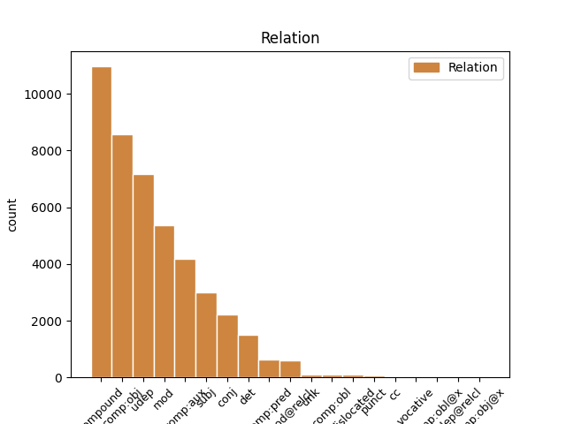
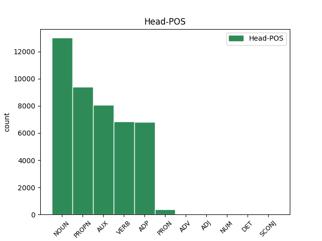
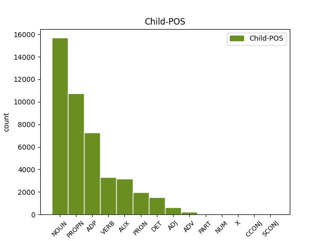

Distribution of features within this leaf



Agreement Rules sorted by frequency.
- When the dependent token is the compound(compound) of the head token, and the head token is PROPN and the dependent token is PROPN.
1 ایڈمرل _ _ _ _ 0 _ _ _
2 مولن _ _ _ _ 0 _ _ _
3 نے _ _ _ _ 0 _ _ _
4 امریکہ _ _ _ _ 0 _ _ _
5 کی _ _ _ _ 0 _ _ _
6 جانب _ _ _ _ 0 _ _ _
7 سے _ _ _ _ 0 _ _ _
8 اعتماد _ _ _ _ 0 _ _ _
9 کے _ _ _ _ 0 _ _ _
10 فقدان _ _ _ _ 0 _ _ _
11 پر _ _ _ _ 0 _ _ _
12 بات _ _ _ _ 0 _ _ _
13 کرتے _ _ _ _ 0 _ _ _
14 ہوئے _ _ _ _ 0 _ _ _
15 کہا _ _ _ _ 0 _ _ _
16 کہ _ _ _ _ 0 _ _ _
17 آئی _ _ _ _ 0 _ _ _
18 ایس _ _ _ _ 0 _ _ _
19 آئی _ _ _ _ 0 _ _ _
20 کے _ _ _ _ 0 _ _ _
21 بعض _ _ _ _ 0 _ _ _
22 عناصر _ _ _ _ 0 _ _ _
23 حقانی حقانی PROPN NNPC Case=Nom|Gender=Masc|Number=Sing|Person=3 24 compound _ ChunkId=NP8|ChunkType=child|Tam=0|Vib=0
24 نیٹورک نیٹورک PROPN NNP Case=Acc|Gender=Masc|Number=Sing|Person=3 0 _ _ _
25 کی _ _ _ _ 0 _ _ _
26 مدد _ _ _ _ 0 _ _ _
27 کر _ _ _ _ 0 _ _ _
28 رہے _ _ _ _ 0 _ _ _
29 ہےں _ _ _ _ 0 _ _ _
30 ۔ _ _ _ _ 0 _ _ _
1 ایڈمرل _ _ _ _ 0 _ _ _
2 مولن _ _ _ _ 0 _ _ _
3 نے _ _ _ _ 0 _ _ _
4 امریکہ _ _ _ _ 0 _ _ _
5 کی _ _ _ _ 0 _ _ _
6 جانب _ _ _ _ 0 _ _ _
7 سے _ _ _ _ 0 _ _ _
8 اعتماد _ _ _ _ 0 _ _ _
9 کے _ _ _ _ 0 _ _ _
10 فقدان _ _ _ _ 0 _ _ _
11 پر _ _ _ _ 0 _ _ _
12 بات _ _ _ _ 0 _ _ _
13 کرتے _ _ _ _ 0 _ _ _
14 ہوئے _ _ _ _ 0 _ _ _
15 کہا _ _ _ _ 0 _ _ _
16 کہ _ _ _ _ 0 _ _ _
17 آئی _ _ _ _ 0 _ _ _
18 ایس _ _ _ _ 0 _ _ _
19 آئی _ _ _ _ 0 _ _ _
20 کے _ _ _ _ 0 _ _ _
21 بعض _ _ _ _ 0 _ _ _
22 عناصر _ _ _ _ 0 _ _ _
23 حقانی _ _ _ _ 0 _ _ _
24 نیٹورک _ _ _ _ 0 _ _ _
25 کی کا ADP PSP AdpType=Post|Case=Acc|Gender=Fem|Number=Sing 26 udep _ ChunkId=NP8|ChunkType=child
26 مدد مدد NOUN NN Case=Nom|Gender=Fem|Number=Sing|Person=3 0 _ _ _
27 کر _ _ _ _ 0 _ _ _
28 رہے _ _ _ _ 0 _ _ _
29 ہےں _ _ _ _ 0 _ _ _
30 ۔ _ _ _ _ 0 _ _ _
1 ایڈمرل _ _ _ _ 0 _ _ _
2 مولن _ _ _ _ 0 _ _ _
3 نے _ _ _ _ 0 _ _ _
4 امریکہ _ _ _ _ 0 _ _ _
5 کی _ _ _ _ 0 _ _ _
6 جانب _ _ _ _ 0 _ _ _
7 سے _ _ _ _ 0 _ _ _
8 اعتماد اعتماد NOUN NN Case=Acc|Gender=Masc|Number=Sing|Person=3 9 comp:obj _ ChunkId=NP3|ChunkType=head|Tam=0|Vib=0
9 کے کا ADP PSP AdpType=Post|Case=Acc|Gender=Masc|Number=Sing 0 _ _ _
10 فقدان _ _ _ _ 0 _ _ _
11 پر _ _ _ _ 0 _ _ _
12 بات _ _ _ _ 0 _ _ _
13 کرتے _ _ _ _ 0 _ _ _
14 ہوئے _ _ _ _ 0 _ _ _
15 کہا _ _ _ _ 0 _ _ _
16 کہ _ _ _ _ 0 _ _ _
17 آئی _ _ _ _ 0 _ _ _
18 ایس _ _ _ _ 0 _ _ _
19 آئی _ _ _ _ 0 _ _ _
20 کے _ _ _ _ 0 _ _ _
21 بعض _ _ _ _ 0 _ _ _
22 عناصر _ _ _ _ 0 _ _ _
23 حقانی _ _ _ _ 0 _ _ _
24 نیٹورک _ _ _ _ 0 _ _ _
25 کی _ _ _ _ 0 _ _ _
26 مدد _ _ _ _ 0 _ _ _
27 کر _ _ _ _ 0 _ _ _
28 رہے _ _ _ _ 0 _ _ _
29 ہےں _ _ _ _ 0 _ _ _
30 ۔ _ _ _ _ 0 _ _ _
1 ایڈمرل _ _ _ _ 0 _ _ _
2 مولن _ _ _ _ 0 _ _ _
3 نے _ _ _ _ 0 _ _ _
4 امریکہ _ _ _ _ 0 _ _ _
5 کی _ _ _ _ 0 _ _ _
6 جانب _ _ _ _ 0 _ _ _
7 سے _ _ _ _ 0 _ _ _
8 اعتماد _ _ _ _ 0 _ _ _
9 کے _ _ _ _ 0 _ _ _
10 فقدان _ _ _ _ 0 _ _ _
11 پر _ _ _ _ 0 _ _ _
12 بات _ _ _ _ 0 _ _ _
13 کرتے کر VERB VM Aspect=Imp|Gender=Masc|Number=Plur|VerbForm=Part|Voice=Act 14 comp:aux _ ChunkId=VGNF|ChunkType=head|Stype=declarative|Tam=wA|Vib=تا
14 ہوئے ہو AUX VAUX Aspect=Perf|Number=Plur|VerbForm=Part 0 _ _ _
15 کہا _ _ _ _ 0 _ _ _
16 کہ _ _ _ _ 0 _ _ _
17 آئی _ _ _ _ 0 _ _ _
18 ایس _ _ _ _ 0 _ _ _
19 آئی _ _ _ _ 0 _ _ _
20 کے _ _ _ _ 0 _ _ _
21 بعض _ _ _ _ 0 _ _ _
22 عناصر _ _ _ _ 0 _ _ _
23 حقانی _ _ _ _ 0 _ _ _
24 نیٹورک _ _ _ _ 0 _ _ _
25 کی _ _ _ _ 0 _ _ _
26 مدد _ _ _ _ 0 _ _ _
27 کر _ _ _ _ 0 _ _ _
28 رہے _ _ _ _ 0 _ _ _
29 ہےں _ _ _ _ 0 _ _ _
30 ۔ _ _ _ _ 0 _ _ _
1 اس _ _ _ _ 0 _ _ _
2 کے _ _ _ _ 0 _ _ _
3 ساتھ _ _ _ _ 0 _ _ _
4 ہی _ _ _ _ 0 _ _ _
5 انہوں _ _ _ _ 0 _ _ _
6 نے _ _ _ _ 0 _ _ _
7 اس _ _ _ _ 0 _ _ _
8 بات _ _ _ _ 0 _ _ _
9 کا _ _ _ _ 0 _ _ _
10 اعادہ اعادہ NOUN NN Case=Acc|Gender=Masc|Number=Sing|Person=3 12 compound _ ChunkId=NP4|ChunkType=head|Tam=0|Vib=0
11 بھی _ _ _ _ 0 _ _ _
12 کیا کر VERB VM Aspect=Perf|Gender=Masc|Number=Sing|Person=3|VerbForm=Part|Voice=Act 0 _ _ _
13 کہ _ _ _ _ 0 _ _ _
14 ہم _ _ _ _ 0 _ _ _
15 ماضی _ _ _ _ 0 _ _ _
16 کی _ _ _ _ 0 _ _ _
17 غلطیاں _ _ _ _ 0 _ _ _
18 نہیں _ _ _ _ 0 _ _ _
19 دہرائیں _ _ _ _ 0 _ _ _
20 گے _ _ _ _ 0 _ _ _
21 ۔ _ _ _ _ 0 _ _ _
1 ایڈمرل _ _ _ _ 0 _ _ _
2 مولن _ _ _ _ 0 _ _ _
3 نے _ _ _ _ 0 _ _ _
4 امریکہ _ _ _ _ 0 _ _ _
5 کی _ _ _ _ 0 _ _ _
6 جانب _ _ _ _ 0 _ _ _
7 سے _ _ _ _ 0 _ _ _
8 اعتماد _ _ _ _ 0 _ _ _
9 کے _ _ _ _ 0 _ _ _
10 فقدان _ _ _ _ 0 _ _ _
11 پر _ _ _ _ 0 _ _ _
12 بات _ _ _ _ 0 _ _ _
13 کرتے _ _ _ _ 0 _ _ _
14 ہوئے _ _ _ _ 0 _ _ _
15 کہا _ _ _ _ 0 _ _ _
16 کہ _ _ _ _ 0 _ _ _
17 آئی _ _ _ _ 0 _ _ _
18 ایس _ _ _ _ 0 _ _ _
19 آئی _ _ _ _ 0 _ _ _
20 کے _ _ _ _ 0 _ _ _
21 بعض _ _ _ _ 0 _ _ _
22 عناصر _ _ _ _ 0 _ _ _
23 حقانی _ _ _ _ 0 _ _ _
24 نیٹورک نیٹورک PROPN NNP Case=Acc|Gender=Masc|Number=Sing|Person=3 25 comp:obj _ ChunkId=NP8|ChunkType=head|Tam=0|Vib=0
25 کی کا ADP PSP AdpType=Post|Case=Acc|Gender=Fem|Number=Sing 0 _ _ _
26 مدد _ _ _ _ 0 _ _ _
27 کر _ _ _ _ 0 _ _ _
28 رہے _ _ _ _ 0 _ _ _
29 ہےں _ _ _ _ 0 _ _ _
30 ۔ _ _ _ _ 0 _ _ _
1 افغانستان _ _ _ _ 0 _ _ _
2 مےں _ _ _ _ 0 _ _ _
3 امریکی _ _ _ _ 0 _ _ _
4 مداخلت _ _ _ _ 0 _ _ _
5 کے _ _ _ _ 0 _ _ _
6 حوالے _ _ _ _ 0 _ _ _
7 سے _ _ _ _ 0 _ _ _
8 پاکستان _ _ _ _ 0 _ _ _
9 کے _ _ _ _ 0 _ _ _
10 بارے _ _ _ _ 0 _ _ _
11 مےں _ _ _ _ 0 _ _ _
12 امریکی _ _ _ _ 0 _ _ _
13 پالیسی _ _ _ _ 0 _ _ _
14 مےں _ _ _ _ 0 _ _ _
15 '' _ _ _ _ 0 _ _ _
16 ڈومور _ _ _ _ 0 _ _ _
17 '' _ _ _ _ 0 _ _ _
18 کا _ _ _ _ 0 _ _ _
19 لفظ _ _ _ _ 0 _ _ _
20 بار بار NOUN NN Case=Nom|Gender=Masc|Number=Sing|Person=3 0 _ _ _
21 بار بار NOUN RDP Case=Nom|Echo=Rdp|Gender=Masc|Number=Sing 20 compound _ ChunkId=NP6|ChunkType=child
22 دہرایا _ _ _ _ 0 _ _ _
23 جاتا _ _ _ _ 0 _ _ _
24 رہا _ _ _ _ 0 _ _ _
25 ہے _ _ _ _ 0 _ _ _
26 حالانکہ _ _ _ _ 0 _ _ _
27 اس _ _ _ _ 0 _ _ _
28 جنگ _ _ _ _ 0 _ _ _
29 مےں _ _ _ _ 0 _ _ _
30 پاکستانیوں _ _ _ _ 0 _ _ _
31 کی _ _ _ _ 0 _ _ _
32 قربانیاں _ _ _ _ 0 _ _ _
33 سب _ _ _ _ 0 _ _ _
34 سے _ _ _ _ 0 _ _ _
35 زیادہ _ _ _ _ 0 _ _ _
36 ہےں _ _ _ _ 0 _ _ _
37 ۔ _ _ _ _ 0 _ _ _
1 ایڈمرل _ _ _ _ 0 _ _ _
2 مولن _ _ _ _ 0 _ _ _
3 نے _ _ _ _ 0 _ _ _
4 امریکہ _ _ _ _ 0 _ _ _
5 کی _ _ _ _ 0 _ _ _
6 جانب _ _ _ _ 0 _ _ _
7 سے _ _ _ _ 0 _ _ _
8 اعتماد _ _ _ _ 0 _ _ _
9 کے _ _ _ _ 0 _ _ _
10 فقدان _ _ _ _ 0 _ _ _
11 پر _ _ _ _ 0 _ _ _
12 بات _ _ _ _ 0 _ _ _
13 کرتے _ _ _ _ 0 _ _ _
14 ہوئے _ _ _ _ 0 _ _ _
15 کہا _ _ _ _ 0 _ _ _
16 کہ _ _ _ _ 0 _ _ _
17 آئی _ _ _ _ 0 _ _ _
18 ایس _ _ _ _ 0 _ _ _
19 آئی _ _ _ _ 0 _ _ _
20 کے _ _ _ _ 0 _ _ _
21 بعض _ _ _ _ 0 _ _ _
22 عناصر _ _ _ _ 0 _ _ _
23 حقانی _ _ _ _ 0 _ _ _
24 نیٹورک _ _ _ _ 0 _ _ _
25 کی _ _ _ _ 0 _ _ _
26 مدد _ _ _ _ 0 _ _ _
27 کر _ _ _ _ 0 _ _ _
28 رہے رہ AUX VAUX Aspect=Perf|Gender=Masc|Number=Plur|VerbForm=Part 29 comp:aux _ ChunkId=VGF2|ChunkType=child|Tam=yA|Vib=یا
29 ہےں ہے AUX VAUX Mood=Ind|Number=Plur|Person=3|Tense=Pres|VerbForm=Fin 0 _ _ _
30 ۔ _ _ _ _ 0 _ _ _
1 اس _ _ _ _ 0 _ _ _
2 کے _ _ _ _ 0 _ _ _
3 ساتھ _ _ _ _ 0 _ _ _
4 ہی _ _ _ _ 0 _ _ _
5 انہوں _ _ _ _ 0 _ _ _
6 نے _ _ _ _ 0 _ _ _
7 اس یہ DET DEM Case=Nom|Number=Sing|Person=3|PronType=Dem 8 det _ ChunkId=NP3|ChunkType=child
8 بات بات NOUN NN Case=Acc|Gender=Fem|Number=Sing|Person=3 0 _ _ _
9 کا _ _ _ _ 0 _ _ _
10 اعادہ _ _ _ _ 0 _ _ _
11 بھی _ _ _ _ 0 _ _ _
12 کیا _ _ _ _ 0 _ _ _
13 کہ _ _ _ _ 0 _ _ _
14 ہم _ _ _ _ 0 _ _ _
15 ماضی _ _ _ _ 0 _ _ _
16 کی _ _ _ _ 0 _ _ _
17 غلطیاں _ _ _ _ 0 _ _ _
18 نہیں _ _ _ _ 0 _ _ _
19 دہرائیں _ _ _ _ 0 _ _ _
20 گے _ _ _ _ 0 _ _ _
21 ۔ _ _ _ _ 0 _ _ _
1 اس _ _ _ _ 0 _ _ _
2 کے _ _ _ _ 0 _ _ _
3 ساتھ _ _ _ _ 0 _ _ _
4 ہی _ _ _ _ 0 _ _ _
5 انہوں _ _ _ _ 0 _ _ _
6 نے _ _ _ _ 0 _ _ _
7 اس _ _ _ _ 0 _ _ _
8 بات _ _ _ _ 0 _ _ _
9 کا _ _ _ _ 0 _ _ _
10 اعادہ _ _ _ _ 0 _ _ _
11 بھی _ _ _ _ 0 _ _ _
12 کیا _ _ _ _ 0 _ _ _
13 کہ _ _ _ _ 0 _ _ _
14 ہم _ _ _ _ 0 _ _ _
15 ماضی _ _ _ _ 0 _ _ _
16 کی _ _ _ _ 0 _ _ _
17 غلطیاں غلطی NOUN NN Case=Nom|Gender=Fem|Number=Plur|Person=3 19 comp:obj _ ChunkId=NP7|ChunkType=head|Tam=0|Vib=0
18 نہیں _ _ _ _ 0 _ _ _
19 دہرائیں دہرا VERB VM Mood=Sub|Number=Plur|VerbForm=Fin|Voice=Act 0 _ _ _
20 گے _ _ _ _ 0 _ _ _
21 ۔ _ _ _ _ 0 _ _ _
1 ایڈمرل _ _ _ _ 0 _ _ _
2 مولن _ _ _ _ 0 _ _ _
3 نے _ _ _ _ 0 _ _ _
4 امریکہ _ _ _ _ 0 _ _ _
5 کی _ _ _ _ 0 _ _ _
6 جانب _ _ _ _ 0 _ _ _
7 سے _ _ _ _ 0 _ _ _
8 اعتماد _ _ _ _ 0 _ _ _
9 کے _ _ _ _ 0 _ _ _
10 فقدان _ _ _ _ 0 _ _ _
11 پر _ _ _ _ 0 _ _ _
12 بات _ _ _ _ 0 _ _ _
13 کرتے _ _ _ _ 0 _ _ _
14 ہوئے _ _ _ _ 0 _ _ _
15 کہا _ _ _ _ 0 _ _ _
16 کہ _ _ _ _ 0 _ _ _
17 آئی _ _ _ _ 0 _ _ _
18 ایس _ _ _ _ 0 _ _ _
19 آئی _ _ _ _ 0 _ _ _
20 کے _ _ _ _ 0 _ _ _
21 بعض _ _ _ _ 0 _ _ _
22 عناصر عنصر NOUN NN Case=Nom|Gender=Masc|Number=Plur|Person=3 29 subj _ ChunkId=NP7|ChunkType=head|Tam=0|Vib=0
23 حقانی _ _ _ _ 0 _ _ _
24 نیٹورک _ _ _ _ 0 _ _ _
25 کی _ _ _ _ 0 _ _ _
26 مدد _ _ _ _ 0 _ _ _
27 کر _ _ _ _ 0 _ _ _
28 رہے _ _ _ _ 0 _ _ _
29 ہےں ہے AUX VAUX Mood=Ind|Number=Plur|Person=3|Tense=Pres|VerbForm=Fin 0 _ _ _
30 ۔ _ _ _ _ 0 _ _ _
1 امریکی _ _ _ _ 0 _ _ _
2 مسلح _ _ _ _ 0 _ _ _
3 افواج _ _ _ _ 0 _ _ _
4 کے _ _ _ _ 0 _ _ _
5 سربراہ سربراہ NOUN NN Case=Nom|Gender=Masc|Number=Sing|Person=3 13 mod _ ChunkId=NP2|ChunkType=head|Tam=0|Vib=0
6 چیرمین _ _ _ _ 0 _ _ _
7 جوائنٹ _ _ _ _ 0 _ _ _
8 چیفس _ _ _ _ 0 _ _ _
9 آف _ _ _ _ 0 _ _ _
10 اسٹاف _ _ _ _ 0 _ _ _
11 ایڈمرل _ _ _ _ 0 _ _ _
12 مائیک _ _ _ _ 0 _ _ _
13 مولن مولن PROPN NNP Case=Acc|Gender=Masc|Number=Sing|Person=3 0 _ _ _
14 نے _ _ _ _ 0 _ _ _
15 جنگ _ _ _ _ 0 _ _ _
16 کو _ _ _ _ 0 _ _ _
17 انٹرویو _ _ _ _ 0 _ _ _
18 دیتے _ _ _ _ 0 _ _ _
19 ہوئے _ _ _ _ 0 _ _ _
20 اس _ _ _ _ 0 _ _ _
21 بات _ _ _ _ 0 _ _ _
22 کا _ _ _ _ 0 _ _ _
23 اعتراف _ _ _ _ 0 _ _ _
24 کیا _ _ _ _ 0 _ _ _
25 ہے _ _ _ _ 0 _ _ _
26 کہ _ _ _ _ 0 _ _ _
27 پاک _ _ _ _ 0 _ _ _
28 امریکہ _ _ _ _ 0 _ _ _
29 تعلقات _ _ _ _ 0 _ _ _
30 گزشتہ _ _ _ _ 0 _ _ _
31 کئی _ _ _ _ 0 _ _ _
32 ماہ _ _ _ _ 0 _ _ _
33 سے _ _ _ _ 0 _ _ _
34 مشکلات _ _ _ _ 0 _ _ _
35 کا _ _ _ _ 0 _ _ _
36 شکار _ _ _ _ 0 _ _ _
37 ہےں _ _ _ _ 0 _ _ _
38 اور _ _ _ _ 0 _ _ _
39 دونوں _ _ _ _ 0 _ _ _
40 ملکوں _ _ _ _ 0 _ _ _
41 کے _ _ _ _ 0 _ _ _
42 درمیان _ _ _ _ 0 _ _ _
43 اعتماد _ _ _ _ 0 _ _ _
44 کا _ _ _ _ 0 _ _ _
45 فقدان _ _ _ _ 0 _ _ _
46 ہے _ _ _ _ 0 _ _ _
47 ۔ _ _ _ _ 0 _ _ _
1 کانگریس _ _ _ _ 0 _ _ _
2 کی _ _ _ _ 0 _ _ _
3 رکن رکن NOUN NN Case=Nom|Gender=Masc|Number=Sing|Person=3 0 _ _ _
4 اسمبلی اسمبلی NOUN NN Case=Acc|Gender=Masc|Number=Sing|Person=3 3 mod _ ChunkId=NP3|ChunkType=head|Tam=0|Vib=0
5 نے _ _ _ _ 0 _ _ _
6 ان _ _ _ _ 0 _ _ _
7 کے _ _ _ _ 0 _ _ _
8 شوہر _ _ _ _ 0 _ _ _
9 ایم _ _ _ _ 0 _ _ _
10 ایل _ _ _ _ 0 _ _ _
11 سی _ _ _ _ 0 _ _ _
12 مسٹر _ _ _ _ 0 _ _ _
13 کونڈا _ _ _ _ 0 _ _ _
14 مرلی _ _ _ _ 0 _ _ _
15 کی _ _ _ _ 0 _ _ _
16 سیکوریٹی _ _ _ _ 0 _ _ _
17 گھٹا _ _ _ _ 0 _ _ _
18 دینے _ _ _ _ 0 _ _ _
19 کی _ _ _ _ 0 _ _ _
20 سخت _ _ _ _ 0 _ _ _
21 مذمت _ _ _ _ 0 _ _ _
22 کرتے _ _ _ _ 0 _ _ _
23 ہوئے _ _ _ _ 0 _ _ _
24 کہا _ _ _ _ 0 _ _ _
25 کہ _ _ _ _ 0 _ _ _
26 اگر _ _ _ _ 0 _ _ _
27 ان _ _ _ _ 0 _ _ _
28 کے _ _ _ _ 0 _ _ _
29 شوہر _ _ _ _ 0 _ _ _
30 کو _ _ _ _ 0 _ _ _
31 کوئی _ _ _ _ 0 _ _ _
32 نقصان _ _ _ _ 0 _ _ _
33 پہونچتا _ _ _ _ 0 _ _ _
34 ہے _ _ _ _ 0 _ _ _
35 تو _ _ _ _ 0 _ _ _
36 اس _ _ _ _ 0 _ _ _
37 کی _ _ _ _ 0 _ _ _
38 ذمہ_داری _ _ _ _ 0 _ _ _
39 صدر _ _ _ _ 0 _ _ _
40 کانگریس _ _ _ _ 0 _ _ _
41 سونیا _ _ _ _ 0 _ _ _
42 گاندھی _ _ _ _ 0 _ _ _
43 کے _ _ _ _ 0 _ _ _
44 ساتھ _ _ _ _ 0 _ _ _
45 ساتھ _ _ _ _ 0 _ _ _
46 ریاستی _ _ _ _ 0 _ _ _
47 حکومت _ _ _ _ 0 _ _ _
48 پر _ _ _ _ 0 _ _ _
49 عائد _ _ _ _ 0 _ _ _
50 ہوگی _ _ _ _ 0 _ _ _
51 ۔ _ _ _ _ 0 _ _ _
1 آئی _ _ _ _ 0 _ _ _
2 جی _ _ _ _ 0 _ _ _
3 حیدرآباد حیدرآباد PROPN NNP Case=Nom|Gender=Masc|Number=Sing|Person=3 4 mod _ ChunkId=NP|ChunkType=child|Tam=0|Vib=0
4 رینج رینج NOUN NN Case=Nom|Gender=Masc|Number=Sing|Person=3 0 _ _ _
5 مسٹر _ _ _ _ 0 _ _ _
6 راجو _ _ _ _ 0 _ _ _
7 رتن _ _ _ _ 0 _ _ _
8 نے _ _ _ _ 0 _ _ _
9 نظام _ _ _ _ 0 _ _ _
10 آباد _ _ _ _ 0 _ _ _
11 ٹاون _ _ _ _ 0 _ _ _
12 اور _ _ _ _ 0 _ _ _
13 نظام _ _ _ _ 0 _ _ _
14 آباد _ _ _ _ 0 _ _ _
15 رورل _ _ _ _ 0 _ _ _
16 کے _ _ _ _ 0 _ _ _
17 علاوہ _ _ _ _ 0 _ _ _
18 جملہ _ _ _ _ 0 _ _ _
19 12 _ _ _ _ 0 _ _ _
20 سرکل _ _ _ _ 0 _ _ _
21 انسپکٹروں _ _ _ _ 0 _ _ _
22 کا _ _ _ _ 0 _ _ _
23 تبادلہ _ _ _ _ 0 _ _ _
24 کیا _ _ _ _ 0 _ _ _
25 ۔ _ _ _ _ 0 _ _ _
1 ہمیں _ _ _ _ 0 _ _ _
2 تادیبی _ _ _ _ 0 _ _ _
3 کارروائی _ _ _ _ 0 _ _ _
4 کا _ _ _ _ 0 _ _ _
5 کوئی _ _ _ _ 0 _ _ _
6 ڈر ڈر NOUN NN Case=Acc|Gender=Masc|Number=Sing|Person=3 0 _ _ _
7 و _ _ _ _ 0 _ _ _
8 خوف خوف NOUN NN Case=Nom|Gender=Masc|Number=Sing|Person=3 6 conj _ ChunkId=NP4|ChunkType=head|Tam=0|Vib=0
9 نہیں _ _ _ _ 0 _ _ _
10 ہے _ _ _ _ 0 _ _ _
11 ۔ _ _ _ _ 0 _ _ _
1 آئی _ _ _ _ 0 _ _ _
2 جی _ _ _ _ 0 _ _ _
3 حیدرآباد _ _ _ _ 0 _ _ _
4 رینج _ _ _ _ 0 _ _ _
5 مسٹر _ _ _ _ 0 _ _ _
6 راجو _ _ _ _ 0 _ _ _
7 رتن _ _ _ _ 0 _ _ _
8 نے _ _ _ _ 0 _ _ _
9 نظام _ _ _ _ 0 _ _ _
10 آباد _ _ _ _ 0 _ _ _
11 ٹاون ٹاون PROPN NNP Case=Nom|Gender=Masc|Number=Sing|Person=3 0 _ _ _
12 اور _ _ _ _ 0 _ _ _
13 نظام _ _ _ _ 0 _ _ _
14 آباد _ _ _ _ 0 _ _ _
15 رورل رورل PROPN NNP Case=Acc|Gender=Masc|Number=Sing|Person=3 11 conj _ ChunkId=NP3|ChunkType=head|Tam=0|Vib=0
16 کے _ _ _ _ 0 _ _ _
17 علاوہ _ _ _ _ 0 _ _ _
18 جملہ _ _ _ _ 0 _ _ _
19 12 _ _ _ _ 0 _ _ _
20 سرکل _ _ _ _ 0 _ _ _
21 انسپکٹروں _ _ _ _ 0 _ _ _
22 کا _ _ _ _ 0 _ _ _
23 تبادلہ _ _ _ _ 0 _ _ _
24 کیا _ _ _ _ 0 _ _ _
25 ۔ _ _ _ _ 0 _ _ _
1 ان _ _ _ _ 0 _ _ _
2 کے _ _ _ _ 0 _ _ _
3 علاوہ _ _ _ _ 0 _ _ _
4 ایس _ _ _ _ 0 _ _ _
5 ایچ _ _ _ _ 0 _ _ _
6 او _ _ _ _ 0 _ _ _
7 کاماریڈی کاماریڈی PROPN NNP Case=Nom|Gender=Masc|Number=Sing|Person=3 9 mod _ ChunkId=NP2|ChunkType=child|Tam=0|Vib=0
8 پرکاش _ _ _ _ 0 _ _ _
9 یادو یادو PROPN NNP Case=Acc|Gender=Masc|Number=Sing|Person=3 0 _ _ _
10 کو _ _ _ _ 0 _ _ _
11 بھی _ _ _ _ 0 _ _ _
12 اسی _ _ _ _ 0 _ _ _
13 جگہ _ _ _ _ 0 _ _ _
14 پر _ _ _ _ 0 _ _ _
15 برقرار _ _ _ _ 0 _ _ _
16 رکھا _ _ _ _ 0 _ _ _
17 ۔ _ _ _ _ 0 _ _ _
1 ایڈمرل _ _ _ _ 0 _ _ _
2 مولن _ _ _ _ 0 _ _ _
3 نے _ _ _ _ 0 _ _ _
4 امریکہ _ _ _ _ 0 _ _ _
5 کی کا ADP PSP AdpType=Post|Case=Acc|Gender=Fem|Number=Sing 6 comp:obj _ ChunkId=NP2|ChunkType=child
6 جانب جانب ADP NST AdpType=Post|Case=Acc|Gender=Masc|Number=Sing|Person=3 0 _ _ _
7 سے _ _ _ _ 0 _ _ _
8 اعتماد _ _ _ _ 0 _ _ _
9 کے _ _ _ _ 0 _ _ _
10 فقدان _ _ _ _ 0 _ _ _
11 پر _ _ _ _ 0 _ _ _
12 بات _ _ _ _ 0 _ _ _
13 کرتے _ _ _ _ 0 _ _ _
14 ہوئے _ _ _ _ 0 _ _ _
15 کہا _ _ _ _ 0 _ _ _
16 کہ _ _ _ _ 0 _ _ _
17 آئی _ _ _ _ 0 _ _ _
18 ایس _ _ _ _ 0 _ _ _
19 آئی _ _ _ _ 0 _ _ _
20 کے _ _ _ _ 0 _ _ _
21 بعض _ _ _ _ 0 _ _ _
22 عناصر _ _ _ _ 0 _ _ _
23 حقانی _ _ _ _ 0 _ _ _
24 نیٹورک _ _ _ _ 0 _ _ _
25 کی _ _ _ _ 0 _ _ _
26 مدد _ _ _ _ 0 _ _ _
27 کر _ _ _ _ 0 _ _ _
28 رہے _ _ _ _ 0 _ _ _
29 ہےں _ _ _ _ 0 _ _ _
30 ۔ _ _ _ _ 0 _ _ _
1 ان _ _ _ _ 0 _ _ _
2 تعلقات _ _ _ _ 0 _ _ _
3 کے _ _ _ _ 0 _ _ _
4 نتیجہ _ _ _ _ 0 _ _ _
5 میں _ _ _ _ 0 _ _ _
6 دونوں دو ADJ JJ Case=Acc|Gender=Masc|Number=Plur 7 mod _ ChunkId=NP3|ChunkType=child
7 ملکوں مُلک NOUN NN Case=Acc|Gender=Masc|Number=Plur|Person=3 0 _ _ _
8 کے _ _ _ _ 0 _ _ _
9 مابین _ _ _ _ 0 _ _ _
10 دیرپا _ _ _ _ 0 _ _ _
11 شراکت _ _ _ _ 0 _ _ _
12 کو _ _ _ _ 0 _ _ _
13 یقینی _ _ _ _ 0 _ _ _
14 بنایا _ _ _ _ 0 _ _ _
15 جا _ _ _ _ 0 _ _ _
16 سکے _ _ _ _ 0 _ _ _
17 ۔ _ _ _ _ 0 _ _ _
1 کانگریس _ _ _ _ 0 _ _ _
2 کی _ _ _ _ 0 _ _ _
3 رکن _ _ _ _ 0 _ _ _
4 اسمبلی _ _ _ _ 0 _ _ _
5 نے _ _ _ _ 0 _ _ _
6 ان _ _ _ _ 0 _ _ _
7 کے _ _ _ _ 0 _ _ _
8 شوہر _ _ _ _ 0 _ _ _
9 ایم _ _ _ _ 0 _ _ _
10 ایل _ _ _ _ 0 _ _ _
11 سی _ _ _ _ 0 _ _ _
12 مسٹر _ _ _ _ 0 _ _ _
13 کونڈا _ _ _ _ 0 _ _ _
14 مرلی _ _ _ _ 0 _ _ _
15 کی _ _ _ _ 0 _ _ _
16 سیکوریٹی _ _ _ _ 0 _ _ _
17 گھٹا _ _ _ _ 0 _ _ _
18 دینے _ _ _ _ 0 _ _ _
19 کی _ _ _ _ 0 _ _ _
20 سخت _ _ _ _ 0 _ _ _
21 مذمت _ _ _ _ 0 _ _ _
22 کرتے _ _ _ _ 0 _ _ _
23 ہوئے _ _ _ _ 0 _ _ _
24 کہا _ _ _ _ 0 _ _ _
25 کہ _ _ _ _ 0 _ _ _
26 اگر _ _ _ _ 0 _ _ _
27 ان _ _ _ _ 0 _ _ _
28 کے _ _ _ _ 0 _ _ _
29 شوہر _ _ _ _ 0 _ _ _
30 کو _ _ _ _ 0 _ _ _
31 کوئی _ _ _ _ 0 _ _ _
32 نقصان _ _ _ _ 0 _ _ _
33 پہونچتا _ _ _ _ 0 _ _ _
34 ہے _ _ _ _ 0 _ _ _
35 تو _ _ _ _ 0 _ _ _
36 اس یہ PRON PRP Case=Acc|Number=Sing|Person=3|PronType=Prs 37 comp:obj _ ChunkId=NP12|ChunkType=head|Tam=0|Vib=0
37 کی کا ADP PSP AdpType=Post|Case=Nom|Gender=Fem|Number=Sing 0 _ _ _
38 ذمہ_داری _ _ _ _ 0 _ _ _
39 صدر _ _ _ _ 0 _ _ _
40 کانگریس _ _ _ _ 0 _ _ _
41 سونیا _ _ _ _ 0 _ _ _
42 گاندھی _ _ _ _ 0 _ _ _
43 کے _ _ _ _ 0 _ _ _
44 ساتھ _ _ _ _ 0 _ _ _
45 ساتھ _ _ _ _ 0 _ _ _
46 ریاستی _ _ _ _ 0 _ _ _
47 حکومت _ _ _ _ 0 _ _ _
48 پر _ _ _ _ 0 _ _ _
49 عائد _ _ _ _ 0 _ _ _
50 ہوگی _ _ _ _ 0 _ _ _
51 ۔ _ _ _ _ 0 _ _ _
1 اس _ _ _ _ 0 _ _ _
2 کے _ _ _ _ 0 _ _ _
3 ساتھ _ _ _ _ 0 _ _ _
4 ہی _ _ _ _ 0 _ _ _
5 انہوں _ _ _ _ 0 _ _ _
6 نے _ _ _ _ 0 _ _ _
7 اس _ _ _ _ 0 _ _ _
8 بات _ _ _ _ 0 _ _ _
9 کا _ _ _ _ 0 _ _ _
10 اعادہ _ _ _ _ 0 _ _ _
11 بھی _ _ _ _ 0 _ _ _
12 کیا _ _ _ _ 0 _ _ _
13 کہ _ _ _ _ 0 _ _ _
14 ہم مےں PRON PRP Case=Nom|Number=Plur|Person=1|PronType=Prs 20 subj _ ChunkId=NP5|ChunkType=head|Tam=0|Vib=0
15 ماضی _ _ _ _ 0 _ _ _
16 کی _ _ _ _ 0 _ _ _
17 غلطیاں _ _ _ _ 0 _ _ _
18 نہیں _ _ _ _ 0 _ _ _
19 دہرائیں _ _ _ _ 0 _ _ _
20 گے گا AUX VAUX Gender=Masc|Mood=Ind|Number=Plur|Person=3|Tense=Fut|VerbForm=Fin 0 _ _ _
21 ۔ _ _ _ _ 0 _ _ _
1 امریکی _ _ _ _ 0 _ _ _
2 مسلح _ _ _ _ 0 _ _ _
3 افواج _ _ _ _ 0 _ _ _
4 کے _ _ _ _ 0 _ _ _
5 سربراہ _ _ _ _ 0 _ _ _
6 چیرمین _ _ _ _ 0 _ _ _
7 جوائنٹ _ _ _ _ 0 _ _ _
8 چیفس _ _ _ _ 0 _ _ _
9 آف _ _ _ _ 0 _ _ _
10 اسٹاف _ _ _ _ 0 _ _ _
11 ایڈمرل _ _ _ _ 0 _ _ _
12 مائیک _ _ _ _ 0 _ _ _
13 مولن _ _ _ _ 0 _ _ _
14 نے _ _ _ _ 0 _ _ _
15 جنگ _ _ _ _ 0 _ _ _
16 کو _ _ _ _ 0 _ _ _
17 انٹرویو _ _ _ _ 0 _ _ _
18 دیتے _ _ _ _ 0 _ _ _
19 ہوئے _ _ _ _ 0 _ _ _
20 اس _ _ _ _ 0 _ _ _
21 بات _ _ _ _ 0 _ _ _
22 کا _ _ _ _ 0 _ _ _
23 اعتراف _ _ _ _ 0 _ _ _
24 کیا _ _ _ _ 0 _ _ _
25 ہے _ _ _ _ 0 _ _ _
26 کہ _ _ _ _ 0 _ _ _
27 پاک _ _ _ _ 0 _ _ _
28 امریکہ _ _ _ _ 0 _ _ _
29 تعلقات تعلق NOUN NN Case=Nom|Gender=Masc|Number=Plur|Person=3 37 subj _ ChunkId=NP8|ChunkType=head|Tam=0|Vib=0
30 گزشتہ _ _ _ _ 0 _ _ _
31 کئی _ _ _ _ 0 _ _ _
32 ماہ _ _ _ _ 0 _ _ _
33 سے _ _ _ _ 0 _ _ _
34 مشکلات _ _ _ _ 0 _ _ _
35 کا _ _ _ _ 0 _ _ _
36 شکار _ _ _ _ 0 _ _ _
37 ہےں ہے VERB VM Mood=Ind|Number=Plur|Person=3|Tense=Pres|VerbForm=Fin|Voice=Act 0 _ _ _
38 اور _ _ _ _ 0 _ _ _
39 دونوں _ _ _ _ 0 _ _ _
40 ملکوں _ _ _ _ 0 _ _ _
41 کے _ _ _ _ 0 _ _ _
42 درمیان _ _ _ _ 0 _ _ _
43 اعتماد _ _ _ _ 0 _ _ _
44 کا _ _ _ _ 0 _ _ _
45 فقدان _ _ _ _ 0 _ _ _
46 ہے _ _ _ _ 0 _ _ _
47 ۔ _ _ _ _ 0 _ _ _
1 ہمیں _ _ _ _ 0 _ _ _
2 تادیبی _ _ _ _ 0 _ _ _
3 کارروائی _ _ _ _ 0 _ _ _
4 کا _ _ _ _ 0 _ _ _
5 کوئی _ _ _ _ 0 _ _ _
6 ڈر ڈر NOUN NN Case=Acc|Gender=Masc|Number=Sing|Person=3 10 comp:pred _ ChunkId=NP3|ChunkType=head|Tam=0|Vib=0
7 و _ _ _ _ 0 _ _ _
8 خوف _ _ _ _ 0 _ _ _
9 نہیں _ _ _ _ 0 _ _ _
10 ہے ہے AUX VM Mood=Ind|Number=Sing|Person=3|Tense=Pres|VerbForm=Fin|Voice=Act 0 _ _ _
11 ۔ _ _ _ _ 0 _ _ _
1 ایڈمرل ایڈمرل NOUN NNC Case=Nom|Gender=Masc|Number=Sing|Person=3 2 compound _ ChunkId=NP|ChunkType=child|Tam=0|Vib=0
2 مولن مولن PROPN NNP Case=Acc|Gender=Masc|Number=Sing|Person=3 0 _ _ _
3 نے _ _ _ _ 0 _ _ _
4 امریکہ _ _ _ _ 0 _ _ _
5 کی _ _ _ _ 0 _ _ _
6 جانب _ _ _ _ 0 _ _ _
7 سے _ _ _ _ 0 _ _ _
8 اعتماد _ _ _ _ 0 _ _ _
9 کے _ _ _ _ 0 _ _ _
10 فقدان _ _ _ _ 0 _ _ _
11 پر _ _ _ _ 0 _ _ _
12 بات _ _ _ _ 0 _ _ _
13 کرتے _ _ _ _ 0 _ _ _
14 ہوئے _ _ _ _ 0 _ _ _
15 کہا _ _ _ _ 0 _ _ _
16 کہ _ _ _ _ 0 _ _ _
17 آئی _ _ _ _ 0 _ _ _
18 ایس _ _ _ _ 0 _ _ _
19 آئی _ _ _ _ 0 _ _ _
20 کے _ _ _ _ 0 _ _ _
21 بعض _ _ _ _ 0 _ _ _
22 عناصر _ _ _ _ 0 _ _ _
23 حقانی _ _ _ _ 0 _ _ _
24 نیٹورک _ _ _ _ 0 _ _ _
25 کی _ _ _ _ 0 _ _ _
26 مدد _ _ _ _ 0 _ _ _
27 کر _ _ _ _ 0 _ _ _
28 رہے _ _ _ _ 0 _ _ _
29 ہےں _ _ _ _ 0 _ _ _
30 ۔ _ _ _ _ 0 _ _ _
1 30 _ _ _ _ 0 _ _ _
2 سال _ _ _ _ 0 _ _ _
3 کے _ _ _ _ 0 _ _ _
4 طویل _ _ _ _ 0 _ _ _
5 اور _ _ _ _ 0 _ _ _
6 صبرآزما _ _ _ _ 0 _ _ _
7 دور _ _ _ _ 0 _ _ _
8 کے _ _ _ _ 0 _ _ _
9 بعد بعد ADP NST AdpType=Post|Case=Nom|Gender=Masc|Number=Sing|Person=3 23 udep _ AltTag=ADP-NOUN|ChunkId=NP3|ChunkType=child
10 سری _ _ _ _ 0 _ _ _
11 لنکا _ _ _ _ 0 _ _ _
12 کو _ _ _ _ 0 _ _ _
13 میں _ _ _ _ 0 _ _ _
14 ایک _ _ _ _ 0 _ _ _
15 متحد _ _ _ _ 0 _ _ _
16 اور _ _ _ _ 0 _ _ _
17 مکمل _ _ _ _ 0 _ _ _
18 ملک _ _ _ _ 0 _ _ _
19 کہنے _ _ _ _ 0 _ _ _
20 کے _ _ _ _ 0 _ _ _
21 موقف _ _ _ _ 0 _ _ _
22 میں _ _ _ _ 0 _ _ _
23 ہوں ہے AUX VM Mood=Ind|Number=Sing|Person=1|Tense=Pres|VerbForm=Fin|Voice=Act 0 _ _ _
24 ۔ _ _ _ _ 0 _ _ _
1 افغانستان _ _ _ _ 0 _ _ _
2 مےں _ _ _ _ 0 _ _ _
3 امریکی _ _ _ _ 0 _ _ _
4 مداخلت _ _ _ _ 0 _ _ _
5 کے _ _ _ _ 0 _ _ _
6 حوالے _ _ _ _ 0 _ _ _
7 سے _ _ _ _ 0 _ _ _
8 پاکستان _ _ _ _ 0 _ _ _
9 کے _ _ _ _ 0 _ _ _
10 بارے _ _ _ _ 0 _ _ _
11 مےں _ _ _ _ 0 _ _ _
12 امریکی _ _ _ _ 0 _ _ _
13 پالیسی _ _ _ _ 0 _ _ _
14 مےں _ _ _ _ 0 _ _ _
15 '' _ _ _ _ 0 _ _ _
16 ڈومور _ _ _ _ 0 _ _ _
17 '' _ _ _ _ 0 _ _ _
18 کا _ _ _ _ 0 _ _ _
19 لفظ _ _ _ _ 0 _ _ _
20 بار بار NOUN NN Case=Nom|Gender=Masc|Number=Sing|Person=3 25 udep _ ChunkId=NP6|ChunkType=head|Tam=0|Vib=0
21 بار _ _ _ _ 0 _ _ _
22 دہرایا _ _ _ _ 0 _ _ _
23 جاتا _ _ _ _ 0 _ _ _
24 رہا _ _ _ _ 0 _ _ _
25 ہے ہے AUX VAUX Mood=Ind|Number=Sing|Tense=Pres|VerbForm=Fin 0 _ _ _
26 حالانکہ _ _ _ _ 0 _ _ _
27 اس _ _ _ _ 0 _ _ _
28 جنگ _ _ _ _ 0 _ _ _
29 مےں _ _ _ _ 0 _ _ _
30 پاکستانیوں _ _ _ _ 0 _ _ _
31 کی _ _ _ _ 0 _ _ _
32 قربانیاں _ _ _ _ 0 _ _ _
33 سب _ _ _ _ 0 _ _ _
34 سے _ _ _ _ 0 _ _ _
35 زیادہ _ _ _ _ 0 _ _ _
36 ہےں _ _ _ _ 0 _ _ _
37 ۔ _ _ _ _ 0 _ _ _
1 مغربی _ _ _ _ 0 _ _ _
2 بنگال _ _ _ _ 0 _ _ _
3 مےں _ _ _ _ 0 _ _ _
4 مسلمان _ _ _ _ 0 _ _ _
5 امن _ _ _ _ 0 _ _ _
6 و _ _ _ _ 0 _ _ _
7 یکجہتی _ _ _ _ 0 _ _ _
8 کے _ _ _ _ 0 _ _ _
9 ساتھ _ _ _ _ 0 _ _ _
10 رہتے رہ VERB VM Aspect=Imp|Gender=Masc|Number=Plur|VerbForm=Part|Voice=Act 0 _ _ _
11 ہےں _ _ _ _ 0 _ _ _
12 جبکہ _ _ _ _ 0 _ _ _
13 گجرات _ _ _ _ 0 _ _ _
14 مےں _ _ _ _ 0 _ _ _
15 مسلمان _ _ _ _ 0 _ _ _
16 غیریقینی _ _ _ _ 0 _ _ _
17 کیفیت _ _ _ _ 0 _ _ _
18 مےں _ _ _ _ 0 _ _ _
19 ہےں ہے AUX VM Mood=Ind|Number=Plur|Person=3|Tense=Pres|VerbForm=Fin|Voice=Act 10 conj _ AltTag=AUX-VERB|ChunkId=VGF2|ChunkType=head|SpaceAfter=No|Stype=declarative|Tam=hE|Vib=ہے
20 ۔ _ _ _ _ 0 _ _ _
1 مسٹر _ _ _ _ 0 _ _ _
2 این _ _ _ _ 0 _ _ _
3 وینکٹیشورلو _ _ _ _ 0 _ _ _
4 سرکل _ _ _ _ 0 _ _ _
5 انسپکٹر _ _ _ _ 0 _ _ _
6 نظام _ _ _ _ 0 _ _ _
7 آباد _ _ _ _ 0 _ _ _
8 ٹاون _ _ _ _ 0 _ _ _
9 ایس _ _ _ _ 0 _ _ _
10 ایچ _ _ _ _ 0 _ _ _
11 او _ _ _ _ 0 _ _ _
12 اور _ _ _ _ 0 _ _ _
13 سرکل _ _ _ _ 0 _ _ _
14 انسپکٹر _ _ _ _ 0 _ _ _
15 نظام _ _ _ _ 0 _ _ _
16 آباد _ _ _ _ 0 _ _ _
17 رورل _ _ _ _ 0 _ _ _
18 سومناتھم _ _ _ _ 0 _ _ _
19 کو _ _ _ _ 0 _ _ _
20 اسی _ _ _ _ 0 _ _ _
21 طرح طرح NOUN NN Case=Nom|Gender=Masc|Number=Sing|Person=3 23 udep _ ChunkId=NP3|ChunkType=head|Tam=0|Vib=0
22 برقرار _ _ _ _ 0 _ _ _
23 رکھا رکھ VERB VM Aspect=Perf|Gender=Masc|Number=Sing|Person=3|VerbForm=Part|Voice=Act 0 _ _ _
24 ۔ _ _ _ _ 0 _ _ _
1 مسز _ _ _ _ 0 _ _ _
2 کونڈا _ _ _ _ 0 _ _ _
3 سریکھا _ _ _ _ 0 _ _ _
4 نے _ _ _ _ 0 _ _ _
5 کہا _ _ _ _ 0 _ _ _
6 کہ _ _ _ _ 0 _ _ _
7 ضمنی _ _ _ _ 0 _ _ _
8 انتخابات _ _ _ _ 0 _ _ _
9 کے _ _ _ _ 0 _ _ _
10 بعد _ _ _ _ 0 _ _ _
11 جگن _ _ _ _ 0 _ _ _
12 موہن _ _ _ _ 0 _ _ _
13 ریڈی _ _ _ _ 0 _ _ _
14 تلنگانہ _ _ _ _ 0 _ _ _
15 پر _ _ _ _ 0 _ _ _
16 اپنے _ _ _ _ 0 _ _ _
17 موقف _ _ _ _ 0 _ _ _
18 کا _ _ _ _ 0 _ _ _
19 اظہار _ _ _ _ 0 _ _ _
20 کریں _ _ _ _ 0 _ _ _
21 گے _ _ _ _ 0 _ _ _
22 اور _ _ _ _ 0 _ _ _
23 ریاست _ _ _ _ 0 _ _ _
24 مےں _ _ _ _ 0 _ _ _
25 کانگریس _ _ _ _ 0 _ _ _
26 حکومت حکومت PROPN NNP Case=Acc|Gender=Fem|Number=Sing|Person=3 32 subj _ ChunkId=NP9|ChunkType=head|Tam=0|Vib=0
27 زوال _ _ _ _ 0 _ _ _
28 سے _ _ _ _ 0 _ _ _
29 دوچار _ _ _ _ 0 _ _ _
30 ہو _ _ _ _ 0 _ _ _
31 جائے _ _ _ _ 0 _ _ _
32 گی گی AUX VAUX Gender=Fem|Mood=Ind|Number=Sing|Person=3|Tense=Fut|VerbForm=Fin 0 _ _ _
33 ۔ _ _ _ _ 0 _ _ _
1 کانگریس _ _ _ _ 0 _ _ _
2 کے _ _ _ _ 0 _ _ _
3 رکن _ _ _ _ 0 _ _ _
4 برمن _ _ _ _ 0 _ _ _
5 نے _ _ _ _ 0 _ _ _
6 جو _ _ _ _ 0 _ _ _
7 اصل _ _ _ _ 0 _ _ _
8 مسودہ مسودہ NOUN NN Case=Nom|Gender=Masc|Number=Sing|Person=3 0 _ _ _
9 پیش _ _ _ _ 0 _ _ _
10 کیا _ _ _ _ 0 _ _ _
11 تھا _ _ _ _ 0 _ _ _
12 ، _ _ _ _ 0 _ _ _
13 اس _ _ _ _ 0 _ _ _
14 میں _ _ _ _ 0 _ _ _
15 صدر _ _ _ _ 0 _ _ _
16 امریکہ _ _ _ _ 0 _ _ _
17 سے _ _ _ _ 0 _ _ _
18 کہا _ _ _ _ 0 _ _ _
19 گیا _ _ _ _ 0 _ _ _
20 تھا تھا AUX VAUX Gender=Masc|Mood=Ind|Number=Sing|Person=3|Tense=Past|VerbForm=Fin 8 mod@relcl _ ChunkId=VGF2|ChunkType=child|Tam=WA|Vib=تھا
21 کہ _ _ _ _ 0 _ _ _
22 وہ _ _ _ _ 0 _ _ _
23 پاکستان _ _ _ _ 0 _ _ _
24 کی _ _ _ _ 0 _ _ _
25 جانب _ _ _ _ 0 _ _ _
26 سے _ _ _ _ 0 _ _ _
27 ہندوستان _ _ _ _ 0 _ _ _
28 میں _ _ _ _ 0 _ _ _
29 ہونے _ _ _ _ 0 _ _ _
30 والے _ _ _ _ 0 _ _ _
31 سرحد _ _ _ _ 0 _ _ _
32 پار _ _ _ _ 0 _ _ _
33 دہشت_۔گردانہ _ _ _ _ 0 _ _ _
34 حملوں _ _ _ _ 0 _ _ _
35 کی _ _ _ _ 0 _ _ _
36 روک _ _ _ _ 0 _ _ _
37 تھام _ _ _ _ 0 _ _ _
38 کی _ _ _ _ 0 _ _ _
39 کوششوں _ _ _ _ 0 _ _ _
40 میں _ _ _ _ 0 _ _ _
41 ہونے _ _ _ _ 0 _ _ _
42 والی _ _ _ _ 0 _ _ _
43 پیشرفت _ _ _ _ 0 _ _ _
44 کے _ _ _ _ 0 _ _ _
45 تعلق _ _ _ _ 0 _ _ _
46 سے _ _ _ _ 0 _ _ _
47 صدارتی _ _ _ _ 0 _ _ _
48 تیقن _ _ _ _ 0 _ _ _
49 دیں _ _ _ _ 0 _ _ _
50 ۔ _ _ _ _ 0 _ _ _
1 اس _ _ _ _ 0 _ _ _
2 کے _ _ _ _ 0 _ _ _
3 ساتھ ساتھ ADP NST AdpType=Post|Gender=Masc|Number=Sing 12 udep _ AltTag=ADP-NOUN|ChunkId=NP|ChunkType=child
4 ہی _ _ _ _ 0 _ _ _
5 انہوں _ _ _ _ 0 _ _ _
6 نے _ _ _ _ 0 _ _ _
7 اس _ _ _ _ 0 _ _ _
8 بات _ _ _ _ 0 _ _ _
9 کا _ _ _ _ 0 _ _ _
10 اعادہ _ _ _ _ 0 _ _ _
11 بھی _ _ _ _ 0 _ _ _
12 کیا کر VERB VM Aspect=Perf|Gender=Masc|Number=Sing|Person=3|VerbForm=Part|Voice=Act 0 _ _ _
13 کہ _ _ _ _ 0 _ _ _
14 ہم _ _ _ _ 0 _ _ _
15 ماضی _ _ _ _ 0 _ _ _
16 کی _ _ _ _ 0 _ _ _
17 غلطیاں _ _ _ _ 0 _ _ _
18 نہیں _ _ _ _ 0 _ _ _
19 دہرائیں _ _ _ _ 0 _ _ _
20 گے _ _ _ _ 0 _ _ _
21 ۔ _ _ _ _ 0 _ _ _
1 صدر _ _ _ _ 0 _ _ _
2 پردیش _ _ _ _ 0 _ _ _
3 کانگریس _ _ _ _ 0 _ _ _
4 کمیٹی _ _ _ _ 0 _ _ _
5 مسٹر _ _ _ _ 0 _ _ _
6 ڈی _ _ _ _ 0 _ _ _
7 سرینواس _ _ _ _ 0 _ _ _
8 کی _ _ _ _ 0 _ _ _
9 جانب _ _ _ _ 0 _ _ _
10 سے _ _ _ _ 0 _ _ _
11 جگن _ _ _ _ 0 _ _ _
12 اور _ _ _ _ 0 _ _ _
13 بی _ _ _ _ 0 _ _ _
14 جے _ _ _ _ 0 _ _ _
15 پی _ _ _ _ 0 _ _ _
16 مےں _ _ _ _ 0 _ _ _
17 خفیہ _ _ _ _ 0 _ _ _
18 اتحاد _ _ _ _ 0 _ _ _
19 ہونے ہو VERB VM Gender=Masc|Number=Plur|VerbForm=Inf 0 _ _ _
20 اور _ _ _ _ 0 _ _ _
21 جگن _ _ _ _ 0 _ _ _
22 کو _ _ _ _ 0 _ _ _
23 دینے _ _ _ _ 0 _ _ _
24 والا _ _ _ _ 0 _ _ _
25 ووٹ _ _ _ _ 0 _ _ _
26 بی _ _ _ _ 0 _ _ _
27 جے _ _ _ _ 0 _ _ _
28 پی _ _ _ _ 0 _ _ _
29 کو _ _ _ _ 0 _ _ _
30 پڑنے پڑ VERB VM Gender=Masc|Number=Plur|VerbForm=Inf 19 conj _ ChunkId=VGNN3|ChunkType=head|Tam=nA|Vib=نا
31 جیسے _ _ _ _ 0 _ _ _
32 ریمارکس _ _ _ _ 0 _ _ _
33 کو _ _ _ _ 0 _ _ _
34 تکلیف_دہ _ _ _ _ 0 _ _ _
35 قرار _ _ _ _ 0 _ _ _
36 دیتے _ _ _ _ 0 _ _ _
37 ہوئے _ _ _ _ 0 _ _ _
38 کہا _ _ _ _ 0 _ _ _
39 کہ _ _ _ _ 0 _ _ _
40 جگن _ _ _ _ 0 _ _ _
41 موہن _ _ _ _ 0 _ _ _
42 ریڈی _ _ _ _ 0 _ _ _
43 نے _ _ _ _ 0 _ _ _
44 پہلے _ _ _ _ 0 _ _ _
45 ہی _ _ _ _ 0 _ _ _
46 بی _ _ _ _ 0 _ _ _
47 جے _ _ _ _ 0 _ _ _
48 پی _ _ _ _ 0 _ _ _
49 سے _ _ _ _ 0 _ _ _
50 اتحاد _ _ _ _ 0 _ _ _
51 نہ _ _ _ _ 0 _ _ _
52 کرنے _ _ _ _ 0 _ _ _
53 اپنی _ _ _ _ 0 _ _ _
54 جماعت _ _ _ _ 0 _ _ _
55 سیکولر _ _ _ _ 0 _ _ _
56 ہونے _ _ _ _ 0 _ _ _
57 کا _ _ _ _ 0 _ _ _
58 اعلان _ _ _ _ 0 _ _ _
59 کیا _ _ _ _ 0 _ _ _
60 ہے _ _ _ _ 0 _ _ _
61 ۔ _ _ _ _ 0 _ _ _
1 مسٹر _ _ _ _ 0 _ _ _
2 بھٹاچارجی _ _ _ _ 0 _ _ _
3 نے _ _ _ _ 0 _ _ _
4 یہاں _ _ _ _ 0 _ _ _
5 صحافت _ _ _ _ 0 _ _ _
6 سے _ _ _ _ 0 _ _ _
7 ملاقات _ _ _ _ 0 _ _ _
8 پروگرام _ _ _ _ 0 _ _ _
9 مےں _ _ _ _ 0 _ _ _
10 حصہ _ _ _ _ 0 _ _ _
11 لیتے _ _ _ _ 0 _ _ _
12 ہوئے ہو AUX VAUX Aspect=Perf|Number=Sing|VerbForm=Part 13 mod _ ChunkId=VGNF|ChunkType=child|Tam=yA|Vib=یا
13 کہا کہہ VERB VM Aspect=Perf|Gender=Masc|Number=Sing|VerbForm=Part|Voice=Act 0 _ _ _
14 کہ _ _ _ _ 0 _ _ _
15 انہیں _ _ _ _ 0 _ _ _
16 وزیر _ _ _ _ 0 _ _ _
17 اعظم _ _ _ _ 0 _ _ _
18 نے _ _ _ _ 0 _ _ _
19 کل _ _ _ _ 0 _ _ _
20 جو _ _ _ _ 0 _ _ _
21 بیان _ _ _ _ 0 _ _ _
22 دیا _ _ _ _ 0 _ _ _
23 ہے _ _ _ _ 0 _ _ _
24 اس _ _ _ _ 0 _ _ _
25 پر _ _ _ _ 0 _ _ _
26 حیرت _ _ _ _ 0 _ _ _
27 ہوئی _ _ _ _ 0 _ _ _
28 ہے _ _ _ _ 0 _ _ _
29 ۔ _ _ _ _ 0 _ _ _
1 آج _ _ _ _ 0 _ _ _
2 اسمبلی _ _ _ _ 0 _ _ _
3 کے کا ADP PSP AdpType=Post|Case=Acc|Gender=Masc|Number=Sing 5 udep _ ChunkId=NP2|ChunkType=child
4 میڈیا _ _ _ _ 0 _ _ _
5 پوائنٹ پوائنٹ PROPN NNP Case=Acc|Gender=Masc|Number=Sing|Person=3 0 _ _ _
6 پر _ _ _ _ 0 _ _ _
7 صحافیوں _ _ _ _ 0 _ _ _
8 سے _ _ _ _ 0 _ _ _
9 بات_چیت _ _ _ _ 0 _ _ _
10 کرتے _ _ _ _ 0 _ _ _
11 ہوئے _ _ _ _ 0 _ _ _
12 مسز _ _ _ _ 0 _ _ _
13 کونڈا _ _ _ _ 0 _ _ _
14 سریکھا _ _ _ _ 0 _ _ _
15 نے _ _ _ _ 0 _ _ _
16 کہا _ _ _ _ 0 _ _ _
17 کہ _ _ _ _ 0 _ _ _
18 جگن _ _ _ _ 0 _ _ _
19 کی _ _ _ _ 0 _ _ _
20 تائید _ _ _ _ 0 _ _ _
21 کرنے _ _ _ _ 0 _ _ _
22 والے _ _ _ _ 0 _ _ _
23 ارکان _ _ _ _ 0 _ _ _
24 اسمبلی _ _ _ _ 0 _ _ _
25 کے _ _ _ _ 0 _ _ _
26 خلاف _ _ _ _ 0 _ _ _
27 کارروائی _ _ _ _ 0 _ _ _
28 کرنے _ _ _ _ 0 _ _ _
29 کا _ _ _ _ 0 _ _ _
30 کانگریس _ _ _ _ 0 _ _ _
31 پارٹی _ _ _ _ 0 _ _ _
32 کو _ _ _ _ 0 _ _ _
33 کوئی _ _ _ _ 0 _ _ _
34 حق _ _ _ _ 0 _ _ _
35 نہیں _ _ _ _ 0 _ _ _
36 ہے _ _ _ _ 0 _ _ _
37 کیوںکہ _ _ _ _ 0 _ _ _
38 کانگریس _ _ _ _ 0 _ _ _
39 کو _ _ _ _ 0 _ _ _
40 تنقید _ _ _ _ 0 _ _ _
41 کا _ _ _ _ 0 _ _ _
42 نشانہ _ _ _ _ 0 _ _ _
43 بنانے _ _ _ _ 0 _ _ _
44 والے _ _ _ _ 0 _ _ _
45 چرنجیوی _ _ _ _ 0 _ _ _
46 کو _ _ _ _ 0 _ _ _
47 کانگریس _ _ _ _ 0 _ _ _
48 گلے _ _ _ _ 0 _ _ _
49 لگا _ _ _ _ 0 _ _ _
50 رہی _ _ _ _ 0 _ _ _
51 ہے _ _ _ _ 0 _ _ _
52 ۔ _ _ _ _ 0 _ _ _
1 انہوں _ _ _ _ 0 _ _ _
2 نے _ _ _ _ 0 _ _ _
3 کہا _ _ _ _ 0 _ _ _
4 کہ _ _ _ _ 0 _ _ _
5 وزیر _ _ _ _ 0 _ _ _
6 اعظم _ _ _ _ 0 _ _ _
7 نے _ _ _ _ 0 _ _ _
8 کل _ _ _ _ 0 _ _ _
9 منعقدہ _ _ _ _ 0 _ _ _
10 جلسہ _ _ _ _ 0 _ _ _
11 مےں _ _ _ _ 0 _ _ _
12 قیمتوں _ _ _ _ 0 _ _ _
13 مےں _ _ _ _ 0 _ _ _
14 اضافہ _ _ _ _ 0 _ _ _
15 , _ _ _ _ 0 _ _ _
16 کرپشن _ _ _ _ 0 _ _ _
17 یا _ _ _ _ 0 _ _ _
18 ماؤیسٹوں _ _ _ _ 0 _ _ _
19 کے _ _ _ _ 0 _ _ _
20 خطرہ _ _ _ _ 0 _ _ _
21 جیسے _ _ _ _ 0 _ _ _
22 مسائل _ _ _ _ 0 _ _ _
23 کا _ _ _ _ 0 _ _ _
24 کوئی کوئی PRON PRP Case=Nom|Number=Sing|Person=3|PronType=Prs 25 mod _ ChunkId=NP11|ChunkType=head|Tam=0|Vib=0
25 تذکرہ تذکرہ NOUN NN Case=Nom|Gender=Masc|Number=Sing|Person=3 0 _ _ _
26 نہیں _ _ _ _ 0 _ _ _
27 کیا _ _ _ _ 0 _ _ _
28 ۔ _ _ _ _ 0 _ _ _
1 مسز _ _ _ _ 0 _ _ _
2 کونڈا _ _ _ _ 0 _ _ _
3 سریکھا _ _ _ _ 0 _ _ _
4 کے _ _ _ _ 0 _ _ _
5 بشمول _ _ _ _ 0 _ _ _
6 جگن _ _ _ _ 0 _ _ _
7 کی _ _ _ _ 0 _ _ _
8 تائید _ _ _ _ 0 _ _ _
9 کرنے _ _ _ _ 0 _ _ _
10 والے _ _ _ _ 0 _ _ _
11 مزید _ _ _ _ 0 _ _ _
12 5 _ _ _ _ 0 _ _ _
13 ارکان _ _ _ _ 0 _ _ _
14 اسمبلی _ _ _ _ 0 _ _ _
15 کی _ _ _ _ 0 _ _ _
16 رکنیت _ _ _ _ 0 _ _ _
17 منسوخ _ _ _ _ 0 _ _ _
18 کرنے _ _ _ _ 0 _ _ _
19 کے _ _ _ _ 0 _ _ _
20 سوال _ _ _ _ 0 _ _ _
21 کا _ _ _ _ 0 _ _ _
22 جواب _ _ _ _ 0 _ _ _
23 دیتے _ _ _ _ 0 _ _ _
24 ہوئے _ _ _ _ 0 _ _ _
25 کہا _ _ _ _ 0 _ _ _
26 کہ _ _ _ _ 0 _ _ _
27 ہم مےں PRON PRP Case=Acc|Number=Plur|Person=1|PronType=Prs 34 subj _ ChunkId=NP9|ChunkType=head|Tam=0|Vib=0
28 کارروائی _ _ _ _ 0 _ _ _
29 سے _ _ _ _ 0 _ _ _
30 ڈرنے _ _ _ _ 0 _ _ _
31 گھبرانے _ _ _ _ 0 _ _ _
32 والے _ _ _ _ 0 _ _ _
33 نہیں _ _ _ _ 0 _ _ _
34 ہےں ہے VERB VM Mood=Ind|Number=Plur|Person=3|Tense=Pres|VerbForm=Fin|Voice=Act 0 _ _ _
35 ۔ _ _ _ _ 0 _ _ _
1 اس _ _ _ _ 0 _ _ _
2 قانون _ _ _ _ 0 _ _ _
3 کی _ _ _ _ 0 _ _ _
4 منظوری _ _ _ _ 0 _ _ _
5 کے _ _ _ _ 0 _ _ _
6 علاوہ _ _ _ _ 0 _ _ _
7 اس _ _ _ _ 0 _ _ _
8 بل _ _ _ _ 0 _ _ _
9 میں _ _ _ _ 0 _ _ _
10 صدر _ _ _ _ 0 _ _ _
11 امریکہ _ _ _ _ 0 _ _ _
12 کو _ _ _ _ 0 _ _ _
13 یہ _ _ _ _ 0 _ _ _
14 اختیار _ _ _ _ 0 _ _ _
15 دیا _ _ _ _ 0 _ _ _
16 گیا _ _ _ _ 0 _ _ _
17 ہے _ _ _ _ 0 _ _ _
18 کہ _ _ _ _ 0 _ _ _
19 وہ _ _ _ _ 0 _ _ _
20 پیس _ _ _ _ 0 _ _ _
21 ایکٹ _ _ _ _ 0 _ _ _
22 میں _ _ _ _ 0 _ _ _
23 شامل _ _ _ _ 0 _ _ _
24 کسی _ _ _ _ 0 _ _ _
25 بھی _ _ _ _ 0 _ _ _
26 دفعہ _ _ _ _ 0 _ _ _
27 کو _ _ _ _ 0 _ _ _
28 امریکہ _ _ _ _ 0 _ _ _
29 کے _ _ _ _ 0 _ _ _
30 مفادات _ _ _ _ 0 _ _ _
31 کو _ _ _ _ 0 _ _ _
32 ذہن _ _ _ _ 0 _ _ _
33 میں _ _ _ _ 0 _ _ _
34 رکھتے _ _ _ _ 0 _ _ _
35 ہوئے ہو AUX VAUX Aspect=Perf|Number=Plur|Person=3|VerbForm=Part 44 mod _ ChunkId=VGNF|ChunkType=child|Tam=yA|Vib=یا
36 کسی _ _ _ _ 0 _ _ _
37 بھی _ _ _ _ 0 _ _ _
38 شرط _ _ _ _ 0 _ _ _
39 یا _ _ _ _ 0 _ _ _
40 دفعہ _ _ _ _ 0 _ _ _
41 کو _ _ _ _ 0 _ _ _
42 برخاست _ _ _ _ 0 _ _ _
43 کر _ _ _ _ 0 _ _ _
44 سکیں سک AUX VAUX Aspect=Perf|Gender=Fem|Number=Plur|Person=3|VerbForm=Part 0 _ _ _
45 ۔ _ _ _ _ 0 _ _ _
1 وہ _ _ _ _ 0 _ _ _
2 نہیں _ _ _ _ 0 _ _ _
3 جانتے _ _ _ _ 0 _ _ _
4 کہ _ _ _ _ 0 _ _ _
5 منموہن _ _ _ _ 0 _ _ _
6 سنگھ _ _ _ _ 0 _ _ _
7 کو _ _ _ _ 0 _ _ _
8 یہ یہ PRON PRP Case=Nom|Number=Sing|Person=3|PronType=Prs 11 comp:obj _ ChunkId=NP3|ChunkType=head|Tam=0|Vib=0
9 کیسے _ _ _ _ 0 _ _ _
10 معلوم _ _ _ _ 0 _ _ _
11 ہوا ہو VERB VM Aspect=Perf|Gender=Masc|Number=Sing|VerbForm=Part|Voice=Act 0 _ _ _
12 کہ _ _ _ _ 0 _ _ _
13 ریاستی _ _ _ _ 0 _ _ _
14 حکومت _ _ _ _ 0 _ _ _
15 کام _ _ _ _ 0 _ _ _
16 نہیں _ _ _ _ 0 _ _ _
17 کر _ _ _ _ 0 _ _ _
18 رہی _ _ _ _ 0 _ _ _
19 ہے _ _ _ _ 0 _ _ _
20 ۔ _ _ _ _ 0 _ _ _
1 پاکستان پاکستان PROPN NNP Case=Nom|Gender=Masc|Number=Sing|Person=3 11 subj _ ChunkId=NP|ChunkType=head|Tam=0|Vib=0
2 ان _ _ _ _ 0 _ _ _
3 پاکستانی _ _ _ _ 0 _ _ _
4 شہریوں _ _ _ _ 0 _ _ _
5 تک _ _ _ _ 0 _ _ _
6 راست _ _ _ _ 0 _ _ _
7 امریکی _ _ _ _ 0 _ _ _
8 رسائی _ _ _ _ 0 _ _ _
9 کو _ _ _ _ 0 _ _ _
10 یقینی _ _ _ _ 0 _ _ _
11 بنائے بنا VERB VM Gender=Masc|Mood=Sub|Number=Sing|Person=3|VerbForm=Fin|Voice=Act 0 _ _ _
12 جو _ _ _ _ 0 _ _ _
13 نیوکلیر _ _ _ _ 0 _ _ _
14 ہتھیاروں _ _ _ _ 0 _ _ _
15 کے _ _ _ _ 0 _ _ _
16 پھیلاؤ _ _ _ _ 0 _ _ _
17 میں _ _ _ _ 0 _ _ _
18 ملوث _ _ _ _ 0 _ _ _
19 ہیں _ _ _ _ 0 _ _ _
20 ۔ _ _ _ _ 0 _ _ _
1 مسٹر _ _ _ _ 0 _ _ _
2 بھٹاچارجی _ _ _ _ 0 _ _ _
3 نے _ _ _ _ 0 _ _ _
4 یہاں _ _ _ _ 0 _ _ _
5 صحافت _ _ _ _ 0 _ _ _
6 سے _ _ _ _ 0 _ _ _
7 ملاقات _ _ _ _ 0 _ _ _
8 پروگرام _ _ _ _ 0 _ _ _
9 مےں _ _ _ _ 0 _ _ _
10 حصہ _ _ _ _ 0 _ _ _
11 لیتے _ _ _ _ 0 _ _ _
12 ہوئے _ _ _ _ 0 _ _ _
13 کہا _ _ _ _ 0 _ _ _
14 کہ _ _ _ _ 0 _ _ _
15 انہیں _ _ _ _ 0 _ _ _
16 وزیر _ _ _ _ 0 _ _ _
17 اعظم _ _ _ _ 0 _ _ _
18 نے _ _ _ _ 0 _ _ _
19 کل _ _ _ _ 0 _ _ _
20 جو _ _ _ _ 0 _ _ _
21 بیان _ _ _ _ 0 _ _ _
22 دیا _ _ _ _ 0 _ _ _
23 ہے ہے AUX VAUX Mood=Ind|Number=Sing|Person=3|Tense=Pres|VerbForm=Fin 24 mod@relcl _ ChunkId=VGF2|ChunkType=child|Tam=hE|Vib=ہے
24 اس یہ PRON PRP Case=Acc|Number=Sing|Person=3|PronType=Prs 0 _ _ _
25 پر _ _ _ _ 0 _ _ _
26 حیرت _ _ _ _ 0 _ _ _
27 ہوئی _ _ _ _ 0 _ _ _
28 ہے _ _ _ _ 0 _ _ _
29 ۔ _ _ _ _ 0 _ _ _
1 مسز _ _ _ _ 0 _ _ _
2 کونڈا _ _ _ _ 0 _ _ _
3 سریکھا _ _ _ _ 0 _ _ _
4 کے _ _ _ _ 0 _ _ _
5 بشمول _ _ _ _ 0 _ _ _
6 جگن _ _ _ _ 0 _ _ _
7 کی _ _ _ _ 0 _ _ _
8 تائید _ _ _ _ 0 _ _ _
9 کرنے _ _ _ _ 0 _ _ _
10 والے والا ADP PSP AdpType=Post|Case=Acc|Gender=Masc|Number=Plur 13 mod _ ChunkId=VGNN|ChunkType=child
11 مزید _ _ _ _ 0 _ _ _
12 5 _ _ _ _ 0 _ _ _
13 ارکان ارکان NOUN NN Case=Nom|Gender=Masc|Number=Plur|Person=3 0 _ _ _
14 اسمبلی _ _ _ _ 0 _ _ _
15 کی _ _ _ _ 0 _ _ _
16 رکنیت _ _ _ _ 0 _ _ _
17 منسوخ _ _ _ _ 0 _ _ _
18 کرنے _ _ _ _ 0 _ _ _
19 کے _ _ _ _ 0 _ _ _
20 سوال _ _ _ _ 0 _ _ _
21 کا _ _ _ _ 0 _ _ _
22 جواب _ _ _ _ 0 _ _ _
23 دیتے _ _ _ _ 0 _ _ _
24 ہوئے _ _ _ _ 0 _ _ _
25 کہا _ _ _ _ 0 _ _ _
26 کہ _ _ _ _ 0 _ _ _
27 ہم _ _ _ _ 0 _ _ _
28 کارروائی _ _ _ _ 0 _ _ _
29 سے _ _ _ _ 0 _ _ _
30 ڈرنے _ _ _ _ 0 _ _ _
31 گھبرانے _ _ _ _ 0 _ _ _
32 والے _ _ _ _ 0 _ _ _
33 نہیں _ _ _ _ 0 _ _ _
34 ہےں _ _ _ _ 0 _ _ _
35 ۔ _ _ _ _ 0 _ _ _
1 مسلمانوں _ _ _ _ 0 _ _ _
2 کو _ _ _ _ 0 _ _ _
3 جو جو PRON PRP Case=Nom|Number=Sing|Person=3|PronType=Prs 0 _ _ _
4 بھی _ _ _ _ 0 _ _ _
5 شکایت شکایت NOUN NN Case=Nom|Gender=Fem|Number=Sing|Person=3 3 comp:obj _ ChunkId=NP2|ChunkType=head|Tam=0|Vib=0
6 ہو _ _ _ _ 0 _ _ _
7 اُسے _ _ _ _ 0 _ _ _
8 دور _ _ _ _ 0 _ _ _
9 کیا _ _ _ _ 0 _ _ _
10 جائےگا _ _ _ _ 0 _ _ _
11 ۔ _ _ _ _ 0 _ _ _
1 مسلمانوں _ _ _ _ 0 _ _ _
2 سے _ _ _ _ 0 _ _ _
3 کیے _ _ _ _ 0 _ _ _
4 گئے جا AUX VAUX Aspect=Perf|Gender=Masc|Number=Sing|VerbForm=Part 6 mod _ ChunkId=VGF|ChunkType=child|Tam=yA1|Vib=1یا
5 ہر _ _ _ _ 0 _ _ _
6 عہد عہد NOUN NN Case=Acc|Gender=Masc|Number=Sing|Person=3 0 _ _ _
7 کی _ _ _ _ 0 _ _ _
8 حکومت _ _ _ _ 0 _ _ _
9 پابند _ _ _ _ 0 _ _ _
10 ہے _ _ _ _ 0 _ _ _
11 ۔ _ _ _ _ 0 _ _ _
1 کریم _ _ _ _ 0 _ _ _
2 نگر _ _ _ _ 0 _ _ _
3 مےں _ _ _ _ 0 _ _ _
4 قبرستان _ _ _ _ 0 _ _ _
5 اور _ _ _ _ 0 _ _ _
6 عیدگاہ _ _ _ _ 0 _ _ _
7 کے _ _ _ _ 0 _ _ _
8 لیے _ _ _ _ 0 _ _ _
9 قبل _ _ _ _ 0 _ _ _
10 ازیں _ _ _ _ 0 _ _ _
11 وائی _ _ _ _ 0 _ _ _
12 ایس _ _ _ _ 0 _ _ _
13 راج _ _ _ _ 0 _ _ _
14 شیکھر _ _ _ _ 0 _ _ _
15 ریڈی _ _ _ _ 0 _ _ _
16 کے _ _ _ _ 0 _ _ _
17 اعلان _ _ _ _ 0 _ _ _
18 کے _ _ _ _ 0 _ _ _
19 مطابق _ _ _ _ 0 _ _ _
20 25 _ _ _ _ 0 _ _ _
21 اور _ _ _ _ 0 _ _ _
22 20 _ _ _ _ 0 _ _ _
23 ایکر _ _ _ _ 0 _ _ _
24 اراضی _ _ _ _ 0 _ _ _
25 مختص _ _ _ _ 0 _ _ _
26 کرنے _ _ _ _ 0 _ _ _
27 , _ _ _ _ 0 _ _ _
28 نامزد _ _ _ _ 0 _ _ _
29 عہدوں _ _ _ _ 0 _ _ _
30 پر _ _ _ _ 0 _ _ _
31 20 _ _ _ _ 0 _ _ _
32 فیصد _ _ _ _ 0 _ _ _
33 یا _ _ _ _ 0 _ _ _
34 پھر _ _ _ _ 0 _ _ _
35 آبادی _ _ _ _ 0 _ _ _
36 کے _ _ _ _ 0 _ _ _
37 لحاظ _ _ _ _ 0 _ _ _
38 سے _ _ _ _ 0 _ _ _
39 تقررات _ _ _ _ 0 _ _ _
40 , _ _ _ _ 0 _ _ _
41 وقف _ _ _ _ 0 _ _ _
42 کی _ _ _ _ 0 _ _ _
43 جائیدادوں _ _ _ _ 0 _ _ _
44 , _ _ _ _ 0 _ _ _
45 ناجائز _ _ _ _ 0 _ _ _
46 قبضوں _ _ _ _ 0 _ _ _
47 کی _ _ _ _ 0 _ _ _
48 برخاستگی _ _ _ _ 0 _ _ _
49 اور _ _ _ _ 0 _ _ _
50 منشائے _ _ _ _ 0 _ _ _
51 وقف _ _ _ _ 0 _ _ _
52 کے _ _ _ _ 0 _ _ _
53 مطابق _ _ _ _ 0 _ _ _
54 عمل_آوری _ _ _ _ 0 _ _ _
55 , _ _ _ _ 0 _ _ _
56 کریم _ _ _ _ 0 _ _ _
57 نگر _ _ _ _ 0 _ _ _
58 مےں _ _ _ _ 0 _ _ _
59 اردو _ _ _ _ 0 _ _ _
60 سرکاری _ _ _ _ 0 _ _ _
61 زبان _ _ _ _ 0 _ _ _
62 پر _ _ _ _ 0 _ _ _
63 مؤثر _ _ _ _ 0 _ _ _
64 عمل_آوری _ _ _ _ 0 _ _ _
65 , _ _ _ _ 0 _ _ _
66 کم _ _ _ _ 0 _ _ _
67 از _ _ _ _ 0 _ _ _
68 کم _ _ _ _ 0 _ _ _
69 دو _ _ _ _ 0 _ _ _
70 مترجمین _ _ _ _ 0 _ _ _
71 کی _ _ _ _ 0 _ _ _
72 تقرری تقرری NOUN NN Case=Nom|Gender=Fem|Number=Sing|Person=3 0 _ _ _
73 اور _ _ _ _ 0 _ _ _
74 علیحدہ _ _ _ _ 0 _ _ _
75 اقلیتی _ _ _ _ 0 _ _ _
76 اُمور _ _ _ _ 0 _ _ _
77 کے _ _ _ _ 0 _ _ _
78 لیے _ _ _ _ 0 _ _ _
79 اےک _ _ _ _ 0 _ _ _
80 اسپیشل _ _ _ _ 0 _ _ _
81 آفیسر _ _ _ _ 0 _ _ _
82 کی _ _ _ _ 0 _ _ _
83 تقرری _ _ _ _ 0 _ _ _
84 کا کا ADP PSP AdpType=Post|Case=Nom|Gender=Masc|Number=Sing 72 conj _ ChunkId=NP27|ChunkType=child
85 مطالبہ _ _ _ _ 0 _ _ _
86 کیا _ _ _ _ 0 _ _ _
87 گیا _ _ _ _ 0 _ _ _
88 ۔ _ _ _ _ 0 _ _ _
1 جھڑپوں _ _ _ _ 0 _ _ _
2 کے _ _ _ _ 0 _ _ _
3 بجائے _ _ _ _ 0 _ _ _
4 بات_چیت _ _ _ _ 0 _ _ _
5 کو _ _ _ _ 0 _ _ _
6 زیادہ _ _ _ _ 0 _ _ _
7 اہمیت _ _ _ _ 0 _ _ _
8 دی _ _ _ _ 0 _ _ _
9 جا _ _ _ _ 0 _ _ _
10 رہی _ _ _ _ 0 _ _ _
11 ہے _ _ _ _ 0 _ _ _
12 کیوںکہ _ _ _ _ 0 _ _ _
13 اسی _ _ _ _ 0 _ _ _
14 طرح _ _ _ _ 0 _ _ _
15 باہمی _ _ _ _ 0 _ _ _
16 اعتماد _ _ _ _ 0 _ _ _
17 مےں _ _ _ _ 0 _ _ _
18 اضافہ _ _ _ _ 0 _ _ _
19 کرتے _ _ _ _ 0 _ _ _
20 ہوئے _ _ _ _ 0 _ _ _
21 معاشی _ _ _ _ 0 _ _ _
22 اور _ _ _ _ 0 _ _ _
23 سیاسی _ _ _ _ 0 _ _ _
24 موقف _ _ _ _ 0 _ _ _
25 کو _ _ _ _ 0 _ _ _
26 وسعت وسعت NOUN NN Case=Nom|Gender=Masc|Number=Sing|Person=3 27 mod _ ChunkId=NP8|ChunkType=head|Tam=0|Vib=0
27 دی دے VERB VM Aspect=Perf|Gender=Fem|Number=Sing|VerbForm=Part|Voice=Pass 0 _ _ _
28 جا _ _ _ _ 0 _ _ _
29 سکتی _ _ _ _ 0 _ _ _
30 ہے _ _ _ _ 0 _ _ _
31 ۔ _ _ _ _ 0 _ _ _
1 صدر _ _ _ _ 0 _ _ _
2 پردیش _ _ _ _ 0 _ _ _
3 کانگریس _ _ _ _ 0 _ _ _
4 کمیٹی _ _ _ _ 0 _ _ _
5 مسٹر _ _ _ _ 0 _ _ _
6 ڈی _ _ _ _ 0 _ _ _
7 سرینواس _ _ _ _ 0 _ _ _
8 کی _ _ _ _ 0 _ _ _
9 جانب _ _ _ _ 0 _ _ _
10 سے _ _ _ _ 0 _ _ _
11 جگن _ _ _ _ 0 _ _ _
12 اور _ _ _ _ 0 _ _ _
13 بی _ _ _ _ 0 _ _ _
14 جے _ _ _ _ 0 _ _ _
15 پی _ _ _ _ 0 _ _ _
16 مےں _ _ _ _ 0 _ _ _
17 خفیہ _ _ _ _ 0 _ _ _
18 اتحاد _ _ _ _ 0 _ _ _
19 ہونے _ _ _ _ 0 _ _ _
20 اور _ _ _ _ 0 _ _ _
21 جگن _ _ _ _ 0 _ _ _
22 کو _ _ _ _ 0 _ _ _
23 دینے _ _ _ _ 0 _ _ _
24 والا _ _ _ _ 0 _ _ _
25 ووٹ _ _ _ _ 0 _ _ _
26 بی _ _ _ _ 0 _ _ _
27 جے _ _ _ _ 0 _ _ _
28 پی _ _ _ _ 0 _ _ _
29 کو _ _ _ _ 0 _ _ _
30 پڑنے _ _ _ _ 0 _ _ _
31 جیسے _ _ _ _ 0 _ _ _
32 ریمارکس _ _ _ _ 0 _ _ _
33 کو _ _ _ _ 0 _ _ _
34 تکلیف_دہ _ _ _ _ 0 _ _ _
35 قرار _ _ _ _ 0 _ _ _
36 دیتے _ _ _ _ 0 _ _ _
37 ہوئے _ _ _ _ 0 _ _ _
38 کہا _ _ _ _ 0 _ _ _
39 کہ _ _ _ _ 0 _ _ _
40 جگن _ _ _ _ 0 _ _ _
41 موہن _ _ _ _ 0 _ _ _
42 ریڈی _ _ _ _ 0 _ _ _
43 نے _ _ _ _ 0 _ _ _
44 پہلے پہلا ADV NST AdpType=Post|Case=Nom|Gender=Masc|Number=Sing|Person=3 60 mod _ AltTag=ADV-NOUN|ChunkId=NP11|ChunkType=head
45 ہی _ _ _ _ 0 _ _ _
46 بی _ _ _ _ 0 _ _ _
47 جے _ _ _ _ 0 _ _ _
48 پی _ _ _ _ 0 _ _ _
49 سے _ _ _ _ 0 _ _ _
50 اتحاد _ _ _ _ 0 _ _ _
51 نہ _ _ _ _ 0 _ _ _
52 کرنے _ _ _ _ 0 _ _ _
53 اپنی _ _ _ _ 0 _ _ _
54 جماعت _ _ _ _ 0 _ _ _
55 سیکولر _ _ _ _ 0 _ _ _
56 ہونے _ _ _ _ 0 _ _ _
57 کا _ _ _ _ 0 _ _ _
58 اعلان _ _ _ _ 0 _ _ _
59 کیا _ _ _ _ 0 _ _ _
60 ہے ہے AUX VAUX Mood=Ind|Number=Sing|Person=3|Tense=Pres|VerbForm=Fin 0 _ _ _
61 ۔ _ _ _ _ 0 _ _ _
1 انہوں _ _ _ _ 0 _ _ _
2 نے _ _ _ _ 0 _ _ _
3 کہا _ _ _ _ 0 _ _ _
4 حلقہ _ _ _ _ 0 _ _ _
5 لوک _ _ _ _ 0 _ _ _
6 سبھا _ _ _ _ 0 _ _ _
7 کڑپہ _ _ _ _ 0 _ _ _
8 اور _ _ _ _ 0 _ _ _
9 اسمبلی _ _ _ _ 0 _ _ _
10 حلقہ _ _ _ _ 0 _ _ _
11 پلی _ _ _ _ 0 _ _ _
12 ویندلہ _ _ _ _ 0 _ _ _
13 کے _ _ _ _ 0 _ _ _
14 ضمنی _ _ _ _ 0 _ _ _
15 انتخابات _ _ _ _ 0 _ _ _
16 مےں _ _ _ _ 0 _ _ _
17 جگن جگن PROPN NNP Case=Acc|Gender=Masc|Number=Sing|Person=3 0 _ _ _
18 اور _ _ _ _ 0 _ _ _
19 ان _ _ _ _ 0 _ _ _
20 کی _ _ _ _ 0 _ _ _
21 والدہ والدہ NOUN NN Case=Acc|Gender=Masc|Number=Sing|Person=3 17 conj _ ChunkId=NP7|ChunkType=head|Tam=0|Vib=0
22 کی _ _ _ _ 0 _ _ _
23 بھاری _ _ _ _ 0 _ _ _
24 اکثریت _ _ _ _ 0 _ _ _
25 سے _ _ _ _ 0 _ _ _
26 کامیابی _ _ _ _ 0 _ _ _
27 یقینی _ _ _ _ 0 _ _ _
28 ہے _ _ _ _ 0 _ _ _
29 ۔ _ _ _ _ 0 _ _ _
1 کانگریس _ _ _ _ 0 _ _ _
2 کی _ _ _ _ 0 _ _ _
3 رکن _ _ _ _ 0 _ _ _
4 اسمبلی _ _ _ _ 0 _ _ _
5 نے _ _ _ _ 0 _ _ _
6 ان _ _ _ _ 0 _ _ _
7 کے _ _ _ _ 0 _ _ _
8 شوہر _ _ _ _ 0 _ _ _
9 ایم _ _ _ _ 0 _ _ _
10 ایل _ _ _ _ 0 _ _ _
11 سی _ _ _ _ 0 _ _ _
12 مسٹر _ _ _ _ 0 _ _ _
13 کونڈا _ _ _ _ 0 _ _ _
14 مرلی _ _ _ _ 0 _ _ _
15 کی _ _ _ _ 0 _ _ _
16 سیکوریٹی _ _ _ _ 0 _ _ _
17 گھٹا گھٹ VERB VM Aspect=Perf|Gender=Masc|Number=Sing|VerbForm=Part 19 comp:obj _ ChunkId=VGNN|ChunkType=head|Tam=yA|Vib=یا
18 دینے _ _ _ _ 0 _ _ _
19 کی کا ADP PSP AdpType=Post|Case=Nom|Gender=Fem|Number=Sing 0 _ _ _
20 سخت _ _ _ _ 0 _ _ _
21 مذمت _ _ _ _ 0 _ _ _
22 کرتے _ _ _ _ 0 _ _ _
23 ہوئے _ _ _ _ 0 _ _ _
24 کہا _ _ _ _ 0 _ _ _
25 کہ _ _ _ _ 0 _ _ _
26 اگر _ _ _ _ 0 _ _ _
27 ان _ _ _ _ 0 _ _ _
28 کے _ _ _ _ 0 _ _ _
29 شوہر _ _ _ _ 0 _ _ _
30 کو _ _ _ _ 0 _ _ _
31 کوئی _ _ _ _ 0 _ _ _
32 نقصان _ _ _ _ 0 _ _ _
33 پہونچتا _ _ _ _ 0 _ _ _
34 ہے _ _ _ _ 0 _ _ _
35 تو _ _ _ _ 0 _ _ _
36 اس _ _ _ _ 0 _ _ _
37 کی _ _ _ _ 0 _ _ _
38 ذمہ_داری _ _ _ _ 0 _ _ _
39 صدر _ _ _ _ 0 _ _ _
40 کانگریس _ _ _ _ 0 _ _ _
41 سونیا _ _ _ _ 0 _ _ _
42 گاندھی _ _ _ _ 0 _ _ _
43 کے _ _ _ _ 0 _ _ _
44 ساتھ _ _ _ _ 0 _ _ _
45 ساتھ _ _ _ _ 0 _ _ _
46 ریاستی _ _ _ _ 0 _ _ _
47 حکومت _ _ _ _ 0 _ _ _
48 پر _ _ _ _ 0 _ _ _
49 عائد _ _ _ _ 0 _ _ _
50 ہوگی _ _ _ _ 0 _ _ _
51 ۔ _ _ _ _ 0 _ _ _
1 کانگریسی _ _ _ _ 0 _ _ _
2 مبصرین _ _ _ _ 0 _ _ _
3 کا _ _ _ _ 0 _ _ _
4 کہنا _ _ _ _ 0 _ _ _
5 ہے _ _ _ _ 0 _ _ _
6 کہ _ _ _ _ 0 _ _ _
7 تبدیل_شدہ _ _ _ _ 0 _ _ _
8 لفظ _ _ _ _ 0 _ _ _
9 کا _ _ _ _ 0 _ _ _
10 مفہوم _ _ _ _ 0 _ _ _
11 بھی _ _ _ _ 0 _ _ _
12 تقریباً _ _ _ _ 0 _ _ _
13 وہی وہی PRON DEM Case=Nom|Number=Sing|Person=3|PronType=Dem 14 comp:pred _ AltTag=PRON-DET|ChunkId=NP4|ChunkType=head
14 ہے ہے AUX VM Mood=Ind|Number=Sing|Person=3|Tense=Pres|VerbForm=Fin|Voice=Act 0 _ _ _
15 ۔ _ _ _ _ 0 _ _ _
1 انہوں _ _ _ _ 0 _ _ _
2 نے _ _ _ _ 0 _ _ _
3 کہا _ _ _ _ 0 _ _ _
4 حلقہ _ _ _ _ 0 _ _ _
5 لوک _ _ _ _ 0 _ _ _
6 سبھا _ _ _ _ 0 _ _ _
7 کڑپہ کڑپہ PROPN NNP Case=Acc|Gender=Masc|Number=Sing|Person=3 0 _ _ _
8 اور _ _ _ _ 0 _ _ _
9 اسمبلی _ _ _ _ 0 _ _ _
10 حلقہ _ _ _ _ 0 _ _ _
11 پلی _ _ _ _ 0 _ _ _
12 ویندلہ _ _ _ _ 0 _ _ _
13 کے کا ADP PSP AdpType=Post|Case=Acc|Gender=Masc|Number=Sing 7 conj _ ChunkId=NP3|ChunkType=child
14 ضمنی _ _ _ _ 0 _ _ _
15 انتخابات _ _ _ _ 0 _ _ _
16 مےں _ _ _ _ 0 _ _ _
17 جگن _ _ _ _ 0 _ _ _
18 اور _ _ _ _ 0 _ _ _
19 ان _ _ _ _ 0 _ _ _
20 کی _ _ _ _ 0 _ _ _
21 والدہ _ _ _ _ 0 _ _ _
22 کی _ _ _ _ 0 _ _ _
23 بھاری _ _ _ _ 0 _ _ _
24 اکثریت _ _ _ _ 0 _ _ _
25 سے _ _ _ _ 0 _ _ _
26 کامیابی _ _ _ _ 0 _ _ _
27 یقینی _ _ _ _ 0 _ _ _
28 ہے _ _ _ _ 0 _ _ _
29 ۔ _ _ _ _ 0 _ _ _
1 انٹرویو _ _ _ _ 0 _ _ _
2 کے _ _ _ _ 0 _ _ _
3 دوران _ _ _ _ 0 _ _ _
4 انھوں _ _ _ _ 0 _ _ _
5 نے _ _ _ _ 0 _ _ _
6 ازراہ _ _ _ _ 0 _ _ _
7 مذاق _ _ _ _ 0 _ _ _
8 مسکراتے _ _ _ _ 0 _ _ _
9 ہوئے _ _ _ _ 0 _ _ _
10 کہا _ _ _ _ 0 _ _ _
11 کہ _ _ _ _ 0 _ _ _
12 اگر _ _ _ _ 0 _ _ _
13 پربھاکرن _ _ _ _ 0 _ _ _
14 زندہ _ _ _ _ 0 _ _ _
15 پکڑ _ _ _ _ 0 _ _ _
16 لیا _ _ _ _ 0 _ _ _
17 جاتا _ _ _ _ 0 _ _ _
18 تو _ _ _ _ 0 _ _ _
19 اسے _ _ _ _ 0 _ _ _
20 ہندوستان _ _ _ _ 0 _ _ _
21 کے _ _ _ _ 0 _ _ _
22 حوالے _ _ _ _ 0 _ _ _
23 کر _ _ _ _ 0 _ _ _
24 دیا _ _ _ _ 0 _ _ _
25 جاتا _ _ _ _ 0 _ _ _
26 اور _ _ _ _ 0 _ _ _
27 وہ _ _ _ _ 0 _ _ _
28 بعد _ _ _ _ 0 _ _ _
29 ازآں _ _ _ _ 0 _ _ _
30 ہندوستان _ _ _ _ 0 _ _ _
31 کا _ _ _ _ 0 _ _ _
32 سر _ _ _ _ 0 _ _ _
33 درد درد NOUN NN Case=Nom|Gender=Masc|Number=Sing|Person=3 34 comp:pred _ ChunkId=NP11|ChunkType=head|Tam=0|Vib=0
34 ہوتا ہو VERB VM Aspect=Imp|Gender=Masc|Number=Sing|VerbForm=Part|Voice=Act 0 _ _ _
35 ( _ _ _ _ 0 _ _ _
36 تمام _ _ _ _ 0 _ _ _
37 تر _ _ _ _ 0 _ _ _
38 ذمہ_داری _ _ _ _ 0 _ _ _
39 ہندوستان _ _ _ _ 0 _ _ _
40 پر _ _ _ _ 0 _ _ _
41 آجاتی _ _ _ _ 0 _ _ _
42 ) _ _ _ _ 0 _ _ _
43 ۔ _ _ _ _ 0 _ _ _
1 پھر _ _ _ _ 0 _ _ _
2 سائیلو _ _ _ _ 0 _ _ _
3 ، _ _ _ _ 0 _ _ _
4 راجو _ _ _ _ 0 _ _ _
5 کے _ _ _ _ 0 _ _ _
6 ساتھ _ _ _ _ 0 _ _ _
7 مل _ _ _ _ 0 _ _ _
8 کر _ _ _ _ 0 _ _ _
9 دبئی دبئی PROPN NNP Case=Nom|Gender=Masc|Number=Sing|Person=3 12 udep _ ChunkId=NP3|ChunkType=head|Tam=0|Vib=0
10 واپس _ _ _ _ 0 _ _ _
11 چلا _ _ _ _ 0 _ _ _
12 گیا جا AUX VAUX Aspect=Perf|Gender=Masc|Number=Sing|VerbForm=Part 0 _ _ _
13 - _ _ _ _ 0 _ _ _
1 پدا _ _ _ _ 0 _ _ _
2 راجیشور _ _ _ _ 0 _ _ _
3 عرف _ _ _ _ 0 _ _ _
4 راجو _ _ _ _ 0 _ _ _
5 جو _ _ _ _ 0 _ _ _
6 اس _ _ _ _ 0 _ _ _
7 وقت _ _ _ _ 0 _ _ _
8 پولس _ _ _ _ 0 _ _ _
9 کی _ _ _ _ 0 _ _ _
10 حراست _ _ _ _ 0 _ _ _
11 میں _ _ _ _ 0 _ _ _
12 ہے _ _ _ _ 0 _ _ _
13 ، _ _ _ _ 0 _ _ _
14 اس _ _ _ _ 0 _ _ _
15 کے _ _ _ _ 0 _ _ _
16 بیان _ _ _ _ 0 _ _ _
17 کے _ _ _ _ 0 _ _ _
18 مطابق _ _ _ _ 0 _ _ _
19 اصل _ _ _ _ 0 _ _ _
20 ملزم _ _ _ _ 0 _ _ _
21 سائیلو سائیلو PROPN NNP Case=Nom|Gender=Masc|Number=Sing|Person=3 0 _ _ _
22 جو _ _ _ _ 0 _ _ _
23 اس _ _ _ _ 0 _ _ _
24 وقت _ _ _ _ 0 _ _ _
25 دبئی _ _ _ _ 0 _ _ _
26 میں _ _ _ _ 0 _ _ _
27 مقیم _ _ _ _ 0 _ _ _
28 ہے ہے AUX VM Mood=Ind|Number=Sing|Person=3|Tense=Pres|VerbForm=Fin|Voice=Act 21 mod@relcl _ AltTag=AUX-VERB|ChunkId=VGF2|ChunkType=head|SpaceAfter=No|Stype=declarative|Tam=hE|Vib=ہے
29 ، _ _ _ _ 0 _ _ _
30 وہاں _ _ _ _ 0 _ _ _
31 سے _ _ _ _ 0 _ _ _
32 نقلی _ _ _ _ 0 _ _ _
33 نوٹوں _ _ _ _ 0 _ _ _
34 کا _ _ _ _ 0 _ _ _
35 کاروبار _ _ _ _ 0 _ _ _
36 چلا _ _ _ _ 0 _ _ _
37 رہا _ _ _ _ 0 _ _ _
38 ہے _ _ _ _ 0 _ _ _
39 - _ _ _ _ 0 _ _ _
1 کاش _ _ _ _ 0 _ _ _
2 ایسا ایسا ADV RB Case=Nom|Gender=Masc|Number=Sing 3 mod _ ChunkId=RBP2|ChunkType=head
3 ہوتا ہو VERB VM Aspect=Imp|Gender=Masc|Number=Sing|VerbForm=Part|Voice=Act 0 _ _ _
4 ! _ _ _ _ 0 _ _ _
5 تو _ _ _ _ 0 _ _ _
6 اُس _ _ _ _ 0 _ _ _
7 کو _ _ _ _ 0 _ _ _
8 ہندوستان _ _ _ _ 0 _ _ _
9 کے _ _ _ _ 0 _ _ _
10 سابق _ _ _ _ 0 _ _ _
11 وزیراعظم _ _ _ _ 0 _ _ _
12 آنجہانی _ _ _ _ 0 _ _ _
13 راجیوگاندھی _ _ _ _ 0 _ _ _
14 کے _ _ _ _ 0 _ _ _
15 قتل _ _ _ _ 0 _ _ _
16 کے _ _ _ _ 0 _ _ _
17 مقدمہ _ _ _ _ 0 _ _ _
18 کے _ _ _ _ 0 _ _ _
19 لیے _ _ _ _ 0 _ _ _
20 ہندوستان _ _ _ _ 0 _ _ _
21 کے _ _ _ _ 0 _ _ _
22 حوالے _ _ _ _ 0 _ _ _
23 کر _ _ _ _ 0 _ _ _
24 دیا _ _ _ _ 0 _ _ _
25 جاتا _ _ _ _ 0 _ _ _
26 ۔ _ _ _ _ 0 _ _ _
1 اردو _ _ _ _ 0 _ _ _
2 مترجم مترجم NOUN NN Case=Acc|Gender=Masc|Number=Sing|Person=3 0 _ _ _
3 اور _ _ _ _ 0 _ _ _
4 اقلیتی _ _ _ _ 0 _ _ _
5 اسپیشل _ _ _ _ 0 _ _ _
6 آفیسر آفیسر PROPN NNP Case=Acc|Gender=Masc|Number=Sing|Person=3 2 conj _ ChunkId=NP2|ChunkType=head|Tam=0|Vib=0
7 کا _ _ _ _ 0 _ _ _
8 تقرر _ _ _ _ 0 _ _ _
9 بھی _ _ _ _ 0 _ _ _
10 کیا _ _ _ _ 0 _ _ _
11 جائےگا _ _ _ _ 0 _ _ _
12 ۔ _ _ _ _ 0 _ _ _
1 ارکان _ _ _ _ 0 _ _ _
2 اسمبلی _ _ _ _ 0 _ _ _
3 کے _ _ _ _ 0 _ _ _
4 خلاف _ _ _ _ 0 _ _ _
5 مرحلہ_واری _ _ _ _ 0 _ _ _
6 کے _ _ _ _ 0 _ _ _
7 بجائے _ _ _ _ 0 _ _ _
8 تمام _ _ _ _ 0 _ _ _
9 ارکان ارکان NOUN NN Case=Nom|Gender=Masc|Number=Sing|Person=3 0 _ _ _
10 اسمبلی _ _ _ _ 0 _ _ _
11 کے کے ADP PSP AdpType=Post|Case=Acc|Gender=Masc|Number=Sing 9 dislocated _ ChunkId=FRAGP2|ChunkType=head
12 خلاف _ _ _ _ 0 _ _ _
13 کارروائی _ _ _ _ 0 _ _ _
14 کرنے _ _ _ _ 0 _ _ _
15 کا _ _ _ _ 0 _ _ _
16 انہوں _ _ _ _ 0 _ _ _
17 نے _ _ _ _ 0 _ _ _
18 چیلنج _ _ _ _ 0 _ _ _
19 کیا _ _ _ _ 0 _ _ _
20 ۔ _ _ _ _ 0 _ _ _
1 اس _ _ _ _ 0 _ _ _
2 سلسلہ _ _ _ _ 0 _ _ _
3 مےں _ _ _ _ 0 _ _ _
4 اےک _ _ _ _ 0 _ _ _
5 کمیٹی کمیٹی NOUN NN Case=Acc|Gender=Fem|Number=Sing|Person=3 0 _ _ _
6 بھی _ _ _ _ 0 _ _ _
7 تشکیل _ _ _ _ 0 _ _ _
8 دی _ _ _ _ 0 _ _ _
9 جا _ _ _ _ 0 _ _ _
10 رہی _ _ _ _ 0 _ _ _
11 ہے _ _ _ _ 0 _ _ _
12 جس _ _ _ _ 0 _ _ _
13 مےں _ _ _ _ 0 _ _ _
14 دو _ _ _ _ 0 _ _ _
15 ارکان _ _ _ _ 0 _ _ _
16 پارلیمنٹ _ _ _ _ 0 _ _ _
17 , _ _ _ _ 0 _ _ _
18 دو _ _ _ _ 0 _ _ _
19 ارکان _ _ _ _ 0 _ _ _
20 اسمبلی _ _ _ _ 0 _ _ _
21 اور _ _ _ _ 0 _ _ _
22 دو _ _ _ _ 0 _ _ _
23 ارکان _ _ _ _ 0 _ _ _
24 قانون_ساز _ _ _ _ 0 _ _ _
25 کونسل _ _ _ _ 0 _ _ _
26 شریک _ _ _ _ 0 _ _ _
27 ہوںگے ہوں VERB VM Mood=Ind|Number=Sing|Person=3|Tense=Fut|VerbForm=Fin|Voice=Act 5 mod@relcl _ ChunkId=VGF2|ChunkType=head|SpaceAfter=No|Stype=declarative|Tam=gA|Vib=گا
28 ۔ _ _ _ _ 0 _ _ _
1 رکن _ _ _ _ 0 _ _ _
2 پارلیمنٹ _ _ _ _ 0 _ _ _
3 پرنم _ _ _ _ 0 _ _ _
4 پربھاکر _ _ _ _ 0 _ _ _
5 نے _ _ _ _ 0 _ _ _
6 مخاطب _ _ _ _ 0 _ _ _
7 کرتے _ _ _ _ 0 _ _ _
8 ہوئے _ _ _ _ 0 _ _ _
9 کہا _ _ _ _ 0 _ _ _
10 کہ _ _ _ _ 0 _ _ _
11 کریم _ _ _ _ 0 _ _ _
12 نگر _ _ _ _ 0 _ _ _
13 مےں _ _ _ _ 0 _ _ _
14 مسلم _ _ _ _ 0 _ _ _
15 بھائیوں _ _ _ _ 0 _ _ _
16 نے _ _ _ _ 0 _ _ _
17 ہمیشہ _ _ _ _ 0 _ _ _
18 کانگریس _ _ _ _ 0 _ _ _
19 کا _ _ _ _ 0 _ _ _
20 ساتھ ساتھ ADV NST Case=Nom|Gender=Masc|Number=Sing|Person=3 21 compound _ ChunkId=NP5|ChunkType=head
21 دیا دے VERB VM Aspect=Perf|Gender=Masc|Number=Sing|VerbForm=Part|Voice=Act 0 _ _ _
22 ہے _ _ _ _ 0 _ _ _
23 ۔ _ _ _ _ 0 _ _ _
1 پاکستانی _ _ _ _ 0 _ _ _
2 کرکٹ _ _ _ _ 0 _ _ _
3 ٹیم _ _ _ _ 0 _ _ _
4 کے _ _ _ _ 0 _ _ _
5 منیجر _ _ _ _ 0 _ _ _
6 انتخاب _ _ _ _ 0 _ _ _
7 عالم _ _ _ _ 0 _ _ _
8 کا _ _ _ _ 0 _ _ _
9 کہنا کہہ VERB VM Gender=Masc|Number=Sing|VerbForm=Inf 10 subj _ ChunkId=VGNN|ChunkType=head|Tam=nA|Vib=نا
10 ہے ہے VERB VM Mood=Ind|Number=Sing|Person=3|Tense=Pres|VerbForm=Fin|Voice=Act 0 _ _ _
11 کہ _ _ _ _ 0 _ _ _
12 ٹیم _ _ _ _ 0 _ _ _
13 کو _ _ _ _ 0 _ _ _
14 اپنے _ _ _ _ 0 _ _ _
15 کھلاڑیوں _ _ _ _ 0 _ _ _
16 سے _ _ _ _ 0 _ _ _
17 بڑی _ _ _ _ 0 _ _ _
18 توقعات _ _ _ _ 0 _ _ _
19 وابستہ _ _ _ _ 0 _ _ _
20 ہےں _ _ _ _ 0 _ _ _
21 کیونکہ _ _ _ _ 0 _ _ _
22 پاکستان _ _ _ _ 0 _ _ _
23 ونڈے _ _ _ _ 0 _ _ _
24 ورلڈ _ _ _ _ 0 _ _ _
25 کپ _ _ _ _ 0 _ _ _
26 مےں _ _ _ _ 0 _ _ _
27 چیمپین _ _ _ _ 0 _ _ _
28 نہ _ _ _ _ 0 _ _ _
29 بن _ _ _ _ 0 _ _ _
30 سکا _ _ _ _ 0 _ _ _
31 لیکن _ _ _ _ 0 _ _ _
32 کھلاڑیوں _ _ _ _ 0 _ _ _
33 کی _ _ _ _ 0 _ _ _
34 کارکردگی _ _ _ _ 0 _ _ _
35 دیگر _ _ _ _ 0 _ _ _
36 ٹیموں _ _ _ _ 0 _ _ _
37 کے _ _ _ _ 0 _ _ _
38 لیے _ _ _ _ 0 _ _ _
39 خطرے _ _ _ _ 0 _ _ _
40 کی _ _ _ _ 0 _ _ _
41 گھنٹی _ _ _ _ 0 _ _ _
42 ثابت _ _ _ _ 0 _ _ _
43 ہوئی _ _ _ _ 0 _ _ _
44 ۔ _ _ _ _ 0 _ _ _
1 مسٹر _ _ _ _ 0 _ _ _
2 بھٹاچارجی _ _ _ _ 0 _ _ _
3 نے _ _ _ _ 0 _ _ _
4 یہاں _ _ _ _ 0 _ _ _
5 صحافت _ _ _ _ 0 _ _ _
6 سے _ _ _ _ 0 _ _ _
7 ملاقات _ _ _ _ 0 _ _ _
8 پروگرام _ _ _ _ 0 _ _ _
9 مےں _ _ _ _ 0 _ _ _
10 حصہ _ _ _ _ 0 _ _ _
11 لیتے _ _ _ _ 0 _ _ _
12 ہوئے _ _ _ _ 0 _ _ _
13 کہا _ _ _ _ 0 _ _ _
14 کہ _ _ _ _ 0 _ _ _
15 انہیں یہ PRON PRP Case=Acc,Dat|Number=Sing|Person=3|Polite=Form|PronType=Prs 22 comp:obl _ ChunkId=NP5|ChunkType=head|Tam=ko|Vib=کو
16 وزیر _ _ _ _ 0 _ _ _
17 اعظم _ _ _ _ 0 _ _ _
18 نے _ _ _ _ 0 _ _ _
19 کل _ _ _ _ 0 _ _ _
20 جو _ _ _ _ 0 _ _ _
21 بیان _ _ _ _ 0 _ _ _
22 دیا دے VERB VM Aspect=Perf|Gender=Masc|Number=Sing|VerbForm=Part|Voice=Act 0 _ _ _
23 ہے _ _ _ _ 0 _ _ _
24 اس _ _ _ _ 0 _ _ _
25 پر _ _ _ _ 0 _ _ _
26 حیرت _ _ _ _ 0 _ _ _
27 ہوئی _ _ _ _ 0 _ _ _
28 ہے _ _ _ _ 0 _ _ _
29 ۔ _ _ _ _ 0 _ _ _
1 متواتر _ _ _ _ 0 _ _ _
2 4 _ _ _ _ 0 _ _ _
3 خطابات _ _ _ _ 0 _ _ _
4 حاصل _ _ _ _ 0 _ _ _
5 کر _ _ _ _ 0 _ _ _
6 چکے _ _ _ _ 0 _ _ _
7 نڈال _ _ _ _ 0 _ _ _
8 2005 _ _ _ _ 0 _ _ _
9 ء _ _ _ _ 0 _ _ _
10 سے _ _ _ _ 0 _ _ _
11 کلے کلے PROPN NNPC Case=Nom|Gender=Masc|Number=Sing|Person=3 0 _ _ _
12 کورٹ کورٹ PROPN NNPC Case=Nom|Gender=Masc|Number=Sing|Person=3 11 comp:obj _ ChunkId=NP4|ChunkType=head|Tam=0|Vib=0
13 پر _ _ _ _ 0 _ _ _
14 کھیلے _ _ _ _ 0 _ _ _
15 گئے _ _ _ _ 0 _ _ _
16 27 _ _ _ _ 0 _ _ _
17 فائنل _ _ _ _ 0 _ _ _
18 مقابلوں _ _ _ _ 0 _ _ _
19 میں _ _ _ _ 0 _ _ _
20 جہاں _ _ _ _ 0 _ _ _
21 25 _ _ _ _ 0 _ _ _
22 فتوحات _ _ _ _ 0 _ _ _
23 حاصل _ _ _ _ 0 _ _ _
24 کی _ _ _ _ 0 _ _ _
25 ہیں _ _ _ _ 0 _ _ _
26 وہیں _ _ _ _ 0 _ _ _
27 صرف _ _ _ _ 0 _ _ _
28 2 _ _ _ _ 0 _ _ _
29 مرتبہ _ _ _ _ 0 _ _ _
30 انہیں _ _ _ _ 0 _ _ _
31 راجر _ _ _ _ 0 _ _ _
32 فیڈرر _ _ _ _ 0 _ _ _
33 کے _ _ _ _ 0 _ _ _
34 خلاف _ _ _ _ 0 _ _ _
35 شکست _ _ _ _ 0 _ _ _
36 برداشت _ _ _ _ 0 _ _ _
37 کرنی _ _ _ _ 0 _ _ _
38 پڑی _ _ _ _ 0 _ _ _
39 ہے _ _ _ _ 0 _ _ _
40 ۔ _ _ _ _ 0 _ _ _
1 راجو _ _ _ _ 0 _ _ _
2 اس _ _ _ _ 0 _ _ _
3 ماہ _ _ _ _ 0 _ _ _
4 19 _ _ _ _ 0 _ _ _
5 کو _ _ _ _ 0 _ _ _
6 دبئی _ _ _ _ 0 _ _ _
7 سے _ _ _ _ 0 _ _ _
8 ہندوستان ہندوستان PROPN NNP Case=Nom|Gender=Masc|Number=Sing|Person=3 10 udep _ ChunkId=NP5|ChunkType=head|Tam=0|Vib=0
9 واپس _ _ _ _ 0 _ _ _
10 آیا آ VERB VM Aspect=Perf|Gender=Masc|Number=Sing|VerbForm=Part|Voice=Act 0 _ _ _
11 اور _ _ _ _ 0 _ _ _
12 آتے _ _ _ _ 0 _ _ _
13 وقت _ _ _ _ 0 _ _ _
14 1.25 _ _ _ _ 0 _ _ _
15 لاکھ _ _ _ _ 0 _ _ _
16 روپئے _ _ _ _ 0 _ _ _
17 ساتھ _ _ _ _ 0 _ _ _
18 لایا _ _ _ _ 0 _ _ _
19 - _ _ _ _ 0 _ _ _
1 مسٹر _ _ _ _ 0 _ _ _
2 این _ _ _ _ 0 _ _ _
3 وینکٹیشورلو _ _ _ _ 0 _ _ _
4 سرکل _ _ _ _ 0 _ _ _
5 انسپکٹر _ _ _ _ 0 _ _ _
6 نظام _ _ _ _ 0 _ _ _
7 آباد _ _ _ _ 0 _ _ _
8 ٹاون _ _ _ _ 0 _ _ _
9 ایس _ _ _ _ 0 _ _ _
10 ایچ _ _ _ _ 0 _ _ _
11 او او PROPN NNP Case=Acc|Gender=Masc|Number=Sing|Person=3 23 comp:obj _ ChunkId=NP|ChunkType=head|Tam=0|Vib=0
12 اور _ _ _ _ 0 _ _ _
13 سرکل _ _ _ _ 0 _ _ _
14 انسپکٹر _ _ _ _ 0 _ _ _
15 نظام _ _ _ _ 0 _ _ _
16 آباد _ _ _ _ 0 _ _ _
17 رورل _ _ _ _ 0 _ _ _
18 سومناتھم _ _ _ _ 0 _ _ _
19 کو _ _ _ _ 0 _ _ _
20 اسی _ _ _ _ 0 _ _ _
21 طرح _ _ _ _ 0 _ _ _
22 برقرار _ _ _ _ 0 _ _ _
23 رکھا رکھ VERB VM Aspect=Perf|Gender=Masc|Number=Sing|Person=3|VerbForm=Part|Voice=Act 0 _ _ _
24 ۔ _ _ _ _ 0 _ _ _
1 انہوں _ _ _ _ 0 _ _ _
2 نے _ _ _ _ 0 _ _ _
3 کہا _ _ _ _ 0 _ _ _
4 کہ _ _ _ _ 0 _ _ _
5 ریاست _ _ _ _ 0 _ _ _
6 مےں _ _ _ _ 0 _ _ _
7 خواندگی _ _ _ _ 0 _ _ _
8 کی _ _ _ _ 0 _ _ _
9 شرح _ _ _ _ 0 _ _ _
10 77 _ _ _ _ 0 _ _ _
11 فیصد فیصد NOUN NN Case=Nom|Gender=Masc|Number=Sing|Person=3 0 _ _ _
12 ہے _ _ _ _ 0 _ _ _
13 جبکہ _ _ _ _ 0 _ _ _
14 قومی _ _ _ _ 0 _ _ _
15 سطح _ _ _ _ 0 _ _ _
16 پر _ _ _ _ 0 _ _ _
17 یہ _ _ _ _ 0 _ _ _
18 شرح _ _ _ _ 0 _ _ _
19 76 _ _ _ _ 0 _ _ _
20 فیصد _ _ _ _ 0 _ _ _
21 ہے ہے AUX VM Mood=Ind|Number=Sing|Person=3|Tense=Pres|VerbForm=Fin|Voice=Act 11 conj _ AltTag=AUX-VERB|ChunkId=VGF3|ChunkType=head|SpaceAfter=No|Stype=declarative|Tam=hE|Vib=ہے
22 ۔ _ _ _ _ 0 _ _ _
1 مغربی مغربی ADJ JJ Case=Nom|Gender=Masc|Number=Sing|Person=3 2 mod _ ChunkId=NP|ChunkType=child|Tam=0|Vib=0
2 بنگال بنگال PROPN NNP Case=Nom|Gender=Masc|Number=Sing|Person=3 0 _ _ _
3 مائیناریٹی _ _ _ _ 0 _ _ _
4 ڈیولپمنٹ _ _ _ _ 0 _ _ _
5 کارپوریشن _ _ _ _ 0 _ _ _
6 کی _ _ _ _ 0 _ _ _
7 جانب _ _ _ _ 0 _ _ _
8 سے _ _ _ _ 0 _ _ _
9 جس _ _ _ _ 0 _ _ _
10 طرح _ _ _ _ 0 _ _ _
11 قرضہ_جات _ _ _ _ 0 _ _ _
12 دئے _ _ _ _ 0 _ _ _
13 جاتے _ _ _ _ 0 _ _ _
14 ہےں _ _ _ _ 0 _ _ _
15 ویسے _ _ _ _ 0 _ _ _
16 قرض _ _ _ _ 0 _ _ _
17 ملک _ _ _ _ 0 _ _ _
18 کی _ _ _ _ 0 _ _ _
19 کسی _ _ _ _ 0 _ _ _
20 بھی _ _ _ _ 0 _ _ _
21 ریاست _ _ _ _ 0 _ _ _
22 مےں _ _ _ _ 0 _ _ _
23 نہیں _ _ _ _ 0 _ _ _
24 دئے _ _ _ _ 0 _ _ _
25 جاتے _ _ _ _ 0 _ _ _
26 ۔ _ _ _ _ 0 _ _ _
1 مسز مسز PART RP Case=Nom|Gender=Masc|Number=Sing|Person=3 3 unk _ ChunkId=NP|ChunkType=child|Tam=0|Vib=0
2 کونڈا _ _ _ _ 0 _ _ _
3 سریکھا سریکھا PROPN NNP Case=Acc|Gender=Masc|Number=Sing|Person=3 0 _ _ _
4 کے _ _ _ _ 0 _ _ _
5 بشمول _ _ _ _ 0 _ _ _
6 جگن _ _ _ _ 0 _ _ _
7 کی _ _ _ _ 0 _ _ _
8 تائید _ _ _ _ 0 _ _ _
9 کرنے _ _ _ _ 0 _ _ _
10 والے _ _ _ _ 0 _ _ _
11 مزید _ _ _ _ 0 _ _ _
12 5 _ _ _ _ 0 _ _ _
13 ارکان _ _ _ _ 0 _ _ _
14 اسمبلی _ _ _ _ 0 _ _ _
15 کی _ _ _ _ 0 _ _ _
16 رکنیت _ _ _ _ 0 _ _ _
17 منسوخ _ _ _ _ 0 _ _ _
18 کرنے _ _ _ _ 0 _ _ _
19 کے _ _ _ _ 0 _ _ _
20 سوال _ _ _ _ 0 _ _ _
21 کا _ _ _ _ 0 _ _ _
22 جواب _ _ _ _ 0 _ _ _
23 دیتے _ _ _ _ 0 _ _ _
24 ہوئے _ _ _ _ 0 _ _ _
25 کہا _ _ _ _ 0 _ _ _
26 کہ _ _ _ _ 0 _ _ _
27 ہم _ _ _ _ 0 _ _ _
28 کارروائی _ _ _ _ 0 _ _ _
29 سے _ _ _ _ 0 _ _ _
30 ڈرنے _ _ _ _ 0 _ _ _
31 گھبرانے _ _ _ _ 0 _ _ _
32 والے _ _ _ _ 0 _ _ _
33 نہیں _ _ _ _ 0 _ _ _
34 ہےں _ _ _ _ 0 _ _ _
35 ۔ _ _ _ _ 0 _ _ _
1 محکمہ _ _ _ _ 0 _ _ _
2 سوشل _ _ _ _ 0 _ _ _
3 ویلفیر _ _ _ _ 0 _ _ _
4 کے _ _ _ _ 0 _ _ _
5 اسسٹنٹ اسسٹنٹ NOUN NNC Case=Nom|Gender=Masc|Number=Sing|Person=3 0 _ _ _
6 انجینئر انجینئر NOUN NNC Case=Acc|Gender=Masc|Number=Sing|Person=3 5 comp:obj _ ChunkId=NP2|ChunkType=head|Tam=0|Vib=0
7 مسٹر _ _ _ _ 0 _ _ _
8 پرتاب _ _ _ _ 0 _ _ _
9 کو _ _ _ _ 0 _ _ _
10 20 _ _ _ _ 0 _ _ _
11 ہزار _ _ _ _ 0 _ _ _
12 روپئے _ _ _ _ 0 _ _ _
13 کی _ _ _ _ 0 _ _ _
14 رشوت _ _ _ _ 0 _ _ _
15 قبول _ _ _ _ 0 _ _ _
16 کرتے _ _ _ _ 0 _ _ _
17 ہوئے _ _ _ _ 0 _ _ _
18 اے _ _ _ _ 0 _ _ _
19 سی _ _ _ _ 0 _ _ _
20 بی _ _ _ _ 0 _ _ _
21 ڈی _ _ _ _ 0 _ _ _
22 ایس _ _ _ _ 0 _ _ _
23 پی _ _ _ _ 0 _ _ _
24 مسٹر _ _ _ _ 0 _ _ _
25 کروناندھی _ _ _ _ 0 _ _ _
26 کی _ _ _ _ 0 _ _ _
27 قیادت _ _ _ _ 0 _ _ _
28 میں _ _ _ _ 0 _ _ _
29 اے _ _ _ _ 0 _ _ _
30 سی _ _ _ _ 0 _ _ _
31 بی _ _ _ _ 0 _ _ _
32 ٹیم _ _ _ _ 0 _ _ _
33 نے _ _ _ _ 0 _ _ _
34 رنگے _ _ _ _ 0 _ _ _
35 ہاتھوں _ _ _ _ 0 _ _ _
36 گرفتار _ _ _ _ 0 _ _ _
37 کر _ _ _ _ 0 _ _ _
38 لیا _ _ _ _ 0 _ _ _
39 ۔ _ _ _ _ 0 _ _ _
1 گزشتہ _ _ _ _ 0 _ _ _
2 30 _ _ _ _ 0 _ _ _
3 سال _ _ _ _ 0 _ _ _
4 کی _ _ _ _ 0 _ _ _
5 خانہ_جنگی _ _ _ _ 0 _ _ _
6 کے _ _ _ _ 0 _ _ _
7 دوران _ _ _ _ 0 _ _ _
8 سری _ _ _ _ 0 _ _ _
9 لنکا _ _ _ _ 0 _ _ _
10 کی _ _ _ _ 0 _ _ _
11 فوج _ _ _ _ 0 _ _ _
12 اور _ _ _ _ 0 _ _ _
13 ایل _ _ _ _ 0 _ _ _
14 ٹی _ _ _ _ 0 _ _ _
15 ٹی _ _ _ _ 0 _ _ _
16 ای _ _ _ _ 0 _ _ _
17 کی _ _ _ _ 0 _ _ _
18 جھڑپوں _ _ _ _ 0 _ _ _
19 میں _ _ _ _ 0 _ _ _
20 تقریباً _ _ _ _ 0 _ _ _
21 24 _ _ _ _ 0 _ _ _
22 ہزار ہزار NUM QC Case=Acc|Gender=Masc|Number=Sing|NumType=Card|Person=3 23 mod _ ChunkId=NP7|ChunkType=child|Tam=0|Vib=0
23 فوجی فوجی NOUN NN Case=Acc|Gender=Masc|Number=Sing|Person=3 0 _ _ _
24 ہلاک _ _ _ _ 0 _ _ _
25 ہو _ _ _ _ 0 _ _ _
26 چکے _ _ _ _ 0 _ _ _
27 ہیں _ _ _ _ 0 _ _ _
28 ۔ _ _ _ _ 0 _ _ _
29 جن _ _ _ _ 0 _ _ _
30 میں _ _ _ _ 0 _ _ _
31 6200 _ _ _ _ 0 _ _ _
32 تازہ _ _ _ _ 0 _ _ _
33 ہلاکتیں _ _ _ _ 0 _ _ _
34 بھی _ _ _ _ 0 _ _ _
35 شامل _ _ _ _ 0 _ _ _
36 ہیں _ _ _ _ 0 _ _ _
37 ، _ _ _ _ 0 _ _ _
38 جو _ _ _ _ 0 _ _ _
39 2006 _ _ _ _ 0 _ _ _
40 ۶ _ _ _ _ 0 _ _ _
41 کے _ _ _ _ 0 _ _ _
42 اواخر _ _ _ _ 0 _ _ _
43 سے _ _ _ _ 0 _ _ _
44 شروع _ _ _ _ 0 _ _ _
45 ہونے _ _ _ _ 0 _ _ _
46 والی _ _ _ _ 0 _ _ _
47 خانہ_جنگی _ _ _ _ 0 _ _ _
48 میں _ _ _ _ 0 _ _ _
49 ہلاک _ _ _ _ 0 _ _ _
50 ہوئے _ _ _ _ 0 _ _ _
51 ۔ _ _ _ _ 0 _ _ _
1 لہذا _ _ _ _ 0 _ _ _
2 منصب _ _ _ _ 0 _ _ _
3 امامت _ _ _ _ 0 _ _ _
4 پر _ _ _ _ 0 _ _ _
5 فائز _ _ _ _ 0 _ _ _
6 یہ _ _ _ _ 0 _ _ _
7 امت _ _ _ _ 0 _ _ _
8 جب _ _ _ _ 0 _ _ _
9 تک _ _ _ _ 0 _ _ _
10 انسانیت _ _ _ _ 0 _ _ _
11 کی _ _ _ _ 0 _ _ _
12 رہبری _ _ _ _ 0 _ _ _
13 نہیں _ _ _ _ 0 _ _ _
14 کرےگی کر VERB VM Gender=Fem|Mood=Ind|Number=Sing|Person=3|Tense=Fut|VerbForm=Fin|Voice=Act 22 mod _ ChunkId=VGF|ChunkType=head|Stype=declarative|Tam=gA|Vib=گا
15 اس _ _ _ _ 0 _ _ _
16 سرزمین _ _ _ _ 0 _ _ _
17 کی _ _ _ _ 0 _ _ _
18 اصلاح _ _ _ _ 0 _ _ _
19 ممکن _ _ _ _ 0 _ _ _
20 نہیں _ _ _ _ 0 _ _ _
21 ہو _ _ _ _ 0 _ _ _
22 سکےگی سک AUX VAUX Gender=Fem|Mood=Ind|Number=Sing|Tense=Fut|VerbForm=Fin 0 _ _ _
23 ۔ _ _ _ _ 0 _ _ _
1 بعد _ _ _ _ 0 _ _ _
2 ازاں _ _ _ _ 0 _ _ _
3 اس _ _ _ _ 0 _ _ _
4 نے _ _ _ _ 0 _ _ _
5 اے _ _ _ _ 0 _ _ _
6 ای _ _ _ _ 0 _ _ _
7 پرتاب _ _ _ _ 0 _ _ _
8 کی _ _ _ _ 0 _ _ _
9 رشوت_طلبی _ _ _ _ 0 _ _ _
10 کے _ _ _ _ 0 _ _ _
11 تعلق _ _ _ _ 0 _ _ _
12 سے _ _ _ _ 0 _ _ _
13 اینٹی _ _ _ _ 0 _ _ _
14 کرپشن _ _ _ _ 0 _ _ _
15 بیورو _ _ _ _ 0 _ _ _
16 کے _ _ _ _ 0 _ _ _
17 عہدیداروں _ _ _ _ 0 _ _ _
18 کو _ _ _ _ 0 _ _ _
19 واقف _ _ _ _ 0 _ _ _
20 کروایا کروا VERB VM Aspect=Perf|Gender=Masc|Number=Sing|Person=3|VerbForm=Part|Voice=Act 22 mod@relcl _ ChunkId=VGF|ChunkType=head|SpaceAfter=No|Stype=declarative|Tam=yA|Vib=یا
21 ۔ _ _ _ _ 0 _ _ _
22 جس جو PRON PRP Case=Acc|Number=Sing|Person=3|PronType=Prs 0 _ _ _
23 پر _ _ _ _ 0 _ _ _
24 اے _ _ _ _ 0 _ _ _
25 سی _ _ _ _ 0 _ _ _
26 بی _ _ _ _ 0 _ _ _
27 نے _ _ _ _ 0 _ _ _
28 اس _ _ _ _ 0 _ _ _
29 کو _ _ _ _ 0 _ _ _
30 نشان_زدہ _ _ _ _ 0 _ _ _
31 نوٹ _ _ _ _ 0 _ _ _
32 حوالے _ _ _ _ 0 _ _ _
33 کیے _ _ _ _ 0 _ _ _
34 ۔ _ _ _ _ 0 _ _ _
1 نائب _ _ _ _ 0 _ _ _
2 صدرنشین _ _ _ _ 0 _ _ _
3 منصوبہ_بندی _ _ _ _ 0 _ _ _
4 کمیشن _ _ _ _ 0 _ _ _
5 کے _ _ _ _ 0 _ _ _
6 خیال _ _ _ _ 0 _ _ _
7 مےں _ _ _ _ 0 _ _ _
8 دنیا _ _ _ _ 0 _ _ _
9 بھر _ _ _ _ 0 _ _ _
10 کے _ _ _ _ 0 _ _ _
11 حالات _ _ _ _ 0 _ _ _
12 غیریقینی _ _ _ _ 0 _ _ _
13 کی _ _ _ _ 0 _ _ _
14 کیفیت _ _ _ _ 0 _ _ _
15 سے _ _ _ _ 0 _ _ _
16 دوچار _ _ _ _ 0 _ _ _
17 ہےں _ _ _ _ 0 _ _ _
18 اگر _ _ _ _ 0 _ _ _
19 ہم _ _ _ _ 0 _ _ _
20 اگلے _ _ _ _ 0 _ _ _
21 5 _ _ _ _ 0 _ _ _
22 برسوں _ _ _ _ 0 _ _ _
23 مےں _ _ _ _ 0 _ _ _
24 جھانکتے _ _ _ _ 0 _ _ _
25 ہےں _ _ _ _ 0 _ _ _
26 تو _ _ _ _ 0 _ _ _
27 اتنا _ _ _ _ 0 _ _ _
28 کہہ _ _ _ _ 0 _ _ _
29 سکتے _ _ _ _ 0 _ _ _
30 ہےں _ _ _ _ 0 _ _ _
31 کہ _ _ _ _ 0 _ _ _
32 جس جو PRON PRP Case=Nom|Number=Sing|Person=3|PronType=Prs 46 udep _ ChunkId=NP11|ChunkType=child|Tam=0|Vib=0
33 طرح _ _ _ _ 0 _ _ _
34 ََ11 _ _ _ _ 0 _ _ _
35 منصوبہ _ _ _ _ 0 _ _ _
36 کی _ _ _ _ 0 _ _ _
37 مدت _ _ _ _ 0 _ _ _
38 کے _ _ _ _ 0 _ _ _
39 دوران _ _ _ _ 0 _ _ _
40 ہم _ _ _ _ 0 _ _ _
41 نے _ _ _ _ 0 _ _ _
42 کچھ _ _ _ _ 0 _ _ _
43 بہتر _ _ _ _ 0 _ _ _
44 کارکردگی _ _ _ _ 0 _ _ _
45 دکھائی _ _ _ _ 0 _ _ _
46 ہے ہے AUX VAUX Mood=Ind|Number=Sing|Tense=Pres|VerbForm=Fin 0 _ _ _
47 اس _ _ _ _ 0 _ _ _
48 طرح _ _ _ _ 0 _ _ _
49 12 _ _ _ _ 0 _ _ _
50 منصوبہ _ _ _ _ 0 _ _ _
51 کی _ _ _ _ 0 _ _ _
52 مدت _ _ _ _ 0 _ _ _
53 کے _ _ _ _ 0 _ _ _
54 دوران _ _ _ _ 0 _ _ _
55 ہم _ _ _ _ 0 _ _ _
56 کچھ _ _ _ _ 0 _ _ _
57 اچھا _ _ _ _ 0 _ _ _
58 کر _ _ _ _ 0 _ _ _
59 سکیں _ _ _ _ 0 _ _ _
60 گے _ _ _ _ 0 _ _ _
61 ۔ _ _ _ _ 0 _ _ _
1 یوکلپٹس _ _ _ _ 0 _ _ _
2 کے _ _ _ _ 0 _ _ _
3 درخت _ _ _ _ 0 _ _ _
4 کے _ _ _ _ 0 _ _ _
5 نیچے _ _ _ _ 0 _ _ _
6 کھڑے کھڑا VERB VM Case=Acc|Gender=Masc|Number=Plur 7 mod _ ChunkId=VGNF|ChunkType=head
7 صحافیوں صحافی NOUN NN Case=Acc|Gender=Masc|Number=Plur|Person=3 0 _ _ _
8 سے _ _ _ _ 0 _ _ _
9 چلا _ _ _ _ 0 _ _ _
10 کر _ _ _ _ 0 _ _ _
11 کہا _ _ _ _ 0 _ _ _
12 ۔ _ _ _ _ 0 _ _ _
1 کانگریس _ _ _ _ 0 _ _ _
2 کی _ _ _ _ 0 _ _ _
3 رکن _ _ _ _ 0 _ _ _
4 اسمبلی _ _ _ _ 0 _ _ _
5 نے _ _ _ _ 0 _ _ _
6 ان _ _ _ _ 0 _ _ _
7 کے _ _ _ _ 0 _ _ _
8 شوہر _ _ _ _ 0 _ _ _
9 ایم _ _ _ _ 0 _ _ _
10 ایل _ _ _ _ 0 _ _ _
11 سی _ _ _ _ 0 _ _ _
12 مسٹر _ _ _ _ 0 _ _ _
13 کونڈا _ _ _ _ 0 _ _ _
14 مرلی _ _ _ _ 0 _ _ _
15 کی _ _ _ _ 0 _ _ _
16 سیکوریٹی _ _ _ _ 0 _ _ _
17 گھٹا _ _ _ _ 0 _ _ _
18 دینے _ _ _ _ 0 _ _ _
19 کی _ _ _ _ 0 _ _ _
20 سخت _ _ _ _ 0 _ _ _
21 مذمت _ _ _ _ 0 _ _ _
22 کرتے _ _ _ _ 0 _ _ _
23 ہوئے _ _ _ _ 0 _ _ _
24 کہا _ _ _ _ 0 _ _ _
25 کہ _ _ _ _ 0 _ _ _
26 اگر _ _ _ _ 0 _ _ _
27 ان _ _ _ _ 0 _ _ _
28 کے _ _ _ _ 0 _ _ _
29 شوہر _ _ _ _ 0 _ _ _
30 کو _ _ _ _ 0 _ _ _
31 کوئی کوئی PRON PRP Case=Nom|Number=Sing|Person=3|PronType=Prs 33 compound _ ChunkId=NP11|ChunkType=child|Tam=0|Vib=0
32 نقصان _ _ _ _ 0 _ _ _
33 پہونچتا پہونچ VERB VM Aspect=Imp|Gender=Masc|Number=Sing|VerbForm=Part|Voice=Act 0 _ _ _
34 ہے _ _ _ _ 0 _ _ _
35 تو _ _ _ _ 0 _ _ _
36 اس _ _ _ _ 0 _ _ _
37 کی _ _ _ _ 0 _ _ _
38 ذمہ_داری _ _ _ _ 0 _ _ _
39 صدر _ _ _ _ 0 _ _ _
40 کانگریس _ _ _ _ 0 _ _ _
41 سونیا _ _ _ _ 0 _ _ _
42 گاندھی _ _ _ _ 0 _ _ _
43 کے _ _ _ _ 0 _ _ _
44 ساتھ _ _ _ _ 0 _ _ _
45 ساتھ _ _ _ _ 0 _ _ _
46 ریاستی _ _ _ _ 0 _ _ _
47 حکومت _ _ _ _ 0 _ _ _
48 پر _ _ _ _ 0 _ _ _
49 عائد _ _ _ _ 0 _ _ _
50 ہوگی _ _ _ _ 0 _ _ _
51 ۔ _ _ _ _ 0 _ _ _
1 بائیں _ _ _ _ 0 _ _ _
2 ہاتھ _ _ _ _ 0 _ _ _
3 کے _ _ _ _ 0 _ _ _
4 آسٹریلیائی _ _ _ _ 0 _ _ _
5 بولر _ _ _ _ 0 _ _ _
6 نیننس _ _ _ _ 0 _ _ _
7 نے _ _ _ _ 0 _ _ _
8 کہا _ _ _ _ 0 _ _ _
9 کہ _ _ _ _ 0 _ _ _
10 جب _ _ _ _ 0 _ _ _
11 وہ _ _ _ _ 0 _ _ _
12 آئی _ _ _ _ 0 _ _ _
13 پی _ _ _ _ 0 _ _ _
14 ایل _ _ _ _ 0 _ _ _
15 کا _ _ _ _ 0 _ _ _
16 پہلا _ _ _ _ 0 _ _ _
17 میچ _ _ _ _ 0 _ _ _
18 کھیل _ _ _ _ 0 _ _ _
19 رہے _ _ _ _ 0 _ _ _
20 تھے _ _ _ _ 0 _ _ _
21 تو _ _ _ _ 0 _ _ _
22 ان _ _ _ _ 0 _ _ _
23 پر _ _ _ _ 0 _ _ _
24 شدید _ _ _ _ 0 _ _ _
25 دباؤ _ _ _ _ 0 _ _ _
26 تھا تھا AUX VM Gender=Masc|Mood=Ind|Number=Sing|Tense=Past|VerbForm=Fin|Voice=Act 0 _ _ _
27 اور _ _ _ _ 0 _ _ _
28 وہ _ _ _ _ 0 _ _ _
29 نروس _ _ _ _ 0 _ _ _
30 بھی _ _ _ _ 0 _ _ _
31 تھے تھا AUX VM Gender=Masc|Mood=Ind|Number=Sing|Person=3|Tense=Past|VerbForm=Fin|Voice=Act 26 conj _ AltTag=AUX-VERB|ChunkId=VGF4|ChunkType=head|SpaceAfter=No|Stype=declarative|Tam=WA|Vib=تھا
32 ۔ _ _ _ _ 0 _ _ _
1 انٹرویو _ _ _ _ 0 _ _ _
2 کے _ _ _ _ 0 _ _ _
3 دوران _ _ _ _ 0 _ _ _
4 انھوں _ _ _ _ 0 _ _ _
5 نے _ _ _ _ 0 _ _ _
6 ازراہ _ _ _ _ 0 _ _ _
7 مذاق _ _ _ _ 0 _ _ _
8 مسکراتے _ _ _ _ 0 _ _ _
9 ہوئے _ _ _ _ 0 _ _ _
10 کہا _ _ _ _ 0 _ _ _
11 کہ _ _ _ _ 0 _ _ _
12 اگر _ _ _ _ 0 _ _ _
13 پربھاکرن _ _ _ _ 0 _ _ _
14 زندہ _ _ _ _ 0 _ _ _
15 پکڑ _ _ _ _ 0 _ _ _
16 لیا _ _ _ _ 0 _ _ _
17 جاتا _ _ _ _ 0 _ _ _
18 تو _ _ _ _ 0 _ _ _
19 اسے _ _ _ _ 0 _ _ _
20 ہندوستان _ _ _ _ 0 _ _ _
21 کے _ _ _ _ 0 _ _ _
22 حوالے _ _ _ _ 0 _ _ _
23 کر _ _ _ _ 0 _ _ _
24 دیا _ _ _ _ 0 _ _ _
25 جاتا _ _ _ _ 0 _ _ _
26 اور _ _ _ _ 0 _ _ _
27 وہ _ _ _ _ 0 _ _ _
28 بعد _ _ _ _ 0 _ _ _
29 ازآں _ _ _ _ 0 _ _ _
30 ہندوستان _ _ _ _ 0 _ _ _
31 کا _ _ _ _ 0 _ _ _
32 سر _ _ _ _ 0 _ _ _
33 درد _ _ _ _ 0 _ _ _
34 ہوتا ہو VERB VM Aspect=Imp|Gender=Masc|Number=Sing|VerbForm=Part|Voice=Act 0 _ _ _
35 ( _ _ _ _ 0 _ _ _
36 تمام _ _ _ _ 0 _ _ _
37 تر _ _ _ _ 0 _ _ _
38 ذمہ_داری _ _ _ _ 0 _ _ _
39 ہندوستان _ _ _ _ 0 _ _ _
40 پر _ _ _ _ 0 _ _ _
41 آجاتی آجا VERB VM Aspect=Imp|Gender=Fem|Number=Sing|Person=3|VerbForm=Part 34 mod _ ChunkId=VGF5|ChunkType=head|SpaceAfter=No|Tam=wA|Vib=تا
42 ) _ _ _ _ 0 _ _ _
43 ۔ _ _ _ _ 0 _ _ _
1 یاد _ _ _ _ 0 _ _ _
2 رہے رہ VERB VM Number=Sing|Person=3|Voice=Act 0 _ _ _
3 2002 _ _ _ _ 0 _ _ _
4 ء _ _ _ _ 0 _ _ _
5 فرنچ _ _ _ _ 0 _ _ _
6 اوپن _ _ _ _ 0 _ _ _
7 کے _ _ _ _ 0 _ _ _
8 فائنل _ _ _ _ 0 _ _ _
9 میں _ _ _ _ 0 _ _ _
10 سرینا _ _ _ _ 0 _ _ _
11 نے _ _ _ _ 0 _ _ _
12 وینس _ _ _ _ 0 _ _ _
13 کو _ _ _ _ 0 _ _ _
14 شکست _ _ _ _ 0 _ _ _
15 دی _ _ _ _ 0 _ _ _
16 تھی تھا AUX VAUX Aspect=Imp|Gender=Fem|Number=Sing|Person=3|VerbForm=Part 2 comp:obj _ ChunkId=VGF2|ChunkType=child|SpaceAfter=No|Tam=wA|Vib=تھا
17 ۔ _ _ _ _ 0 _ _ _
1 علاوہ _ _ _ _ 0 _ _ _
2 ازیں _ _ _ _ 0 _ _ _
3 بارسیلونا _ _ _ _ 0 _ _ _
4 اور _ _ _ _ 0 _ _ _
5 رئیل _ _ _ _ 0 _ _ _
6 میڈرڈ _ _ _ _ 0 _ _ _
7 چمپئنس _ _ _ _ 0 _ _ _
8 لیگ _ _ _ _ 0 _ _ _
9 کے _ _ _ _ 0 _ _ _
10 دہرے _ _ _ _ 0 _ _ _
11 سیمی _ _ _ _ 0 _ _ _
12 فائنل _ _ _ _ 0 _ _ _
13 مےں _ _ _ _ 0 _ _ _
14 27 _ _ _ _ 0 _ _ _
15 اپریل _ _ _ _ 0 _ _ _
16 اور _ _ _ _ 0 _ _ _
17 3 _ _ _ _ 0 _ _ _
18 مئی _ _ _ _ 0 _ _ _
19 کو _ _ _ _ 0 _ _ _
20 اےک اےک PRON PRPC Case=Nom|Gender=Masc|Number=Sing 24 udep _ ChunkId=NP8|ChunkType=child
21 دوسرے _ _ _ _ 0 _ _ _
22 کے _ _ _ _ 0 _ _ _
23 مدمقابل _ _ _ _ 0 _ _ _
24 ہوں_گے ہو VERB VM Mood=Ind|Number=Sing|Person=3|Tense=Fut|VerbForm=Fin|Voice=Act 0 _ _ _
25 ۔ _ _ _ _ 0 _ _ _
1 مہمان _ _ _ _ 0 _ _ _
2 خصوصی _ _ _ _ 0 _ _ _
3 پروفیسر _ _ _ _ 0 _ _ _
4 وہاب _ _ _ _ 0 _ _ _
5 قیصر _ _ _ _ 0 _ _ _
6 کنٹرولر _ _ _ _ 0 _ _ _
7 آف _ _ _ _ 0 _ _ _
8 اگزامنیشن _ _ _ _ 0 _ _ _
9 مولانا _ _ _ _ 0 _ _ _
10 آزاد _ _ _ _ 0 _ _ _
11 نیشنل _ _ _ _ 0 _ _ _
12 اردو _ _ _ _ 0 _ _ _
13 یونیورسٹی یونیورسٹی PROPN NNP Case=Nom|Gender=Fem|Number=Sing|Person=3 14 comp:pred _ ChunkId=NP2|ChunkType=head|Tam=0|Vib=0
14 ہوں_گے ہے AUX VM Mood=Ind|Number=Sing|Person=3|Polite=Form|Tense=Fut|VerbForm=Fin|Voice=Act 0 _ _ _
15 ۔ _ _ _ _ 0 _ _ _
1 مسز _ _ _ _ 0 _ _ _
2 کونڈا _ _ _ _ 0 _ _ _
3 سریکھا _ _ _ _ 0 _ _ _
4 کے _ _ _ _ 0 _ _ _
5 بشمول _ _ _ _ 0 _ _ _
6 جگن _ _ _ _ 0 _ _ _
7 کی _ _ _ _ 0 _ _ _
8 تائید _ _ _ _ 0 _ _ _
9 کرنے _ _ _ _ 0 _ _ _
10 والے _ _ _ _ 0 _ _ _
11 مزید _ _ _ _ 0 _ _ _
12 5 _ _ _ _ 0 _ _ _
13 ارکان _ _ _ _ 0 _ _ _
14 اسمبلی _ _ _ _ 0 _ _ _
15 کی _ _ _ _ 0 _ _ _
16 رکنیت _ _ _ _ 0 _ _ _
17 منسوخ _ _ _ _ 0 _ _ _
18 کرنے _ _ _ _ 0 _ _ _
19 کے _ _ _ _ 0 _ _ _
20 سوال _ _ _ _ 0 _ _ _
21 کا _ _ _ _ 0 _ _ _
22 جواب _ _ _ _ 0 _ _ _
23 دیتے _ _ _ _ 0 _ _ _
24 ہوئے _ _ _ _ 0 _ _ _
25 کہا _ _ _ _ 0 _ _ _
26 کہ _ _ _ _ 0 _ _ _
27 ہم _ _ _ _ 0 _ _ _
28 کارروائی _ _ _ _ 0 _ _ _
29 سے _ _ _ _ 0 _ _ _
30 ڈرنے _ _ _ _ 0 _ _ _
31 گھبرانے _ _ _ _ 0 _ _ _
32 والے والا ADP PSP AdpType=Post|Case=Nom|Gender=Masc|Number=Plur 34 comp:obj _ ChunkId=VGNN3|ChunkType=child
33 نہیں _ _ _ _ 0 _ _ _
34 ہےں ہے VERB VM Mood=Ind|Number=Plur|Person=3|Tense=Pres|VerbForm=Fin|Voice=Act 0 _ _ _
35 ۔ _ _ _ _ 0 _ _ _
1 اُنھوں _ _ _ _ 0 _ _ _
2 نے _ _ _ _ 0 _ _ _
3 کریم _ _ _ _ 0 _ _ _
4 نگر _ _ _ _ 0 _ _ _
5 مےں _ _ _ _ 0 _ _ _
6 گزشتہ _ _ _ _ 0 _ _ _
7 ایام _ _ _ _ 0 _ _ _
8 مےں _ _ _ _ 0 _ _ _
9 بدبختانہ _ _ _ _ 0 _ _ _
10 واقعات _ _ _ _ 0 _ _ _
11 پر _ _ _ _ 0 _ _ _
12 افسوس _ _ _ _ 0 _ _ _
13 کا _ _ _ _ 0 _ _ _
14 اظہار _ _ _ _ 0 _ _ _
15 کیا _ _ _ _ 0 _ _ _
16 اور _ _ _ _ 0 _ _ _
17 کہا _ _ _ _ 0 _ _ _
18 کہ _ _ _ _ 0 _ _ _
19 ہماری _ _ _ _ 0 _ _ _
20 پارٹی _ _ _ _ 0 _ _ _
21 مسلمانوں _ _ _ _ 0 _ _ _
22 کے _ _ _ _ 0 _ _ _
23 ساتھ ساتھ ADP NST AdpType=Post|Case=Nom|Gender=Masc|Number=Sing|Person=3 24 comp:pred _ AltTag=ADP-NOUN|ChunkId=NP9|ChunkType=child
24 ہے ہے AUX VM Mood=Ind|Number=Sing|Person=3|Tense=Pres|VerbForm=Fin|Voice=Act 0 _ _ _
25 اور _ _ _ _ 0 _ _ _
26 اُن _ _ _ _ 0 _ _ _
27 کے _ _ _ _ 0 _ _ _
28 ساتھ _ _ _ _ 0 _ _ _
29 کوئی _ _ _ _ 0 _ _ _
30 بھی _ _ _ _ 0 _ _ _
31 ناانصافی _ _ _ _ 0 _ _ _
32 نہیں _ _ _ _ 0 _ _ _
33 ہوگی _ _ _ _ 0 _ _ _
34 ۔ _ _ _ _ 0 _ _ _
1 یہ _ _ _ _ 0 _ _ _
2 لڑکا _ _ _ _ 0 _ _ _
3 بڑا بڑا ADJ JJ Case=Nom|Gender=Masc|Number=Sing 4 compound _ ChunkId=JJP|ChunkType=head
4 ہوا ہو VERB VM Aspect=Perf|Gender=Masc|Number=Sing|VerbForm=Part|Voice=Act 0 _ _ _
5 اور _ _ _ _ 0 _ _ _
6 بفضلہ _ _ _ _ 0 _ _ _
7 تعالیٰ _ _ _ _ 0 _ _ _
8 صالح _ _ _ _ 0 _ _ _
9 و _ _ _ _ 0 _ _ _
10 متقی _ _ _ _ 0 _ _ _
11 ہوا _ _ _ _ 0 _ _ _
12 اور _ _ _ _ 0 _ _ _
13 ماں _ _ _ _ 0 _ _ _
14 کا _ _ _ _ 0 _ _ _
15 فرماں_بردار _ _ _ _ 0 _ _ _
16 ثابت _ _ _ _ 0 _ _ _
17 ہوا _ _ _ _ 0 _ _ _
18 ۔ _ _ _ _ 0 _ _ _
1 اور _ _ _ _ 0 _ _ _
2 یہ _ _ _ _ 0 _ _ _
3 معلومات _ _ _ _ 0 _ _ _
4 ہندوستان _ _ _ _ 0 _ _ _
5 و _ _ _ _ 0 _ _ _
6 سوئس _ _ _ _ 0 _ _ _
7 کنفیڈریشن _ _ _ _ 0 _ _ _
8 کے _ _ _ _ 0 _ _ _
9 درمیان _ _ _ _ 0 _ _ _
10 ڈٹآآ _ _ _ _ 0 _ _ _
11 کی _ _ _ _ 0 _ _ _
12 درخواست _ _ _ _ 0 _ _ _
13 کے _ _ _ _ 0 _ _ _
14 لیے _ _ _ _ 0 _ _ _
15 ضروری _ _ _ _ 0 _ _ _
16 نہیں _ _ _ _ 0 _ _ _
17 ہے _ _ _ _ 0 _ _ _
18 کیوں _ _ _ _ 0 _ _ _
19 کہ _ _ _ _ 0 _ _ _
20 یہ یہ PRON PRP Case=Nom|Number=Sing|Person=3|PronType=Prs 0 _ _ _
21 صرف _ _ _ _ 0 _ _ _
22 ہندوستان _ _ _ _ 0 _ _ _
23 کے کے ADP PSP AdpType=Post|Case=Acc|Gender=Masc|Number=Sing 20 comp:obj _ ChunkId=NP6|ChunkType=child
24 داخلی _ _ _ _ 0 _ _ _
25 قوانین _ _ _ _ 0 _ _ _
26 کے _ _ _ _ 0 _ _ _
27 انفورسمنٹ _ _ _ _ 0 _ _ _
28 کے _ _ _ _ 0 _ _ _
29 لیے _ _ _ _ 0 _ _ _
30 مطلوب _ _ _ _ 0 _ _ _
31 ہوتے _ _ _ _ 0 _ _ _
32 ہیں _ _ _ _ 0 _ _ _
33 ۔ _ _ _ _ 0 _ _ _
1 پدا پدا PROPN NNPC Case=Nom|Gender=Masc|Number=Sing|Person=3 2 punct _ ChunkId=NP|ChunkType=child|Tam=0|Vib=0
2 راجیشور راجیشور PROPN NNPC Case=Nom|Gender=Masc|Number=Sing|Person=3 0 _ _ _
3 عرف _ _ _ _ 0 _ _ _
4 راجو _ _ _ _ 0 _ _ _
5 جو _ _ _ _ 0 _ _ _
6 اس _ _ _ _ 0 _ _ _
7 وقت _ _ _ _ 0 _ _ _
8 پولس _ _ _ _ 0 _ _ _
9 کی _ _ _ _ 0 _ _ _
10 حراست _ _ _ _ 0 _ _ _
11 میں _ _ _ _ 0 _ _ _
12 ہے _ _ _ _ 0 _ _ _
13 ، _ _ _ _ 0 _ _ _
14 اس _ _ _ _ 0 _ _ _
15 کے _ _ _ _ 0 _ _ _
16 بیان _ _ _ _ 0 _ _ _
17 کے _ _ _ _ 0 _ _ _
18 مطابق _ _ _ _ 0 _ _ _
19 اصل _ _ _ _ 0 _ _ _
20 ملزم _ _ _ _ 0 _ _ _
21 سائیلو _ _ _ _ 0 _ _ _
22 جو _ _ _ _ 0 _ _ _
23 اس _ _ _ _ 0 _ _ _
24 وقت _ _ _ _ 0 _ _ _
25 دبئی _ _ _ _ 0 _ _ _
26 میں _ _ _ _ 0 _ _ _
27 مقیم _ _ _ _ 0 _ _ _
28 ہے _ _ _ _ 0 _ _ _
29 ، _ _ _ _ 0 _ _ _
30 وہاں _ _ _ _ 0 _ _ _
31 سے _ _ _ _ 0 _ _ _
32 نقلی _ _ _ _ 0 _ _ _
33 نوٹوں _ _ _ _ 0 _ _ _
34 کا _ _ _ _ 0 _ _ _
35 کاروبار _ _ _ _ 0 _ _ _
36 چلا _ _ _ _ 0 _ _ _
37 رہا _ _ _ _ 0 _ _ _
38 ہے _ _ _ _ 0 _ _ _
39 - _ _ _ _ 0 _ _ _
1 پھر _ _ _ _ 0 _ _ _
2 بھی _ _ _ _ 0 _ _ _
3 لفظ _ _ _ _ 0 _ _ _
4 ہندوستان _ _ _ _ 0 _ _ _
5 اس _ _ _ _ 0 _ _ _
6 لیے _ _ _ _ 0 _ _ _
7 حذف _ _ _ _ 0 _ _ _
8 کیا _ _ _ _ 0 _ _ _
9 گیا _ _ _ _ 0 _ _ _
10 کیوں _ _ _ _ 0 _ _ _
11 کہ _ _ _ _ 0 _ _ _
12 اوباما _ _ _ _ 0 _ _ _
13 انتظامیہ _ _ _ _ 0 _ _ _
14 نے _ _ _ _ 0 _ _ _
15 قانون_سازوں _ _ _ _ 0 _ _ _
16 سے _ _ _ _ 0 _ _ _
17 کہا _ _ _ _ 0 _ _ _
18 کہ _ _ _ _ 0 _ _ _
19 اس _ _ _ _ 0 _ _ _
20 سے _ _ _ _ 0 _ _ _
21 اوباما _ _ _ _ 0 _ _ _
22 انتظامیہ _ _ _ _ 0 _ _ _
23 کے _ _ _ _ 0 _ _ _
24 مفادات مفاد ADP PSP Case=Nom|Gender=Masc|Number=Plur|Person=3 28 subj _ ChunkId=NP8|ChunkType=child|Tam=0|Vib=0
25 متاثر _ _ _ _ 0 _ _ _
26 ہو _ _ _ _ 0 _ _ _
27 سکتے _ _ _ _ 0 _ _ _
28 ہیں ہے AUX VAUX Gender=Masc|Mood=Ind|Number=Plur|Person=3|Tense=Pres|VerbForm=Fin 0 _ _ _
29 کیوں _ _ _ _ 0 _ _ _
30 کہ _ _ _ _ 0 _ _ _
31 سارا _ _ _ _ 0 _ _ _
32 پاکستانی _ _ _ _ 0 _ _ _
33 انتظامیہ _ _ _ _ 0 _ _ _
34 اس _ _ _ _ 0 _ _ _
35 لفظ _ _ _ _ 0 _ _ _
36 کے _ _ _ _ 0 _ _ _
37 استعمال _ _ _ _ 0 _ _ _
38 پر _ _ _ _ 0 _ _ _
39 اعتراض _ _ _ _ 0 _ _ _
40 کرتا _ _ _ _ 0 _ _ _
41 ہے _ _ _ _ 0 _ _ _
42 ۔ _ _ _ _ 0 _ _ _
1 مسز _ _ _ _ 0 _ _ _
2 کونڈا _ _ _ _ 0 _ _ _
3 سریکھا _ _ _ _ 0 _ _ _
4 کے _ _ _ _ 0 _ _ _
5 بشمول _ _ _ _ 0 _ _ _
6 جگن _ _ _ _ 0 _ _ _
7 کی _ _ _ _ 0 _ _ _
8 تائید _ _ _ _ 0 _ _ _
9 کرنے _ _ _ _ 0 _ _ _
10 والے _ _ _ _ 0 _ _ _
11 مزید _ _ _ _ 0 _ _ _
12 5 _ _ _ _ 0 _ _ _
13 ارکان _ _ _ _ 0 _ _ _
14 اسمبلی _ _ _ _ 0 _ _ _
15 کی _ _ _ _ 0 _ _ _
16 رکنیت _ _ _ _ 0 _ _ _
17 منسوخ _ _ _ _ 0 _ _ _
18 کرنے _ _ _ _ 0 _ _ _
19 کے _ _ _ _ 0 _ _ _
20 سوال _ _ _ _ 0 _ _ _
21 کا _ _ _ _ 0 _ _ _
22 جواب _ _ _ _ 0 _ _ _
23 دیتے _ _ _ _ 0 _ _ _
24 ہوئے _ _ _ _ 0 _ _ _
25 کہا _ _ _ _ 0 _ _ _
26 کہ _ _ _ _ 0 _ _ _
27 ہم _ _ _ _ 0 _ _ _
28 کارروائی _ _ _ _ 0 _ _ _
29 سے _ _ _ _ 0 _ _ _
30 ڈرنے ڈر VERB VM Gender=Masc|Number=Plur|VerbForm=Inf 0 _ _ _
31 گھبرانے گھبرا VERB VM Gender=Masc|Number=Plur|VerbForm=Inf 30 comp:obj _ ChunkId=VGNN3|ChunkType=child|Tam=nA|Vib=نا
32 والے _ _ _ _ 0 _ _ _
33 نہیں _ _ _ _ 0 _ _ _
34 ہےں _ _ _ _ 0 _ _ _
35 ۔ _ _ _ _ 0 _ _ _
1 آج _ _ _ _ 0 _ _ _
2 پارٹی _ _ _ _ 0 _ _ _
3 ہیڈکوارٹر _ _ _ _ 0 _ _ _
4 پر _ _ _ _ 0 _ _ _
5 پریس _ _ _ _ 0 _ _ _
6 کانفرنس _ _ _ _ 0 _ _ _
7 سے _ _ _ _ 0 _ _ _
8 خطاب _ _ _ _ 0 _ _ _
9 کرتے _ _ _ _ 0 _ _ _
10 ہوئے _ _ _ _ 0 _ _ _
11 جنرل _ _ _ _ 0 _ _ _
12 سکریٹری _ _ _ _ 0 _ _ _
13 پرجا _ _ _ _ 0 _ _ _
14 راجیم _ _ _ _ 0 _ _ _
15 مسٹر _ _ _ _ 0 _ _ _
16 الواروند _ _ _ _ 0 _ _ _
17 نے _ _ _ _ 0 _ _ _
18 کہا _ _ _ _ 0 _ _ _
19 کہ _ _ _ _ 0 _ _ _
20 فلم _ _ _ _ 0 _ _ _
21 اسٹار _ _ _ _ 0 _ _ _
22 سے _ _ _ _ 0 _ _ _
23 سیاستداں _ _ _ _ 0 _ _ _
24 بن _ _ _ _ 0 _ _ _
25 جانے جا AUX VAUX Gender=Masc|Number=Plur|VerbForm=Inf 0 _ _ _
26 والے والا ADP PSP AdpType=Post|Case=Acc|Gender=Masc|Number=Plur 25 comp:aux _ ChunkId=VGNN|ChunkType=child
27 چرنجیوی _ _ _ _ 0 _ _ _
28 نے _ _ _ _ 0 _ _ _
29 سماجی _ _ _ _ 0 _ _ _
30 انصاف _ _ _ _ 0 _ _ _
31 اور _ _ _ _ 0 _ _ _
32 تبدیلی _ _ _ _ 0 _ _ _
33 کا _ _ _ _ 0 _ _ _
34 نعرہ _ _ _ _ 0 _ _ _
35 دیتے _ _ _ _ 0 _ _ _
36 ہوئے _ _ _ _ 0 _ _ _
37 پرجا _ _ _ _ 0 _ _ _
38 راجیم _ _ _ _ 0 _ _ _
39 پارٹی _ _ _ _ 0 _ _ _
40 تشکیل _ _ _ _ 0 _ _ _
41 دی _ _ _ _ 0 _ _ _
42 تھی _ _ _ _ 0 _ _ _
43 ۔ _ _ _ _ 0 _ _ _
1 اندرون _ _ _ _ 0 _ _ _
2 اےک _ _ _ _ 0 _ _ _
3 سال _ _ _ _ 0 _ _ _
4 یہ _ _ _ _ 0 _ _ _
5 کام _ _ _ _ 0 _ _ _
6 پورا پورا ADJ JJ Case=Nom|Gender=Masc|Number=Sing|Person=3 7 comp:pred _ ChunkId=JJP|ChunkType=head|Tam=0|Vib=0
7 ہوگا ہو VERB VM Gender=Masc|Number=Sing|Person=3|Voice=Act 0 _ _ _
8 ۔ _ _ _ _ 0 _ _ _
1 مسٹر _ _ _ _ 0 _ _ _
2 بھٹاچارجی _ _ _ _ 0 _ _ _
3 نے _ _ _ _ 0 _ _ _
4 یہاں _ _ _ _ 0 _ _ _
5 صحافت _ _ _ _ 0 _ _ _
6 سے _ _ _ _ 0 _ _ _
7 ملاقات _ _ _ _ 0 _ _ _
8 پروگرام _ _ _ _ 0 _ _ _
9 مےں _ _ _ _ 0 _ _ _
10 حصہ _ _ _ _ 0 _ _ _
11 لیتے _ _ _ _ 0 _ _ _
12 ہوئے _ _ _ _ 0 _ _ _
13 کہا _ _ _ _ 0 _ _ _
14 کہ _ _ _ _ 0 _ _ _
15 انہیں _ _ _ _ 0 _ _ _
16 وزیر _ _ _ _ 0 _ _ _
17 اعظم _ _ _ _ 0 _ _ _
18 نے _ _ _ _ 0 _ _ _
19 کل _ _ _ _ 0 _ _ _
20 جو جو PRON PRP Case=Nom|Number=Sing|Person=3|PronType=Prs 21 udep _ ChunkId=NP8|ChunkType=child|Tam=0|Vib=0
21 بیان بیان NOUN NN Case=Nom|Gender=Masc|Number=Sing|Person=3 0 _ _ _
22 دیا _ _ _ _ 0 _ _ _
23 ہے _ _ _ _ 0 _ _ _
24 اس _ _ _ _ 0 _ _ _
25 پر _ _ _ _ 0 _ _ _
26 حیرت _ _ _ _ 0 _ _ _
27 ہوئی _ _ _ _ 0 _ _ _
28 ہے _ _ _ _ 0 _ _ _
29 ۔ _ _ _ _ 0 _ _ _
1 پرشانت _ _ _ _ 0 _ _ _
2 بھوشن _ _ _ _ 0 _ _ _
3 نے _ _ _ _ 0 _ _ _
4 اتوار _ _ _ _ 0 _ _ _
5 کو _ _ _ _ 0 _ _ _
6 دعوی _ _ _ _ 0 _ _ _
7 کیا _ _ _ _ 0 _ _ _
8 تھا _ _ _ _ 0 _ _ _
9 کہ _ _ _ _ 0 _ _ _
10 اس یہ DET DEM Case=Acc|Number=Sing|Person=3|PronType=Dem 12 det _ ChunkId=NP4|ChunkType=child
11 سی _ _ _ _ 0 _ _ _
12 ڈی ڈی PROPN NNP Case=Acc|Gender=Masc|Number=Sing|Person=3 0 _ _ _
13 مےں _ _ _ _ 0 _ _ _
14 چھیڑ _ _ _ _ 0 _ _ _
15 چھاڑ _ _ _ _ 0 _ _ _
16 کی _ _ _ _ 0 _ _ _
17 گئی _ _ _ _ 0 _ _ _
18 ہے _ _ _ _ 0 _ _ _
19 ۔ _ _ _ _ 0 _ _ _
1 اس _ _ _ _ 0 _ _ _
2 بل _ _ _ _ 0 _ _ _
3 میں _ _ _ _ 0 _ _ _
4 ایک _ _ _ _ 0 _ _ _
5 مستقل _ _ _ _ 0 _ _ _
6 پاکستان _ _ _ _ 0 _ _ _
7 جمہوریت _ _ _ _ 0 _ _ _
8 و _ _ _ _ 0 _ _ _
9 خوشحالی _ _ _ _ 0 _ _ _
10 فنڈ _ _ _ _ 0 _ _ _
11 برائے _ _ _ _ 0 _ _ _
12 غیر_فوجی _ _ _ _ 0 _ _ _
13 امداد _ _ _ _ 0 _ _ _
14 کے _ _ _ _ 0 _ _ _
15 قیام _ _ _ _ 0 _ _ _
16 پر _ _ _ _ 0 _ _ _
17 بھی _ _ _ _ 0 _ _ _
18 زور _ _ _ _ 0 _ _ _
19 دیا دے VERB VM Aspect=Perf|Gender=Masc|Number=Sing|VerbForm=Part|Voice=Act 0 _ _ _
20 گیا _ _ _ _ 0 _ _ _
21 ہے _ _ _ _ 0 _ _ _
22 ، _ _ _ _ 0 _ _ _
23 جس _ _ _ _ 0 _ _ _
24 سے _ _ _ _ 0 _ _ _
25 پاکستان _ _ _ _ 0 _ _ _
26 کے _ _ _ _ 0 _ _ _
27 جمہوری _ _ _ _ 0 _ _ _
28 مستقبل _ _ _ _ 0 _ _ _
29 میں _ _ _ _ 0 _ _ _
30 امریکہ _ _ _ _ 0 _ _ _
31 کے _ _ _ _ 0 _ _ _
32 دیرپا _ _ _ _ 0 _ _ _
33 عزم _ _ _ _ 0 _ _ _
34 کا _ _ _ _ 0 _ _ _
35 اظہار _ _ _ _ 0 _ _ _
36 ہوتا _ _ _ _ 0 _ _ _
37 ہے ہے AUX VAUX Mood=Ind|Number=Sing|Person=3|Tense=Pres|VerbForm=Fin 19 compound _ ChunkId=VGF2|ChunkType=child|SpaceAfter=No|Tam=hE|Vib=ہے
38 ۔ _ _ _ _ 0 _ _ _
1 پدا _ _ _ _ 0 _ _ _
2 راجیشور _ _ _ _ 0 _ _ _
3 عرف _ _ _ _ 0 _ _ _
4 راجو راجو NOUN NN Case=Nom|Gender=Masc|Number=Sing|Person=3 14 mod _ ChunkId=NP2|ChunkType=head|Tam=0|Vib=0
5 جو _ _ _ _ 0 _ _ _
6 اس _ _ _ _ 0 _ _ _
7 وقت _ _ _ _ 0 _ _ _
8 پولس _ _ _ _ 0 _ _ _
9 کی _ _ _ _ 0 _ _ _
10 حراست _ _ _ _ 0 _ _ _
11 میں _ _ _ _ 0 _ _ _
12 ہے _ _ _ _ 0 _ _ _
13 ، _ _ _ _ 0 _ _ _
14 اس یہ PRON PRP Case=Nom|Number=Sing|Person=3|PronType=Prs 0 _ _ _
15 کے _ _ _ _ 0 _ _ _
16 بیان _ _ _ _ 0 _ _ _
17 کے _ _ _ _ 0 _ _ _
18 مطابق _ _ _ _ 0 _ _ _
19 اصل _ _ _ _ 0 _ _ _
20 ملزم _ _ _ _ 0 _ _ _
21 سائیلو _ _ _ _ 0 _ _ _
22 جو _ _ _ _ 0 _ _ _
23 اس _ _ _ _ 0 _ _ _
24 وقت _ _ _ _ 0 _ _ _
25 دبئی _ _ _ _ 0 _ _ _
26 میں _ _ _ _ 0 _ _ _
27 مقیم _ _ _ _ 0 _ _ _
28 ہے _ _ _ _ 0 _ _ _
29 ، _ _ _ _ 0 _ _ _
30 وہاں _ _ _ _ 0 _ _ _
31 سے _ _ _ _ 0 _ _ _
32 نقلی _ _ _ _ 0 _ _ _
33 نوٹوں _ _ _ _ 0 _ _ _
34 کا _ _ _ _ 0 _ _ _
35 کاروبار _ _ _ _ 0 _ _ _
36 چلا _ _ _ _ 0 _ _ _
37 رہا _ _ _ _ 0 _ _ _
38 ہے _ _ _ _ 0 _ _ _
39 - _ _ _ _ 0 _ _ _
1 مسٹر _ _ _ _ 0 _ _ _
2 این این PROPN NNPC Case=Nom|Gender=Masc|Number=Sing|Person=3 0 _ _ _
3 وینکٹیشورلو وینکٹیشورلو PROPN NNPC Case=Nom|Gender=Masc|Number=Sing|Person=3 2 unk _ ChunkId=NP|ChunkType=child|Tam=0|Vib=0
4 سرکل _ _ _ _ 0 _ _ _
5 انسپکٹر _ _ _ _ 0 _ _ _
6 نظام _ _ _ _ 0 _ _ _
7 آباد _ _ _ _ 0 _ _ _
8 ٹاون _ _ _ _ 0 _ _ _
9 ایس _ _ _ _ 0 _ _ _
10 ایچ _ _ _ _ 0 _ _ _
11 او _ _ _ _ 0 _ _ _
12 اور _ _ _ _ 0 _ _ _
13 سرکل _ _ _ _ 0 _ _ _
14 انسپکٹر _ _ _ _ 0 _ _ _
15 نظام _ _ _ _ 0 _ _ _
16 آباد _ _ _ _ 0 _ _ _
17 رورل _ _ _ _ 0 _ _ _
18 سومناتھم _ _ _ _ 0 _ _ _
19 کو _ _ _ _ 0 _ _ _
20 اسی _ _ _ _ 0 _ _ _
21 طرح _ _ _ _ 0 _ _ _
22 برقرار _ _ _ _ 0 _ _ _
23 رکھا _ _ _ _ 0 _ _ _
24 ۔ _ _ _ _ 0 _ _ _
1 قانونی _ _ _ _ 0 _ _ _
2 نوٹس _ _ _ _ 0 _ _ _
3 کی _ _ _ _ 0 _ _ _
4 اےک _ _ _ _ 0 _ _ _
5 نقل _ _ _ _ 0 _ _ _
6 صدر صدر NOUN NN-Ez Case=Acc|Gender=Masc|Number=Sing|Person=3 9 comp:obj _ ChunkId=NP3|ChunkType=child|Tam=0|Vib=0
7 کانگریس _ _ _ _ 0 _ _ _
8 سونیا _ _ _ _ 0 _ _ _
9 گاندھی گاندھی PROPN NNP Case=Acc|Number=Sing|Person=3 0 _ _ _
10 کو _ _ _ _ 0 _ _ _
11 بھی _ _ _ _ 0 _ _ _
12 روانہ _ _ _ _ 0 _ _ _
13 کی _ _ _ _ 0 _ _ _
14 گئی _ _ _ _ 0 _ _ _
15 ہے _ _ _ _ 0 _ _ _
16 ۔ _ _ _ _ 0 _ _ _
1 ( _ _ _ _ 0 _ _ _
2 3 _ _ _ _ 0 _ _ _
3 ) _ _ _ _ 0 _ _ _
4 اللہ اللہ PROPN NNP Case=Nom|Gender=Masc|Number=Sing|Person=3 5 punct _ ChunkId=NP|ChunkType=child|Tam=0|Vib=0
5 تعالیٰ تعالیٰ NOUN NNC Case=Nom|Gender=Masc|Number=Sing|Person=3 0 _ _ _
6 جب _ _ _ _ 0 _ _ _
7 کسی _ _ _ _ 0 _ _ _
8 کو _ _ _ _ 0 _ _ _
9 نوازنا _ _ _ _ 0 _ _ _
10 چاہتا _ _ _ _ 0 _ _ _
11 ہے _ _ _ _ 0 _ _ _
12 تو _ _ _ _ 0 _ _ _
13 اس _ _ _ _ 0 _ _ _
14 کے _ _ _ _ 0 _ _ _
15 لیے _ _ _ _ 0 _ _ _
16 بہتر _ _ _ _ 0 _ _ _
17 سے _ _ _ _ 0 _ _ _
18 بہتر _ _ _ _ 0 _ _ _
19 تدبیریں _ _ _ _ 0 _ _ _
20 عطا _ _ _ _ 0 _ _ _
21 فرماتا _ _ _ _ 0 _ _ _
22 ہے _ _ _ _ 0 _ _ _
23 , _ _ _ _ 0 _ _ _
1 درخواست_گزار _ _ _ _ 0 _ _ _
2 نے _ _ _ _ 0 _ _ _
3 وزارت وزارت NOUN NN Case=Nom|Gender=Masc|Number=Sing|Person=3 7 comp:obl _ ChunkId=NP2|ChunkType=head|Tam=0|Vib=ْ
4 فینانس _ _ _ _ 0 _ _ _
5 سے _ _ _ _ 0 _ _ _
6 سوال _ _ _ _ 0 _ _ _
7 کیا کر VERB VM Aspect=Perf|Gender=Masc|Number=Sing|VerbForm=Part|Voice=Act 0 _ _ _
8 تھا _ _ _ _ 0 _ _ _
9 کہ _ _ _ _ 0 _ _ _
10 اسے _ _ _ _ 0 _ _ _
11 سوئس _ _ _ _ 0 _ _ _
12 بینکوں _ _ _ _ 0 _ _ _
13 مےں _ _ _ _ 0 _ _ _
14 کالا _ _ _ _ 0 _ _ _
15 دھن _ _ _ _ 0 _ _ _
16 رکھنے _ _ _ _ 0 _ _ _
17 والوں _ _ _ _ 0 _ _ _
18 کے _ _ _ _ 0 _ _ _
19 انفرادی _ _ _ _ 0 _ _ _
20 یا _ _ _ _ 0 _ _ _
21 کمپنیوں _ _ _ _ 0 _ _ _
22 کے _ _ _ _ 0 _ _ _
23 نام _ _ _ _ 0 _ _ _
24 دیئے _ _ _ _ 0 _ _ _
25 جائیں _ _ _ _ 0 _ _ _
26 ۔ _ _ _ _ 0 _ _ _
1 انھوں _ _ _ _ 0 _ _ _
2 نے _ _ _ _ 0 _ _ _
3 یہ _ _ _ _ 0 _ _ _
4 نہیں _ _ _ _ 0 _ _ _
5 بتایا _ _ _ _ 0 _ _ _
6 کہ _ _ _ _ 0 _ _ _
7 '' _ _ _ _ 0 _ _ _
8 مےں _ _ _ _ 0 _ _ _
9 داماد _ _ _ _ 0 _ _ _
10 مصطفے _ _ _ _ 0 _ _ _
11 صلی _ _ _ _ 0 _ _ _
12 اللہ _ _ _ _ 0 _ _ _
13 علیہ _ _ _ _ 0 _ _ _
14 وسلم _ _ _ _ 0 _ _ _
15 ہوں _ _ _ _ 0 _ _ _
16 , _ _ _ _ 0 _ _ _
17 مےں _ _ _ _ 0 _ _ _
18 حضرت _ _ _ _ 0 _ _ _
19 خاتون _ _ _ _ 0 _ _ _
20 بنت _ _ _ _ 0 _ _ _
21 سیدہ _ _ _ _ 0 _ _ _
22 فاطمہ _ _ _ _ 0 _ _ _
23 زہرا _ _ _ _ 0 _ _ _
24 رضی _ _ _ _ 0 _ _ _
25 اللہ _ _ _ _ 0 _ _ _
26 عنہا _ _ _ _ 0 _ _ _
27 کا _ _ _ _ 0 _ _ _
28 خاوند _ _ _ _ 0 _ _ _
29 ہوں _ _ _ _ 0 _ _ _
30 , _ _ _ _ 0 _ _ _
31 مےں _ _ _ _ 0 _ _ _
32 ( _ _ _ _ 0 _ _ _
33 حضرات _ _ _ _ 0 _ _ _
34 ) _ _ _ _ 0 _ _ _
35 حسن _ _ _ _ 0 _ _ _
36 اور _ _ _ _ 0 _ _ _
37 حسین حسین PROPN NNP Case=Nom|Gender=Masc|Number=Sing|Person=3 0 _ _ _
38 ( _ _ _ _ 0 _ _ _
39 رضی _ _ _ _ 0 _ _ _
40 اللہ _ _ _ _ 0 _ _ _
41 عنہما _ _ _ _ 0 _ _ _
42 ) _ _ _ _ 0 _ _ _
43 کا کا ADP PSP AdpType=Post|Case=Nom|Gender=Masc|Number=Sing 37 dislocated _ ChunkId=FRAGP|ChunkType=child
44 والد _ _ _ _ 0 _ _ _
45 ہوں _ _ _ _ 0 _ _ _
46 , _ _ _ _ 0 _ _ _
47 مےں _ _ _ _ 0 _ _ _
48 باب _ _ _ _ 0 _ _ _
49 العلم _ _ _ _ 0 _ _ _
50 ہوں _ _ _ _ 0 _ _ _
51 , _ _ _ _ 0 _ _ _
52 مجھے _ _ _ _ 0 _ _ _
53 اسداللہ _ _ _ _ 0 _ _ _
54 الغالب _ _ _ _ 0 _ _ _
55 کہا _ _ _ _ 0 _ _ _
56 گیا _ _ _ _ 0 _ _ _
57 ہے _ _ _ _ 0 _ _ _
58 , _ _ _ _ 0 _ _ _
59 میرے _ _ _ _ 0 _ _ _
60 ہاتھ _ _ _ _ 0 _ _ _
61 پر _ _ _ _ 0 _ _ _
62 اللہ _ _ _ _ 0 _ _ _
63 رب_العزت _ _ _ _ 0 _ _ _
64 نے _ _ _ _ 0 _ _ _
65 خیبر _ _ _ _ 0 _ _ _
66 فتح _ _ _ _ 0 _ _ _
67 کروایا _ _ _ _ 0 _ _ _
68 ۔ _ _ _ _ 0 _ _ _
1 فرنچ _ _ _ _ 0 _ _ _
2 اوپن _ _ _ _ 0 _ _ _
3 مےں _ _ _ _ 0 _ _ _
4 اپنا _ _ _ _ 0 _ _ _
5 پہلا _ _ _ _ 0 _ _ _
6 خطاب _ _ _ _ 0 _ _ _
7 حاصل _ _ _ _ 0 _ _ _
8 کرنے _ _ _ _ 0 _ _ _
9 والی والا ADP PSP AdpType=Post|Gender=Fem|Number=Sing|Person=3 10 mod _ ChunkId=VGNN|ChunkType=child
10 ایوانووچ ایوانووچ PROPN NNP Case=Nom|Gender=Masc|Number=Sing|Person=3 0 _ _ _
11 اس _ _ _ _ 0 _ _ _
12 بڑی _ _ _ _ 0 _ _ _
13 کامیابی _ _ _ _ 0 _ _ _
14 کے _ _ _ _ 0 _ _ _
15 بعد _ _ _ _ 0 _ _ _
16 صرف _ _ _ _ 0 _ _ _
17 اےک _ _ _ _ 0 _ _ _
18 مرتبہ _ _ _ _ 0 _ _ _
19 اکٹوبر _ _ _ _ 0 _ _ _
20 مےں _ _ _ _ 0 _ _ _
21 لینز _ _ _ _ 0 _ _ _
22 اوپن _ _ _ _ 0 _ _ _
23 خطاب _ _ _ _ 0 _ _ _
24 حاصل _ _ _ _ 0 _ _ _
25 کرنے _ _ _ _ 0 _ _ _
26 مےں _ _ _ _ 0 _ _ _
27 کامیاب _ _ _ _ 0 _ _ _
28 رہیں _ _ _ _ 0 _ _ _
29 ۔ _ _ _ _ 0 _ _ _
1 اُس _ _ _ _ 0 _ _ _
2 کے _ _ _ _ 0 _ _ _
3 علاوہ _ _ _ _ 0 _ _ _
4 بھی _ _ _ _ 0 _ _ _
5 کوئی کوئی PRON PRP Case=Nom|Number=Sing|Person=3|PronType=Prs 7 unk _ ChunkId=NP2|ChunkType=child|Tam=0|Vib=0
6 معقول _ _ _ _ 0 _ _ _
7 منصوبہ منصوبہ NOUN NN Case=Nom|Gender=Masc|Number=Sing|Person=3 0 _ _ _
8 پیش _ _ _ _ 0 _ _ _
9 کئے _ _ _ _ 0 _ _ _
10 جانے _ _ _ _ 0 _ _ _
11 پر _ _ _ _ 0 _ _ _
12 اُس _ _ _ _ 0 _ _ _
13 کے _ _ _ _ 0 _ _ _
14 لیے _ _ _ _ 0 _ _ _
15 فنڈس _ _ _ _ 0 _ _ _
16 کی _ _ _ _ 0 _ _ _
17 منظوری _ _ _ _ 0 _ _ _
18 دی _ _ _ _ 0 _ _ _
19 جائےگی _ _ _ _ 0 _ _ _
20 چونکہ _ _ _ _ 0 _ _ _
21 کروڑہا _ _ _ _ 0 _ _ _
22 روپئے _ _ _ _ 0 _ _ _
23 موجود _ _ _ _ 0 _ _ _
24 ہیں _ _ _ _ 0 _ _ _
25 ۔ _ _ _ _ 0 _ _ _
1 اسی یہ DET DEM Case=Nom|Number=Sing|Person=3|PronType=Dem 2 det _ ChunkId=NP|ChunkType=child
2 دوران دوران ADV NST Case=Nom|Gender=Masc|Number=Sing|Person=3 0 _ _ _
3 کابینہ _ _ _ _ 0 _ _ _
4 میں _ _ _ _ 0 _ _ _
5 توسیع _ _ _ _ 0 _ _ _
6 کے _ _ _ _ 0 _ _ _
7 سلسلہ _ _ _ _ 0 _ _ _
8 میں _ _ _ _ 0 _ _ _
9 چیف _ _ _ _ 0 _ _ _
10 منسٹر _ _ _ _ 0 _ _ _
11 راج _ _ _ _ 0 _ _ _
12 شیکھر _ _ _ _ 0 _ _ _
13 ریڈی _ _ _ _ 0 _ _ _
14 اور _ _ _ _ 0 _ _ _
15 ان _ _ _ _ 0 _ _ _
16 کے _ _ _ _ 0 _ _ _
17 کیمپ _ _ _ _ 0 _ _ _
18 کی _ _ _ _ 0 _ _ _
19 سرگرمیوں _ _ _ _ 0 _ _ _
20 میں _ _ _ _ 0 _ _ _
21 اضافہ _ _ _ _ 0 _ _ _
22 ہو _ _ _ _ 0 _ _ _
23 چکا _ _ _ _ 0 _ _ _
24 ہے _ _ _ _ 0 _ _ _
25 تو _ _ _ _ 0 _ _ _
26 دوسری _ _ _ _ 0 _ _ _
27 طرف _ _ _ _ 0 _ _ _
28 کابینہ _ _ _ _ 0 _ _ _
29 میں _ _ _ _ 0 _ _ _
30 شمولیت _ _ _ _ 0 _ _ _
31 کے _ _ _ _ 0 _ _ _
32 خواہشمند _ _ _ _ 0 _ _ _
33 ارکان _ _ _ _ 0 _ _ _
34 اسمبلی _ _ _ _ 0 _ _ _
35 کی _ _ _ _ 0 _ _ _
36 سرگرمیوں _ _ _ _ 0 _ _ _
37 میں _ _ _ _ 0 _ _ _
38 شدت _ _ _ _ 0 _ _ _
39 پیدا _ _ _ _ 0 _ _ _
40 ہو _ _ _ _ 0 _ _ _
41 چکی _ _ _ _ 0 _ _ _
42 ہے _ _ _ _ 0 _ _ _
43 ۔ _ _ _ _ 0 _ _ _
1 میرا _ _ _ _ 0 _ _ _
2 شنکر _ _ _ _ 0 _ _ _
3 ہندوستانی _ _ _ _ 0 _ _ _
4 سفارت_کار _ _ _ _ 0 _ _ _
5 نے _ _ _ _ 0 _ _ _
6 آج _ _ _ _ 0 _ _ _
7 اےک _ _ _ _ 0 _ _ _
8 اہم _ _ _ _ 0 _ _ _
9 بیان _ _ _ _ 0 _ _ _
10 دیتے _ _ _ _ 0 _ _ _
11 ہوئے _ _ _ _ 0 _ _ _
12 کہا _ _ _ _ 0 _ _ _
13 کہ _ _ _ _ 0 _ _ _
14 دہشت_گردی _ _ _ _ 0 _ _ _
15 کے _ _ _ _ 0 _ _ _
16 دباؤ _ _ _ _ 0 _ _ _
17 کے _ _ _ _ 0 _ _ _
18 باوجود _ _ _ _ 0 _ _ _
19 اگر _ _ _ _ 0 _ _ _
20 ہند _ _ _ _ 0 _ _ _
21 ۔ _ _ _ _ 0 _ _ _
22 پاک _ _ _ _ 0 _ _ _
23 کے _ _ _ _ 0 _ _ _
24 مابین _ _ _ _ 0 _ _ _
25 مذاکرات _ _ _ _ 0 _ _ _
26 کا _ _ _ _ 0 _ _ _
27 احیا _ _ _ _ 0 _ _ _
28 ہوتا _ _ _ _ 0 _ _ _
29 ہے _ _ _ _ 0 _ _ _
30 تو _ _ _ _ 0 _ _ _
31 اس _ _ _ _ 0 _ _ _
32 صورت _ _ _ _ 0 _ _ _
33 مےں _ _ _ _ 0 _ _ _
34 کوشش _ _ _ _ 0 _ _ _
35 یہ یہ PRON PRP Case=Nom|Number=Sing|Person=3|PronType=Prs 36 comp:pred _ ChunkId=NP12|ChunkType=head|Tam=0|Vib=0
36 ہونی ہو VERB VM Gender=Fem|Number=Sing|VerbForm=Inf|Voice=Act 0 _ _ _
37 چاہیئے _ _ _ _ 0 _ _ _
38 کہ _ _ _ _ 0 _ _ _
39 ممبئی _ _ _ _ 0 _ _ _
40 حملوں _ _ _ _ 0 _ _ _
41 کے _ _ _ _ 0 _ _ _
42 خاطیوں _ _ _ _ 0 _ _ _
43 کو _ _ _ _ 0 _ _ _
44 کیفر _ _ _ _ 0 _ _ _
45 کردار _ _ _ _ 0 _ _ _
46 تک _ _ _ _ 0 _ _ _
47 پہنچانے _ _ _ _ 0 _ _ _
48 پر _ _ _ _ 0 _ _ _
49 زیادہ _ _ _ _ 0 _ _ _
50 توجہ _ _ _ _ 0 _ _ _
51 صرف _ _ _ _ 0 _ _ _
52 کی _ _ _ _ 0 _ _ _
53 جائے _ _ _ _ 0 _ _ _
54 ۔ _ _ _ _ 0 _ _ _
1 انھوں _ _ _ _ 0 _ _ _
2 نے _ _ _ _ 0 _ _ _
3 کہا _ _ _ _ 0 _ _ _
4 کہ _ _ _ _ 0 _ _ _
5 15 _ _ _ _ 0 _ _ _
6 نکاتی _ _ _ _ 0 _ _ _
7 پروگرام _ _ _ _ 0 _ _ _
8 کی _ _ _ _ 0 _ _ _
9 عمل_آوری _ _ _ _ 0 _ _ _
10 مےں _ _ _ _ 0 _ _ _
11 کانگریس _ _ _ _ 0 _ _ _
12 پوری _ _ _ _ 0 _ _ _
13 طرح _ _ _ _ 0 _ _ _
14 سنجیدہ _ _ _ _ 0 _ _ _
15 ہے _ _ _ _ 0 _ _ _
16 لیکن _ _ _ _ 0 _ _ _
17 کچھ _ _ _ _ 0 _ _ _
18 رکاوٹیں _ _ _ _ 0 _ _ _
19 پیدا _ _ _ _ 0 _ _ _
20 کی _ _ _ _ 0 _ _ _
21 جا _ _ _ _ 0 _ _ _
22 رہی _ _ _ _ 0 _ _ _
23 ہےں _ _ _ _ 0 _ _ _
24 اس _ _ _ _ 0 _ _ _
25 لیے _ _ _ _ 0 _ _ _
26 اب _ _ _ _ 0 _ _ _
27 ہر _ _ _ _ 0 _ _ _
28 ڈسٹرکٹ _ _ _ _ 0 _ _ _
29 مےں _ _ _ _ 0 _ _ _
30 اےک _ _ _ _ 0 _ _ _
31 رکن _ _ _ _ 0 _ _ _
32 پارلیمنٹ _ _ _ _ 0 _ _ _
33 کی _ _ _ _ 0 _ _ _
34 نگرانی نگرانی ADP PSP Case=Acc|Gender=Fem|Number=Sing|Person=3 40 mod _ ChunkId=NP12|ChunkType=head|Tam=0|Vib=0
35 مےں _ _ _ _ 0 _ _ _
36 اےک _ _ _ _ 0 _ _ _
37 کمیٹی _ _ _ _ 0 _ _ _
38 تشکیل _ _ _ _ 0 _ _ _
39 دیتے _ _ _ _ 0 _ _ _
40 ہوئے ہو AUX VAUX Aspect=Perf|Number=Sing|VerbForm=Part 0 _ _ _
41 اُس _ _ _ _ 0 _ _ _
42 کی _ _ _ _ 0 _ _ _
43 مؤثر _ _ _ _ 0 _ _ _
44 عمل_آوری _ _ _ _ 0 _ _ _
45 کا _ _ _ _ 0 _ _ _
46 لائحہ_عمل _ _ _ _ 0 _ _ _
47 تیار _ _ _ _ 0 _ _ _
48 کیا _ _ _ _ 0 _ _ _
49 جا _ _ _ _ 0 _ _ _
50 رہا _ _ _ _ 0 _ _ _
51 ہے _ _ _ _ 0 _ _ _
52 ۔ _ _ _ _ 0 _ _ _
1 کچھ _ _ _ _ 0 _ _ _
2 دور _ _ _ _ 0 _ _ _
3 جانے _ _ _ _ 0 _ _ _
4 کے کے ADP PSP AdpType=Post|Case=Acc|Gender=Masc|Number=Sing 5 comp:obj _ ChunkId=VGNN|ChunkType=child
5 بعد بعد ADV NST AdpType=Post|Case=Nom|Gender=Masc|Number=Sing 0 _ _ _
6 اس _ _ _ _ 0 _ _ _
7 نے _ _ _ _ 0 _ _ _
8 پیچھے _ _ _ _ 0 _ _ _
9 مڑ _ _ _ _ 0 _ _ _
10 کر _ _ _ _ 0 _ _ _
11 دیکھا _ _ _ _ 0 _ _ _
12 تو _ _ _ _ 0 _ _ _
13 حیران _ _ _ _ 0 _ _ _
14 رہ _ _ _ _ 0 _ _ _
15 گیا _ _ _ _ 0 _ _ _
16 ۔ _ _ _ _ 0 _ _ _
1 اُنھوں _ _ _ _ 0 _ _ _
2 نے _ _ _ _ 0 _ _ _
3 کریم _ _ _ _ 0 _ _ _
4 نگر _ _ _ _ 0 _ _ _
5 مےں _ _ _ _ 0 _ _ _
6 گزشتہ _ _ _ _ 0 _ _ _
7 ایام _ _ _ _ 0 _ _ _
8 مےں _ _ _ _ 0 _ _ _
9 بدبختانہ _ _ _ _ 0 _ _ _
10 واقعات _ _ _ _ 0 _ _ _
11 پر _ _ _ _ 0 _ _ _
12 افسوس _ _ _ _ 0 _ _ _
13 کا _ _ _ _ 0 _ _ _
14 اظہار _ _ _ _ 0 _ _ _
15 کیا _ _ _ _ 0 _ _ _
16 اور _ _ _ _ 0 _ _ _
17 کہا _ _ _ _ 0 _ _ _
18 کہ _ _ _ _ 0 _ _ _
19 ہماری _ _ _ _ 0 _ _ _
20 پارٹی _ _ _ _ 0 _ _ _
21 مسلمانوں مسلمان NOUN NN Case=Acc|Gender=Masc|Number=Sing|Person=3 0 _ _ _
22 کے _ _ _ _ 0 _ _ _
23 ساتھ _ _ _ _ 0 _ _ _
24 ہے _ _ _ _ 0 _ _ _
25 اور _ _ _ _ 0 _ _ _
26 اُن _ _ _ _ 0 _ _ _
27 کے _ _ _ _ 0 _ _ _
28 ساتھ _ _ _ _ 0 _ _ _
29 کوئی _ _ _ _ 0 _ _ _
30 بھی _ _ _ _ 0 _ _ _
31 ناانصافی _ _ _ _ 0 _ _ _
32 نہیں _ _ _ _ 0 _ _ _
33 ہوگی ہو VERB VM Gender=Fem|Number=Sing|Person=3|Voice=Act 21 conj _ ChunkId=VGF4|ChunkType=head|SpaceAfter=No|Stype=declarative|Tam=ga|Vib=گا
34 ۔ _ _ _ _ 0 _ _ _
1 جس _ _ _ _ 0 _ _ _
2 طرح _ _ _ _ 0 _ _ _
3 حیدرآباد _ _ _ _ 0 _ _ _
4 کی _ _ _ _ 0 _ _ _
5 شان _ _ _ _ 0 _ _ _
6 چارمینار چارمینار PROPN NNP Case=Nom|Gender=Masc|Number=Sing|Person=3 7 mod _ ChunkId=NP4|ChunkType=head|Tam=0|Vib=0
7 سمجھا سمجھ VERB VM Aspect=Perf|Gender=Masc|Number=Sing|VerbForm=Part|Voice=Pass 0 _ _ _
8 جاتا _ _ _ _ 0 _ _ _
9 ہے _ _ _ _ 0 _ _ _
10 , _ _ _ _ 0 _ _ _
11 اسی _ _ _ _ 0 _ _ _
12 طرح _ _ _ _ 0 _ _ _
13 مجلس _ _ _ _ 0 _ _ _
14 بلدیہ _ _ _ _ 0 _ _ _
15 عظیم _ _ _ _ 0 _ _ _
16 تر _ _ _ _ 0 _ _ _
17 حیدرآباد _ _ _ _ 0 _ _ _
18 کو _ _ _ _ 0 _ _ _
19 بھی _ _ _ _ 0 _ _ _
20 بلدی _ _ _ _ 0 _ _ _
21 حلقہ _ _ _ _ 0 _ _ _
22 چارمینار _ _ _ _ 0 _ _ _
23 کی _ _ _ _ 0 _ _ _
24 برقراری _ _ _ _ 0 _ _ _
25 کے _ _ _ _ 0 _ _ _
26 لئے _ _ _ _ 0 _ _ _
27 منصوبہ_بندی _ _ _ _ 0 _ _ _
28 کرنی _ _ _ _ 0 _ _ _
29 چاہئے _ _ _ _ 0 _ _ _
30 ۔ _ _ _ _ 0 _ _ _
1 ثانیہ _ _ _ _ 0 _ _ _
2 مرزا مرزا PROPN NNP Case=Nom|Gender=Masc|Number=Sing|Person=3 3 mod _ ChunkId=NP|ChunkType=head|Tam=0|Vib=0
3 جو جو PRON PRP Case=Nom|Number=Sing|Person=3|PronType=Prs 0 _ _ _
4 حالیہ _ _ _ _ 0 _ _ _
5 عرصہ _ _ _ _ 0 _ _ _
6 میں _ _ _ _ 0 _ _ _
7 کلے _ _ _ _ 0 _ _ _
8 کورٹ _ _ _ _ 0 _ _ _
9 پر _ _ _ _ 0 _ _ _
10 کھیلے _ _ _ _ 0 _ _ _
11 جانے _ _ _ _ 0 _ _ _
12 والے _ _ _ _ 0 _ _ _
13 کئی _ _ _ _ 0 _ _ _
14 مقابلوں _ _ _ _ 0 _ _ _
15 میں _ _ _ _ 0 _ _ _
16 شرکت _ _ _ _ 0 _ _ _
17 سے _ _ _ _ 0 _ _ _
18 محروم _ _ _ _ 0 _ _ _
19 رہیں _ _ _ _ 0 _ _ _
20 نیز _ _ _ _ 0 _ _ _
21 گزشتہ _ _ _ _ 0 _ _ _
22 فرنچ _ _ _ _ 0 _ _ _
23 اوپن _ _ _ _ 0 _ _ _
24 میں _ _ _ _ 0 _ _ _
25 بھی _ _ _ _ 0 _ _ _
26 وہ _ _ _ _ 0 _ _ _
27 کہنی _ _ _ _ 0 _ _ _
28 کے _ _ _ _ 0 _ _ _
29 زخم _ _ _ _ 0 _ _ _
30 کی _ _ _ _ 0 _ _ _
31 وجہ _ _ _ _ 0 _ _ _
32 سے _ _ _ _ 0 _ _ _
33 شرکت _ _ _ _ 0 _ _ _
34 سے _ _ _ _ 0 _ _ _
35 محروم _ _ _ _ 0 _ _ _
36 رہی _ _ _ _ 0 _ _ _
37 تھیں _ _ _ _ 0 _ _ _
38 ۔ _ _ _ _ 0 _ _ _
1 دوسری _ _ _ _ 0 _ _ _
2 طرف طرف ADV NST AdpType=Post|Case=Nom|Gender=Masc|Number=Sing|Person=3 31 udep _ AltTag=ADV-NOUN|ChunkId=NP|ChunkType=head
3 بی _ _ _ _ 0 _ _ _
4 بی _ _ _ _ 0 _ _ _
5 سی _ _ _ _ 0 _ _ _
6 ریڈیو _ _ _ _ 0 _ _ _
7 کے _ _ _ _ 0 _ _ _
8 علاوہ _ _ _ _ 0 _ _ _
9 بی _ _ _ _ 0 _ _ _
10 بی _ _ _ _ 0 _ _ _
11 سی _ _ _ _ 0 _ _ _
12 ٹی _ _ _ _ 0 _ _ _
13 وی _ _ _ _ 0 _ _ _
14 نے _ _ _ _ 0 _ _ _
15 اےک _ _ _ _ 0 _ _ _
16 انٹرویو _ _ _ _ 0 _ _ _
17 کے _ _ _ _ 0 _ _ _
18 دوران _ _ _ _ 0 _ _ _
19 وزیر _ _ _ _ 0 _ _ _
20 خارجہ _ _ _ _ 0 _ _ _
21 کی _ _ _ _ 0 _ _ _
22 جانب _ _ _ _ 0 _ _ _
23 سے _ _ _ _ 0 _ _ _
24 کیے _ _ _ _ 0 _ _ _
25 گئے _ _ _ _ 0 _ _ _
26 اےک _ _ _ _ 0 _ _ _
27 تبصرہ _ _ _ _ 0 _ _ _
28 کو _ _ _ _ 0 _ _ _
29 بھی _ _ _ _ 0 _ _ _
30 پیش _ _ _ _ 0 _ _ _
31 کیا کر VERB VM Aspect=Perf|Gender=Masc|Number=Sing|VerbForm=Part|Voice=Act 0 _ _ _
32 جس _ _ _ _ 0 _ _ _
33 مےں _ _ _ _ 0 _ _ _
34 خصوصی _ _ _ _ 0 _ _ _
35 طور _ _ _ _ 0 _ _ _
36 پر _ _ _ _ 0 _ _ _
37 عوام _ _ _ _ 0 _ _ _
38 کی _ _ _ _ 0 _ _ _
39 جانب _ _ _ _ 0 _ _ _
40 سے _ _ _ _ 0 _ _ _
41 اُٹھائے _ _ _ _ 0 _ _ _
42 جانے _ _ _ _ 0 _ _ _
43 والے _ _ _ _ 0 _ _ _
44 ہر _ _ _ _ 0 _ _ _
45 معاملہ _ _ _ _ 0 _ _ _
46 پر _ _ _ _ 0 _ _ _
47 غوروخوض _ _ _ _ 0 _ _ _
48 کرنے _ _ _ _ 0 _ _ _
49 پر _ _ _ _ 0 _ _ _
50 زور _ _ _ _ 0 _ _ _
51 دیا _ _ _ _ 0 _ _ _
52 گیا _ _ _ _ 0 _ _ _
53 تھا _ _ _ _ 0 _ _ _
54 ۔ _ _ _ _ 0 _ _ _
1 راجو _ _ _ _ 0 _ _ _
2 اس _ _ _ _ 0 _ _ _
3 ماہ _ _ _ _ 0 _ _ _
4 19 _ _ _ _ 0 _ _ _
5 کو _ _ _ _ 0 _ _ _
6 دبئی _ _ _ _ 0 _ _ _
7 سے _ _ _ _ 0 _ _ _
8 ہندوستان _ _ _ _ 0 _ _ _
9 واپس _ _ _ _ 0 _ _ _
10 آیا _ _ _ _ 0 _ _ _
11 اور _ _ _ _ 0 _ _ _
12 آتے _ _ _ _ 0 _ _ _
13 وقت وقت ADP PSP AdpType=Post|Case=Nom|Gender=Masc|Number=Sing 18 mod _ ChunkId=VGNF|ChunkType=child
14 1.25 _ _ _ _ 0 _ _ _
15 لاکھ _ _ _ _ 0 _ _ _
16 روپئے _ _ _ _ 0 _ _ _
17 ساتھ _ _ _ _ 0 _ _ _
18 لایا لا VERB VM Aspect=Perf|Gender=Masc|Number=Sing|VerbForm=Part|Voice=Act 0 _ _ _
19 - _ _ _ _ 0 _ _ _
1 قانونی _ _ _ _ 0 _ _ _
2 نوٹس _ _ _ _ 0 _ _ _
3 کی _ _ _ _ 0 _ _ _
4 اےک _ _ _ _ 0 _ _ _
5 نقل _ _ _ _ 0 _ _ _
6 صدر _ _ _ _ 0 _ _ _
7 کانگریس _ _ _ _ 0 _ _ _
8 سونیا _ _ _ _ 0 _ _ _
9 گاندھی گاندھی PROPN NNP Case=Acc|Number=Sing|Person=3 13 comp:obl _ ChunkId=NP3|ChunkType=head|Tam=0|Vib=0
10 کو _ _ _ _ 0 _ _ _
11 بھی _ _ _ _ 0 _ _ _
12 روانہ _ _ _ _ 0 _ _ _
13 کی کر VERB VM Aspect=Perf|Gender=Fem|Number=Sing|VerbForm=Part|Voice=Pass 0 _ _ _
14 گئی _ _ _ _ 0 _ _ _
15 ہے _ _ _ _ 0 _ _ _
16 ۔ _ _ _ _ 0 _ _ _
1 کمیٹی _ _ _ _ 0 _ _ _
2 نے _ _ _ _ 0 _ _ _
3 اپنی _ _ _ _ 0 _ _ _
4 رپورٹ _ _ _ _ 0 _ _ _
5 میں _ _ _ _ 0 _ _ _
6 بتایا بتا VERB VM Aspect=Perf|Gender=Masc|Number=Sing|VerbForm=Part|Voice=Act 0 _ _ _
7 کہ _ _ _ _ 0 _ _ _
8 ایک _ _ _ _ 0 _ _ _
9 یونیورسٹی _ _ _ _ 0 _ _ _
10 کے _ _ _ _ 0 _ _ _
11 تحت _ _ _ _ 0 _ _ _
12 مختلف _ _ _ _ 0 _ _ _
13 کالجس _ _ _ _ 0 _ _ _
14 میں _ _ _ _ 0 _ _ _
15 علاحدہ _ _ _ _ 0 _ _ _
16 علاحدہ _ _ _ _ 0 _ _ _
17 فیس _ _ _ _ 0 _ _ _
18 مقرر _ _ _ _ 0 _ _ _
19 رہنے _ _ _ _ 0 _ _ _
20 کی _ _ _ _ 0 _ _ _
21 وجہ _ _ _ _ 0 _ _ _
22 سے _ _ _ _ 0 _ _ _
23 فیس _ _ _ _ 0 _ _ _
24 ری دے NOUN NNC Case=Nom|Gender=Masc|Number=Sing|Person=3 6 unk _ ChunkId=NP7|ChunkType=child|SpaceAfter=No|Tam=0|Vib=0
25 ۔ _ _ _ _ 0 _ _ _
26 ایمبرسمنٹ _ _ _ _ 0 _ _ _
27 میں _ _ _ _ 0 _ _ _
28 ٹیکنیکل _ _ _ _ 0 _ _ _
29 خامیاں _ _ _ _ 0 _ _ _
30 پیدا _ _ _ _ 0 _ _ _
31 ہو _ _ _ _ 0 _ _ _
32 رہی _ _ _ _ 0 _ _ _
33 ہیں _ _ _ _ 0 _ _ _
34 ۔ _ _ _ _ 0 _ _ _
1 قانون_ساز _ _ _ _ 0 _ _ _
2 کونسل _ _ _ _ 0 _ _ _
3 سے _ _ _ _ 0 _ _ _
4 کابینہ _ _ _ _ 0 _ _ _
5 میں _ _ _ _ 0 _ _ _
6 شامل _ _ _ _ 0 _ _ _
7 ہونے _ _ _ _ 0 _ _ _
8 والوں _ _ _ _ 0 _ _ _
9 میں _ _ _ _ 0 _ _ _
10 سب _ _ _ _ 0 _ _ _
11 سے _ _ _ _ 0 _ _ _
12 پہلا _ _ _ _ 0 _ _ _
13 نام _ _ _ _ 0 _ _ _
14 مسٹر _ _ _ _ 0 _ _ _
15 کے _ _ _ _ 0 _ _ _
16 روشیا _ _ _ _ 0 _ _ _
17 کا کا ADP PSP AdpType=Post|Case=Nom|Gender=Masc|Number=Sing 18 subj _ ChunkId=NP5|ChunkType=child
18 ہے ہے VERB VM Mood=Ind|Number=Sing|Person=3|Tense=Pres|VerbForm=Fin|Voice=Act 0 _ _ _
19 - _ _ _ _ 0 _ _ _
1 تعلقہ _ _ _ _ 0 _ _ _
2 پرگی _ _ _ _ 0 _ _ _
3 کے _ _ _ _ 0 _ _ _
4 علاقہ _ _ _ _ 0 _ _ _
5 کا _ _ _ _ 0 _ _ _
6 دینی _ _ _ _ 0 _ _ _
7 , _ _ _ _ 0 _ _ _
8 اصلاحی _ _ _ _ 0 _ _ _
9 , _ _ _ _ 0 _ _ _
10 تربیتی _ _ _ _ 0 _ _ _
11 و _ _ _ _ 0 _ _ _
12 اقامتی _ _ _ _ 0 _ _ _
13 ادارہ _ _ _ _ 0 _ _ _
14 عبداللہ _ _ _ _ 0 _ _ _
15 بن _ _ _ _ 0 _ _ _
16 مسعود _ _ _ _ 0 _ _ _
17 کا _ _ _ _ 0 _ _ _
18 جلسہ _ _ _ _ 0 _ _ _
19 تقسیم _ _ _ _ 0 _ _ _
20 اسناد _ _ _ _ 0 _ _ _
21 و _ _ _ _ 0 _ _ _
22 تکمیل _ _ _ _ 0 _ _ _
23 حفظ _ _ _ _ 0 _ _ _
24 قرآن _ _ _ _ 0 _ _ _
25 مجید _ _ _ _ 0 _ _ _
26 کا _ _ _ _ 0 _ _ _
27 انعقاد _ _ _ _ 0 _ _ _
28 23 _ _ _ _ 0 _ _ _
29 اپریل _ _ _ _ 0 _ _ _
30 ہفتہ _ _ _ _ 0 _ _ _
31 کو _ _ _ _ 0 _ _ _
32 بعد _ _ _ _ 0 _ _ _
33 مغرب _ _ _ _ 0 _ _ _
34 بمقام _ _ _ _ 0 _ _ _
35 احاطہ _ _ _ _ 0 _ _ _
36 مدرسہ _ _ _ _ 0 _ _ _
37 منے _ _ _ _ 0 _ _ _
38 گوڑہ _ _ _ _ 0 _ _ _
39 وقارآباد _ _ _ _ 0 _ _ _
40 تعلقہ _ _ _ _ 0 _ _ _
41 پرگی _ _ _ _ 0 _ _ _
42 ضلع _ _ _ _ 0 _ _ _
43 رنگاریڈی _ _ _ _ 0 _ _ _
44 بصدارت _ _ _ _ 0 _ _ _
45 امیر _ _ _ _ 0 _ _ _
46 ملت _ _ _ _ 0 _ _ _
47 اسلامیہ _ _ _ _ 0 _ _ _
48 آندھراپردیش _ _ _ _ 0 _ _ _
49 مولانا مولانا NOUN NNC Case=Nom|Gender=Masc|Number=Sing|Person=3 53 udep _ ChunkId=NP16|ChunkType=child|Tam=0|Vib=0
50 شاہ _ _ _ _ 0 _ _ _
51 محمد _ _ _ _ 0 _ _ _
52 جمال_الرحمن _ _ _ _ 0 _ _ _
53 مفتاحی مفتاحی NOUN NNC Case=Nom|Gender=Masc|Number=Sing|Person=3 0 _ _ _
54 عمل _ _ _ _ 0 _ _ _
55 مےں _ _ _ _ 0 _ _ _
56 آ _ _ _ _ 0 _ _ _
57 رہا _ _ _ _ 0 _ _ _
58 ہے _ _ _ _ 0 _ _ _
59 ۔ _ _ _ _ 0 _ _ _
1 یہ یہ PRON PRP Case=Nom|Number=Sing|Person=3|PronType=Prs 3 punct _ ChunkId=NP|ChunkType=child|Tam=0|Vib=0
2 بھی _ _ _ _ 0 _ _ _
3 شرط شرط NOUN NN Case=Nom|Gender=Masc|Number=Sing|Person=3 0 _ _ _
4 عائد _ _ _ _ 0 _ _ _
5 کی _ _ _ _ 0 _ _ _
6 گئی _ _ _ _ 0 _ _ _
7 ہے _ _ _ _ 0 _ _ _
8 کہ _ _ _ _ 0 _ _ _
9 وہ _ _ _ _ 0 _ _ _
10 دہشت_گردوں _ _ _ _ 0 _ _ _
11 کے _ _ _ _ 0 _ _ _
12 ٹریننگ _ _ _ _ 0 _ _ _
13 انفرااسٹرکچر _ _ _ _ 0 _ _ _
14 کو _ _ _ _ 0 _ _ _
15 برخاست _ _ _ _ 0 _ _ _
16 کرے _ _ _ _ 0 _ _ _
17 اور _ _ _ _ 0 _ _ _
18 انہیں _ _ _ _ 0 _ _ _
19 بین _ _ _ _ 0 _ _ _
20 الاقوامی _ _ _ _ 0 _ _ _
21 سرحدوں _ _ _ _ 0 _ _ _
22 کے _ _ _ _ 0 _ _ _
23 پار _ _ _ _ 0 _ _ _
24 حملے _ _ _ _ 0 _ _ _
25 کرنے _ _ _ _ 0 _ _ _
26 اور _ _ _ _ 0 _ _ _
27 اپنی _ _ _ _ 0 _ _ _
28 سرگرمیاں _ _ _ _ 0 _ _ _
29 جاری _ _ _ _ 0 _ _ _
30 رکھنے _ _ _ _ 0 _ _ _
31 کی _ _ _ _ 0 _ _ _
32 اجازت _ _ _ _ 0 _ _ _
33 نہ _ _ _ _ 0 _ _ _
34 دے _ _ _ _ 0 _ _ _
35 ۔ _ _ _ _ 0 _ _ _
1 کریم _ _ _ _ 0 _ _ _
2 نگر _ _ _ _ 0 _ _ _
3 مےں _ _ _ _ 0 _ _ _
4 وقف _ _ _ _ 0 _ _ _
5 جائیدادوں _ _ _ _ 0 _ _ _
6 کی کا ADP PSP AdpType=Post|Case=Nom|Gender=Fem|Number=Sing 7 udep _ ChunkId=NP2|ChunkType=child
7 جو جو PRON PRP Case=Nom|Number=Sing|Person=3|PronType=Prs 0 _ _ _
8 بھی _ _ _ _ 0 _ _ _
9 آمدنی _ _ _ _ 0 _ _ _
10 ہے _ _ _ _ 0 _ _ _
11 اُسے _ _ _ _ 0 _ _ _
12 منصوبہ_بند _ _ _ _ 0 _ _ _
13 طریقہ _ _ _ _ 0 _ _ _
14 سے _ _ _ _ 0 _ _ _
15 ضلع _ _ _ _ 0 _ _ _
16 کے _ _ _ _ 0 _ _ _
17 مسلمانوں _ _ _ _ 0 _ _ _
18 کے _ _ _ _ 0 _ _ _
19 بہبودی _ _ _ _ 0 _ _ _
20 پروگراموں _ _ _ _ 0 _ _ _
21 پر _ _ _ _ 0 _ _ _
22 خرچ _ _ _ _ 0 _ _ _
23 کرنے _ _ _ _ 0 _ _ _
24 کے _ _ _ _ 0 _ _ _
25 لیے _ _ _ _ 0 _ _ _
26 منتقل _ _ _ _ 0 _ _ _
27 کر _ _ _ _ 0 _ _ _
28 دی _ _ _ _ 0 _ _ _
29 جائےگی _ _ _ _ 0 _ _ _
30 ۔ _ _ _ _ 0 _ _ _
1 کینیڈانژاد _ _ _ _ 0 _ _ _
2 ڈونلڈ _ _ _ _ 0 _ _ _
3 میکے _ _ _ _ 0 _ _ _
4 کلیپرشپ _ _ _ _ 0 _ _ _
5 کا _ _ _ _ 0 _ _ _
6 ڈیزائنر _ _ _ _ 0 _ _ _
7 تھا _ _ _ _ 0 _ _ _
8 اس _ _ _ _ 0 _ _ _
9 کا _ _ _ _ 0 _ _ _
10 تیارکردہ _ _ _ _ 0 _ _ _
11 پہلا _ _ _ _ 0 _ _ _
12 جہاز _ _ _ _ 0 _ _ _
13 200 _ _ _ _ 0 _ _ _
14 فٹ _ _ _ _ 0 _ _ _
15 لانبا لانبا ADJ JJ Case=Nom|Gender=Masc|Number=Sing 16 comp:pred _ ChunkId=JJP2|ChunkType=head
16 تھا تھا AUX VM Gender=Masc|Mood=Ind|Number=Sing|Person=3|Tense=Past|VerbForm=Fin|Voice=Act 0 _ _ _
17 جو _ _ _ _ 0 _ _ _
18 1500 _ _ _ _ 0 _ _ _
19 ٹن _ _ _ _ 0 _ _ _
20 کارگو _ _ _ _ 0 _ _ _
21 لے _ _ _ _ 0 _ _ _
22 جانے _ _ _ _ 0 _ _ _
23 کی _ _ _ _ 0 _ _ _
24 صلاحیت _ _ _ _ 0 _ _ _
25 رکھتا _ _ _ _ 0 _ _ _
26 تھا _ _ _ _ 0 _ _ _
27 ۔ _ _ _ _ 0 _ _ _
1 انھوں _ _ _ _ 0 _ _ _
2 نے _ _ _ _ 0 _ _ _
3 یہ _ _ _ _ 0 _ _ _
4 نہیں _ _ _ _ 0 _ _ _
5 بتایا _ _ _ _ 0 _ _ _
6 کہ _ _ _ _ 0 _ _ _
7 '' _ _ _ _ 0 _ _ _
8 مےں _ _ _ _ 0 _ _ _
9 داماد _ _ _ _ 0 _ _ _
10 مصطفے _ _ _ _ 0 _ _ _
11 صلی _ _ _ _ 0 _ _ _
12 اللہ _ _ _ _ 0 _ _ _
13 علیہ _ _ _ _ 0 _ _ _
14 وسلم _ _ _ _ 0 _ _ _
15 ہوں _ _ _ _ 0 _ _ _
16 , _ _ _ _ 0 _ _ _
17 مےں _ _ _ _ 0 _ _ _
18 حضرت _ _ _ _ 0 _ _ _
19 خاتون _ _ _ _ 0 _ _ _
20 بنت _ _ _ _ 0 _ _ _
21 سیدہ _ _ _ _ 0 _ _ _
22 فاطمہ _ _ _ _ 0 _ _ _
23 زہرا _ _ _ _ 0 _ _ _
24 رضی _ _ _ _ 0 _ _ _
25 اللہ _ _ _ _ 0 _ _ _
26 عنہا _ _ _ _ 0 _ _ _
27 کا _ _ _ _ 0 _ _ _
28 خاوند _ _ _ _ 0 _ _ _
29 ہوں _ _ _ _ 0 _ _ _
30 , _ _ _ _ 0 _ _ _
31 مےں _ _ _ _ 0 _ _ _
32 ( _ _ _ _ 0 _ _ _
33 حضرات _ _ _ _ 0 _ _ _
34 ) _ _ _ _ 0 _ _ _
35 حسن _ _ _ _ 0 _ _ _
36 اور _ _ _ _ 0 _ _ _
37 حسین _ _ _ _ 0 _ _ _
38 ( _ _ _ _ 0 _ _ _
39 رضی _ _ _ _ 0 _ _ _
40 اللہ _ _ _ _ 0 _ _ _
41 عنہما _ _ _ _ 0 _ _ _
42 ) _ _ _ _ 0 _ _ _
43 کا _ _ _ _ 0 _ _ _
44 والد _ _ _ _ 0 _ _ _
45 ہوں _ _ _ _ 0 _ _ _
46 , _ _ _ _ 0 _ _ _
47 مےں _ _ _ _ 0 _ _ _
48 باب _ _ _ _ 0 _ _ _
49 العلم _ _ _ _ 0 _ _ _
50 ہوں _ _ _ _ 0 _ _ _
51 , _ _ _ _ 0 _ _ _
52 مجھے _ _ _ _ 0 _ _ _
53 اسداللہ _ _ _ _ 0 _ _ _
54 الغالب _ _ _ _ 0 _ _ _
55 کہا _ _ _ _ 0 _ _ _
56 گیا _ _ _ _ 0 _ _ _
57 ہے ہے AUX VAUX Mood=Ind|Number=Sing|Person=1|Tense=Pres|VerbForm=Fin 0 _ _ _
58 , _ _ _ _ 0 _ _ _
59 میرے _ _ _ _ 0 _ _ _
60 ہاتھ _ _ _ _ 0 _ _ _
61 پر _ _ _ _ 0 _ _ _
62 اللہ _ _ _ _ 0 _ _ _
63 رب_العزت _ _ _ _ 0 _ _ _
64 نے _ _ _ _ 0 _ _ _
65 خیبر _ _ _ _ 0 _ _ _
66 فتح _ _ _ _ 0 _ _ _
67 کروایا کروا VERB VM Aspect=Perf|Gender=Masc|Number=Sing|VerbForm=Part|Voice=Act 57 conj _ ChunkId=VGF7|ChunkType=head|SpaceAfter=No|Stype=declarative|Tam=yA|Vib=یا
68 ۔ _ _ _ _ 0 _ _ _
1 آخر _ _ _ _ 0 _ _ _
2 مےں _ _ _ _ 0 _ _ _
3 مولانا _ _ _ _ 0 _ _ _
4 عزیز _ _ _ _ 0 _ _ _
5 الدین _ _ _ _ 0 _ _ _
6 عمری _ _ _ _ 0 _ _ _
7 نے _ _ _ _ 0 _ _ _
8 اختتامی _ _ _ _ 0 _ _ _
9 کلمات _ _ _ _ 0 _ _ _
10 ادا _ _ _ _ 0 _ _ _
11 کرتے _ _ _ _ 0 _ _ _
12 ہوئے _ _ _ _ 0 _ _ _
13 بتایا _ _ _ _ 0 _ _ _
14 کہ _ _ _ _ 0 _ _ _
15 اسلام _ _ _ _ 0 _ _ _
16 مےں _ _ _ _ 0 _ _ _
17 جس جو PRON PRP Case=Acc|Number=Sing|Person=3|PronType=Prs 0 _ _ _
18 اخوت اخوت NOUN NN Case=Acc|Gender=Masc|Number=Sing|Person=3 17 conj _ ChunkId=NP7|ChunkType=head|Tam=0|Vib=0
19 و _ _ _ _ 0 _ _ _
20 بھائی_چارگی _ _ _ _ 0 _ _ _
21 کا _ _ _ _ 0 _ _ _
22 درس _ _ _ _ 0 _ _ _
23 ملتا _ _ _ _ 0 _ _ _
24 ہے _ _ _ _ 0 _ _ _
25 وہ _ _ _ _ 0 _ _ _
26 مےں _ _ _ _ 0 _ _ _
27 نے _ _ _ _ 0 _ _ _
28 الحمدللہ _ _ _ _ 0 _ _ _
29 جماعت _ _ _ _ 0 _ _ _
30 اسلامی _ _ _ _ 0 _ _ _
31 مےں _ _ _ _ 0 _ _ _
32 پایا _ _ _ _ 0 _ _ _
33 ہے _ _ _ _ 0 _ _ _
34 ۔ _ _ _ _ 0 _ _ _
1 آج _ _ _ _ 0 _ _ _
2 اگر _ _ _ _ 0 _ _ _
3 ہم _ _ _ _ 0 _ _ _
4 کوئی کوئی PRON PRP Case=Nom|Number=Sing|Person=3|PronType=Prs 5 subj _ ChunkId=NP3|ChunkType=child
5 گناہ گناہ NOUN NN Case=Nom|Gender=Masc|Number=Sing|Person=3 0 _ _ _
6 کرتے _ _ _ _ 0 _ _ _
7 ہےں _ _ _ _ 0 _ _ _
8 تو _ _ _ _ 0 _ _ _
9 اسے _ _ _ _ 0 _ _ _
10 شیطان _ _ _ _ 0 _ _ _
11 پر _ _ _ _ 0 _ _ _
12 ڈال _ _ _ _ 0 _ _ _
13 دیتے _ _ _ _ 0 _ _ _
14 ہےں _ _ _ _ 0 _ _ _
15 کہ _ _ _ _ 0 _ _ _
16 اس _ _ _ _ 0 _ _ _
17 کے _ _ _ _ 0 _ _ _
18 بہکاوے _ _ _ _ 0 _ _ _
19 مےں _ _ _ _ 0 _ _ _
20 آ _ _ _ _ 0 _ _ _
21 گئے _ _ _ _ 0 _ _ _
22 ۔ _ _ _ _ 0 _ _ _
1 رکن _ _ _ _ 0 _ _ _
2 پارلیمنٹ _ _ _ _ 0 _ _ _
3 پرنم _ _ _ _ 0 _ _ _
4 پربھاکر _ _ _ _ 0 _ _ _
5 نے _ _ _ _ 0 _ _ _
6 مخاطب _ _ _ _ 0 _ _ _
7 کرتے _ _ _ _ 0 _ _ _
8 ہوئے _ _ _ _ 0 _ _ _
9 کہا _ _ _ _ 0 _ _ _
10 کہ _ _ _ _ 0 _ _ _
11 کریم _ _ _ _ 0 _ _ _
12 نگر _ _ _ _ 0 _ _ _
13 مےں _ _ _ _ 0 _ _ _
14 مسلم _ _ _ _ 0 _ _ _
15 بھائیوں _ _ _ _ 0 _ _ _
16 نے _ _ _ _ 0 _ _ _
17 ہمیشہ _ _ _ _ 0 _ _ _
18 کانگریس _ _ _ _ 0 _ _ _
19 کا کا ADP PSP AdpType=Post|Case=Nom|Gender=Masc|Number=Sing 20 udep _ ChunkId=NP4|ChunkType=child
20 ساتھ ساتھ ADV NST Case=Nom|Gender=Masc|Number=Sing|Person=3 0 _ _ _
21 دیا _ _ _ _ 0 _ _ _
22 ہے _ _ _ _ 0 _ _ _
23 ۔ _ _ _ _ 0 _ _ _
1 دوسری _ _ _ _ 0 _ _ _
2 جانب جانب ADV NST AdpType=Post|Case=Nom|Gender=Masc|Number=Sing|Person=3 13 udep _ AltTag=ADV-NOUN|ChunkId=NP|ChunkType=head
3 ویسٹ _ _ _ _ 0 _ _ _
4 انڈیز _ _ _ _ 0 _ _ _
5 ٹیم _ _ _ _ 0 _ _ _
6 بھی _ _ _ _ 0 _ _ _
7 یکساں _ _ _ _ 0 _ _ _
8 صورت_حال _ _ _ _ 0 _ _ _
9 کا _ _ _ _ 0 _ _ _
10 سامنا _ _ _ _ 0 _ _ _
11 کر _ _ _ _ 0 _ _ _
12 رہی _ _ _ _ 0 _ _ _
13 ہے ہے AUX VAUX Mood=Ind|Number=Sing|Person=3|Tense=Pres|VerbForm=Fin 0 _ _ _
14 ، _ _ _ _ 0 _ _ _
15 جس _ _ _ _ 0 _ _ _
16 کے _ _ _ _ 0 _ _ _
17 کپتان _ _ _ _ 0 _ _ _
18 کریس _ _ _ _ 0 _ _ _
19 گیل _ _ _ _ 0 _ _ _
20 خود _ _ _ _ 0 _ _ _
21 پہلے _ _ _ _ 0 _ _ _
22 میچ _ _ _ _ 0 _ _ _
23 کے _ _ _ _ 0 _ _ _
24 آغاز _ _ _ _ 0 _ _ _
25 سے _ _ _ _ 0 _ _ _
26 48 _ _ _ _ 0 _ _ _
27 گھنٹے _ _ _ _ 0 _ _ _
28 قبل _ _ _ _ 0 _ _ _
29 انگلینڈ _ _ _ _ 0 _ _ _
30 پہنچے _ _ _ _ 0 _ _ _
31 ہیں _ _ _ _ 0 _ _ _
32 ۔ _ _ _ _ 0 _ _ _
1 اس _ _ _ _ 0 _ _ _
2 موقع _ _ _ _ 0 _ _ _
3 پر _ _ _ _ 0 _ _ _
4 کلکٹر _ _ _ _ 0 _ _ _
5 مکمل _ _ _ _ 0 _ _ _
6 تعمیرشدہ _ _ _ _ 0 _ _ _
7 مکانوں _ _ _ _ 0 _ _ _
8 کا _ _ _ _ 0 _ _ _
9 مکمل _ _ _ _ 0 _ _ _
10 معائنہ _ _ _ _ 0 _ _ _
11 کیا _ _ _ _ 0 _ _ _
12 اور _ _ _ _ 0 _ _ _
13 تفصیلات _ _ _ _ 0 _ _ _
14 کو _ _ _ _ 0 _ _ _
15 انجینئرس _ _ _ _ 0 _ _ _
16 سے کا ADP PSP AdpType=Post|Case=Acc|Gender=Masc|Number=Sing 18 comp:obl _ ChunkId=NP6|ChunkType=child
17 دریافت _ _ _ _ 0 _ _ _
18 کرتے کر VERB VM Aspect=Imp|Gender=Masc|Number=Sing|VerbForm=Part 0 _ _ _
19 ہوئے _ _ _ _ 0 _ _ _
20 معلومات _ _ _ _ 0 _ _ _
21 حاصل _ _ _ _ 0 _ _ _
22 کیں _ _ _ _ 0 _ _ _
23 ۔ _ _ _ _ 0 _ _ _
1 انھوں _ _ _ _ 0 _ _ _
2 نے _ _ _ _ 0 _ _ _
3 کہا _ _ _ _ 0 _ _ _
4 کہ _ _ _ _ 0 _ _ _
5 15 _ _ _ _ 0 _ _ _
6 نکاتی _ _ _ _ 0 _ _ _
7 پروگرام _ _ _ _ 0 _ _ _
8 کی _ _ _ _ 0 _ _ _
9 عمل_آوری _ _ _ _ 0 _ _ _
10 مےں _ _ _ _ 0 _ _ _
11 کانگریس _ _ _ _ 0 _ _ _
12 پوری _ _ _ _ 0 _ _ _
13 طرح _ _ _ _ 0 _ _ _
14 سنجیدہ _ _ _ _ 0 _ _ _
15 ہے ہے AUX VM Mood=Ind|Number=Sing|Person=3|Tense=Pres|VerbForm=Fin|Voice=Act 24 mod _ AltTag=AUX-VERB|ChunkId=VGF2|ChunkType=head|Tam=hE|Vib=ہے
16 لیکن _ _ _ _ 0 _ _ _
17 کچھ _ _ _ _ 0 _ _ _
18 رکاوٹیں _ _ _ _ 0 _ _ _
19 پیدا _ _ _ _ 0 _ _ _
20 کی _ _ _ _ 0 _ _ _
21 جا _ _ _ _ 0 _ _ _
22 رہی _ _ _ _ 0 _ _ _
23 ہےں _ _ _ _ 0 _ _ _
24 اس یہ PRON PRP Case=Acc|Number=Sing|Person=3|PronType=Prs 0 _ _ _
25 لیے _ _ _ _ 0 _ _ _
26 اب _ _ _ _ 0 _ _ _
27 ہر _ _ _ _ 0 _ _ _
28 ڈسٹرکٹ _ _ _ _ 0 _ _ _
29 مےں _ _ _ _ 0 _ _ _
30 اےک _ _ _ _ 0 _ _ _
31 رکن _ _ _ _ 0 _ _ _
32 پارلیمنٹ _ _ _ _ 0 _ _ _
33 کی _ _ _ _ 0 _ _ _
34 نگرانی _ _ _ _ 0 _ _ _
35 مےں _ _ _ _ 0 _ _ _
36 اےک _ _ _ _ 0 _ _ _
37 کمیٹی _ _ _ _ 0 _ _ _
38 تشکیل _ _ _ _ 0 _ _ _
39 دیتے _ _ _ _ 0 _ _ _
40 ہوئے _ _ _ _ 0 _ _ _
41 اُس _ _ _ _ 0 _ _ _
42 کی _ _ _ _ 0 _ _ _
43 مؤثر _ _ _ _ 0 _ _ _
44 عمل_آوری _ _ _ _ 0 _ _ _
45 کا _ _ _ _ 0 _ _ _
46 لائحہ_عمل _ _ _ _ 0 _ _ _
47 تیار _ _ _ _ 0 _ _ _
48 کیا _ _ _ _ 0 _ _ _
49 جا _ _ _ _ 0 _ _ _
50 رہا _ _ _ _ 0 _ _ _
51 ہے _ _ _ _ 0 _ _ _
52 ۔ _ _ _ _ 0 _ _ _
1 پیکٹ _ _ _ _ 0 _ _ _
2 شپ شپ PROPN NNP Case=Acc|Gender=Masc|Number=Sing|Person=3 0 _ _ _
3 1818 _ _ _ _ 0 _ _ _
4 ۶ _ _ _ _ 0 _ _ _
5 مےں _ _ _ _ 0 _ _ _
6 نیویارک _ _ _ _ 0 _ _ _
7 اور _ _ _ _ 0 _ _ _
8 لیورپول _ _ _ _ 0 _ _ _
9 کے _ _ _ _ 0 _ _ _
10 درمیان _ _ _ _ 0 _ _ _
11 چل _ _ _ _ 0 _ _ _
12 رہے _ _ _ _ 0 _ _ _
13 تھے _ _ _ _ 0 _ _ _
14 جو _ _ _ _ 0 _ _ _
15 بلیک _ _ _ _ 0 _ _ _
16 بال _ _ _ _ 0 _ _ _
17 لائن _ _ _ _ 0 _ _ _
18 کمپنی _ _ _ _ 0 _ _ _
19 کی _ _ _ _ 0 _ _ _
20 ملکیت _ _ _ _ 0 _ _ _
21 تھے تھا VERB VM Gender=Masc|Mood=Ind|Number=Sing|Person=3|Tense=Past|VerbForm=Fin|Voice=Act 2 mod@relcl _ ChunkId=VGF2|ChunkType=head|SpaceAfter=No|Stype=declarative|Tam=WA|Vib=تھا
22 ۔ _ _ _ _ 0 _ _ _
1 ایسے _ _ _ _ 0 _ _ _
2 میں _ _ _ _ 0 _ _ _
3 ملک _ _ _ _ 0 _ _ _
4 کی کا ADP PSP AdpType=Post|Case=Acc|Gender=Fem|Number=Sing 7 udep _ ChunkId=NP2|ChunkType=child
5 سب _ _ _ _ 0 _ _ _
6 سے _ _ _ _ 0 _ _ _
7 بڑی بڑی ADJ JJ Gender=Fem|Number=Sing 0 _ _ _
8 اور _ _ _ _ 0 _ _ _
9 اہم _ _ _ _ 0 _ _ _
10 ریاست _ _ _ _ 0 _ _ _
11 اترپردیش _ _ _ _ 0 _ _ _
12 میں _ _ _ _ 0 _ _ _
13 اقتدار _ _ _ _ 0 _ _ _
14 کی _ _ _ _ 0 _ _ _
15 دعویدار _ _ _ _ 0 _ _ _
16 سماج_وادی _ _ _ _ 0 _ _ _
17 پارٹی _ _ _ _ 0 _ _ _
18 نے _ _ _ _ 0 _ _ _
19 اپنی _ _ _ _ 0 _ _ _
20 شکست _ _ _ _ 0 _ _ _
21 کے _ _ _ _ 0 _ _ _
22 لیے _ _ _ _ 0 _ _ _
23 صرف _ _ _ _ 0 _ _ _
24 ایک _ _ _ _ 0 _ _ _
25 لیڈر _ _ _ _ 0 _ _ _
26 اعظم _ _ _ _ 0 _ _ _
27 خان _ _ _ _ 0 _ _ _
28 کو _ _ _ _ 0 _ _ _
29 ذمہ_دار _ _ _ _ 0 _ _ _
30 قرار _ _ _ _ 0 _ _ _
31 دیتے _ _ _ _ 0 _ _ _
32 ہوئے _ _ _ _ 0 _ _ _
33 انہیں _ _ _ _ 0 _ _ _
34 پارٹی _ _ _ _ 0 _ _ _
35 سے _ _ _ _ 0 _ _ _
36 چھ _ _ _ _ 0 _ _ _
37 سال _ _ _ _ 0 _ _ _
38 کے _ _ _ _ 0 _ _ _
39 لیے _ _ _ _ 0 _ _ _
40 خارج _ _ _ _ 0 _ _ _
41 کر _ _ _ _ 0 _ _ _
42 دیا _ _ _ _ 0 _ _ _
43 ہے _ _ _ _ 0 _ _ _
44 ۔ _ _ _ _ 0 _ _ _
1 مسٹر _ _ _ _ 0 _ _ _
2 این این PROPN NNPC Case=Nom|Gender=Masc|Number=Sing|Person=3 0 _ _ _
3 وینکٹیشورلو _ _ _ _ 0 _ _ _
4 سرکل _ _ _ _ 0 _ _ _
5 انسپکٹر _ _ _ _ 0 _ _ _
6 نظام _ _ _ _ 0 _ _ _
7 آباد _ _ _ _ 0 _ _ _
8 ٹاون _ _ _ _ 0 _ _ _
9 ایس _ _ _ _ 0 _ _ _
10 ایچ _ _ _ _ 0 _ _ _
11 او _ _ _ _ 0 _ _ _
12 اور _ _ _ _ 0 _ _ _
13 سرکل _ _ _ _ 0 _ _ _
14 انسپکٹر _ _ _ _ 0 _ _ _
15 نظام _ _ _ _ 0 _ _ _
16 آباد _ _ _ _ 0 _ _ _
17 رورل _ _ _ _ 0 _ _ _
18 سومناتھم _ _ _ _ 0 _ _ _
19 کو _ _ _ _ 0 _ _ _
20 اسی _ _ _ _ 0 _ _ _
21 طرح _ _ _ _ 0 _ _ _
22 برقرار _ _ _ _ 0 _ _ _
23 رکھا رکھ VERB VM Aspect=Perf|Gender=Masc|Number=Sing|Person=3|VerbForm=Part|Voice=Act 2 unk _ ChunkId=VGF|ChunkType=head|SpaceAfter=No|Stype=declarative|Tam=yA|Vib=یا
24 ۔ _ _ _ _ 0 _ _ _
1 قبل_ازیں _ _ _ _ 0 _ _ _
2 اجلاس _ _ _ _ 0 _ _ _
3 مےں _ _ _ _ 0 _ _ _
4 جناب _ _ _ _ 0 _ _ _
5 اکبرالدین _ _ _ _ 0 _ _ _
6 اویسی _ _ _ _ 0 _ _ _
7 پر _ _ _ _ 0 _ _ _
8 قاتلانہ _ _ _ _ 0 _ _ _
9 حملہ _ _ _ _ 0 _ _ _
10 پر _ _ _ _ 0 _ _ _
11 شدید _ _ _ _ 0 _ _ _
12 رنج _ _ _ _ 0 _ _ _
13 اور _ _ _ _ 0 _ _ _
14 حیرت _ _ _ _ 0 _ _ _
15 کا _ _ _ _ 0 _ _ _
16 اظہار _ _ _ _ 0 _ _ _
17 کیا _ _ _ _ 0 _ _ _
18 گیا _ _ _ _ 0 _ _ _
19 اور _ _ _ _ 0 _ _ _
20 بارگاہِ _ _ _ _ 0 _ _ _
21 خداوندی _ _ _ _ 0 _ _ _
22 مےں _ _ _ _ 0 _ _ _
23 بہ_طفیل _ _ _ _ 0 _ _ _
24 حضورِ _ _ _ _ 0 _ _ _
25 اکرم _ _ _ _ 0 _ _ _
26 صلی _ _ _ _ 0 _ _ _
27 اللہ _ _ _ _ 0 _ _ _
28 علیہ _ _ _ _ 0 _ _ _
29 وآلہ وآلہ PROPN NNPC Case=Nom|Gender=Masc|Number=Sing|Person=3 30 dislocated _ ChunkId=NP9|ChunkType=child|Tam=0|Vib=0
30 وسلم وسلم PROPN NNP Case=Acc|Gender=Masc|Number=Sing|Person=3 0 _ _ _
31 ، _ _ _ _ 0 _ _ _
32 جناب _ _ _ _ 0 _ _ _
33 اکبرالدین _ _ _ _ 0 _ _ _
34 اویسی _ _ _ _ 0 _ _ _
35 کی _ _ _ _ 0 _ _ _
36 عاجلانہ _ _ _ _ 0 _ _ _
37 صحت _ _ _ _ 0 _ _ _
38 ، _ _ _ _ 0 _ _ _
39 شفایابی _ _ _ _ 0 _ _ _
40 اور _ _ _ _ 0 _ _ _
41 درازئ _ _ _ _ 0 _ _ _
42 عمر _ _ _ _ 0 _ _ _
43 کی _ _ _ _ 0 _ _ _
44 رقت_انگیز _ _ _ _ 0 _ _ _
45 دعاء _ _ _ _ 0 _ _ _
46 کی _ _ _ _ 0 _ _ _
47 گئی _ _ _ _ 0 _ _ _
48 ۔ _ _ _ _ 0 _ _ _
1 ہندوستانی ہندوستانی NOUN NNC Case=Nom|Gender=Masc|Number=Sing|Person=3 2 punct _ ChunkId=NP|ChunkType=child|Tam=0|Vib=0
2 سفیر سفیر NOUN NNC Case=Acc|Gender=Masc|Number=Sing|Person=3 0 _ _ _
3 میرا _ _ _ _ 0 _ _ _
4 شنکر _ _ _ _ 0 _ _ _
5 نے _ _ _ _ 0 _ _ _
6 کہا _ _ _ _ 0 _ _ _
7 کہ _ _ _ _ 0 _ _ _
8 ہند _ _ _ _ 0 _ _ _
9 و _ _ _ _ 0 _ _ _
10 پاک _ _ _ _ 0 _ _ _
11 کے _ _ _ _ 0 _ _ _
12 مابین _ _ _ _ 0 _ _ _
13 بات_چیت _ _ _ _ 0 _ _ _
14 ثمرآور _ _ _ _ 0 _ _ _
15 ہونی _ _ _ _ 0 _ _ _
16 چاہیئے _ _ _ _ 0 _ _ _
17 ۔ _ _ _ _ 0 _ _ _
1 تعلقہ _ _ _ _ 0 _ _ _
2 پرگی _ _ _ _ 0 _ _ _
3 کے _ _ _ _ 0 _ _ _
4 علاقہ _ _ _ _ 0 _ _ _
5 کا _ _ _ _ 0 _ _ _
6 دینی _ _ _ _ 0 _ _ _
7 , _ _ _ _ 0 _ _ _
8 اصلاحی _ _ _ _ 0 _ _ _
9 , _ _ _ _ 0 _ _ _
10 تربیتی _ _ _ _ 0 _ _ _
11 و _ _ _ _ 0 _ _ _
12 اقامتی _ _ _ _ 0 _ _ _
13 ادارہ _ _ _ _ 0 _ _ _
14 عبداللہ _ _ _ _ 0 _ _ _
15 بن _ _ _ _ 0 _ _ _
16 مسعود _ _ _ _ 0 _ _ _
17 کا _ _ _ _ 0 _ _ _
18 جلسہ _ _ _ _ 0 _ _ _
19 تقسیم _ _ _ _ 0 _ _ _
20 اسناد _ _ _ _ 0 _ _ _
21 و _ _ _ _ 0 _ _ _
22 تکمیل _ _ _ _ 0 _ _ _
23 حفظ _ _ _ _ 0 _ _ _
24 قرآن _ _ _ _ 0 _ _ _
25 مجید _ _ _ _ 0 _ _ _
26 کا _ _ _ _ 0 _ _ _
27 انعقاد _ _ _ _ 0 _ _ _
28 23 _ _ _ _ 0 _ _ _
29 اپریل _ _ _ _ 0 _ _ _
30 ہفتہ _ _ _ _ 0 _ _ _
31 کو _ _ _ _ 0 _ _ _
32 بعد _ _ _ _ 0 _ _ _
33 مغرب _ _ _ _ 0 _ _ _
34 بمقام _ _ _ _ 0 _ _ _
35 احاطہ _ _ _ _ 0 _ _ _
36 مدرسہ _ _ _ _ 0 _ _ _
37 منے _ _ _ _ 0 _ _ _
38 گوڑہ _ _ _ _ 0 _ _ _
39 وقارآباد _ _ _ _ 0 _ _ _
40 تعلقہ _ _ _ _ 0 _ _ _
41 پرگی _ _ _ _ 0 _ _ _
42 ضلع _ _ _ _ 0 _ _ _
43 رنگاریڈی _ _ _ _ 0 _ _ _
44 بصدارت _ _ _ _ 0 _ _ _
45 امیر _ _ _ _ 0 _ _ _
46 ملت _ _ _ _ 0 _ _ _
47 اسلامیہ _ _ _ _ 0 _ _ _
48 آندھراپردیش _ _ _ _ 0 _ _ _
49 مولانا _ _ _ _ 0 _ _ _
50 شاہ _ _ _ _ 0 _ _ _
51 محمد _ _ _ _ 0 _ _ _
52 جمال_الرحمن جمال_الرحمن PROPN NNPC Case=Nom|Gender=Masc|Number=Sing|Person=3 53 udep _ ChunkId=NP16|ChunkType=child|Tam=0|Vib=0
53 مفتاحی مفتاحی NOUN NNC Case=Nom|Gender=Masc|Number=Sing|Person=3 0 _ _ _
54 عمل _ _ _ _ 0 _ _ _
55 مےں _ _ _ _ 0 _ _ _
56 آ _ _ _ _ 0 _ _ _
57 رہا _ _ _ _ 0 _ _ _
58 ہے _ _ _ _ 0 _ _ _
59 ۔ _ _ _ _ 0 _ _ _
1 یہی _ _ _ _ 0 _ _ _
2 وقت _ _ _ _ 0 _ _ _
3 ہے _ _ _ _ 0 _ _ _
4 کہ _ _ _ _ 0 _ _ _
5 امت _ _ _ _ 0 _ _ _
6 مسلمہ _ _ _ _ 0 _ _ _
7 اس یہ PRON DEM Case=Acc|Number=Sing|Person=3|PronType=Dem 10 det _ AltTag=PRON-DET|ChunkId=FRAGP|ChunkType=head
8 بھٹکی _ _ _ _ 0 _ _ _
9 ہوئی _ _ _ _ 0 _ _ _
10 انسانیت انسانیت NOUN NN Case=Acc|Gender=Fem|Number=Sing|Person=3 0 _ _ _
11 کی _ _ _ _ 0 _ _ _
12 صحیح _ _ _ _ 0 _ _ _
13 راہ _ _ _ _ 0 _ _ _
14 کی _ _ _ _ 0 _ _ _
15 سمت _ _ _ _ 0 _ _ _
16 متعین _ _ _ _ 0 _ _ _
17 کرے _ _ _ _ 0 _ _ _
18 ۔ _ _ _ _ 0 _ _ _
1 دراصل _ _ _ _ 0 _ _ _
2 ہمیں _ _ _ _ 0 _ _ _
3 تو _ _ _ _ 0 _ _ _
4 یہی _ _ _ _ 0 _ _ _
5 ہمارا _ _ _ _ 0 _ _ _
6 اندر اندر ADV NST AdpType=Post|Case=Acc|Gender=Masc|Number=Sing|Person=3 7 comp:obj _ AltTag=ADV-NOUN|ChunkId=NP4|ChunkType=head|Tam=0|Vib=0
7 کا کا ADP PSP AdpType=Post|Case=Acc|Gender=Masc|Number=Sing 0 _ _ _
8 بھیدی _ _ _ _ 0 _ _ _
9 ہی _ _ _ _ 0 _ _ _
10 نقصان _ _ _ _ 0 _ _ _
11 پہنچاتا _ _ _ _ 0 _ _ _
12 ہے _ _ _ _ 0 _ _ _
13 ۔ _ _ _ _ 0 _ _ _
1 میرا _ _ _ _ 0 _ _ _
2 شنکر _ _ _ _ 0 _ _ _
3 کے _ _ _ _ 0 _ _ _
4 مطابق _ _ _ _ 0 _ _ _
5 اگر _ _ _ _ 0 _ _ _
6 ہند _ _ _ _ 0 _ _ _
7 و _ _ _ _ 0 _ _ _
8 پاک _ _ _ _ 0 _ _ _
9 بات_چیت _ _ _ _ 0 _ _ _
10 کو _ _ _ _ 0 _ _ _
11 ثمرآور _ _ _ _ 0 _ _ _
12 بنانے _ _ _ _ 0 _ _ _
13 کے _ _ _ _ 0 _ _ _
14 خواہاں _ _ _ _ 0 _ _ _
15 ہےں _ _ _ _ 0 _ _ _
16 تو _ _ _ _ 0 _ _ _
17 سب _ _ _ _ 0 _ _ _
18 سے _ _ _ _ 0 _ _ _
19 پہلے _ _ _ _ 0 _ _ _
20 پاکستان _ _ _ _ 0 _ _ _
21 کو _ _ _ _ 0 _ _ _
22 ہندوستان _ _ _ _ 0 _ _ _
23 کے _ _ _ _ 0 _ _ _
24 اس _ _ _ _ 0 _ _ _
25 خدشے _ _ _ _ 0 _ _ _
26 کو _ _ _ _ 0 _ _ _
27 دور _ _ _ _ 0 _ _ _
28 کرنا _ _ _ _ 0 _ _ _
29 ہوگا _ _ _ _ 0 _ _ _
30 جس _ _ _ _ 0 _ _ _
31 کے _ _ _ _ 0 _ _ _
32 تحت _ _ _ _ 0 _ _ _
33 ہندوستان _ _ _ _ 0 _ _ _
34 , _ _ _ _ 0 _ _ _
35 پاکستان _ _ _ _ 0 _ _ _
36 کو _ _ _ _ 0 _ _ _
37 ہی _ _ _ _ 0 _ _ _
38 دہشت_گردی _ _ _ _ 0 _ _ _
39 کا کا ADP PSP AdpType=Post|Case=Nom|Gender=Masc|Number=Sing 41 subj _ ChunkId=NP9|ChunkType=child
40 محفوظ _ _ _ _ 0 _ _ _
41 ٹھکانہ ٹھکانہ NOUN NN Case=Nom|Gender=Masc|Number=Sing|Person=3 0 _ _ _
42 تصور _ _ _ _ 0 _ _ _
43 کرتا _ _ _ _ 0 _ _ _
44 ہے _ _ _ _ 0 _ _ _
45 ۔ _ _ _ _ 0 _ _ _
1 آخر _ _ _ _ 0 _ _ _
2 میں _ _ _ _ 0 _ _ _
3 سوالات _ _ _ _ 0 _ _ _
4 کے _ _ _ _ 0 _ _ _
5 جواب _ _ _ _ 0 _ _ _
6 حکیم حکیم NOUN NN Case=Acc|Gender=Masc|Number=Sing|Person=3 0 _ _ _
7 صاحب صاحب PART RP Case=Nom|Gender=Masc|Number=Sing 6 unk _ ChunkId=NP3|ChunkType=child
8 نے _ _ _ _ 0 _ _ _
9 نہایت _ _ _ _ 0 _ _ _
10 دلچسپ _ _ _ _ 0 _ _ _
11 انداز _ _ _ _ 0 _ _ _
12 میں _ _ _ _ 0 _ _ _
13 تفصیل _ _ _ _ 0 _ _ _
14 سے _ _ _ _ 0 _ _ _
15 دیے _ _ _ _ 0 _ _ _
16 ۔ _ _ _ _ 0 _ _ _
1 وقت _ _ _ _ 0 _ _ _
2 اور _ _ _ _ 0 _ _ _
3 زمانے زمانہ NOUN NN Case=Acc|Gender=Masc|Number=Sing|Person=3 0 _ _ _
4 کے _ _ _ _ 0 _ _ _
5 ساتھ _ _ _ _ 0 _ _ _
6 ساتھ ساتھ ADP RDP Case=Nom|Echo=Rdp|Gender=Masc|Number=Sing 3 compound _ AltTag=ADP-NOUN|ChunkId=NP2|ChunkType=child
7 یہ _ _ _ _ 0 _ _ _
8 جہاز _ _ _ _ 0 _ _ _
9 متروک _ _ _ _ 0 _ _ _
10 ہو _ _ _ _ 0 _ _ _
11 گئے _ _ _ _ 0 _ _ _
12 یا _ _ _ _ 0 _ _ _
13 پھر _ _ _ _ 0 _ _ _
14 تربیتی _ _ _ _ 0 _ _ _
15 جہازوں _ _ _ _ 0 _ _ _
16 مےں _ _ _ _ 0 _ _ _
17 تبدیل _ _ _ _ 0 _ _ _
18 ہو _ _ _ _ 0 _ _ _
19 گئے _ _ _ _ 0 _ _ _
20 جہاں _ _ _ _ 0 _ _ _
21 نیوی _ _ _ _ 0 _ _ _
22 کے _ _ _ _ 0 _ _ _
23 کیڈٹس _ _ _ _ 0 _ _ _
24 اور _ _ _ _ 0 _ _ _
25 مرچنٹ _ _ _ _ 0 _ _ _
26 میریز _ _ _ _ 0 _ _ _
27 تربیت _ _ _ _ 0 _ _ _
28 پاتے _ _ _ _ 0 _ _ _
29 ہیں _ _ _ _ 0 _ _ _
30 ۔ _ _ _ _ 0 _ _ _
1 میٹروپالیٹن _ _ _ _ 0 _ _ _
2 ڈیولپمنٹ _ _ _ _ 0 _ _ _
3 اتھاریٹی _ _ _ _ 0 _ _ _
4 ( _ _ _ _ 0 _ _ _
5 ایچ _ _ _ _ 0 _ _ _
6 ایم _ _ _ _ 0 _ _ _
7 وی _ _ _ _ 0 _ _ _
8 اے _ _ _ _ 0 _ _ _
9 ) _ _ _ _ 0 _ _ _
10 نے _ _ _ _ 0 _ _ _
11 حسین _ _ _ _ 0 _ _ _
12 ساگر _ _ _ _ 0 _ _ _
13 کی _ _ _ _ 0 _ _ _
14 صفائی _ _ _ _ 0 _ _ _
15 کے _ _ _ _ 0 _ _ _
16 دوران _ _ _ _ 0 _ _ _
17 مذکورہ _ _ _ _ 0 _ _ _
18 بالا بالا ADV NST AdpType=Post|Case=Nom|Gender=Masc|Number=Sing|Person=3 20 mod _ AltTag=ADV-NOUN|ChunkId=NP4|ChunkType=head
19 کیمیائی _ _ _ _ 0 _ _ _
20 عنصر عنصر NOUN NN Case=Acc|Gender=Masc|Number=Sing|Person=3 0 _ _ _
21 کی _ _ _ _ 0 _ _ _
22 موجودگی _ _ _ _ 0 _ _ _
23 کی _ _ _ _ 0 _ _ _
24 اطلاع _ _ _ _ 0 _ _ _
25 دی _ _ _ _ 0 _ _ _
26 ہے _ _ _ _ 0 _ _ _
27 ۔ _ _ _ _ 0 _ _ _
1 انچارج _ _ _ _ 0 _ _ _
2 کمشنر کمشنر NOUN NNC Case=Nom|Gender=Masc|Number=Sing|Person=3 0 _ _ _
3 مسٹر _ _ _ _ 0 _ _ _
4 عبدالنعیم _ _ _ _ 0 _ _ _
5 نے _ _ _ _ 0 _ _ _
6 بتایا بتا VERB VM Aspect=Perf|Gender=Masc|Number=Sing|VerbForm=Part|Voice=Act 2 unk _ ChunkId=VGF|ChunkType=head|Stype=declarative|Tam=yA|Vib=یا
7 کہ _ _ _ _ 0 _ _ _
8 سلم _ _ _ _ 0 _ _ _
9 وارڈس _ _ _ _ 0 _ _ _
10 کے _ _ _ _ 0 _ _ _
11 ہر _ _ _ _ 0 _ _ _
12 گھر _ _ _ _ 0 _ _ _
13 کا _ _ _ _ 0 _ _ _
14 سروے _ _ _ _ 0 _ _ _
15 کیا _ _ _ _ 0 _ _ _
16 جا _ _ _ _ 0 _ _ _
17 رہا _ _ _ _ 0 _ _ _
18 ہے _ _ _ _ 0 _ _ _
19 ۔ _ _ _ _ 0 _ _ _
1 انھوں _ _ _ _ 0 _ _ _
2 نے _ _ _ _ 0 _ _ _
3 یہ _ _ _ _ 0 _ _ _
4 نہیں _ _ _ _ 0 _ _ _
5 بتایا _ _ _ _ 0 _ _ _
6 کہ _ _ _ _ 0 _ _ _
7 '' _ _ _ _ 0 _ _ _
8 مےں _ _ _ _ 0 _ _ _
9 داماد _ _ _ _ 0 _ _ _
10 مصطفے _ _ _ _ 0 _ _ _
11 صلی _ _ _ _ 0 _ _ _
12 اللہ _ _ _ _ 0 _ _ _
13 علیہ _ _ _ _ 0 _ _ _
14 وسلم _ _ _ _ 0 _ _ _
15 ہوں _ _ _ _ 0 _ _ _
16 , _ _ _ _ 0 _ _ _
17 مےں _ _ _ _ 0 _ _ _
18 حضرت _ _ _ _ 0 _ _ _
19 خاتون _ _ _ _ 0 _ _ _
20 بنت _ _ _ _ 0 _ _ _
21 سیدہ _ _ _ _ 0 _ _ _
22 فاطمہ _ _ _ _ 0 _ _ _
23 زہرا _ _ _ _ 0 _ _ _
24 رضی _ _ _ _ 0 _ _ _
25 اللہ _ _ _ _ 0 _ _ _
26 عنہا _ _ _ _ 0 _ _ _
27 کا _ _ _ _ 0 _ _ _
28 خاوند _ _ _ _ 0 _ _ _
29 ہوں _ _ _ _ 0 _ _ _
30 , _ _ _ _ 0 _ _ _
31 مےں _ _ _ _ 0 _ _ _
32 ( _ _ _ _ 0 _ _ _
33 حضرات _ _ _ _ 0 _ _ _
34 ) _ _ _ _ 0 _ _ _
35 حسن _ _ _ _ 0 _ _ _
36 اور _ _ _ _ 0 _ _ _
37 حسین _ _ _ _ 0 _ _ _
38 ( _ _ _ _ 0 _ _ _
39 رضی _ _ _ _ 0 _ _ _
40 اللہ _ _ _ _ 0 _ _ _
41 عنہما _ _ _ _ 0 _ _ _
42 ) _ _ _ _ 0 _ _ _
43 کا _ _ _ _ 0 _ _ _
44 والد _ _ _ _ 0 _ _ _
45 ہوں _ _ _ _ 0 _ _ _
46 , _ _ _ _ 0 _ _ _
47 مےں _ _ _ _ 0 _ _ _
48 باب _ _ _ _ 0 _ _ _
49 العلم _ _ _ _ 0 _ _ _
50 ہوں _ _ _ _ 0 _ _ _
51 , _ _ _ _ 0 _ _ _
52 مجھے _ _ _ _ 0 _ _ _
53 اسداللہ _ _ _ _ 0 _ _ _
54 الغالب الغالب PROPN NNP Case=Nom|Gender=Masc|Number=Sing|Person=3 55 comp:pred _ ChunkId=NP16|ChunkType=head|Tam=0|Vib=0
55 کہا کہہ VERB VM Aspect=Perf|Gender=Masc|Number=Sing|VerbForm=Part|Voice=Act 0 _ _ _
56 گیا _ _ _ _ 0 _ _ _
57 ہے _ _ _ _ 0 _ _ _
58 , _ _ _ _ 0 _ _ _
59 میرے _ _ _ _ 0 _ _ _
60 ہاتھ _ _ _ _ 0 _ _ _
61 پر _ _ _ _ 0 _ _ _
62 اللہ _ _ _ _ 0 _ _ _
63 رب_العزت _ _ _ _ 0 _ _ _
64 نے _ _ _ _ 0 _ _ _
65 خیبر _ _ _ _ 0 _ _ _
66 فتح _ _ _ _ 0 _ _ _
67 کروایا _ _ _ _ 0 _ _ _
68 ۔ _ _ _ _ 0 _ _ _
1 نومبر _ _ _ _ 0 _ _ _
2 2009 _ _ _ _ 0 _ _ _
3 مےں _ _ _ _ 0 _ _ _
4 جن _ _ _ _ 0 _ _ _
5 سنگھرش _ _ _ _ 0 _ _ _
6 منچ _ _ _ _ 0 _ _ _
7 اس _ _ _ _ 0 _ _ _
8 فیصلے _ _ _ _ 0 _ _ _
9 کے _ _ _ _ 0 _ _ _
10 خلاف _ _ _ _ 0 _ _ _
11 ہائیکورٹ _ _ _ _ 0 _ _ _
12 سے _ _ _ _ 0 _ _ _
13 رجوع _ _ _ _ 0 _ _ _
14 ہوا _ _ _ _ 0 _ _ _
15 تھا _ _ _ _ 0 _ _ _
16 اور _ _ _ _ 0 _ _ _
17 یہ _ _ _ _ 0 _ _ _
18 استدعا _ _ _ _ 0 _ _ _
19 کی _ _ _ _ 0 _ _ _
20 تھی _ _ _ _ 0 _ _ _
21 کہ _ _ _ _ 0 _ _ _
22 کمیشن _ _ _ _ 0 _ _ _
23 کے _ _ _ _ 0 _ _ _
24 حکم_نامہ _ _ _ _ 0 _ _ _
25 کو _ _ _ _ 0 _ _ _
26 کالعدم کالعدم ADJ JJ Case=Nom|Gender=Masc|Number=Sing|Person=3 28 mod _ ChunkId=JJP|ChunkType=head|Tam=0|Vib=ْ
27 قرار _ _ _ _ 0 _ _ _
28 دیا دے VERB VM Aspect=Perf|Gender=Masc|Number=Sing|VerbForm=Part|Voice=Act 0 _ _ _
29 جائے _ _ _ _ 0 _ _ _
30 تاہم _ _ _ _ 0 _ _ _
31 ایک _ _ _ _ 0 _ _ _
32 رکنی _ _ _ _ 0 _ _ _
33 بنچ _ _ _ _ 0 _ _ _
34 نے _ _ _ _ 0 _ _ _
35 اس _ _ _ _ 0 _ _ _
36 کی _ _ _ _ 0 _ _ _
37 درخواست _ _ _ _ 0 _ _ _
38 مسترد _ _ _ _ 0 _ _ _
39 کر _ _ _ _ 0 _ _ _
40 دی _ _ _ _ 0 _ _ _
41 تھی _ _ _ _ 0 _ _ _
42 , _ _ _ _ 0 _ _ _
43 جس _ _ _ _ 0 _ _ _
44 کے _ _ _ _ 0 _ _ _
45 بعد _ _ _ _ 0 _ _ _
46 منچ _ _ _ _ 0 _ _ _
47 نے _ _ _ _ 0 _ _ _
48 ایک _ _ _ _ 0 _ _ _
49 ڈویژن _ _ _ _ 0 _ _ _
50 بنچ _ _ _ _ 0 _ _ _
51 پر _ _ _ _ 0 _ _ _
52 اپیل _ _ _ _ 0 _ _ _
53 کی _ _ _ _ 0 _ _ _
54 ہے _ _ _ _ 0 _ _ _
55 ۔ _ _ _ _ 0 _ _ _
1 جو _ _ _ _ 0 _ _ _
2 معلومات _ _ _ _ 0 _ _ _
3 طلب _ _ _ _ 0 _ _ _
4 کیے _ _ _ _ 0 _ _ _
5 گئے _ _ _ _ 0 _ _ _
6 ہےں _ _ _ _ 0 _ _ _
7 وہ _ _ _ _ 0 _ _ _
8 حق _ _ _ _ 0 _ _ _
9 معلومات _ _ _ _ 0 _ _ _
10 قانون _ _ _ _ 0 _ _ _
11 2005 _ _ _ _ 0 _ _ _
12 ء _ _ _ _ 0 _ _ _
13 آر _ _ _ _ 0 _ _ _
14 ٹی _ _ _ _ 0 _ _ _
15 آئی _ _ _ _ 0 _ _ _
16 کے _ _ _ _ 0 _ _ _
17 دفعہ _ _ _ _ 0 _ _ _
18 8 _ _ _ _ 0 _ _ _
19 ( _ _ _ _ 0 _ _ _
20 1 َ PROPN NNPC Case=Nom|Gender=Masc|Number=Sing|Person=3 0 _ _ _
21 ) _ _ _ _ 0 _ _ _
22 ہ _ _ _ _ 0 _ _ _
23 کے _ _ _ _ 0 _ _ _
24 تحت _ _ _ _ 0 _ _ _
25 جو _ _ _ _ 0 _ _ _
26 جانکاری _ _ _ _ 0 _ _ _
27 طلب _ _ _ _ 0 _ _ _
28 کی _ _ _ _ 0 _ _ _
29 گئی _ _ _ _ 0 _ _ _
30 اسے _ _ _ _ 0 _ _ _
31 مستثنیٰ _ _ _ _ 0 _ _ _
32 رکھا _ _ _ _ 0 _ _ _
33 گیا _ _ _ _ 0 _ _ _
34 ہے ہے AUX VAUX Mood=Ind|Number=Sing|Person=3|Tense=Pres|VerbForm=Fin 20 unk _ ChunkId=VGF3|ChunkType=child|SpaceAfter=No|Tam=hE|Vib=ہے
35 ۔ _ _ _ _ 0 _ _ _
1 دوسری _ _ _ _ 0 _ _ _
2 طرف _ _ _ _ 0 _ _ _
3 ممبئی _ _ _ _ 0 _ _ _
4 حملوں _ _ _ _ 0 _ _ _
5 کے _ _ _ _ 0 _ _ _
6 تمام _ _ _ _ 0 _ _ _
7 خاطیوں _ _ _ _ 0 _ _ _
8 کو _ _ _ _ 0 _ _ _
9 کیفر _ _ _ _ 0 _ _ _
10 کردار _ _ _ _ 0 _ _ _
11 تک _ _ _ _ 0 _ _ _
12 پہنچانا پہنچ VERB VM Gender=Masc|Number=Sing|VerbForm=Inf 20 subj _ ChunkId=VGNN|ChunkType=head|Tam=nA|Vib=نا
13 بھی _ _ _ _ 0 _ _ _
14 ہندوستان _ _ _ _ 0 _ _ _
15 کی _ _ _ _ 0 _ _ _
16 تشویش _ _ _ _ 0 _ _ _
17 مےں _ _ _ _ 0 _ _ _
18 شامل _ _ _ _ 0 _ _ _
19 رہا _ _ _ _ 0 _ _ _
20 ہے ہے AUX VAUX Mood=Ind|Number=Sing|Person=3|Tense=Pres|VerbForm=Fin 0 _ _ _
21 ۔ _ _ _ _ 0 _ _ _
1 اس _ _ _ _ 0 _ _ _
2 سازش _ _ _ _ 0 _ _ _
3 کا _ _ _ _ 0 _ _ _
4 پتہ _ _ _ _ 0 _ _ _
5 چلانے _ _ _ _ 0 _ _ _
6 کے _ _ _ _ 0 _ _ _
7 لئے _ _ _ _ 0 _ _ _
8 مکمل _ _ _ _ 0 _ _ _
9 تحقیقات _ _ _ _ 0 _ _ _
10 کی کر VERB VM Aspect=Perf|Gender=Fem|Number=Sing|VerbForm=Part|Voice=Pass 0 _ _ _
11 جانی جا VERB VM Gender=Fem|Number=Sing|VerbForm=Inf 10 compound _ ChunkId=VGF|ChunkType=child|Tam=nA|Vib=نا
12 چاہئے _ _ _ _ 0 _ _ _
13 ۔ _ _ _ _ 0 _ _ _
1 دن _ _ _ _ 0 _ _ _
2 بھر _ _ _ _ 0 _ _ _
3 مارکیٹنگ _ _ _ _ 0 _ _ _
4 کر _ _ _ _ 0 _ _ _
5 کے _ _ _ _ 0 _ _ _
6 تھکا _ _ _ _ 0 _ _ _
7 ہوا ہو AUX VAUX Aspect=Perf|Gender=Masc|Number=Sing|VerbForm=Part 8 mod _ ChunkId=VGNF2|ChunkType=child|Tam=yA|Vib=یا
8 سریندر سریندر PROPN NNP Case=Nom|Gender=Masc|Number=Sing|Person=3 0 _ _ _
9 بالآخر _ _ _ _ 0 _ _ _
10 بڑھتی _ _ _ _ 0 _ _ _
11 ہوئی _ _ _ _ 0 _ _ _
12 رات _ _ _ _ 0 _ _ _
13 کے _ _ _ _ 0 _ _ _
14 پیش۔نظر _ _ _ _ 0 _ _ _
15 ایک _ _ _ _ 0 _ _ _
16 خانگی _ _ _ _ 0 _ _ _
17 گاڑی _ _ _ _ 0 _ _ _
18 میں _ _ _ _ 0 _ _ _
19 روانہ _ _ _ _ 0 _ _ _
20 ہوا _ _ _ _ 0 _ _ _
21 تو _ _ _ _ 0 _ _ _
22 اس _ _ _ _ 0 _ _ _
23 کو _ _ _ _ 0 _ _ _
24 سواری _ _ _ _ 0 _ _ _
25 خرچ _ _ _ _ 0 _ _ _
26 کے _ _ _ _ 0 _ _ _
27 طور _ _ _ _ 0 _ _ _
28 پر _ _ _ _ 0 _ _ _
29 150 _ _ _ _ 0 _ _ _
30 روپئے _ _ _ _ 0 _ _ _
31 ادا _ _ _ _ 0 _ _ _
32 کرنا _ _ _ _ 0 _ _ _
33 پڑا _ _ _ _ 0 _ _ _
34 ۔ _ _ _ _ 0 _ _ _
1 اس _ _ _ _ 0 _ _ _
2 ( _ _ _ _ 0 _ _ _
3 گائے _ _ _ _ 0 _ _ _
4 ) _ _ _ _ 0 _ _ _
5 کا _ _ _ _ 0 _ _ _
6 کوئی _ _ _ _ 0 _ _ _
7 حصہ _ _ _ _ 0 _ _ _
8 مقتول _ _ _ _ 0 _ _ _
9 کو _ _ _ _ 0 _ _ _
10 ماریں _ _ _ _ 0 _ _ _
11 تو _ _ _ _ 0 _ _ _
12 وہ _ _ _ _ 0 _ _ _
13 زندہ _ _ _ _ 0 _ _ _
14 ہو _ _ _ _ 0 _ _ _
15 کر _ _ _ _ 0 _ _ _
16 قاتل _ _ _ _ 0 _ _ _
17 کا _ _ _ _ 0 _ _ _
18 نام _ _ _ _ 0 _ _ _
19 بتا _ _ _ _ 0 _ _ _
20 دےگا دے AUX VAUX Gender=Masc|Mood=Ind|Number=Sing|Person=3|Tense=Fut|VerbForm=Fin 0 _ _ _
21 , _ _ _ _ 0 _ _ _
22 جس _ _ _ _ 0 _ _ _
23 کا _ _ _ _ 0 _ _ _
24 ذکر _ _ _ _ 0 _ _ _
25 آیت _ _ _ _ 0 _ _ _
26 کریمہ _ _ _ _ 0 _ _ _
27 مےں _ _ _ _ 0 _ _ _
28 ہے ہے AUX VM Mood=Ind|Number=Sing|Person=3|Tense=Pres|VerbForm=Fin|Voice=Act 20 udep _ AltTag=AUX-VERB|ChunkId=VGF3|ChunkType=head|SpaceAfter=No|Stype=declarative|Tam=hE|Vib=ہے
29 ۔ _ _ _ _ 0 _ _ _
1 لہٰذا _ _ _ _ 0 _ _ _
2 ہمیں _ _ _ _ 0 _ _ _
3 شیطان _ _ _ _ 0 _ _ _
4 سے _ _ _ _ 0 _ _ _
5 بھی _ _ _ _ 0 _ _ _
6 زیادہ _ _ _ _ 0 _ _ _
7 اپنے _ _ _ _ 0 _ _ _
8 نفس _ _ _ _ 0 _ _ _
9 سے _ _ _ _ 0 _ _ _
10 ڈرنے _ _ _ _ 0 _ _ _
11 کی _ _ _ _ 0 _ _ _
12 ضرورت _ _ _ _ 0 _ _ _
13 ہے _ _ _ _ 0 _ _ _
14 , _ _ _ _ 0 _ _ _
15 کیونکہ _ _ _ _ 0 _ _ _
16 رب _ _ _ _ 0 _ _ _
17 کریم _ _ _ _ 0 _ _ _
18 نے _ _ _ _ 0 _ _ _
19 شیطان _ _ _ _ 0 _ _ _
20 کے _ _ _ _ 0 _ _ _
21 متعلق _ _ _ _ 0 _ _ _
22 فرمایا _ _ _ _ 0 _ _ _
23 کہ _ _ _ _ 0 _ _ _
24 '' _ _ _ _ 0 _ _ _
25 شیطان _ _ _ _ 0 _ _ _
26 کا _ _ _ _ 0 _ _ _
27 مکر _ _ _ _ 0 _ _ _
28 اور _ _ _ _ 0 _ _ _
29 اس _ _ _ _ 0 _ _ _
30 کی _ _ _ _ 0 _ _ _
31 تدبیر _ _ _ _ 0 _ _ _
32 کمزور _ _ _ _ 0 _ _ _
33 ہے _ _ _ _ 0 _ _ _
34 '' _ _ _ _ 0 _ _ _
35 لیکن _ _ _ _ 0 _ _ _
36 جہاں _ _ _ _ 0 _ _ _
37 پر _ _ _ _ 0 _ _ _
38 اےک _ _ _ _ 0 _ _ _
39 انسان _ _ _ _ 0 _ _ _
40 کے _ _ _ _ 0 _ _ _
41 نفس _ _ _ _ 0 _ _ _
42 کے _ _ _ _ 0 _ _ _
43 بہکانے _ _ _ _ 0 _ _ _
44 کا _ _ _ _ 0 _ _ _
45 تذکرہ _ _ _ _ 0 _ _ _
46 آیا _ _ _ _ 0 _ _ _
47 , _ _ _ _ 0 _ _ _
48 وہاں _ _ _ _ 0 _ _ _
49 فرمایا _ _ _ _ 0 _ _ _
50 '' _ _ _ _ 0 _ _ _
51 اے _ _ _ _ 0 _ _ _
52 عورتو عورت NOUN NN Case=Nom|Gender=Fem|Number=Plur|Person=3 61 vocative _ ChunkId=NP18|ChunkType=head|SpaceAfter=No|Tam=0|Vib=0
53 ! _ _ _ _ 0 _ _ _
54 تمہارے _ _ _ _ 0 _ _ _
55 تو _ _ _ _ 0 _ _ _
56 مکر _ _ _ _ 0 _ _ _
57 اور _ _ _ _ 0 _ _ _
58 فریب _ _ _ _ 0 _ _ _
59 بڑے _ _ _ _ 0 _ _ _
60 ہوتے _ _ _ _ 0 _ _ _
61 ہیں ہے AUX VAUX Mood=Ind|Number=Plur|Tense=Pres|VerbForm=Fin 0 _ _ _
62 '' _ _ _ _ 0 _ _ _
63 ۔ _ _ _ _ 0 _ _ _
1 دوشیزاؤں _ _ _ _ 0 _ _ _
2 مےں _ _ _ _ 0 _ _ _
3 سیاہ _ _ _ _ 0 _ _ _
4 رنگ _ _ _ _ 0 _ _ _
5 اس _ _ _ _ 0 _ _ _
6 لیے _ _ _ _ 0 _ _ _
7 مقبول _ _ _ _ 0 _ _ _
8 ہو _ _ _ _ 0 _ _ _
9 رہا _ _ _ _ 0 _ _ _
10 ہے _ _ _ _ 0 _ _ _
11 کیونکہ _ _ _ _ 0 _ _ _
12 اس _ _ _ _ 0 _ _ _
13 رنگ _ _ _ _ 0 _ _ _
14 مےں _ _ _ _ 0 _ _ _
15 چہرے _ _ _ _ 0 _ _ _
16 کی _ _ _ _ 0 _ _ _
17 سفید _ _ _ _ 0 _ _ _
18 رنگت _ _ _ _ 0 _ _ _
19 مزید _ _ _ _ 0 _ _ _
20 نکھری نکھری ADJ JJ Case=Nom|Gender=Fem|Number=Sing|Person=3 21 comp:obj _ ChunkId=JJP2|ChunkType=child|Tam=0|Vib=0
21 نکھری نکھری ADJ JJ Case=Nom|Gender=Fem|Number=Sing|Person=3 0 _ _ _
22 دکھائی _ _ _ _ 0 _ _ _
23 دیتی _ _ _ _ 0 _ _ _
24 ہے _ _ _ _ 0 _ _ _
25 ۔ _ _ _ _ 0 _ _ _
1 بی _ _ _ _ 0 _ _ _
2 جے _ _ _ _ 0 _ _ _
3 پی _ _ _ _ 0 _ _ _
4 تاہم _ _ _ _ 0 _ _ _
5 اس _ _ _ _ 0 _ _ _
6 بار _ _ _ _ 0 _ _ _
7 اپنی _ _ _ _ 0 _ _ _
8 نشستوں _ _ _ _ 0 _ _ _
9 کی _ _ _ _ 0 _ _ _
10 بنیاد _ _ _ _ 0 _ _ _
11 پر _ _ _ _ 0 _ _ _
12 ہی _ _ _ _ 0 _ _ _
13 دیکھی _ _ _ _ 0 _ _ _
14 جا _ _ _ _ 0 _ _ _
15 رہی _ _ _ _ 0 _ _ _
16 ہے _ _ _ _ 0 _ _ _
17 کیونکہ _ _ _ _ 0 _ _ _
18 وہ _ _ _ _ 0 _ _ _
19 تنہا _ _ _ _ 0 _ _ _
20 مقابلہ _ _ _ _ 0 _ _ _
21 میں _ _ _ _ 0 _ _ _
22 ہے _ _ _ _ 0 _ _ _
23 جبکہ _ _ _ _ 0 _ _ _
24 گذشتہ _ _ _ _ 0 _ _ _
25 انتخابات _ _ _ _ 0 _ _ _
26 میں _ _ _ _ 0 _ _ _
27 اس _ _ _ _ 0 _ _ _
28 کا _ _ _ _ 0 _ _ _
29 جنتادل _ _ _ _ 0 _ _ _
30 یو _ _ _ _ 0 _ _ _
31 کے _ _ _ _ 0 _ _ _
32 ساتھ ساتھ ADP NST AdpType=Post|Case=Nom|Gender=Masc|Number=Sing|Person=3 33 comp:obj _ AltTag=ADP-NOUN|ChunkId=NP10|ChunkType=child
33 اتحاد اتحاد NOUN NN Case=Nom|Gender=Masc|Number=Sing|Person=3 0 _ _ _
34 تھا _ _ _ _ 0 _ _ _
35 - _ _ _ _ 0 _ _ _
1 حالانکہ _ _ _ _ 0 _ _ _
2 جگر جگر NOUN NN Case=Nom|Gender=Masc|Number=Sing|Person=3 15 mod@relcl _ ChunkId=NP|ChunkType=head|SpaceAfter=No|Tam=0|Vib=0
3 , _ _ _ _ 0 _ _ _
4 مشروم _ _ _ _ 0 _ _ _
5 اور _ _ _ _ 0 _ _ _
6 کوکا _ _ _ _ 0 _ _ _
7 پاؤڈر _ _ _ _ 0 _ _ _
8 جو _ _ _ _ 0 _ _ _
9 غذا _ _ _ _ 0 _ _ _
10 مےں _ _ _ _ 0 _ _ _
11 استعمال _ _ _ _ 0 _ _ _
12 کی _ _ _ _ 0 _ _ _
13 جاتی _ _ _ _ 0 _ _ _
14 ہے _ _ _ _ 0 _ _ _
15 اس یہ PRON PRP Case=Acc|Number=Sing|Person=3|PronType=Prs 0 _ _ _
16 مےں _ _ _ _ 0 _ _ _
17 کیڈمیم _ _ _ _ 0 _ _ _
18 کی _ _ _ _ 0 _ _ _
19 مقدار _ _ _ _ 0 _ _ _
20 موجود _ _ _ _ 0 _ _ _
21 ہوتی _ _ _ _ 0 _ _ _
22 ہے _ _ _ _ 0 _ _ _
23 ۔ _ _ _ _ 0 _ _ _
1 جوان _ _ _ _ 0 _ _ _
2 جب _ _ _ _ 0 _ _ _
3 اس _ _ _ _ 0 _ _ _
4 گائے _ _ _ _ 0 _ _ _
5 کو _ _ _ _ 0 _ _ _
6 بازار _ _ _ _ 0 _ _ _
7 مےں _ _ _ _ 0 _ _ _
8 لایا _ _ _ _ 0 _ _ _
9 تو _ _ _ _ 0 _ _ _
10 اےک _ _ _ _ 0 _ _ _
11 فرشتہ _ _ _ _ 0 _ _ _
12 خریدار _ _ _ _ 0 _ _ _
13 کی _ _ _ _ 0 _ _ _
14 صورت _ _ _ _ 0 _ _ _
15 مےں _ _ _ _ 0 _ _ _
16 آیا _ _ _ _ 0 _ _ _
17 اور _ _ _ _ 0 _ _ _
18 اس _ _ _ _ 0 _ _ _
19 نے _ _ _ _ 0 _ _ _
20 گائے _ _ _ _ 0 _ _ _
21 کی _ _ _ _ 0 _ _ _
22 قیمت _ _ _ _ 0 _ _ _
23 چھ _ _ _ _ 0 _ _ _
24 دینار _ _ _ _ 0 _ _ _
25 لگائی لگا VERB VM Aspect=Perf|Gender=Fem|Number=Sing|VerbForm=Part|Voice=Act 0 _ _ _
26 , _ _ _ _ 0 _ _ _
27 مگر _ _ _ _ 0 _ _ _
28 اس _ _ _ _ 0 _ _ _
29 شرط شرط NOUN NN Case=Acc|Gender=Fem|Number=Sing|Person=3 25 conj _ ChunkId=NP13|ChunkType=head|Tam=0|Vib=0
30 کے _ _ _ _ 0 _ _ _
31 ساتھ _ _ _ _ 0 _ _ _
32 کہ _ _ _ _ 0 _ _ _
33 وہ _ _ _ _ 0 _ _ _
34 ( _ _ _ _ 0 _ _ _
35 جوان _ _ _ _ 0 _ _ _
36 ) _ _ _ _ 0 _ _ _
37 اپنی _ _ _ _ 0 _ _ _
38 والدہ _ _ _ _ 0 _ _ _
39 کی _ _ _ _ 0 _ _ _
40 اجازت _ _ _ _ 0 _ _ _
41 کا _ _ _ _ 0 _ _ _
42 پابند _ _ _ _ 0 _ _ _
43 نہ _ _ _ _ 0 _ _ _
44 ہو _ _ _ _ 0 _ _ _
45 ۔ _ _ _ _ 0 _ _ _
1 ہر _ _ _ _ 0 _ _ _
2 موضوع _ _ _ _ 0 _ _ _
3 پر _ _ _ _ 0 _ _ _
4 غور _ _ _ _ 0 _ _ _
5 و غوروخوض CCONJ CC Case=Nom|Gender=Masc|Number=Sing|Person=3 6 cc _ ChunkId=CCP|ChunkType=head|Tam=0|Vib=0
6 خوض غوروخوض NOUN NN Case=Nom|Gender=Masc|Number=Sing|Person=3 0 _ _ _
7 کیا _ _ _ _ 0 _ _ _
8 جائےگا _ _ _ _ 0 _ _ _
9 چاہے _ _ _ _ 0 _ _ _
10 اس _ _ _ _ 0 _ _ _
11 مےں _ _ _ _ 0 _ _ _
12 ملک _ _ _ _ 0 _ _ _
13 کے _ _ _ _ 0 _ _ _
14 قائد _ _ _ _ 0 _ _ _
15 معمر _ _ _ _ 0 _ _ _
16 قذافی _ _ _ _ 0 _ _ _
17 کے _ _ _ _ 0 _ _ _
18 مستقبل _ _ _ _ 0 _ _ _
19 کا _ _ _ _ 0 _ _ _
20 معاملہ _ _ _ _ 0 _ _ _
21 ہی _ _ _ _ 0 _ _ _
22 کیوں _ _ _ _ 0 _ _ _
23 نہ _ _ _ _ 0 _ _ _
24 ہو _ _ _ _ 0 _ _ _
25 ۔ _ _ _ _ 0 _ _ _
1 انہوں _ _ _ _ 0 _ _ _
2 نے _ _ _ _ 0 _ _ _
3 بتایا _ _ _ _ 0 _ _ _
4 کہ _ _ _ _ 0 _ _ _
5 ڈپٹی _ _ _ _ 0 _ _ _
6 کمشنرس _ _ _ _ 0 _ _ _
7 اور _ _ _ _ 0 _ _ _
8 ایگزیکیٹیو ایگزیکیٹیو NOUN NNC Case=Nom|Gender=Masc|Number=Sing|Person=3 9 cc _ ChunkId=NP3|ChunkType=child|Tam=0|Vib=0
9 انجینئیرس انجینئیرس NOUN NNC Case=Acc|Gender=Masc|Number=Sing|Person=3 0 _ _ _
10 کو _ _ _ _ 0 _ _ _
11 احکامات _ _ _ _ 0 _ _ _
12 جاری _ _ _ _ 0 _ _ _
13 کیے _ _ _ _ 0 _ _ _
14 گئے _ _ _ _ 0 _ _ _
15 ہیں _ _ _ _ 0 _ _ _
16 کہ _ _ _ _ 0 _ _ _
17 وہ _ _ _ _ 0 _ _ _
18 خود _ _ _ _ 0 _ _ _
19 اپنے _ _ _ _ 0 _ _ _
20 اپنے _ _ _ _ 0 _ _ _
21 سرکل _ _ _ _ 0 _ _ _
22 میں _ _ _ _ 0 _ _ _
23 خود _ _ _ _ 0 _ _ _
24 کاموں _ _ _ _ 0 _ _ _
25 کی _ _ _ _ 0 _ _ _
26 انجام_دہی _ _ _ _ 0 _ _ _
27 کا _ _ _ _ 0 _ _ _
28 معائنہ _ _ _ _ 0 _ _ _
29 کریں _ _ _ _ 0 _ _ _
30 اور _ _ _ _ 0 _ _ _
31 جہاں _ _ _ _ 0 _ _ _
32 ضرورت _ _ _ _ 0 _ _ _
33 درکار _ _ _ _ 0 _ _ _
34 ہو _ _ _ _ 0 _ _ _
35 اس _ _ _ _ 0 _ _ _
36 مقام _ _ _ _ 0 _ _ _
37 پر _ _ _ _ 0 _ _ _
38 افرادی _ _ _ _ 0 _ _ _
39 قوت _ _ _ _ 0 _ _ _
40 اور _ _ _ _ 0 _ _ _
41 مشنری _ _ _ _ 0 _ _ _
42 کی _ _ _ _ 0 _ _ _
43 تعداد _ _ _ _ 0 _ _ _
44 کو _ _ _ _ 0 _ _ _
45 فراہم _ _ _ _ 0 _ _ _
46 کریں _ _ _ _ 0 _ _ _
47 ۔ _ _ _ _ 0 _ _ _
1 دن دن ADV RBC Case=Acc|Gender=Masc|Number=Sing 3 punct _ ChunkId=RBP|ChunkType=child
2 بہ _ _ _ _ 0 _ _ _
3 دن دن ADV RB Case=Nom|Gender=Masc|Number=Sing 0 _ _ _
4 حالت _ _ _ _ 0 _ _ _
5 بگڑتے _ _ _ _ 0 _ _ _
6 دیکھ _ _ _ _ 0 _ _ _
7 کر _ _ _ _ 0 _ _ _
8 ڈاکٹروں _ _ _ _ 0 _ _ _
9 نے _ _ _ _ 0 _ _ _
10 مکان _ _ _ _ 0 _ _ _
11 جانے _ _ _ _ 0 _ _ _
12 کا _ _ _ _ 0 _ _ _
13 مشورہ _ _ _ _ 0 _ _ _
14 دیا _ _ _ _ 0 _ _ _
15 تھا _ _ _ _ 0 _ _ _
16 ۔ _ _ _ _ 0 _ _ _
1 تاہم _ _ _ _ 0 _ _ _
2 اب _ _ _ _ 0 _ _ _
3 ایوان _ _ _ _ 0 _ _ _
4 میں _ _ _ _ 0 _ _ _
5 جو جو PRON PRP Case=Nom|Number=Sing|Person=3|PronType=Prs 0 _ _ _
6 پیس _ _ _ _ 0 _ _ _
7 ایکٹ ایکٹ PROPN NNP Case=Nom|Gender=Masc|Number=Sing|Person=3 5 comp:obj _ ChunkId=NP3|ChunkType=head|Tam=0|Vib=0
8 منظور _ _ _ _ 0 _ _ _
9 کیا _ _ _ _ 0 _ _ _
10 گیا _ _ _ _ 0 _ _ _
11 ہے _ _ _ _ 0 _ _ _
12 ، _ _ _ _ 0 _ _ _
13 اس _ _ _ _ 0 _ _ _
14 میں _ _ _ _ 0 _ _ _
15 اسلام_آباد _ _ _ _ 0 _ _ _
16 کی _ _ _ _ 0 _ _ _
17 جانب _ _ _ _ 0 _ _ _
18 سے _ _ _ _ 0 _ _ _
19 پڑوسی _ _ _ _ 0 _ _ _
20 ملکوں _ _ _ _ 0 _ _ _
21 میں _ _ _ _ 0 _ _ _
22 ہونے _ _ _ _ 0 _ _ _
23 والے _ _ _ _ 0 _ _ _
24 دہشت_گردانہ _ _ _ _ 0 _ _ _
25 حملوں _ _ _ _ 0 _ _ _
26 کی _ _ _ _ 0 _ _ _
27 روک _ _ _ _ 0 _ _ _
28 تھام _ _ _ _ 0 _ _ _
29 کے _ _ _ _ 0 _ _ _
30 ضمن _ _ _ _ 0 _ _ _
31 میں _ _ _ _ 0 _ _ _
32 ہونے _ _ _ _ 0 _ _ _
33 والی _ _ _ _ 0 _ _ _
34 پیشرفت _ _ _ _ 0 _ _ _
35 پر _ _ _ _ 0 _ _ _
36 صدارتی _ _ _ _ 0 _ _ _
37 تیقن _ _ _ _ 0 _ _ _
38 کا _ _ _ _ 0 _ _ _
39 اصرار _ _ _ _ 0 _ _ _
40 کیا _ _ _ _ 0 _ _ _
41 ہے _ _ _ _ 0 _ _ _
42 ۔ _ _ _ _ 0 _ _ _
1 تفصیلات _ _ _ _ 0 _ _ _
2 کے _ _ _ _ 0 _ _ _
3 مطابق _ _ _ _ 0 _ _ _
4 کلواکرتی _ _ _ _ 0 _ _ _
5 مےں _ _ _ _ 0 _ _ _
6 واقع _ _ _ _ 0 _ _ _
7 ایس _ _ _ _ 0 _ _ _
8 ٹی _ _ _ _ 0 _ _ _
9 اقامتی _ _ _ _ 0 _ _ _
10 اسکول _ _ _ _ 0 _ _ _
11 کی _ _ _ _ 0 _ _ _
12 طالبہ _ _ _ _ 0 _ _ _
13 الویلو _ _ _ _ 0 _ _ _
14 پچھلے _ _ _ _ 0 _ _ _
15 پانچ _ _ _ _ 0 _ _ _
16 دنوں _ _ _ _ 0 _ _ _
17 سے _ _ _ _ 0 _ _ _
18 بیمار _ _ _ _ 0 _ _ _
19 تھی _ _ _ _ 0 _ _ _
20 لیکن _ _ _ _ 0 _ _ _
21 اس _ _ _ _ 0 _ _ _
22 کے _ _ _ _ 0 _ _ _
23 باوجود _ _ _ _ 0 _ _ _
24 اسکول _ _ _ _ 0 _ _ _
25 انتظامیہ _ _ _ _ 0 _ _ _
26 نے _ _ _ _ 0 _ _ _
27 اسے _ _ _ _ 0 _ _ _
28 کسی کوئی PRON PRP Case=Acc|Number=Sing|Person=3|PronType=Prs 30 comp:obj _ ChunkId=NP9|ChunkType=child|Tam=0|Vib=0
29 بھی _ _ _ _ 0 _ _ _
30 دواخانہ دواخانہ NOUN NN Case=Acc|Gender=Masc|Number=Sing|Person=3 0 _ _ _
31 مےں _ _ _ _ 0 _ _ _
32 شریک _ _ _ _ 0 _ _ _
33 نہیں _ _ _ _ 0 _ _ _
34 کرایا _ _ _ _ 0 _ _ _
35 اور _ _ _ _ 0 _ _ _
36 نہ _ _ _ _ 0 _ _ _
37 کسی _ _ _ _ 0 _ _ _
38 ڈاکٹر _ _ _ _ 0 _ _ _
39 کی _ _ _ _ 0 _ _ _
40 صلاح _ _ _ _ 0 _ _ _
41 لی _ _ _ _ 0 _ _ _
42 ۔ _ _ _ _ 0 _ _ _
1 اس یہ PRON PRP Case=Acc|Number=Sing|Person=3|PronType=Prs 2 mod _ ChunkId=NP|ChunkType=head|Tam=0|Vib=0
2 بل بل PROPN NNP Case=Acc|Gender=Masc|Number=Sing|Person=3 0 _ _ _
3 میں _ _ _ _ 0 _ _ _
4 اس _ _ _ _ 0 _ _ _
5 بات _ _ _ _ 0 _ _ _
6 کا _ _ _ _ 0 _ _ _
7 بھی _ _ _ _ 0 _ _ _
8 اختیار _ _ _ _ 0 _ _ _
9 دیا _ _ _ _ 0 _ _ _
10 گیا _ _ _ _ 0 _ _ _
11 ہے _ _ _ _ 0 _ _ _
12 کہ _ _ _ _ 0 _ _ _
13 پاکستان _ _ _ _ 0 _ _ _
14 کو _ _ _ _ 0 _ _ _
15 القاعدہ _ _ _ _ 0 _ _ _
16 کو _ _ _ _ 0 _ _ _
17 شکست _ _ _ _ 0 _ _ _
18 دینے _ _ _ _ 0 _ _ _
19 اور _ _ _ _ 0 _ _ _
20 تخریب_کار _ _ _ _ 0 _ _ _
21 عناصر _ _ _ _ 0 _ _ _
22 سے _ _ _ _ 0 _ _ _
23 نمٹنے _ _ _ _ 0 _ _ _
24 کے _ _ _ _ 0 _ _ _
25 لیے _ _ _ _ 0 _ _ _
26 فوجی _ _ _ _ 0 _ _ _
27 امداد _ _ _ _ 0 _ _ _
28 بھی _ _ _ _ 0 _ _ _
29 فراہم _ _ _ _ 0 _ _ _
30 کی _ _ _ _ 0 _ _ _
31 جائے _ _ _ _ 0 _ _ _
32 اور _ _ _ _ 0 _ _ _
33 اس _ _ _ _ 0 _ _ _
34 امداد _ _ _ _ 0 _ _ _
35 کا _ _ _ _ 0 _ _ _
36 بیشتر _ _ _ _ 0 _ _ _
37 حصہ _ _ _ _ 0 _ _ _
38 تخریب_کاری _ _ _ _ 0 _ _ _
39 سے _ _ _ _ 0 _ _ _
40 نمٹنے _ _ _ _ 0 _ _ _
41 اور _ _ _ _ 0 _ _ _
42 دہشت_گردی _ _ _ _ 0 _ _ _
43 کے _ _ _ _ 0 _ _ _
44 خاتمہ _ _ _ _ 0 _ _ _
45 پر _ _ _ _ 0 _ _ _
46 صرف _ _ _ _ 0 _ _ _
47 کی _ _ _ _ 0 _ _ _
48 جائے _ _ _ _ 0 _ _ _
49 ۔ _ _ _ _ 0 _ _ _
1 کریم _ _ _ _ 0 _ _ _
2 نگر _ _ _ _ 0 _ _ _
3 مےں _ _ _ _ 0 _ _ _
4 عیدگاہ _ _ _ _ 0 _ _ _
5 کی _ _ _ _ 0 _ _ _
6 جگہ _ _ _ _ 0 _ _ _
7 کی _ _ _ _ 0 _ _ _
8 فراہمی _ _ _ _ 0 _ _ _
9 کے _ _ _ _ 0 _ _ _
10 لیے _ _ _ _ 0 _ _ _
11 کچھ _ _ _ _ 0 _ _ _
12 رکاوٹ _ _ _ _ 0 _ _ _
13 پیدا _ _ _ _ 0 _ _ _
14 ہو _ _ _ _ 0 _ _ _
15 چکی _ _ _ _ 0 _ _ _
16 ہے _ _ _ _ 0 _ _ _
17 لیکن _ _ _ _ 0 _ _ _
18 عنقریب _ _ _ _ 0 _ _ _
19 کسی کوئی PRON PRP Case=Nom|Number=Sing|Person=3|PronType=Prs 22 udep _ ChunkId=NP6|ChunkType=child|Tam=0|Vib=0
20 دوسری _ _ _ _ 0 _ _ _
21 جگہ _ _ _ _ 0 _ _ _
22 کی کا ADP PSP AdpType=Post|Case=Nom|Gender=Fem|Number=Sing 0 _ _ _
23 نشاندہی _ _ _ _ 0 _ _ _
24 کرتے _ _ _ _ 0 _ _ _
25 ہوئے _ _ _ _ 0 _ _ _
26 25 _ _ _ _ 0 _ _ _
27 ایکر _ _ _ _ 0 _ _ _
28 اراضی _ _ _ _ 0 _ _ _
29 مختص _ _ _ _ 0 _ _ _
30 کی _ _ _ _ 0 _ _ _
31 جائےگی _ _ _ _ 0 _ _ _
32 ۔ _ _ _ _ 0 _ _ _
1 پیپ _ _ _ _ 0 _ _ _
2 گارڈیولا _ _ _ _ 0 _ _ _
3 کی کا ADP PSP AdpType=Post|Case=Nom|Gender=Fem|Number=Sing 4 udep _ ChunkId=NP|ChunkType=child
4 زیر زیر ADP NST AdpType=Post|Case=Nom|Gender=Masc|Number=Sing|Person=3 0 _ _ _
5 قیادت _ _ _ _ 0 _ _ _
6 بارسیلونا _ _ _ _ 0 _ _ _
7 کو _ _ _ _ 0 _ _ _
8 اےک _ _ _ _ 0 _ _ _
9 گول _ _ _ _ 0 _ _ _
10 کے _ _ _ _ 0 _ _ _
11 فرق _ _ _ _ 0 _ _ _
12 سے _ _ _ _ 0 _ _ _
13 شکست _ _ _ _ 0 _ _ _
14 برداشت _ _ _ _ 0 _ _ _
15 کرنی _ _ _ _ 0 _ _ _
16 پڑی _ _ _ _ 0 _ _ _
17 حالانکہ _ _ _ _ 0 _ _ _
18 وہ _ _ _ _ 0 _ _ _
19 لالیگا _ _ _ _ 0 _ _ _
20 مےں _ _ _ _ 0 _ _ _
21 8 _ _ _ _ 0 _ _ _
22 نشانات _ _ _ _ 0 _ _ _
23 سے _ _ _ _ 0 _ _ _
24 آگے _ _ _ _ 0 _ _ _
25 ہے _ _ _ _ 0 _ _ _
26 ۔ _ _ _ _ 0 _ _ _
1 ہمارا _ _ _ _ 0 _ _ _
2 اصل _ _ _ _ 0 _ _ _
3 دشمن _ _ _ _ 0 _ _ _
4 ہمارا مےں PRON PRP Case=Nom|Gender=Masc|Number=Sing|Person=1|PronType=Prs 5 mod _ ChunkId=NP3|ChunkType=head|Tam=ka|Vib=کا
5 اپنا اپنا PRON PRP Case=Nom|Number=Sing|Person=3|PronType=Prs 0 _ _ _
6 نفس _ _ _ _ 0 _ _ _
7 ہے _ _ _ _ 0 _ _ _
8 , _ _ _ _ 0 _ _ _
9 اسی _ _ _ _ 0 _ _ _
10 لیے _ _ _ _ 0 _ _ _
11 مشائخ _ _ _ _ 0 _ _ _
12 کرام _ _ _ _ 0 _ _ _
13 نفس _ _ _ _ 0 _ _ _
14 پر _ _ _ _ 0 _ _ _
15 خاص _ _ _ _ 0 _ _ _
16 توجہ _ _ _ _ 0 _ _ _
17 فرمایا _ _ _ _ 0 _ _ _
18 کرتے _ _ _ _ 0 _ _ _
19 تھے _ _ _ _ 0 _ _ _
20 ۔ _ _ _ _ 0 _ _ _
1 جوان _ _ _ _ 0 _ _ _
2 جب _ _ _ _ 0 _ _ _
3 اس _ _ _ _ 0 _ _ _
4 گائے _ _ _ _ 0 _ _ _
5 کو _ _ _ _ 0 _ _ _
6 بازار _ _ _ _ 0 _ _ _
7 مےں _ _ _ _ 0 _ _ _
8 لایا _ _ _ _ 0 _ _ _
9 تو _ _ _ _ 0 _ _ _
10 اےک _ _ _ _ 0 _ _ _
11 فرشتہ _ _ _ _ 0 _ _ _
12 خریدار _ _ _ _ 0 _ _ _
13 کی _ _ _ _ 0 _ _ _
14 صورت _ _ _ _ 0 _ _ _
15 مےں _ _ _ _ 0 _ _ _
16 آیا آ VERB VM Aspect=Perf|Gender=Masc|Number=Sing|VerbForm=Part|Voice=Act 0 _ _ _
17 اور _ _ _ _ 0 _ _ _
18 اس _ _ _ _ 0 _ _ _
19 نے _ _ _ _ 0 _ _ _
20 گائے _ _ _ _ 0 _ _ _
21 کی _ _ _ _ 0 _ _ _
22 قیمت _ _ _ _ 0 _ _ _
23 چھ _ _ _ _ 0 _ _ _
24 دینار _ _ _ _ 0 _ _ _
25 لگائی _ _ _ _ 0 _ _ _
26 , _ _ _ _ 0 _ _ _
27 مگر _ _ _ _ 0 _ _ _
28 اس _ _ _ _ 0 _ _ _
29 شرط _ _ _ _ 0 _ _ _
30 کے _ _ _ _ 0 _ _ _
31 ساتھ ساتھ ADP PSP Case=Nom|Gender=Masc|Number=Sing|Person=3 16 conj _ ChunkId=NP13|ChunkType=child
32 کہ _ _ _ _ 0 _ _ _
33 وہ _ _ _ _ 0 _ _ _
34 ( _ _ _ _ 0 _ _ _
35 جوان _ _ _ _ 0 _ _ _
36 ) _ _ _ _ 0 _ _ _
37 اپنی _ _ _ _ 0 _ _ _
38 والدہ _ _ _ _ 0 _ _ _
39 کی _ _ _ _ 0 _ _ _
40 اجازت _ _ _ _ 0 _ _ _
41 کا _ _ _ _ 0 _ _ _
42 پابند _ _ _ _ 0 _ _ _
43 نہ _ _ _ _ 0 _ _ _
44 ہو _ _ _ _ 0 _ _ _
45 ۔ _ _ _ _ 0 _ _ _
1 حکومت _ _ _ _ 0 _ _ _
2 ترکی _ _ _ _ 0 _ _ _
3 اور _ _ _ _ 0 _ _ _
4 شنہشاہ شنہشاہ NOUN NN-Ez Case=Acc|Gender=Masc|Number=Sing|Person=3 5 cc _ ChunkId=NP2|ChunkType=child|Tam=0|Vib=0
5 فرانس فرانس PROPN NNP Case=Acc|Gender=Masc|Number=Sing|Person=3 0 _ _ _
6 نے _ _ _ _ 0 _ _ _
7 بیش_قیمت _ _ _ _ 0 _ _ _
8 ہیرے _ _ _ _ 0 _ _ _
9 , _ _ _ _ 0 _ _ _
10 جواہرات _ _ _ _ 0 _ _ _
11 اور _ _ _ _ 0 _ _ _
12 تحائف _ _ _ _ 0 _ _ _
13 سے _ _ _ _ 0 _ _ _
14 انھیں _ _ _ _ 0 _ _ _
15 نوازا _ _ _ _ 0 _ _ _
16 لیکن _ _ _ _ 0 _ _ _
17 انھوں _ _ _ _ 0 _ _ _
18 نے _ _ _ _ 0 _ _ _
19 یہ _ _ _ _ 0 _ _ _
20 ساری _ _ _ _ 0 _ _ _
21 دولت _ _ _ _ 0 _ _ _
22 اپنے _ _ _ _ 0 _ _ _
23 ساتھیوں _ _ _ _ 0 _ _ _
24 اور _ _ _ _ 0 _ _ _
25 سپاہیوں _ _ _ _ 0 _ _ _
26 مےں _ _ _ _ 0 _ _ _
27 بانٹ _ _ _ _ 0 _ _ _
28 دی _ _ _ _ 0 _ _ _
29 تھی _ _ _ _ 0 _ _ _
30 ۔ _ _ _ _ 0 _ _ _
1 درہ درہ NOUN NN-Ez Case=Nom|Gender=Masc|Number=Sing|Person=3 2 punct _ ChunkId=NP|ChunkType=child|Tam=0|Vib=0
2 دانیال دانیال PROPN NNP Case=Acc|Gender=Masc|Number=Sing|Person=3 0 _ _ _
3 سے _ _ _ _ 0 _ _ _
4 گزرنے _ _ _ _ 0 _ _ _
5 والا _ _ _ _ 0 _ _ _
6 ہر _ _ _ _ 0 _ _ _
7 بیڑا _ _ _ _ 0 _ _ _
8 دنیا _ _ _ _ 0 _ _ _
9 کے _ _ _ _ 0 _ _ _
10 اس _ _ _ _ 0 _ _ _
11 عظیم _ _ _ _ 0 _ _ _
12 امیرالبحر _ _ _ _ 0 _ _ _
13 کو _ _ _ _ 0 _ _ _
14 آج _ _ _ _ 0 _ _ _
15 بھی _ _ _ _ 0 _ _ _
16 سلامی _ _ _ _ 0 _ _ _
17 ضرور _ _ _ _ 0 _ _ _
18 پیش _ _ _ _ 0 _ _ _
19 کر _ _ _ _ 0 _ _ _
20 کے _ _ _ _ 0 _ _ _
21 گزرتا _ _ _ _ 0 _ _ _
22 ہے _ _ _ _ 0 _ _ _
23 ۔ _ _ _ _ 0 _ _ _
1 1853 _ _ _ _ 0 _ _ _
2 ء _ _ _ _ 0 _ _ _
3 مےں _ _ _ _ 0 _ _ _
4 اس _ _ _ _ 0 _ _ _
5 عہد _ _ _ _ 0 _ _ _
6 کا _ _ _ _ 0 _ _ _
7 سب _ _ _ _ 0 _ _ _
8 سے _ _ _ _ 0 _ _ _
9 بڑا بڑا ADJ JJ Case=Nom|Gender=Masc|Number=Sing 0 _ _ _
10 جہاز جہاز NOUN NN Case=Nom|Gender=Masc|Number=Sing|Person=3 9 comp:obj _ ChunkId=NP3|ChunkType=head|Tam=0|Vib=0
11 Great _ _ _ _ 0 _ _ _
12 Republic _ _ _ _ 0 _ _ _
13 تھا _ _ _ _ 0 _ _ _
14 جو _ _ _ _ 0 _ _ _
15 335 _ _ _ _ 0 _ _ _
16 فٹ _ _ _ _ 0 _ _ _
17 لانبا _ _ _ _ 0 _ _ _
18 تھا _ _ _ _ 0 _ _ _
19 اور _ _ _ _ 0 _ _ _
20 4500 _ _ _ _ 0 _ _ _
21 ٹن _ _ _ _ 0 _ _ _
22 وزن _ _ _ _ 0 _ _ _
23 لے _ _ _ _ 0 _ _ _
24 جا _ _ _ _ 0 _ _ _
25 سکتا _ _ _ _ 0 _ _ _
26 تھا _ _ _ _ 0 _ _ _
27 ۔ _ _ _ _ 0 _ _ _
1 ڈگ _ _ _ _ 0 _ _ _
2 وجئے _ _ _ _ 0 _ _ _
3 سنگھ _ _ _ _ 0 _ _ _
4 نے _ _ _ _ 0 _ _ _
5 کہا _ _ _ _ 0 _ _ _
6 کہ _ _ _ _ 0 _ _ _
7 صدر صدر NOUN NN-Ez Case=Acc|Gender=Masc|Number=Sing|Person=3 0 _ _ _
8 بی بی PROPN NNPC Case=Nom|Gender=Masc|Number=Sing|Person=3 7 comp:obj _ ChunkId=NP2|ChunkType=child|Tam=0|Vib=0
9 جے _ _ _ _ 0 _ _ _
10 پی _ _ _ _ 0 _ _ _
11 نتن _ _ _ _ 0 _ _ _
12 گڈکری _ _ _ _ 0 _ _ _
13 نے _ _ _ _ 0 _ _ _
14 بھی _ _ _ _ 0 _ _ _
15 انہیں _ _ _ _ 0 _ _ _
16 اےک _ _ _ _ 0 _ _ _
17 قانونی _ _ _ _ 0 _ _ _
18 نوٹس _ _ _ _ 0 _ _ _
19 جاری _ _ _ _ 0 _ _ _
20 کی _ _ _ _ 0 _ _ _
21 ہے _ _ _ _ 0 _ _ _
22 جس _ _ _ _ 0 _ _ _
23 کا _ _ _ _ 0 _ _ _
24 انہوں _ _ _ _ 0 _ _ _
25 نے _ _ _ _ 0 _ _ _
26 جواب _ _ _ _ 0 _ _ _
27 نہیں _ _ _ _ 0 _ _ _
28 دیا _ _ _ _ 0 _ _ _
29 ہے _ _ _ _ 0 _ _ _
30 ۔ _ _ _ _ 0 _ _ _
1 ان _ _ _ _ 0 _ _ _
2 درخواست_گزاروں _ _ _ _ 0 _ _ _
3 نے _ _ _ _ 0 _ _ _
4 عدالت _ _ _ _ 0 _ _ _
5 سے _ _ _ _ 0 _ _ _
6 خواہش _ _ _ _ 0 _ _ _
7 کی _ _ _ _ 0 _ _ _
8 ہے _ _ _ _ 0 _ _ _
9 کہ _ _ _ _ 0 _ _ _
10 وہ _ _ _ _ 0 _ _ _
11 بیرونی _ _ _ _ 0 _ _ _
12 بینکوں _ _ _ _ 0 _ _ _
13 مےں _ _ _ _ 0 _ _ _
14 کالے _ _ _ _ 0 _ _ _
15 دھن _ _ _ _ 0 _ _ _
16 کے _ _ _ _ 0 _ _ _
17 طور _ _ _ _ 0 _ _ _
18 پر _ _ _ _ 0 _ _ _
19 ڈپازٹ _ _ _ _ 0 _ _ _
20 ہندوستانی _ _ _ _ 0 _ _ _
21 پیسے _ _ _ _ 0 _ _ _
22 کو _ _ _ _ 0 _ _ _
23 واپس _ _ _ _ 0 _ _ _
24 لانے _ _ _ _ 0 _ _ _
25 کے _ _ _ _ 0 _ _ _
26 لیے _ _ _ _ 0 _ _ _
27 حکومت _ _ _ _ 0 _ _ _
28 کو _ _ _ _ 0 _ _ _
29 ہدایت _ _ _ _ 0 _ _ _
30 دینے _ _ _ _ 0 _ _ _
31 کی کا ADP PSP AdpType=Post|Case=Nom|Gender=Fem|Number=Sing 33 compound _ ChunkId=VGNN2|ChunkType=child
32 خواہش _ _ _ _ 0 _ _ _
33 کی کر VERB VM Aspect=Perf|Gender=Fem|Number=Sing|VerbForm=Part|Voice=Act 0 _ _ _
34 ہے _ _ _ _ 0 _ _ _
35 ۔ _ _ _ _ 0 _ _ _
1 یہ یہ PRON PRP Case=Nom|Number=Sing|Person=3|PronType=Prs 4 punct _ ChunkId=NP|ChunkType=child|Tam=0|Vib=0
2 پورے _ _ _ _ 0 _ _ _
3 ملک _ _ _ _ 0 _ _ _
4 کے کا ADP PSP AdpType=Post|Case=Acc|Gender=Masc|Number=Sing 0 _ _ _
5 مسلمانوں _ _ _ _ 0 _ _ _
6 کے _ _ _ _ 0 _ _ _
7 مفادات _ _ _ _ 0 _ _ _
8 اور _ _ _ _ 0 _ _ _
9 فلاح _ _ _ _ 0 _ _ _
10 و _ _ _ _ 0 _ _ _
11 بہبود _ _ _ _ 0 _ _ _
12 کو _ _ _ _ 0 _ _ _
13 مدنظر _ _ _ _ 0 _ _ _
14 رکھ _ _ _ _ 0 _ _ _
15 کر _ _ _ _ 0 _ _ _
16 کام _ _ _ _ 0 _ _ _
17 کرتی _ _ _ _ 0 _ _ _
18 آ _ _ _ _ 0 _ _ _
19 رہی _ _ _ _ 0 _ _ _
20 ہے _ _ _ _ 0 _ _ _
21 اور _ _ _ _ 0 _ _ _
22 آئندہ _ _ _ _ 0 _ _ _
23 بھی _ _ _ _ 0 _ _ _
24 کرےگی _ _ _ _ 0 _ _ _
25 ۔ _ _ _ _ 0 _ _ _
1 کہاں _ _ _ _ 0 _ _ _
2 طاؤس _ _ _ _ 0 _ _ _
3 الملائکہ الملائکہ PROPN NNP Case=Nom|Gender=Masc|Number=Sing|Person=3 0 _ _ _
4 تھا _ _ _ _ 0 _ _ _
5 اور _ _ _ _ 0 _ _ _
6 کہاں _ _ _ _ 0 _ _ _
7 فرما _ _ _ _ 0 _ _ _
8 دیا دے AUX VAUX Aspect=Perf|Gender=Masc|Number=Sing|Person=3|VerbForm=Part 3 conj _ ChunkId=VGF2|ChunkType=child|Tam=yA|Vib=یا
9 کہ _ _ _ _ 0 _ _ _
10 '' _ _ _ _ 0 _ _ _
11 اب _ _ _ _ 0 _ _ _
12 تم _ _ _ _ 0 _ _ _
13 میرے _ _ _ _ 0 _ _ _
14 دشمن _ _ _ _ 0 _ _ _
15 ہو _ _ _ _ 0 _ _ _
16 ۔ _ _ _ _ 0 _ _ _
1 مصر _ _ _ _ 0 _ _ _
2 کے _ _ _ _ 0 _ _ _
3 برطرف _ _ _ _ 0 _ _ _
4 و _ _ _ _ 0 _ _ _
5 علیل _ _ _ _ 0 _ _ _
6 سابق _ _ _ _ 0 _ _ _
7 صدر _ _ _ _ 0 _ _ _
8 حسنی _ _ _ _ 0 _ _ _
9 مبارک _ _ _ _ 0 _ _ _
10 کا _ _ _ _ 0 _ _ _
11 عرصہ _ _ _ _ 0 _ _ _
12 حیات _ _ _ _ 0 _ _ _
13 ایسا _ _ _ _ 0 _ _ _
14 معلوم _ _ _ _ 0 _ _ _
15 ہوتا _ _ _ _ 0 _ _ _
16 ہے _ _ _ _ 0 _ _ _
17 کہ _ _ _ _ 0 _ _ _
18 ہر _ _ _ _ 0 _ _ _
19 گذرنے _ _ _ _ 0 _ _ _
20 والے _ _ _ _ 0 _ _ _
21 دن _ _ _ _ 0 _ _ _
22 کے _ _ _ _ 0 _ _ _
23 ساتھ _ _ _ _ 0 _ _ _
24 تنگ _ _ _ _ 0 _ _ _
25 ہوتا _ _ _ _ 0 _ _ _
26 جا _ _ _ _ 0 _ _ _
27 رہا _ _ _ _ 0 _ _ _
28 ہے _ _ _ _ 0 _ _ _
29 کیونکہ _ _ _ _ 0 _ _ _
30 عوامی _ _ _ _ 0 _ _ _
31 بغاوت _ _ _ _ 0 _ _ _
32 کی _ _ _ _ 0 _ _ _
33 تحقیقات _ _ _ _ 0 _ _ _
34 کرنے _ _ _ _ 0 _ _ _
35 والوں _ _ _ _ 0 _ _ _
36 کا _ _ _ _ 0 _ _ _
37 یہ _ _ _ _ 0 _ _ _
38 کہنا _ _ _ _ 0 _ _ _
39 ہے _ _ _ _ 0 _ _ _
40 کہ _ _ _ _ 0 _ _ _
41 حسنی _ _ _ _ 0 _ _ _
42 مبارک _ _ _ _ 0 _ _ _
43 کے _ _ _ _ 0 _ _ _
44 خلاف _ _ _ _ 0 _ _ _
45 تین _ _ _ _ 0 _ _ _
46 ہفتوں _ _ _ _ 0 _ _ _
47 تک _ _ _ _ 0 _ _ _
48 جو _ _ _ _ 0 _ _ _
49 عوامی _ _ _ _ 0 _ _ _
50 بغاوت _ _ _ _ 0 _ _ _
51 پھوٹ _ _ _ _ 0 _ _ _
52 پڑی _ _ _ _ 0 _ _ _
53 تھی _ _ _ _ 0 _ _ _
54 , _ _ _ _ 0 _ _ _
55 اُسے _ _ _ _ 0 _ _ _
56 کچلنے _ _ _ _ 0 _ _ _
57 کے _ _ _ _ 0 _ _ _
58 لیے _ _ _ _ 0 _ _ _
59 مسٹر _ _ _ _ 0 _ _ _
60 مبارک _ _ _ _ 0 _ _ _
61 نے _ _ _ _ 0 _ _ _
62 فوجی _ _ _ _ 0 _ _ _
63 کارروائی _ _ _ _ 0 _ _ _
64 کا _ _ _ _ 0 _ _ _
65 حکم _ _ _ _ 0 _ _ _
66 دیا _ _ _ _ 0 _ _ _
67 تھا _ _ _ _ 0 _ _ _
68 اور _ _ _ _ 0 _ _ _
69 لازمی _ _ _ _ 0 _ _ _
70 بات _ _ _ _ 0 _ _ _
71 ہے _ _ _ _ 0 _ _ _
72 جب _ _ _ _ 0 _ _ _
73 صدر صدر NOUN NN Case=Nom|Gender=Masc|Number=Sing|Person=3 0 _ _ _
74 مملکت مملکت NOUN NN Case=Acc|Gender=Fem|Number=Sing|Person=3 73 dislocated _ ChunkId=NP20|ChunkType=head|Tam=0|Vib=0
75 سے _ _ _ _ 0 _ _ _
76 اجازت _ _ _ _ 0 _ _ _
77 مل _ _ _ _ 0 _ _ _
78 جائے _ _ _ _ 0 _ _ _
79 تو _ _ _ _ 0 _ _ _
80 پھر _ _ _ _ 0 _ _ _
81 فوج _ _ _ _ 0 _ _ _
82 بھلا _ _ _ _ 0 _ _ _
83 کیوں _ _ _ _ 0 _ _ _
84 پیچھے _ _ _ _ 0 _ _ _
85 ہٹےگی _ _ _ _ 0 _ _ _
86 لہذا _ _ _ _ 0 _ _ _
87 نتیجہ _ _ _ _ 0 _ _ _
88 یہ _ _ _ _ 0 _ _ _
89 ہوا _ _ _ _ 0 _ _ _
90 کہ _ _ _ _ 0 _ _ _
91 بغاوت _ _ _ _ 0 _ _ _
92 کو _ _ _ _ 0 _ _ _
93 کچلنے _ _ _ _ 0 _ _ _
94 کے _ _ _ _ 0 _ _ _
95 دوران _ _ _ _ 0 _ _ _
96 850 _ _ _ _ 0 _ _ _
97 افراد _ _ _ _ 0 _ _ _
98 ہلاک _ _ _ _ 0 _ _ _
99 ہو _ _ _ _ 0 _ _ _
100 گئے _ _ _ _ 0 _ _ _
101 ۔ _ _ _ _ 0 _ _ _
1 / _ _ _ _ 0 _ _ _
2 6 _ _ _ _ 0 _ _ _
3 اپریل _ _ _ _ 0 _ _ _
4 2011 _ _ _ _ 0 _ _ _
5 ء _ _ _ _ 0 _ _ _
6 کو _ _ _ _ 0 _ _ _
7 این _ _ _ _ 0 _ _ _
8 آئی _ _ _ _ 0 _ _ _
9 اے _ _ _ _ 0 _ _ _
10 نے _ _ _ _ 0 _ _ _
11 مکہ _ _ _ _ 0 _ _ _
12 مسجد _ _ _ _ 0 _ _ _
13 بم _ _ _ _ 0 _ _ _
14 دھماکے _ _ _ _ 0 _ _ _
15 کیس _ _ _ _ 0 _ _ _
16 سے _ _ _ _ 0 _ _ _
17 متعلق _ _ _ _ 0 _ _ _
18 اےک _ _ _ _ 0 _ _ _
19 ایف _ _ _ _ 0 _ _ _
20 آئی _ _ _ _ 0 _ _ _
21 آر _ _ _ _ 0 _ _ _
22 جس _ _ _ _ 0 _ _ _
23 کا کا ADP PSP AdpType=Post|Case=Nom|Gender=Masc|Number=Sing 25 udep _ ChunkId=NP5|ChunkType=child
24 نمبر _ _ _ _ 0 _ _ _
25 02 02 NUM QC Case=Nom|Gender=Masc|Number=Sing|NumType=Card|Person=3 0 _ _ _
26 ہے _ _ _ _ 0 _ _ _
27 اور _ _ _ _ 0 _ _ _
28 اس _ _ _ _ 0 _ _ _
29 کیس _ _ _ _ 0 _ _ _
30 کی _ _ _ _ 0 _ _ _
31 تحقیقات _ _ _ _ 0 _ _ _
32 سنٹرل _ _ _ _ 0 _ _ _
33 بیورو _ _ _ _ 0 _ _ _
34 آف _ _ _ _ 0 _ _ _
35 انوسٹی _ _ _ _ 0 _ _ _
36 گیشن _ _ _ _ 0 _ _ _
37 سے _ _ _ _ 0 _ _ _
38 حاصل _ _ _ _ 0 _ _ _
39 کر _ _ _ _ 0 _ _ _
40 لی _ _ _ _ 0 _ _ _
41 ۔ _ _ _ _ 0 _ _ _
1 انہوں _ _ _ _ 0 _ _ _
2 نے _ _ _ _ 0 _ _ _
3 اعتراف _ _ _ _ 0 _ _ _
4 کیا _ _ _ _ 0 _ _ _
5 کہ _ _ _ _ 0 _ _ _
6 چین _ _ _ _ 0 _ _ _
7 اور _ _ _ _ 0 _ _ _
8 ہندوستان _ _ _ _ 0 _ _ _
9 نے _ _ _ _ 0 _ _ _
10 حالانکہ _ _ _ _ 0 _ _ _
11 مسائل _ _ _ _ 0 _ _ _
12 کی _ _ _ _ 0 _ _ _
13 یکسوئی _ _ _ _ 0 _ _ _
14 کے _ _ _ _ 0 _ _ _
15 لیے _ _ _ _ 0 _ _ _
16 اس _ _ _ _ 0 _ _ _
17 تیزرفتاری _ _ _ _ 0 _ _ _
18 کا _ _ _ _ 0 _ _ _
19 مظاہرہ _ _ _ _ 0 _ _ _
20 نہیں _ _ _ _ 0 _ _ _
21 کیا کر VERB VM Aspect=Perf|Gender=Masc|Number=Sing|VerbForm=Part|Voice=Act 0 _ _ _
22 جیساکہ _ _ _ _ 0 _ _ _
23 عوام _ _ _ _ 0 _ _ _
24 کی _ _ _ _ 0 _ _ _
25 توقعات _ _ _ _ 0 _ _ _
26 تھیں تھا AUX VM Gender=Fem|Mood=Ind|Number=Sing|Person=3|Tense=Past|VerbForm=Fin|Voice=Act 21 udep _ AltTag=AUX-VERB|ChunkId=VGF3|ChunkType=head|Stype=declarative|Tam=WA|Vib=تھا
27 لیکن _ _ _ _ 0 _ _ _
28 اس _ _ _ _ 0 _ _ _
29 کے _ _ _ _ 0 _ _ _
30 باوجود _ _ _ _ 0 _ _ _
31 ہند _ _ _ _ 0 _ _ _
32 ۔ _ _ _ _ 0 _ _ _
33 چین _ _ _ _ 0 _ _ _
34 کی _ _ _ _ 0 _ _ _
35 سرحدوں _ _ _ _ 0 _ _ _
36 جیساکہ _ _ _ _ 0 _ _ _
37 حالات _ _ _ _ 0 _ _ _
38 پرسکون _ _ _ _ 0 _ _ _
39 ہیں _ _ _ _ 0 _ _ _
40 ۔ _ _ _ _ 0 _ _ _
1 اسے یہ PRON PRP Case=Acc,Dat|Number=Sing|Person=3|PronType=Prs 14 comp:obl _ ChunkId=NP|ChunkType=head|Tam=ko|Vib=کو
2 دوسرے _ _ _ _ 0 _ _ _
3 نمبر _ _ _ _ 0 _ _ _
4 پر _ _ _ _ 0 _ _ _
5 موجود _ _ _ _ 0 _ _ _
6 آرسنل _ _ _ _ 0 _ _ _
7 کے _ _ _ _ 0 _ _ _
8 خلاف _ _ _ _ 0 _ _ _
9 6 _ _ _ _ 0 _ _ _
10 پوائنٹس _ _ _ _ 0 _ _ _
11 کی _ _ _ _ 0 _ _ _
12 واضح _ _ _ _ 0 _ _ _
13 برتری _ _ _ _ 0 _ _ _
14 حاصل حاصل NOUN NN Case=Nom|Gender=Masc|Number=Sing|Person=3 0 _ _ _
15 تھی _ _ _ _ 0 _ _ _
16 جسے _ _ _ _ 0 _ _ _
17 9 _ _ _ _ 0 _ _ _
18 پوائنٹس _ _ _ _ 0 _ _ _
19 کیا _ _ _ _ 0 _ _ _
20 جا _ _ _ _ 0 _ _ _
21 سکتا _ _ _ _ 0 _ _ _
22 تھا _ _ _ _ 0 _ _ _
23 لیکن _ _ _ _ 0 _ _ _
24 ڈرا _ _ _ _ 0 _ _ _
25 میچ _ _ _ _ 0 _ _ _
26 کھیل _ _ _ _ 0 _ _ _
27 کر _ _ _ _ 0 _ _ _
28 مانچسٹر _ _ _ _ 0 _ _ _
29 یونائیٹڈ _ _ _ _ 0 _ _ _
30 کو _ _ _ _ 0 _ _ _
31 مزید _ _ _ _ 0 _ _ _
32 اےک _ _ _ _ 0 _ _ _
33 پوائنٹ _ _ _ _ 0 _ _ _
34 ہی _ _ _ _ 0 _ _ _
35 حاصل _ _ _ _ 0 _ _ _
36 ہو _ _ _ _ 0 _ _ _
37 سکا _ _ _ _ 0 _ _ _
38 ۔ _ _ _ _ 0 _ _ _
1 فلاحی _ _ _ _ 0 _ _ _
2 اسکیمات _ _ _ _ 0 _ _ _
3 کا _ _ _ _ 0 _ _ _
4 ذکر _ _ _ _ 0 _ _ _
5 کرتے _ _ _ _ 0 _ _ _
6 ہوئے _ _ _ _ 0 _ _ _
7 جوائنٹ _ _ _ _ 0 _ _ _
8 کلکٹر _ _ _ _ 0 _ _ _
9 نے _ _ _ _ 0 _ _ _
10 متعلقہ _ _ _ _ 0 _ _ _
11 عہدیداروں _ _ _ _ 0 _ _ _
12 کو _ _ _ _ 0 _ _ _
13 اس _ _ _ _ 0 _ _ _
14 بات _ _ _ _ 0 _ _ _
15 کی _ _ _ _ 0 _ _ _
16 ہدایت _ _ _ _ 0 _ _ _
17 دی _ _ _ _ 0 _ _ _
18 کہ _ _ _ _ 0 _ _ _
19 وہ _ _ _ _ 0 _ _ _
20 حکومت _ _ _ _ 0 _ _ _
21 کی _ _ _ _ 0 _ _ _
22 جانب _ _ _ _ 0 _ _ _
23 سے _ _ _ _ 0 _ _ _
24 شروع_کردہ _ _ _ _ 0 _ _ _
25 اسکیمات _ _ _ _ 0 _ _ _
26 سے _ _ _ _ 0 _ _ _
27 عوام _ _ _ _ 0 _ _ _
28 کو _ _ _ _ 0 _ _ _
29 مستفید _ _ _ _ 0 _ _ _
30 ہونے _ _ _ _ 0 _ _ _
31 کے _ _ _ _ 0 _ _ _
32 مواقع _ _ _ _ 0 _ _ _
33 فراہم _ _ _ _ 0 _ _ _
34 کریں _ _ _ _ 0 _ _ _
35 اور _ _ _ _ 0 _ _ _
36 اس _ _ _ _ 0 _ _ _
37 سلسلہ _ _ _ _ 0 _ _ _
38 مےں _ _ _ _ 0 _ _ _
39 جو _ _ _ _ 0 _ _ _
40 بھی _ _ _ _ 0 _ _ _
41 رکاوٹیں _ _ _ _ 0 _ _ _
42 پیش _ _ _ _ 0 _ _ _
43 آئیں آ VERB VM Aspect=Perf|Gender=Fem|Number=Plur|VerbForm=Part|Voice=Act 44 mod _ ChunkId=VGNF2|ChunkType=head|Stype=declarative|Tam=yA|Vib=یا
44 ان یہ PRON PRP Case=Acc|Number=Plur|Person=3|PronType=Prs 0 _ _ _
45 کو _ _ _ _ 0 _ _ _
46 دور _ _ _ _ 0 _ _ _
47 کرنے _ _ _ _ 0 _ _ _
48 کی _ _ _ _ 0 _ _ _
49 کوشش _ _ _ _ 0 _ _ _
50 کریں _ _ _ _ 0 _ _ _
51 ۔ _ _ _ _ 0 _ _ _
1 شمالی _ _ _ _ 0 _ _ _
2 کوریا _ _ _ _ 0 _ _ _
3 نے _ _ _ _ 0 _ _ _
4 کہا کہہ VERB VM Aspect=Perf|Gender=Masc|Number=Sing|VerbForm=Part|Voice=Act 0 _ _ _
5 کہ _ _ _ _ 0 _ _ _
6 دوسرا _ _ _ _ 0 _ _ _
7 تجربہ _ _ _ _ 0 _ _ _
8 ایک _ _ _ _ 0 _ _ _
9 نئی نئی ADJ JJ Case=Acc|Gender=Fem|Number=Sing 4 unk _ ChunkId=NP3|ChunkType=child
10 بلند _ _ _ _ 0 _ _ _
11 سطح _ _ _ _ 0 _ _ _
12 پر _ _ _ _ 0 _ _ _
13 کیا _ _ _ _ 0 _ _ _
14 گیا _ _ _ _ 0 _ _ _
15 ہے _ _ _ _ 0 _ _ _
16 اور _ _ _ _ 0 _ _ _
17 شمالی _ _ _ _ 0 _ _ _
18 کوریا _ _ _ _ 0 _ _ _
19 کی _ _ _ _ 0 _ _ _
20 دھماکہ _ _ _ _ 0 _ _ _
21 کرنے _ _ _ _ 0 _ _ _
22 کی _ _ _ _ 0 _ _ _
23 طاقت _ _ _ _ 0 _ _ _
24 اور _ _ _ _ 0 _ _ _
25 ٹکنالوجی _ _ _ _ 0 _ _ _
26 پر _ _ _ _ 0 _ _ _
27 اس _ _ _ _ 0 _ _ _
28 کے _ _ _ _ 0 _ _ _
29 کنٹرول _ _ _ _ 0 _ _ _
30 کا _ _ _ _ 0 _ _ _
31 عکاس _ _ _ _ 0 _ _ _
32 ہے _ _ _ _ 0 _ _ _
33 ۔ _ _ _ _ 0 _ _ _
1 دھماکہ _ _ _ _ 0 _ _ _
2 کے _ _ _ _ 0 _ _ _
3 مقام _ _ _ _ 0 _ _ _
4 پر _ _ _ _ 0 _ _ _
5 جگہ _ _ _ _ 0 _ _ _
6 جگہ _ _ _ _ 0 _ _ _
7 خون _ _ _ _ 0 _ _ _
8 کے _ _ _ _ 0 _ _ _
9 دھبے _ _ _ _ 0 _ _ _
10 اور _ _ _ _ 0 _ _ _
11 چپلیں _ _ _ _ 0 _ _ _
12 وغیرہ _ _ _ _ 0 _ _ _
13 پھیلی پھیلا VERB VM Aspect=Perf|Gender=Fem|Number=Sing|Person=3|VerbForm=Part 15 comp:pred _ ChunkId=VGNF|ChunkType=head|Tam=yA|Vib=یا
14 ہوئی _ _ _ _ 0 _ _ _
15 تھیں تھا AUX VM Gender=Fem|Mood=Ind|Number=Sing|Tense=Past|VerbForm=Fin|Voice=Act 0 _ _ _
16 ۔ _ _ _ _ 0 _ _ _
1 معاشی _ _ _ _ 0 _ _ _
2 اعتبار _ _ _ _ 0 _ _ _
3 سے _ _ _ _ 0 _ _ _
4 مستحکم _ _ _ _ 0 _ _ _
5 دونوں _ _ _ _ 0 _ _ _
6 گروپ _ _ _ _ 0 _ _ _
7 اکثر _ _ _ _ 0 _ _ _
8 و _ _ _ _ 0 _ _ _
9 بیشتر _ _ _ _ 0 _ _ _
10 اےک اےک NUM QC Case=Acc|Gender=Masc|Number=Sing|NumType=Card 11 mod _ ChunkId=NP3|ChunkType=child
11 دوسرے دوسرا PRON PRP Case=Acc|Gender=Masc|Number=Sing|PronType=Prs 0 _ _ _
12 پر _ _ _ _ 0 _ _ _
13 سبقت _ _ _ _ 0 _ _ _
14 حاصل _ _ _ _ 0 _ _ _
15 کرنے _ _ _ _ 0 _ _ _
16 کو _ _ _ _ 0 _ _ _
17 ترجیح _ _ _ _ 0 _ _ _
18 دیا _ _ _ _ 0 _ _ _
19 کرتے _ _ _ _ 0 _ _ _
20 ہےں _ _ _ _ 0 _ _ _
21 ۔ _ _ _ _ 0 _ _ _
1 افسوس _ _ _ _ 0 _ _ _
2 صد _ _ _ _ 0 _ _ _
3 افسوس افسوس X INJ Case=Acc|Gender=Masc|Number=Sing|Person=3 11 mod _ ChunkId=RBP2|ChunkType=child|CycleHead=3|Tam=0|Vib=0
4 نماز _ _ _ _ 0 _ _ _
5 کے _ _ _ _ 0 _ _ _
6 لیے _ _ _ _ 0 _ _ _
7 ہمارے _ _ _ _ 0 _ _ _
8 پاس _ _ _ _ 0 _ _ _
9 بالکل _ _ _ _ 0 _ _ _
10 ہی _ _ _ _ 0 _ _ _
11 ٹائم ٹائم NOUN NN Case=Nom|Gender=Masc|Number=Sing|Person=3 0 _ _ _
12 نہیں _ _ _ _ 0 _ _ _
13 ہے _ _ _ _ 0 _ _ _
14 ۔ _ _ _ _ 0 _ _ _
1 ان _ _ _ _ 0 _ _ _
2 خدمات _ _ _ _ 0 _ _ _
3 کا _ _ _ _ 0 _ _ _
4 آغاز آغاز NOUN NN Case=Nom|Gender=Masc|Number=Sing|Person=3 0 _ _ _
5 حیدرآباد _ _ _ _ 0 _ _ _
6 سے _ _ _ _ 0 _ _ _
7 ہوگا _ _ _ _ 0 _ _ _
8 جس _ _ _ _ 0 _ _ _
9 کے _ _ _ _ 0 _ _ _
10 تجربہ _ _ _ _ 0 _ _ _
11 کی _ _ _ _ 0 _ _ _
12 کامیابی _ _ _ _ 0 _ _ _
13 کے _ _ _ _ 0 _ _ _
14 بعد بعد ADP NST AdpType=Post|Case=Nom|Gender=Masc|Number=Sing|Person=3 4 udep@relcl _ AltTag=ADP-NOUN|ChunkId=NP6|ChunkType=child
15 مرحلہ _ _ _ _ 0 _ _ _
16 وار _ _ _ _ 0 _ _ _
17 ساری _ _ _ _ 0 _ _ _
18 ریاست _ _ _ _ 0 _ _ _
19 میں _ _ _ _ 0 _ _ _
20 اس _ _ _ _ 0 _ _ _
21 خدمات _ _ _ _ 0 _ _ _
22 سے _ _ _ _ 0 _ _ _
23 استفادہ _ _ _ _ 0 _ _ _
24 کیا _ _ _ _ 0 _ _ _
25 جائےگا _ _ _ _ 0 _ _ _
26 ۔ _ _ _ _ 0 _ _ _
1 نرڈگنڈہ _ _ _ _ 0 _ _ _
2 منڈل _ _ _ _ 0 _ _ _
3 مےں _ _ _ _ 0 _ _ _
4 بھی _ _ _ _ 0 _ _ _
5 راجو _ _ _ _ 0 _ _ _
6 راہ _ _ _ _ 0 _ _ _
7 موضع _ _ _ _ 0 _ _ _
8 مےں _ _ _ _ 0 _ _ _
9 پینے _ _ _ _ 0 _ _ _
10 کا _ _ _ _ 0 _ _ _
11 پانی _ _ _ _ 0 _ _ _
12 فراہم _ _ _ _ 0 _ _ _
13 کرنے _ _ _ _ 0 _ _ _
14 کی _ _ _ _ 0 _ _ _
15 اسکیم _ _ _ _ 0 _ _ _
16 کا _ _ _ _ 0 _ _ _
17 سنگ سنگ NOUN NN Case=Nom|Gender=Masc|Number=Sing|Person=3 0 _ _ _
18 بنیاد _ _ _ _ 0 _ _ _
19 رکھا رکھ VERB VM Aspect=Perf|Gender=Masc|Number=Sing|VerbForm=Part|Voice=Act 17 comp:obj _ ChunkId=VGF|ChunkType=head|SpaceAfter=No|Stype=declarative|Tam=yA|Vib=یا
20 ۔ _ _ _ _ 0 _ _ _
1 انہوں _ _ _ _ 0 _ _ _
2 نے _ _ _ _ 0 _ _ _
3 گذشتہ _ _ _ _ 0 _ _ _
4 دو _ _ _ _ 0 _ _ _
5 دن _ _ _ _ 0 _ _ _
6 قبل _ _ _ _ 0 _ _ _
7 ہی _ _ _ _ 0 _ _ _
8 ضلع _ _ _ _ 0 _ _ _
9 کریم _ _ _ _ 0 _ _ _
10 نگر _ _ _ _ 0 _ _ _
11 کلکٹر کلکٹر NOUN NNC Case=Acc|Gender=Masc|Number=Sing|Person=3 0 _ _ _
12 کی _ _ _ _ 0 _ _ _
13 حیثیت _ _ _ _ 0 _ _ _
14 سے _ _ _ _ 0 _ _ _
15 جائزہ _ _ _ _ 0 _ _ _
16 حاصل _ _ _ _ 0 _ _ _
17 کیا _ _ _ _ 0 _ _ _
18 ہے ہے AUX VAUX Gender=Masc|Mood=Ind|Number=Sing|Tense=Pres|VerbForm=Fin 11 unk _ ChunkId=VGF|ChunkType=child|Tam=hE|Vib=ہے
19 اور _ _ _ _ 0 _ _ _
20 آج _ _ _ _ 0 _ _ _
21 جگتیال _ _ _ _ 0 _ _ _
22 کا _ _ _ _ 0 _ _ _
23 بحیثیت _ _ _ _ 0 _ _ _
24 کلکٹر _ _ _ _ 0 _ _ _
25 پہلی _ _ _ _ 0 _ _ _
26 مرتبہ _ _ _ _ 0 _ _ _
27 دورہ _ _ _ _ 0 _ _ _
28 کیا _ _ _ _ 0 _ _ _
29 ۔ _ _ _ _ 0 _ _ _
1 فتح _ _ _ _ 0 _ _ _
2 کے _ _ _ _ 0 _ _ _
3 عسکری _ _ _ _ 0 _ _ _
4 شعبہ _ _ _ _ 0 _ _ _
5 سے _ _ _ _ 0 _ _ _
6 تعلق _ _ _ _ 0 _ _ _
7 رکھنے _ _ _ _ 0 _ _ _
8 والے _ _ _ _ 0 _ _ _
9 تینوں _ _ _ _ 0 _ _ _
10 ارکان _ _ _ _ 0 _ _ _
11 صدر _ _ _ _ 0 _ _ _
12 فلسطین _ _ _ _ 0 _ _ _
13 محمود _ _ _ _ 0 _ _ _
14 عباس _ _ _ _ 0 _ _ _
15 کی _ _ _ _ 0 _ _ _
16 حفاظت _ _ _ _ 0 _ _ _
17 پر _ _ _ _ 0 _ _ _
18 تعینات _ _ _ _ 0 _ _ _
19 تھے _ _ _ _ 0 _ _ _
20 جبکہ _ _ _ _ 0 _ _ _
21 وہ _ _ _ _ 0 _ _ _
22 غزہ غزہ PROPN NNPC Case=Nom|Gender=Masc|Number=Sing|Person=3 23 subj _ ChunkId=NP9|ChunkType=child|Tam=0|Vib=0
23 پٹی پٹی NOUN NN Case=Acc|Gender=Masc|Number=Sing|Person=3 0 _ _ _
24 میں _ _ _ _ 0 _ _ _
25 مقیم _ _ _ _ 0 _ _ _
26 تھے _ _ _ _ 0 _ _ _
27 ۔ _ _ _ _ 0 _ _ _
1 اس یہ DET DEM Case=Acc|Number=Sing|Person=3|PronType=Dem 2 punct _ ChunkId=NP|ChunkType=child
2 سی_ڈی سی_ڈی NOUN NNC Case=Nom|Gender=Masc|Number=Sing|Person=3 0 _ _ _
3 کے _ _ _ _ 0 _ _ _
4 ذریعہ _ _ _ _ 0 _ _ _
5 2G _ _ _ _ 0 _ _ _
6 اسپکٹرم _ _ _ _ 0 _ _ _
7 مقدمات _ _ _ _ 0 _ _ _
8 پر _ _ _ _ 0 _ _ _
9 اثرانداز _ _ _ _ 0 _ _ _
10 ہونے _ _ _ _ 0 _ _ _
11 کی _ _ _ _ 0 _ _ _
12 کوشش _ _ _ _ 0 _ _ _
13 کی _ _ _ _ 0 _ _ _
14 جا _ _ _ _ 0 _ _ _
15 رہی _ _ _ _ 0 _ _ _
16 ہے _ _ _ _ 0 _ _ _
17 ۔ _ _ _ _ 0 _ _ _
1 حکومت _ _ _ _ 0 _ _ _
2 کی _ _ _ _ 0 _ _ _
3 جانب _ _ _ _ 0 _ _ _
4 سے _ _ _ _ 0 _ _ _
5 تشکیل _ _ _ _ 0 _ _ _
6 دی _ _ _ _ 0 _ _ _
7 گئی _ _ _ _ 0 _ _ _
8 لوک _ _ _ _ 0 _ _ _
9 پال _ _ _ _ 0 _ _ _
10 بل _ _ _ _ 0 _ _ _
11 تیاری تیاری NOUN NNC Case=Nom|Gender=Fem|Number=Sing 0 _ _ _
12 کمیٹی کمیٹی NOUN NN Case=Acc|Gender=Fem|Number=Sing|Person=3 11 comp:aux _ ChunkId=NP3|ChunkType=head|Tam=0|Vib=0
13 مےں _ _ _ _ 0 _ _ _
14 جہاں _ _ _ _ 0 _ _ _
15 مرکزی _ _ _ _ 0 _ _ _
16 وزرا _ _ _ _ 0 _ _ _
17 شامل _ _ _ _ 0 _ _ _
18 تھے _ _ _ _ 0 _ _ _
19 , _ _ _ _ 0 _ _ _
20 وہیں _ _ _ _ 0 _ _ _
21 سیول _ _ _ _ 0 _ _ _
22 سماج _ _ _ _ 0 _ _ _
23 کے _ _ _ _ 0 _ _ _
24 پانچ _ _ _ _ 0 _ _ _
25 ارکان _ _ _ _ 0 _ _ _
26 کو _ _ _ _ 0 _ _ _
27 بھی _ _ _ _ 0 _ _ _
28 شامل _ _ _ _ 0 _ _ _
29 کیا _ _ _ _ 0 _ _ _
30 گیا _ _ _ _ 0 _ _ _
31 تھا _ _ _ _ 0 _ _ _
32 ۔ _ _ _ _ 0 _ _ _
1 محمد _ _ _ _ 0 _ _ _
2 ریاض _ _ _ _ 0 _ _ _
3 علی _ _ _ _ 0 _ _ _
4 رضوی _ _ _ _ 0 _ _ _
5 جنرل _ _ _ _ 0 _ _ _
6 سکریٹری _ _ _ _ 0 _ _ _
7 تنظیم _ _ _ _ 0 _ _ _
8 اہل _ _ _ _ 0 _ _ _
9 والجماعت _ _ _ _ 0 _ _ _
10 ضلع _ _ _ _ 0 _ _ _
11 کریم _ _ _ _ 0 _ _ _
12 نگر _ _ _ _ 0 _ _ _
13 کے _ _ _ _ 0 _ _ _
14 بموجب _ _ _ _ 0 _ _ _
15 تنظیم _ _ _ _ 0 _ _ _
16 اہل _ _ _ _ 0 _ _ _
17 والجماعت _ _ _ _ 0 _ _ _
18 کریم _ _ _ _ 0 _ _ _
19 نگر _ _ _ _ 0 _ _ _
20 کے _ _ _ _ 0 _ _ _
21 زیر _ _ _ _ 0 _ _ _
22 اہتمام _ _ _ _ 0 _ _ _
23 22 _ _ _ _ 0 _ _ _
24 اپریل _ _ _ _ 0 _ _ _
25 جمعہ _ _ _ _ 0 _ _ _
26 کو _ _ _ _ 0 _ _ _
27 بعد _ _ _ _ 0 _ _ _
28 نماز _ _ _ _ 0 _ _ _
29 عشاء _ _ _ _ 0 _ _ _
30 محلہ _ _ _ _ 0 _ _ _
31 سواران _ _ _ _ 0 _ _ _
32 نزد _ _ _ _ 0 _ _ _
33 ہمدرد _ _ _ _ 0 _ _ _
34 میڈیکل _ _ _ _ 0 _ _ _
35 روبرو _ _ _ _ 0 _ _ _
36 جلسہ _ _ _ _ 0 _ _ _
37 عظمت _ _ _ _ 0 _ _ _
38 غوث_الوریٰ _ _ _ _ 0 _ _ _
39 جناب _ _ _ _ 0 _ _ _
40 محمد _ _ _ _ 0 _ _ _
41 محبوب _ _ _ _ 0 _ _ _
42 حسین _ _ _ _ 0 _ _ _
43 ایڈوکیٹ _ _ _ _ 0 _ _ _
44 صدر _ _ _ _ 0 _ _ _
45 ضلع _ _ _ _ 0 _ _ _
46 تنظیم _ _ _ _ 0 _ _ _
47 اہل _ _ _ _ 0 _ _ _
48 والجماعت _ _ _ _ 0 _ _ _
49 کریم _ _ _ _ 0 _ _ _
50 نگر _ _ _ _ 0 _ _ _
51 کی کا ADP PSP AdpType=Post|Case=Acc|Gender=Fem|Number=Sing 0 _ _ _
52 صدارت _ _ _ _ 0 _ _ _
53 مےں _ _ _ _ 0 _ _ _
54 انعقاد _ _ _ _ 0 _ _ _
55 عمل _ _ _ _ 0 _ _ _
56 مےں _ _ _ _ 0 _ _ _
57 لایا _ _ _ _ 0 _ _ _
58 جا _ _ _ _ 0 _ _ _
59 رہا _ _ _ _ 0 _ _ _
60 ہے _ _ _ _ 0 _ _ _
61 جس _ _ _ _ 0 _ _ _
62 مےں _ _ _ _ 0 _ _ _
63 مہمانان _ _ _ _ 0 _ _ _
64 خصوصی _ _ _ _ 0 _ _ _
65 کی _ _ _ _ 0 _ _ _
66 حیثیت حیثیت ADP PSP Case=Acc|Gender=Fem|Number=Sing|Person=3 51 dislocated _ ChunkId=FRAGP|ChunkType=child|Tam=0|Vib=0
67 سے _ _ _ _ 0 _ _ _
68 مولانا _ _ _ _ 0 _ _ _
69 ذاکر _ _ _ _ 0 _ _ _
70 حسین _ _ _ _ 0 _ _ _
71 رضوی _ _ _ _ 0 _ _ _
72 مخاطب _ _ _ _ 0 _ _ _
73 کریں_گے _ _ _ _ 0 _ _ _
74 ۔ _ _ _ _ 0 _ _ _
1 اجلاس _ _ _ _ 0 _ _ _
2 کے _ _ _ _ 0 _ _ _
3 اختتام _ _ _ _ 0 _ _ _
4 سے _ _ _ _ 0 _ _ _
5 قبل _ _ _ _ 0 _ _ _
6 بارگاہِ _ _ _ _ 0 _ _ _
7 رسالت _ _ _ _ 0 _ _ _
8 مآب _ _ _ _ 0 _ _ _
9 مےں _ _ _ _ 0 _ _ _
10 سلام _ _ _ _ 0 _ _ _
11 تاج _ _ _ _ 0 _ _ _
12 العرفائ العرفائ PROPN NNP Case=Nom|Gender=Masc|Number=Sing|Person=3 13 mod _ ChunkId=NP5|ChunkType=head|Tam=0|Vib=0
13 پیش پیش ADV NST AdpType=Post|Case=Nom|Gender=Masc|Number=Sing|Person=3 0 _ _ _
14 کیا _ _ _ _ 0 _ _ _
15 گیا _ _ _ _ 0 _ _ _
16 ۔ _ _ _ _ 0 _ _ _
1 جادھوپور _ _ _ _ 0 _ _ _
2 حلقہ _ _ _ _ 0 _ _ _
3 اسمبلی _ _ _ _ 0 _ _ _
4 مےں _ _ _ _ 0 _ _ _
5 ریاستی _ _ _ _ 0 _ _ _
6 چیف _ _ _ _ 0 _ _ _
7 منسٹر _ _ _ _ 0 _ _ _
8 اور _ _ _ _ 0 _ _ _
9 ریاست _ _ _ _ 0 _ _ _
10 کے _ _ _ _ 0 _ _ _
11 سابق _ _ _ _ 0 _ _ _
12 چیف _ _ _ _ 0 _ _ _
13 سکریٹری _ _ _ _ 0 _ _ _
14 منیش _ _ _ _ 0 _ _ _
15 گپتا _ _ _ _ 0 _ _ _
16 ( _ _ _ _ 0 _ _ _
17 ترنمول _ _ _ _ 0 _ _ _
18 کانگریس کانگریس PROPN NNP Case=Acc|Gender=Masc|Number=Sing|Person=3 0 _ _ _
19 ) _ _ _ _ 0 _ _ _
20 کے _ _ _ _ 0 _ _ _
21 درمیان درمیان ADV NST AdpType=Post|Case=Nom|Gender=Masc|Number=Sing|Person=3 18 mod _ AltTag=ADV-NOUN|ChunkId=NP7|ChunkType=head
22 سخت _ _ _ _ 0 _ _ _
23 مقابلہ _ _ _ _ 0 _ _ _
24 ہے _ _ _ _ 0 _ _ _
25 جبکہ _ _ _ _ 0 _ _ _
26 یہاں _ _ _ _ 0 _ _ _
27 دیگر _ _ _ _ 0 _ _ _
28 13 _ _ _ _ 0 _ _ _
29 امیدوار _ _ _ _ 0 _ _ _
30 بھی _ _ _ _ 0 _ _ _
31 میدان _ _ _ _ 0 _ _ _
32 مےں _ _ _ _ 0 _ _ _
33 ہیں _ _ _ _ 0 _ _ _
34 ۔ _ _ _ _ 0 _ _ _
1 مسٹر _ _ _ _ 0 _ _ _
2 کرشنا _ _ _ _ 0 _ _ _
3 بابو _ _ _ _ 0 _ _ _
4 نے _ _ _ _ 0 _ _ _
5 ڈپٹی ڈپٹی NOUN NNC Case=Nom|Gender=Masc|Number=Sing|Person=3 0 _ _ _
6 کمشنر کمشنر NOUN NNC Case=Acc|Gender=Masc|Number=Sing|Person=3 5 comp:obl _ ChunkId=NP2|ChunkType=child|Tam=0|Vib=0
7 اور _ _ _ _ 0 _ _ _
8 ایگزیکیٹیو _ _ _ _ 0 _ _ _
9 انجنئیرس _ _ _ _ 0 _ _ _
10 کو _ _ _ _ 0 _ _ _
11 برساتی _ _ _ _ 0 _ _ _
12 نالوں _ _ _ _ 0 _ _ _
13 کی _ _ _ _ 0 _ _ _
14 صفائی _ _ _ _ 0 _ _ _
15 کے _ _ _ _ 0 _ _ _
16 کاموں _ _ _ _ 0 _ _ _
17 کی _ _ _ _ 0 _ _ _
18 ازخود _ _ _ _ 0 _ _ _
19 جانچ _ _ _ _ 0 _ _ _
20 کرنے _ _ _ _ 0 _ _ _
21 اور _ _ _ _ 0 _ _ _
22 ہر _ _ _ _ 0 _ _ _
23 روز _ _ _ _ 0 _ _ _
24 کی _ _ _ _ 0 _ _ _
25 تفصیلی _ _ _ _ 0 _ _ _
26 رپورٹ _ _ _ _ 0 _ _ _
27 پیش _ _ _ _ 0 _ _ _
28 کرنے _ _ _ _ 0 _ _ _
29 کا _ _ _ _ 0 _ _ _
30 حکم _ _ _ _ 0 _ _ _
31 دیا _ _ _ _ 0 _ _ _
32 ۔ _ _ _ _ 0 _ _ _
1 انھوں _ _ _ _ 0 _ _ _
2 نے _ _ _ _ 0 _ _ _
3 کہا _ _ _ _ 0 _ _ _
4 کہ _ _ _ _ 0 _ _ _
5 15 _ _ _ _ 0 _ _ _
6 نکاتی _ _ _ _ 0 _ _ _
7 پروگرام _ _ _ _ 0 _ _ _
8 کی _ _ _ _ 0 _ _ _
9 عمل_آوری _ _ _ _ 0 _ _ _
10 مےں _ _ _ _ 0 _ _ _
11 کانگریس _ _ _ _ 0 _ _ _
12 پوری _ _ _ _ 0 _ _ _
13 طرح _ _ _ _ 0 _ _ _
14 سنجیدہ _ _ _ _ 0 _ _ _
15 ہے _ _ _ _ 0 _ _ _
16 لیکن _ _ _ _ 0 _ _ _
17 کچھ _ _ _ _ 0 _ _ _
18 رکاوٹیں _ _ _ _ 0 _ _ _
19 پیدا _ _ _ _ 0 _ _ _
20 کی _ _ _ _ 0 _ _ _
21 جا _ _ _ _ 0 _ _ _
22 رہی _ _ _ _ 0 _ _ _
23 ہےں _ _ _ _ 0 _ _ _
24 اس _ _ _ _ 0 _ _ _
25 لیے _ _ _ _ 0 _ _ _
26 اب _ _ _ _ 0 _ _ _
27 ہر _ _ _ _ 0 _ _ _
28 ڈسٹرکٹ _ _ _ _ 0 _ _ _
29 مےں _ _ _ _ 0 _ _ _
30 اےک _ _ _ _ 0 _ _ _
31 رکن رکن NOUN NN Case=Nom|Gender=Masc|Number=Sing|Person=3 34 mod _ ChunkId=NP10|ChunkType=head|Tam=0|Vib=0
32 پارلیمنٹ _ _ _ _ 0 _ _ _
33 کی _ _ _ _ 0 _ _ _
34 نگرانی نگرانی ADP PSP Case=Acc|Gender=Fem|Number=Sing|Person=3 0 _ _ _
35 مےں _ _ _ _ 0 _ _ _
36 اےک _ _ _ _ 0 _ _ _
37 کمیٹی _ _ _ _ 0 _ _ _
38 تشکیل _ _ _ _ 0 _ _ _
39 دیتے _ _ _ _ 0 _ _ _
40 ہوئے _ _ _ _ 0 _ _ _
41 اُس _ _ _ _ 0 _ _ _
42 کی _ _ _ _ 0 _ _ _
43 مؤثر _ _ _ _ 0 _ _ _
44 عمل_آوری _ _ _ _ 0 _ _ _
45 کا _ _ _ _ 0 _ _ _
46 لائحہ_عمل _ _ _ _ 0 _ _ _
47 تیار _ _ _ _ 0 _ _ _
48 کیا _ _ _ _ 0 _ _ _
49 جا _ _ _ _ 0 _ _ _
50 رہا _ _ _ _ 0 _ _ _
51 ہے _ _ _ _ 0 _ _ _
52 ۔ _ _ _ _ 0 _ _ _
1 اس _ _ _ _ 0 _ _ _
2 خصوص _ _ _ _ 0 _ _ _
3 مےں _ _ _ _ 0 _ _ _
4 اپنے _ _ _ _ 0 _ _ _
5 خیالات _ _ _ _ 0 _ _ _
6 کا _ _ _ _ 0 _ _ _
7 اظہار _ _ _ _ 0 _ _ _
8 کرتے _ _ _ _ 0 _ _ _
9 ہوئے _ _ _ _ 0 _ _ _
10 یانکووچ _ _ _ _ 0 _ _ _
11 نے _ _ _ _ 0 _ _ _
12 کہا _ _ _ _ 0 _ _ _
13 کہ _ _ _ _ 0 _ _ _
14 وہ _ _ _ _ 0 _ _ _
15 خود _ _ _ _ 0 _ _ _
16 سے _ _ _ _ 0 _ _ _
17 میڈرڈ _ _ _ _ 0 _ _ _
18 مےں _ _ _ _ 0 _ _ _
19 امیدیں _ _ _ _ 0 _ _ _
20 وابستہ _ _ _ _ 0 _ _ _
21 کر _ _ _ _ 0 _ _ _
22 چکی _ _ _ _ 0 _ _ _
23 تھیں _ _ _ _ 0 _ _ _
24 , _ _ _ _ 0 _ _ _
25 تاہم تاہم CCONJ CC Case=Nom|Gender=Masc|Number=Sing|Person=3 30 cc _ ChunkId=CCP2|ChunkType=head
26 یہ _ _ _ _ 0 _ _ _
27 تاریخ _ _ _ _ 0 _ _ _
28 بن _ _ _ _ 0 _ _ _
29 چکا _ _ _ _ 0 _ _ _
30 ہے ہے AUX VAUX Mood=Ind|Number=Sing|Person=3|Tense=Pres|VerbForm=Fin 0 _ _ _
31 اور _ _ _ _ 0 _ _ _
32 مےں _ _ _ _ 0 _ _ _
33 امید _ _ _ _ 0 _ _ _
34 کرتی _ _ _ _ 0 _ _ _
35 ہوں _ _ _ _ 0 _ _ _
36 کہ _ _ _ _ 0 _ _ _
37 فرنچ _ _ _ _ 0 _ _ _
38 اوپن _ _ _ _ 0 _ _ _
39 مےں _ _ _ _ 0 _ _ _
40 میں _ _ _ _ 0 _ _ _
41 اپنے _ _ _ _ 0 _ _ _
42 کھیل _ _ _ _ 0 _ _ _
43 کے _ _ _ _ 0 _ _ _
44 معیار _ _ _ _ 0 _ _ _
45 کو _ _ _ _ 0 _ _ _
46 بلند _ _ _ _ 0 _ _ _
47 کروں _ _ _ _ 0 _ _ _
48 گی _ _ _ _ 0 _ _ _
49 ۔ _ _ _ _ 0 _ _ _
1 اس _ _ _ _ 0 _ _ _
2 موقع _ _ _ _ 0 _ _ _
3 پر _ _ _ _ 0 _ _ _
4 ڈاکٹر _ _ _ _ 0 _ _ _
5 وی _ _ _ _ 0 _ _ _
6 ہری _ _ _ _ 0 _ _ _
7 کمار _ _ _ _ 0 _ _ _
8 سی _ _ _ _ 0 _ _ _
9 ای _ _ _ _ 0 _ _ _
10 او _ _ _ _ 0 _ _ _
11 بھارتیہ _ _ _ _ 0 _ _ _
12 ویدیا _ _ _ _ 0 _ _ _
13 ویدھان _ _ _ _ 0 _ _ _
14 لمیٹیڈ لمیٹیڈ PROPN NNP Case=Nom|Gender=Masc|Number=Sing|Person=3 0 _ _ _
15 و _ _ _ _ 0 _ _ _
16 دیگر دیگر PRON PRP Case=Nom|Gender=Masc|Number=Sing|Person=3 14 conj _ ChunkId=NP4|ChunkType=head|Tam=0|Vib=0
17 موجود _ _ _ _ 0 _ _ _
18 تھے _ _ _ _ 0 _ _ _
19 ۔ _ _ _ _ 0 _ _ _
1 اےک _ _ _ _ 0 _ _ _
2 دوسرے دوسرا ADJ JJ Case=Acc|Gender=Masc|Number=Sing 0 _ _ _
3 عالمی _ _ _ _ 0 _ _ _
4 تحقیقی _ _ _ _ 0 _ _ _
5 ادارے _ _ _ _ 0 _ _ _
6 پرائزواٹر _ _ _ _ 0 _ _ _
7 ہاوز _ _ _ _ 0 _ _ _
8 کوپرس _ _ _ _ 0 _ _ _
9 ( _ _ _ _ 0 _ _ _
10 پی _ _ _ _ 0 _ _ _
11 ڈبلیو _ _ _ _ 0 _ _ _
12 سی _ _ _ _ 0 _ _ _
13 ) _ _ _ _ 0 _ _ _
14 نے _ _ _ _ 0 _ _ _
15 اپنی _ _ _ _ 0 _ _ _
16 رپورٹ _ _ _ _ 0 _ _ _
17 مےں _ _ _ _ 0 _ _ _
18 کہا _ _ _ _ 0 _ _ _
19 ہے ہے AUX VAUX Mood=Ind|Number=Sing|Person=3|Tense=Pres|VerbForm=Fin 2 unk _ ChunkId=VGF|ChunkType=child|Tam=hE|Vib=ہے
20 کہ _ _ _ _ 0 _ _ _
21 ہندوستان _ _ _ _ 0 _ _ _
22 ریٹیل _ _ _ _ 0 _ _ _
23 مارکٹ _ _ _ _ 0 _ _ _
24 کا _ _ _ _ 0 _ _ _
25 موجودہ _ _ _ _ 0 _ _ _
26 تخمینہ _ _ _ _ 0 _ _ _
27 500 _ _ _ _ 0 _ _ _
28 ارب _ _ _ _ 0 _ _ _
29 امریکی _ _ _ _ 0 _ _ _
30 ڈالرس _ _ _ _ 0 _ _ _
31 ہے _ _ _ _ 0 _ _ _
32 جو _ _ _ _ 0 _ _ _
33 توقع _ _ _ _ 0 _ _ _
34 ہے _ _ _ _ 0 _ _ _
35 کہ _ _ _ _ 0 _ _ _
36 2014 _ _ _ _ 0 _ _ _
37 ۶ _ _ _ _ 0 _ _ _
38 تک _ _ _ _ 0 _ _ _
39 900 _ _ _ _ 0 _ _ _
40 ارب _ _ _ _ 0 _ _ _
41 ڈالرس _ _ _ _ 0 _ _ _
42 تک _ _ _ _ 0 _ _ _
43 پہنچ _ _ _ _ 0 _ _ _
44 جائےگا _ _ _ _ 0 _ _ _
45 ۔ _ _ _ _ 0 _ _ _
1 مسلم _ _ _ _ 0 _ _ _
2 اقلیتوں _ _ _ _ 0 _ _ _
3 کی _ _ _ _ 0 _ _ _
4 فلاح _ _ _ _ 0 _ _ _
5 و _ _ _ _ 0 _ _ _
6 بہبود _ _ _ _ 0 _ _ _
7 کے _ _ _ _ 0 _ _ _
8 لیے _ _ _ _ 0 _ _ _
9 چاہے _ _ _ _ 0 _ _ _
10 کسی کوی PRON PRP Case=Nom|Number=Sing|Person=3|PronType=Prs 13 cc _ ChunkId=NP4|ChunkType=child|Tam=0|Vib=0
11 بھی _ _ _ _ 0 _ _ _
12 قسم _ _ _ _ 0 _ _ _
13 کی کا ADP PSP AdpType=Post|Case=Nom|Gender=Fem|Number=Sing 0 _ _ _
14 دشواری _ _ _ _ 0 _ _ _
15 پیش _ _ _ _ 0 _ _ _
16 آئے _ _ _ _ 0 _ _ _
17 ہم _ _ _ _ 0 _ _ _
18 اپنے _ _ _ _ 0 _ _ _
19 وعدے _ _ _ _ 0 _ _ _
20 کو _ _ _ _ 0 _ _ _
21 پورا _ _ _ _ 0 _ _ _
22 کریںگے _ _ _ _ 0 _ _ _
23 ۔ _ _ _ _ 0 _ _ _
1 بعض _ _ _ _ 0 _ _ _
2 مقامات _ _ _ _ 0 _ _ _
3 پر _ _ _ _ 0 _ _ _
4 تو _ _ _ _ 0 _ _ _
5 اناج _ _ _ _ 0 _ _ _
6 اور _ _ _ _ 0 _ _ _
7 غذائی _ _ _ _ 0 _ _ _
8 اجناس _ _ _ _ 0 _ _ _
9 کے _ _ _ _ 0 _ _ _
10 ذخیرہ _ _ _ _ 0 _ _ _
11 اسٹوریج _ _ _ _ 0 _ _ _
12 کی _ _ _ _ 0 _ _ _
13 سہولت _ _ _ _ 0 _ _ _
14 نہ _ _ _ _ 0 _ _ _
15 ہونے _ _ _ _ 0 _ _ _
16 کی _ _ _ _ 0 _ _ _
17 وجہ _ _ _ _ 0 _ _ _
18 سے _ _ _ _ 0 _ _ _
19 گل _ _ _ _ 0 _ _ _
20 اور _ _ _ _ 0 _ _ _
21 سڑ _ _ _ _ 0 _ _ _
22 رہے رہ VERB VM Aspect=Perf|Gender=Masc|Number=Plur|VerbForm=Part 23 comp:obj _ ChunkId=VGF|ChunkType=child|Tam=yA|Vib=یا
23 ہیں ہے AUX VAUX Mood=Ind|Number=Plur|Person=3|Tense=Pres|VerbForm=Fin 0 _ _ _
24 ۔ _ _ _ _ 0 _ _ _
1 انہوں _ _ _ _ 0 _ _ _
2 نے _ _ _ _ 0 _ _ _
3 کہا _ _ _ _ 0 _ _ _
4 کہ _ _ _ _ 0 _ _ _
5 چیف _ _ _ _ 0 _ _ _
6 منسٹر _ _ _ _ 0 _ _ _
7 نے _ _ _ _ 0 _ _ _
8 ان _ _ _ _ 0 _ _ _
9 پر _ _ _ _ 0 _ _ _
10 جو _ _ _ _ 0 _ _ _
11 اعتماد _ _ _ _ 0 _ _ _
12 کیا _ _ _ _ 0 _ _ _
13 ہے _ _ _ _ 0 _ _ _
14 اور _ _ _ _ 0 _ _ _
15 جو جو PRON PRP Case=Nom|Number=Sing|Person=3|PronType=Prs 16 cc _ ChunkId=NP6|ChunkType=child
16 توقعات توقع NOUN NN Case=Nom|Gender=Masc|Number=Sing|Person=3 0 _ _ _
17 وابستہ _ _ _ _ 0 _ _ _
18 کی _ _ _ _ 0 _ _ _
19 ہیں _ _ _ _ 0 _ _ _
20 وہ _ _ _ _ 0 _ _ _
21 انہیں _ _ _ _ 0 _ _ _
22 پورا _ _ _ _ 0 _ _ _
23 کرنے _ _ _ _ 0 _ _ _
24 کی _ _ _ _ 0 _ _ _
25 حتی_المقدور _ _ _ _ 0 _ _ _
26 کوشش _ _ _ _ 0 _ _ _
27 کریں _ _ _ _ 0 _ _ _
28 گے _ _ _ _ 0 _ _ _
29 ۔ _ _ _ _ 0 _ _ _
1 میرا _ _ _ _ 0 _ _ _
2 شنکر _ _ _ _ 0 _ _ _
3 نے _ _ _ _ 0 _ _ _
4 ہندوستان _ _ _ _ 0 _ _ _
5 کے _ _ _ _ 0 _ _ _
6 چین _ _ _ _ 0 _ _ _
7 سے _ _ _ _ 0 _ _ _
8 تعلقات _ _ _ _ 0 _ _ _
9 پر _ _ _ _ 0 _ _ _
10 اپنے _ _ _ _ 0 _ _ _
11 خیالات _ _ _ _ 0 _ _ _
12 کا _ _ _ _ 0 _ _ _
13 اظہار _ _ _ _ 0 _ _ _
14 کرتے _ _ _ _ 0 _ _ _
15 ہوئے _ _ _ _ 0 _ _ _
16 کہا کہہ VERB VM Aspect=Perf|Gender=Masc|Number=Sing|VerbForm=Part|Voice=Act 0 _ _ _
17 کہ _ _ _ _ 0 _ _ _
18 دونوں _ _ _ _ 0 _ _ _
19 ممالک _ _ _ _ 0 _ _ _
20 کے _ _ _ _ 0 _ _ _
21 سیاسی _ _ _ _ 0 _ _ _
22 نمائندگان _ _ _ _ 0 _ _ _
23 متنازعہ _ _ _ _ 0 _ _ _
24 سرحدی _ _ _ _ 0 _ _ _
25 مسائل _ _ _ _ 0 _ _ _
26 کی _ _ _ _ 0 _ _ _
27 یکسوئی _ _ _ _ 0 _ _ _
28 مےں _ _ _ _ 0 _ _ _
29 شبانہ _ _ _ _ 0 _ _ _
30 روز _ _ _ _ 0 _ _ _
31 مصروف _ _ _ _ 0 _ _ _
32 ہےں _ _ _ _ 0 _ _ _
33 اور _ _ _ _ 0 _ _ _
34 انہیں _ _ _ _ 0 _ _ _
35 توقع _ _ _ _ 0 _ _ _
36 ہے _ _ _ _ 0 _ _ _
37 کہ _ _ _ _ 0 _ _ _
38 جلد _ _ _ _ 0 _ _ _
39 ہی _ _ _ _ 0 _ _ _
40 کوئی _ _ _ _ 0 _ _ _
41 نہ _ _ _ _ 0 _ _ _
42 کوئی کوئی PRON PRP Case=Nom|Number=Sing|Person=3|PronType=Prs 16 unk _ ChunkId=NP14|ChunkType=child|CycleHead=42|Tam=0|Vib=0
43 حل _ _ _ _ 0 _ _ _
44 نکل _ _ _ _ 0 _ _ _
45 آئے _ _ _ _ 0 _ _ _
46 گا _ _ _ _ 0 _ _ _
47 ۔ _ _ _ _ 0 _ _ _
1 وہ _ _ _ _ 0 _ _ _
2 کسی کوئی PRON PRP Case=Acc|Number=Sing|Person=3|PronType=Prs 5 subj _ ChunkId=NP2|ChunkType=child|Tam=0|Vib=0
3 بھی _ _ _ _ 0 _ _ _
4 قسم _ _ _ _ 0 _ _ _
5 کی کا ADP PSP AdpType=Post|Case=Acc|Gender=Fem|Number=Sing 0 _ _ _
6 کوئی _ _ _ _ 0 _ _ _
7 دہشت_گردانہ _ _ _ _ 0 _ _ _
8 سرگرمی _ _ _ _ 0 _ _ _
9 میں _ _ _ _ 0 _ _ _
10 ملوث _ _ _ _ 0 _ _ _
11 نہیں _ _ _ _ 0 _ _ _
12 ہیں _ _ _ _ 0 _ _ _
13 اور _ _ _ _ 0 _ _ _
14 نہ _ _ _ _ 0 _ _ _
15 ہی _ _ _ _ 0 _ _ _
16 وہ _ _ _ _ 0 _ _ _
17 کبھی _ _ _ _ 0 _ _ _
18 رہے _ _ _ _ 0 _ _ _
19 ہیں _ _ _ _ 0 _ _ _
20 اور _ _ _ _ 0 _ _ _
21 سکیورٹی _ _ _ _ 0 _ _ _
22 سرویسس _ _ _ _ 0 _ _ _
23 اس _ _ _ _ 0 _ _ _
24 بات _ _ _ _ 0 _ _ _
25 سے _ _ _ _ 0 _ _ _
26 بخوبی _ _ _ _ 0 _ _ _
27 واقف _ _ _ _ 0 _ _ _
28 ہیں _ _ _ _ 0 _ _ _
29 ۔ _ _ _ _ 0 _ _ _
1 پیپ _ _ _ _ 0 _ _ _
2 گارڈیولا _ _ _ _ 0 _ _ _
3 کی _ _ _ _ 0 _ _ _
4 زیر _ _ _ _ 0 _ _ _
5 قیادت _ _ _ _ 0 _ _ _
6 بارسیلونا _ _ _ _ 0 _ _ _
7 کو _ _ _ _ 0 _ _ _
8 اےک _ _ _ _ 0 _ _ _
9 گول _ _ _ _ 0 _ _ _
10 کے _ _ _ _ 0 _ _ _
11 فرق _ _ _ _ 0 _ _ _
12 سے _ _ _ _ 0 _ _ _
13 شکست _ _ _ _ 0 _ _ _
14 برداشت _ _ _ _ 0 _ _ _
15 کرنی _ _ _ _ 0 _ _ _
16 پڑی _ _ _ _ 0 _ _ _
17 حالانکہ _ _ _ _ 0 _ _ _
18 وہ _ _ _ _ 0 _ _ _
19 لالیگا _ _ _ _ 0 _ _ _
20 مےں _ _ _ _ 0 _ _ _
21 8 _ _ _ _ 0 _ _ _
22 نشانات _ _ _ _ 0 _ _ _
23 سے _ _ _ _ 0 _ _ _
24 آگے آگے ADV NST AdpType=Post|Case=Nom|Gender=Masc|Number=Sing|Person=3 25 comp:pred _ AltTag=ADV-NOUN|ChunkId=NP11|ChunkType=head
25 ہے ہے AUX VM Mood=Ind|Number=Sing|Person=3|Tense=Pres|VerbForm=Fin|Voice=Act 0 _ _ _
26 ۔ _ _ _ _ 0 _ _ _
1 موصوف _ _ _ _ 0 _ _ _
2 MS ms PROPN NNPC Case=Nom|Gender=Masc|Number=Sing|Person=3 4 subj _ ChunkId=NP2|ChunkType=child|Tam=0|Vib=0
3 ( _ _ _ _ 0 _ _ _
4 Osm osm PROPN NNPC Case=Nom|Gender=Masc|Number=Sing|Person=3 0 _ _ _
5 ) _ _ _ _ 0 _ _ _
6 کے _ _ _ _ 0 _ _ _
7 علاوہ _ _ _ _ 0 _ _ _
8 جنرل _ _ _ _ 0 _ _ _
9 سرجن _ _ _ _ 0 _ _ _
10 بھی _ _ _ _ 0 _ _ _
11 ہیں _ _ _ _ 0 _ _ _
12 ۔ _ _ _ _ 0 _ _ _
1 تحریک _ _ _ _ 0 _ _ _
2 غلبہ _ _ _ _ 0 _ _ _
3 اسلام _ _ _ _ 0 _ _ _
4 ( _ _ _ _ 0 _ _ _
5 ٹی _ _ _ _ 0 _ _ _
6 جی _ _ _ _ 0 _ _ _
7 آئی _ _ _ _ 0 _ _ _
8 ) _ _ _ _ 0 _ _ _
9 کے _ _ _ _ 0 _ _ _
10 پمفلٹ _ _ _ _ 0 _ _ _
11 میں _ _ _ _ 0 _ _ _
12 شر۔پسند _ _ _ _ 0 _ _ _
13 عناصر _ _ _ _ 0 _ _ _
14 نے _ _ _ _ 0 _ _ _
15 تحریر _ _ _ _ 0 _ _ _
16 کیا کر VERB VM Aspect=Perf|Gender=Masc|Number=Sing|VerbForm=Part 0 _ _ _
17 کہ _ _ _ _ 0 _ _ _
18 " _ _ _ _ 0 _ _ _
19 ان _ _ _ _ 0 _ _ _
20 پولیس _ _ _ _ 0 _ _ _
21 والوں _ _ _ _ 0 _ _ _
22 کے _ _ _ _ 0 _ _ _
23 قتل _ _ _ _ 0 _ _ _
24 کی _ _ _ _ 0 _ _ _
25 ذمہ_داری _ _ _ _ 0 _ _ _
26 تحریک _ _ _ _ 0 _ _ _
27 غلبہ _ _ _ _ 0 _ _ _
28 اسلام _ _ _ _ 0 _ _ _
29 ( _ _ _ _ 0 _ _ _
30 ٹی _ _ _ _ 0 _ _ _
31 ۔ _ _ _ _ 0 _ _ _
32 جی غ PROPN NNPC Case=Nom|Gender=Masc|Number=Sing|Person=3 16 unk _ ChunkId=NP8|ChunkType=child|SpaceAfter=No|Tam=0|Vib=0
33 ۔ _ _ _ _ 0 _ _ _
34 آئی _ _ _ _ 0 _ _ _
35 ۔ _ _ _ _ 0 _ _ _
36 ) _ _ _ _ 0 _ _ _
37 لیتی _ _ _ _ 0 _ _ _
38 ہے _ _ _ _ 0 _ _ _
39 ۔ _ _ _ _ 0 _ _ _
1 اس _ _ _ _ 0 _ _ _
2 کے _ _ _ _ 0 _ _ _
3 بیان _ _ _ _ 0 _ _ _
4 کے _ _ _ _ 0 _ _ _
5 مطابق _ _ _ _ 0 _ _ _
6 اصل _ _ _ _ 0 _ _ _
7 ملزم _ _ _ _ 0 _ _ _
8 سائیلو سائیلو PROPN NNP Case=Nom|Gender=Masc|Number=Sing|Person=3 0 _ _ _
9 جو _ _ _ _ 0 _ _ _
10 اس _ _ _ _ 0 _ _ _
11 وقت _ _ _ _ 0 _ _ _
12 دبئی _ _ _ _ 0 _ _ _
13 میں _ _ _ _ 0 _ _ _
14 مقیم _ _ _ _ 0 _ _ _
15 ہے ہے VERB VM Mood=Ind|Number=Sing|Person=3|Tense=Pres|VerbForm=Fin|Voice=Act 8 mod _ ChunkId=VGF|ChunkType=head|SpaceAfter=No|Stype=declarative|Tam=hE|Vib=ہے
16 ، _ _ _ _ 0 _ _ _
17 وہاں _ _ _ _ 0 _ _ _
18 سے _ _ _ _ 0 _ _ _
19 نقلی _ _ _ _ 0 _ _ _
20 نوٹوں _ _ _ _ 0 _ _ _
21 کا _ _ _ _ 0 _ _ _
22 کاروبار _ _ _ _ 0 _ _ _
23 چلا _ _ _ _ 0 _ _ _
24 رہا _ _ _ _ 0 _ _ _
25 ہے _ _ _ _ 0 _ _ _
26 - _ _ _ _ 0 _ _ _
1 305 _ _ _ _ 0 _ _ _
2 صفحات _ _ _ _ 0 _ _ _
3 پر _ _ _ _ 0 _ _ _
4 مشتمل _ _ _ _ 0 _ _ _
5 چارج_شیٹ _ _ _ _ 0 _ _ _
6 مےں _ _ _ _ 0 _ _ _
7 ادعا _ _ _ _ 0 _ _ _
8 کیا _ _ _ _ 0 _ _ _
9 گیا _ _ _ _ 0 _ _ _
10 ہے _ _ _ _ 0 _ _ _
11 پروین _ _ _ _ 0 _ _ _
12 متالک _ _ _ _ 0 _ _ _
13 نے _ _ _ _ 0 _ _ _
14 لیفٹننٹ _ _ _ _ 0 _ _ _
15 کرنل _ _ _ _ 0 _ _ _
16 سریکانت _ _ _ _ 0 _ _ _
17 پرساد _ _ _ _ 0 _ _ _
18 پروہت _ _ _ _ 0 _ _ _
19 کے _ _ _ _ 0 _ _ _
20 اسسٹنٹ _ _ _ _ 0 _ _ _
21 سکریٹری سکریٹری NOUN NNC Case=Acc|Gender=Masc|Number=Sing|Person=3 0 _ _ _
22 کی _ _ _ _ 0 _ _ _
23 حیثیت حیثیت ADP PSP Case=Acc|Gender=Fem|Number=Sing 21 comp:obl@x _ ChunkId=NP6|ChunkType=child
24 سے _ _ _ _ 0 _ _ _
25 کام _ _ _ _ 0 _ _ _
26 کیا _ _ _ _ 0 _ _ _
27 تھا _ _ _ _ 0 _ _ _
28 جو _ _ _ _ 0 _ _ _
29 اس _ _ _ _ 0 _ _ _
30 دھماکہ _ _ _ _ 0 _ _ _
31 کا _ _ _ _ 0 _ _ _
32 کلیدی _ _ _ _ 0 _ _ _
33 ملزم _ _ _ _ 0 _ _ _
34 ہے _ _ _ _ 0 _ _ _
35 ۔ _ _ _ _ 0 _ _ _
1 انھوں _ _ _ _ 0 _ _ _
2 نے _ _ _ _ 0 _ _ _
3 اس _ _ _ _ 0 _ _ _
4 کی _ _ _ _ 0 _ _ _
5 گردن _ _ _ _ 0 _ _ _
6 پر _ _ _ _ 0 _ _ _
7 مہر _ _ _ _ 0 _ _ _
8 لگا _ _ _ _ 0 _ _ _
9 کر _ _ _ _ 0 _ _ _
10 اللہ _ _ _ _ 0 _ _ _
11 کے _ _ _ _ 0 _ _ _
12 نام _ _ _ _ 0 _ _ _
13 پر _ _ _ _ 0 _ _ _
14 چھوڑ _ _ _ _ 0 _ _ _
15 دیا _ _ _ _ 0 _ _ _
16 اور _ _ _ _ 0 _ _ _
17 بارگاہ _ _ _ _ 0 _ _ _
18 حق _ _ _ _ 0 _ _ _
19 مےں _ _ _ _ 0 _ _ _
20 عرض _ _ _ _ 0 _ _ _
21 کیا _ _ _ _ 0 _ _ _
22 '' _ _ _ _ 0 _ _ _
23 یارب یارب PROPN NNP Case=Acc|Gender=Masc|Number=Sing|Person=3 43 vocative _ ChunkId=NP10|ChunkType=head|SpaceAfter=No|Tam=0|Vib=0
24 ! _ _ _ _ 0 _ _ _
25 مےں _ _ _ _ 0 _ _ _
26 اس _ _ _ _ 0 _ _ _
27 بچھڑی _ _ _ _ 0 _ _ _
28 ( _ _ _ _ 0 _ _ _
29 گائے _ _ _ _ 0 _ _ _
30 کے _ _ _ _ 0 _ _ _
31 بچہ _ _ _ _ 0 _ _ _
32 ) _ _ _ _ 0 _ _ _
33 کو _ _ _ _ 0 _ _ _
34 اپنے _ _ _ _ 0 _ _ _
35 اس _ _ _ _ 0 _ _ _
36 فرزند _ _ _ _ 0 _ _ _
37 کے _ _ _ _ 0 _ _ _
38 لیے _ _ _ _ 0 _ _ _
39 تیرے _ _ _ _ 0 _ _ _
40 پاس _ _ _ _ 0 _ _ _
41 ودیعت _ _ _ _ 0 _ _ _
42 رکھتا _ _ _ _ 0 _ _ _
43 ہوں ہے AUX VAUX Mood=Ind|Number=Sing|Person=1|Tense=Pres|VerbForm=Fin 0 _ _ _
44 ۔ _ _ _ _ 0 _ _ _
1 کاش کاش X INJ Case=Nom|Gender=Masc|Number=Sing|Person=3 3 mod _ ChunkId=RBP|ChunkType=head|Tam=0|Vib=0
2 ایسا _ _ _ _ 0 _ _ _
3 ہوتا ہو VERB VM Aspect=Imp|Gender=Masc|Number=Sing|VerbForm=Part|Voice=Act 0 _ _ _
4 ! _ _ _ _ 0 _ _ _
5 تو _ _ _ _ 0 _ _ _
6 اُس _ _ _ _ 0 _ _ _
7 کو _ _ _ _ 0 _ _ _
8 ہندوستان _ _ _ _ 0 _ _ _
9 کے _ _ _ _ 0 _ _ _
10 سابق _ _ _ _ 0 _ _ _
11 وزیراعظم _ _ _ _ 0 _ _ _
12 آنجہانی _ _ _ _ 0 _ _ _
13 راجیوگاندھی _ _ _ _ 0 _ _ _
14 کے _ _ _ _ 0 _ _ _
15 قتل _ _ _ _ 0 _ _ _
16 کے _ _ _ _ 0 _ _ _
17 مقدمہ _ _ _ _ 0 _ _ _
18 کے _ _ _ _ 0 _ _ _
19 لیے _ _ _ _ 0 _ _ _
20 ہندوستان _ _ _ _ 0 _ _ _
21 کے _ _ _ _ 0 _ _ _
22 حوالے _ _ _ _ 0 _ _ _
23 کر _ _ _ _ 0 _ _ _
24 دیا _ _ _ _ 0 _ _ _
25 جاتا _ _ _ _ 0 _ _ _
26 ۔ _ _ _ _ 0 _ _ _
1 کئی _ _ _ _ 0 _ _ _
2 این _ _ _ _ 0 _ _ _
3 جی _ _ _ _ 0 _ _ _
4 اوز _ _ _ _ 0 _ _ _
5 اور _ _ _ _ 0 _ _ _
6 دیگر _ _ _ _ 0 _ _ _
7 اداروں _ _ _ _ 0 _ _ _
8 نے _ _ _ _ 0 _ _ _
9 حکام _ _ _ _ 0 _ _ _
10 سے _ _ _ _ 0 _ _ _
11 شکایت _ _ _ _ 0 _ _ _
12 کی _ _ _ _ 0 _ _ _
13 ہے _ _ _ _ 0 _ _ _
14 کہ _ _ _ _ 0 _ _ _
15 ہندوستان _ _ _ _ 0 _ _ _
16 کی _ _ _ _ 0 _ _ _
17 دولت _ _ _ _ 0 _ _ _
18 جو _ _ _ _ 0 _ _ _
19 کئی _ _ _ _ 0 _ _ _
20 ہزار _ _ _ _ 0 _ _ _
21 کروڑ کروڑ NUM QC Case=Acc|Gender=Masc|Number=Sing|NumType=Card|Person=3 23 comp:pred _ ChunkId=NP8|ChunkType=head|Tam=0|Vib=ْ
22 مےں _ _ _ _ 0 _ _ _
23 ہے ہے AUX VM Mood=Ind|Number=Sing|Person=3|Tense=Pres|VerbForm=Fin|Voice=Act 0 _ _ _
24 غیرقانونی _ _ _ _ 0 _ _ _
25 طور _ _ _ _ 0 _ _ _
26 پر _ _ _ _ 0 _ _ _
27 ٹیکس _ _ _ _ 0 _ _ _
28 کی _ _ _ _ 0 _ _ _
29 چوری _ _ _ _ 0 _ _ _
30 کے _ _ _ _ 0 _ _ _
31 ساتھ _ _ _ _ 0 _ _ _
32 بیرونی _ _ _ _ 0 _ _ _
33 بینکوں _ _ _ _ 0 _ _ _
34 مےں _ _ _ _ 0 _ _ _
35 ڈپازٹ _ _ _ _ 0 _ _ _
36 کر _ _ _ _ 0 _ _ _
37 دی _ _ _ _ 0 _ _ _
38 گئی _ _ _ _ 0 _ _ _
39 ہے _ _ _ _ 0 _ _ _
40 ۔ _ _ _ _ 0 _ _ _
1 پانی: پانی: NOUN NN Case=Nom|Gender=Masc|Number=Sing|Person=3 0 _ _ _
2 کھانے _ _ _ _ 0 _ _ _
3 پینے _ _ _ _ 0 _ _ _
4 کی _ _ _ _ 0 _ _ _
5 اشیا _ _ _ _ 0 _ _ _
6 مےں _ _ _ _ 0 _ _ _
7 پانی _ _ _ _ 0 _ _ _
8 کو _ _ _ _ 0 _ _ _
9 بہت _ _ _ _ 0 _ _ _
10 اہمیت _ _ _ _ 0 _ _ _
11 حاصل _ _ _ _ 0 _ _ _
12 ہے ہے VERB VM Mood=Ind|Number=Sing|Person=3|Tense=Pres|VerbForm=Fin|Voice=Act 1 compound _ ChunkId=VGF|ChunkType=head|SpaceAfter=No|Stype=declarative|Tam=hE|Vib=ہے
13 ۔ _ _ _ _ 0 _ _ _
1 عالمی _ _ _ _ 0 _ _ _
2 نمبر _ _ _ _ 0 _ _ _
3 ایک _ _ _ _ 0 _ _ _
4 ٹینس _ _ _ _ 0 _ _ _
5 اسٹار _ _ _ _ 0 _ _ _
6 رافل _ _ _ _ 0 _ _ _
7 نڈال _ _ _ _ 0 _ _ _
8 کو _ _ _ _ 0 _ _ _
9 حالیہ _ _ _ _ 0 _ _ _
10 مقابلے _ _ _ _ 0 _ _ _
11 میں _ _ _ _ 0 _ _ _
12 راجر _ _ _ _ 0 _ _ _
13 فیڈرر _ _ _ _ 0 _ _ _
14 کے _ _ _ _ 0 _ _ _
15 خلاف _ _ _ _ 0 _ _ _
16 شکست _ _ _ _ 0 _ _ _
17 برداشت _ _ _ _ 0 _ _ _
18 کرنے _ _ _ _ 0 _ _ _
19 کے _ _ _ _ 0 _ _ _
20 علاوہ _ _ _ _ 0 _ _ _
21 سیمی _ _ _ _ 0 _ _ _
22 فائنل _ _ _ _ 0 _ _ _
23 میں _ _ _ _ 0 _ _ _
24 سربیائی _ _ _ _ 0 _ _ _
25 ٹینس _ _ _ _ 0 _ _ _
26 اسٹار _ _ _ _ 0 _ _ _
27 نواک _ _ _ _ 0 _ _ _
28 جوکووچ _ _ _ _ 0 _ _ _
29 کو _ _ _ _ 0 _ _ _
30 شکست _ _ _ _ 0 _ _ _
31 دینے _ _ _ _ 0 _ _ _
32 کے _ _ _ _ 0 _ _ _
33 لیے _ _ _ _ 0 _ _ _
34 4 _ _ _ _ 0 _ _ _
35 گھنٹے _ _ _ _ 0 _ _ _
36 طویل _ _ _ _ 0 _ _ _
37 جدوجہد _ _ _ _ 0 _ _ _
38 کرنی _ _ _ _ 0 _ _ _
39 پڑی _ _ _ _ 0 _ _ _
40 لیکن _ _ _ _ 0 _ _ _
41 4 _ _ _ _ 0 _ _ _
42 مرتبہ _ _ _ _ 0 _ _ _
43 کے _ _ _ _ 0 _ _ _
44 دفاعی _ _ _ _ 0 _ _ _
45 چیمپین _ _ _ _ 0 _ _ _
46 کے _ _ _ _ 0 _ _ _
47 لیے _ _ _ _ 0 _ _ _
48 فرنچ _ _ _ _ 0 _ _ _
49 اوپن _ _ _ _ 0 _ _ _
50 کا _ _ _ _ 0 _ _ _
51 ڈرا _ _ _ _ 0 _ _ _
52 کسی _ _ _ _ 0 _ _ _
53 قدر قدر ADV INTF Case=Acc|Gender=Masc|Number=Sing|Person=3 55 subj _ ChunkId=JJP2|ChunkType=child|Tam=0|Vib=0
54 راحت_بخش _ _ _ _ 0 _ _ _
55 ہے ہے AUX VM Mood=Ind|Number=Sing|Person=3|Tense=Pres|VerbForm=Fin|Voice=Act 0 _ _ _
56 ۔ _ _ _ _ 0 _ _ _
1 آل _ _ _ _ 0 _ _ _
2 انڈیا _ _ _ _ 0 _ _ _
3 مسلم _ _ _ _ 0 _ _ _
4 پرسنل _ _ _ _ 0 _ _ _
5 لا _ _ _ _ 0 _ _ _
6 بورڈ _ _ _ _ 0 _ _ _
7 نے _ _ _ _ 0 _ _ _
8 اب _ _ _ _ 0 _ _ _
9 تک _ _ _ _ 0 _ _ _
10 چار _ _ _ _ 0 _ _ _
11 اپیلیں _ _ _ _ 0 _ _ _
12 اترپردیش _ _ _ _ 0 _ _ _
13 سنی _ _ _ _ 0 _ _ _
14 وقف _ _ _ _ 0 _ _ _
15 بورڈ _ _ _ _ 0 _ _ _
16 , _ _ _ _ 0 _ _ _
17 محمد _ _ _ _ 0 _ _ _
18 ہاشم _ _ _ _ 0 _ _ _
19 انصاری _ _ _ _ 0 _ _ _
20 اور _ _ _ _ 0 _ _ _
21 مصباح مصباح PROPN NNPC Case=Nom|Gender=Masc|Number=Sing|Person=3 22 cc _ ChunkId=NP6|ChunkType=child|Tam=0|Vib=0
22 الدین الدین PROPN NNPC Case=Nom|Gender=Masc|Number=Sing|Person=3 0 _ _ _
23 کی _ _ _ _ 0 _ _ _
24 جانب _ _ _ _ 0 _ _ _
25 سے _ _ _ _ 0 _ _ _
26 داخل _ _ _ _ 0 _ _ _
27 کروائی _ _ _ _ 0 _ _ _
28 ہےں _ _ _ _ 0 _ _ _
29 اور _ _ _ _ 0 _ _ _
30 مزید _ _ _ _ 0 _ _ _
31 چار _ _ _ _ 0 _ _ _
32 اپیلیں _ _ _ _ 0 _ _ _
33 داخل _ _ _ _ 0 _ _ _
34 کروانا _ _ _ _ 0 _ _ _
35 پیش _ _ _ _ 0 _ _ _
36 نظر _ _ _ _ 0 _ _ _
37 ہے _ _ _ _ 0 _ _ _
38 ۔ _ _ _ _ 0 _ _ _
1 آل _ _ _ _ 0 _ _ _
2 انڈیا _ _ _ _ 0 _ _ _
3 مسلم _ _ _ _ 0 _ _ _
4 پرسنل _ _ _ _ 0 _ _ _
5 لا _ _ _ _ 0 _ _ _
6 بورڈ _ _ _ _ 0 _ _ _
7 نے _ _ _ _ 0 _ _ _
8 اب _ _ _ _ 0 _ _ _
9 تک _ _ _ _ 0 _ _ _
10 چار _ _ _ _ 0 _ _ _
11 اپیلیں _ _ _ _ 0 _ _ _
12 اترپردیش _ _ _ _ 0 _ _ _
13 سنی _ _ _ _ 0 _ _ _
14 وقف _ _ _ _ 0 _ _ _
15 بورڈ _ _ _ _ 0 _ _ _
16 , _ _ _ _ 0 _ _ _
17 محمد _ _ _ _ 0 _ _ _
18 ہاشم _ _ _ _ 0 _ _ _
19 انصاری _ _ _ _ 0 _ _ _
20 اور _ _ _ _ 0 _ _ _
21 مصباح _ _ _ _ 0 _ _ _
22 الدین _ _ _ _ 0 _ _ _
23 کی کا ADP PSP AdpType=Post|Case=Acc|Gender=Fem|Number=Sing 0 _ _ _
24 جانب جانب ADV NST AdpType=Post|Case=Acc|Gender=Masc|Number=Sing|Person=3 23 conj _ AltTag=ADV-NOUN|ChunkId=NP6|ChunkType=child
25 سے _ _ _ _ 0 _ _ _
26 داخل _ _ _ _ 0 _ _ _
27 کروائی _ _ _ _ 0 _ _ _
28 ہےں _ _ _ _ 0 _ _ _
29 اور _ _ _ _ 0 _ _ _
30 مزید _ _ _ _ 0 _ _ _
31 چار _ _ _ _ 0 _ _ _
32 اپیلیں _ _ _ _ 0 _ _ _
33 داخل _ _ _ _ 0 _ _ _
34 کروانا _ _ _ _ 0 _ _ _
35 پیش _ _ _ _ 0 _ _ _
36 نظر _ _ _ _ 0 _ _ _
37 ہے _ _ _ _ 0 _ _ _
38 ۔ _ _ _ _ 0 _ _ _
1 امیروں _ _ _ _ 0 _ _ _
2 کے _ _ _ _ 0 _ _ _
3 بچے _ _ _ _ 0 _ _ _
4 لاڈلے _ _ _ _ 0 _ _ _
5 ہونے _ _ _ _ 0 _ _ _
6 کی _ _ _ _ 0 _ _ _
7 وجہ _ _ _ _ 0 _ _ _
8 سے _ _ _ _ 0 _ _ _
9 اکثر _ _ _ _ 0 _ _ _
10 بگڑ _ _ _ _ 0 _ _ _
11 جاتے _ _ _ _ 0 _ _ _
12 ہےں _ _ _ _ 0 _ _ _
13 , _ _ _ _ 0 _ _ _
14 مگر _ _ _ _ 0 _ _ _
15 سرسید _ _ _ _ 0 _ _ _
16 احمد _ _ _ _ 0 _ _ _
17 خاں _ _ _ _ 0 _ _ _
18 کی _ _ _ _ 0 _ _ _
19 والدہ _ _ _ _ 0 _ _ _
20 پڑھی پڑھ ADJ JJC Aspect=Perf|Gender=Fem|Number=Sing|VerbForm=Part 21 subj _ ChunkId=JJP2|ChunkType=child|Tam=yA|Vib=یا
21 لکھی لکھ ADJ JJ Aspect=Perf|Gender=Fem|Number=Sing|VerbForm=Part 0 _ _ _
22 , _ _ _ _ 0 _ _ _
23 دیندار _ _ _ _ 0 _ _ _
24 اور _ _ _ _ 0 _ _ _
25 نیک _ _ _ _ 0 _ _ _
26 عورت _ _ _ _ 0 _ _ _
27 تھیں _ _ _ _ 0 _ _ _
28 ۔ _ _ _ _ 0 _ _ _
1 اس _ _ _ _ 0 _ _ _
2 موقع _ _ _ _ 0 _ _ _
3 پر _ _ _ _ 0 _ _ _
4 جگدیشور _ _ _ _ 0 _ _ _
5 ٹاون ٹاون NOUN NNC Case=Nom|Gender=Masc|Number=Sing|Person=3 0 _ _ _
6 پریسیڈنٹ پریسیڈنٹ NOUN NNC Case=Nom|Gender=Masc|Number=Sing|Person=3 5 unk _ ChunkId=NP2|ChunkType=child|SpaceAfter=No|Tam=0|Vib=0
7 , _ _ _ _ 0 _ _ _
8 بالے _ _ _ _ 0 _ _ _
9 شنکر _ _ _ _ 0 _ _ _
10 , _ _ _ _ 0 _ _ _
11 شوکت _ _ _ _ 0 _ _ _
12 خان _ _ _ _ 0 _ _ _
13 , _ _ _ _ 0 _ _ _
14 عبدالررحیم _ _ _ _ 0 _ _ _
15 , _ _ _ _ 0 _ _ _
16 عبدالباری _ _ _ _ 0 _ _ _
17 مجاہد _ _ _ _ 0 _ _ _
18 , _ _ _ _ 0 _ _ _
19 راشد _ _ _ _ 0 _ _ _
20 احمد _ _ _ _ 0 _ _ _
21 اور _ _ _ _ 0 _ _ _
22 کبیر _ _ _ _ 0 _ _ _
23 موجود _ _ _ _ 0 _ _ _
24 تھے _ _ _ _ 0 _ _ _
25 ۔ _ _ _ _ 0 _ _ _
1 انہوں _ _ _ _ 0 _ _ _
2 نے _ _ _ _ 0 _ _ _
3 نہ _ _ _ _ 0 _ _ _
4 صرف _ _ _ _ 0 _ _ _
5 خطہ خطہ NOUN NN Case=Acc|Gender=Masc|Number=Sing|Person=3 8 mod _ ChunkId=NP2|ChunkType=head|Tam=0|Vib=0
6 غربت _ _ _ _ 0 _ _ _
7 سے _ _ _ _ 0 _ _ _
8 نیچے نیچا ADV NST AdpType=Post|Case=Nom|Gender=Masc|Number=Sing|Person=3 0 _ _ _
9 زندگی _ _ _ _ 0 _ _ _
10 گذارنے _ _ _ _ 0 _ _ _
11 والوں _ _ _ _ 0 _ _ _
12 بلکہ _ _ _ _ 0 _ _ _
13 ماہانہ _ _ _ _ 0 _ _ _
14 دس _ _ _ _ 0 _ _ _
15 ہزار _ _ _ _ 0 _ _ _
16 سے _ _ _ _ 0 _ _ _
17 کم _ _ _ _ 0 _ _ _
18 آمدنی _ _ _ _ 0 _ _ _
19 والے _ _ _ _ 0 _ _ _
20 افراد _ _ _ _ 0 _ _ _
21 کو _ _ _ _ 0 _ _ _
22 بھی _ _ _ _ 0 _ _ _
23 واجبی _ _ _ _ 0 _ _ _
24 داموں _ _ _ _ 0 _ _ _
25 پر _ _ _ _ 0 _ _ _
26 اناج _ _ _ _ 0 _ _ _
27 کی _ _ _ _ 0 _ _ _
28 فراہمی _ _ _ _ 0 _ _ _
29 کا _ _ _ _ 0 _ _ _
30 مطالبہ _ _ _ _ 0 _ _ _
31 کیا _ _ _ _ 0 _ _ _
32 ۔ _ _ _ _ 0 _ _ _
1 دوردرشن _ _ _ _ 0 _ _ _
2 کیندر _ _ _ _ 0 _ _ _
3 حیدرآباد _ _ _ _ 0 _ _ _
4 جمعہ _ _ _ _ 0 _ _ _
5 22 _ _ _ _ 0 _ _ _
6 اپریل _ _ _ _ 0 _ _ _
7 کو _ _ _ _ 0 _ _ _
8 شام _ _ _ _ 0 _ _ _
9 چھ _ _ _ _ 0 _ _ _
10 بجے _ _ _ _ 0 _ _ _
11 اور _ _ _ _ 0 _ _ _
12 دوبارہ _ _ _ _ 0 _ _ _
13 رات _ _ _ _ 0 _ _ _
14 12 _ _ _ _ 0 _ _ _
15 بجے _ _ _ _ 0 _ _ _
16 اردو _ _ _ _ 0 _ _ _
17 پروگرام _ _ _ _ 0 _ _ _
18 انجمن _ _ _ _ 0 _ _ _
19 مےں _ _ _ _ 0 _ _ _
20 مشہور _ _ _ _ 0 _ _ _
21 و _ _ _ _ 0 _ _ _
22 معروف _ _ _ _ 0 _ _ _
23 پاکستانی _ _ _ _ 0 _ _ _
24 ٹی _ _ _ _ 0 _ _ _
25 وی _ _ _ _ 0 _ _ _
26 اور _ _ _ _ 0 _ _ _
27 تھیٹر _ _ _ _ 0 _ _ _
28 کی کا ADP PSP AdpType=Post|Case=Nom|Gender=Fem|Number=Sing 0 _ _ _
29 اداکارہ اداکارہ NOUN NN Case=Acc|Gender=Fem|Number=Sing|Person=3 28 conj _ ChunkId=NP8|ChunkType=head|Tam=0|Vib=0
30 و _ _ _ _ 0 _ _ _
31 ہدایت_کار _ _ _ _ 0 _ _ _
32 ڈاکٹر _ _ _ _ 0 _ _ _
33 مدیحہ _ _ _ _ 0 _ _ _
34 گوہر _ _ _ _ 0 _ _ _
35 سے _ _ _ _ 0 _ _ _
36 مشہور _ _ _ _ 0 _ _ _
37 تھیٹر _ _ _ _ 0 _ _ _
38 شخصیت _ _ _ _ 0 _ _ _
39 جناب _ _ _ _ 0 _ _ _
40 محمد _ _ _ _ 0 _ _ _
41 علی _ _ _ _ 0 _ _ _
42 بیگ _ _ _ _ 0 _ _ _
43 کی _ _ _ _ 0 _ _ _
44 بات_چیت _ _ _ _ 0 _ _ _
45 ٹیلی_کاسٹ _ _ _ _ 0 _ _ _
46 کرےگا _ _ _ _ 0 _ _ _
47 ۔ _ _ _ _ 0 _ _ _
1 عوام _ _ _ _ 0 _ _ _
2 کی _ _ _ _ 0 _ _ _
3 زندگیوں _ _ _ _ 0 _ _ _
4 کو _ _ _ _ 0 _ _ _
5 خطرے _ _ _ _ 0 _ _ _
6 مےں _ _ _ _ 0 _ _ _
7 ڈال _ _ _ _ 0 _ _ _
8 کر _ _ _ _ 0 _ _ _
9 کسی کوئی PRON PRP Case=Acc|Number=Sing|Person=3|PronType=Prs 0 _ _ _
10 احتیاطی _ _ _ _ 0 _ _ _
11 اقدامات _ _ _ _ 0 _ _ _
12 کے کے ADP PSP AdpType=Post|Case=Acc|Gender=Masc|Number=Sing 9 comp:aux _ ChunkId=NP4|ChunkType=child
13 بغیر _ _ _ _ 0 _ _ _
14 بڑے _ _ _ _ 0 _ _ _
15 پراجکٹس _ _ _ _ 0 _ _ _
16 کا _ _ _ _ 0 _ _ _
17 قیام _ _ _ _ 0 _ _ _
18 بھوپال _ _ _ _ 0 _ _ _
19 سانحہ _ _ _ _ 0 _ _ _
20 کے _ _ _ _ 0 _ _ _
21 اثرات _ _ _ _ 0 _ _ _
22 کی _ _ _ _ 0 _ _ _
23 یادوں _ _ _ _ 0 _ _ _
24 کو _ _ _ _ 0 _ _ _
25 تازہ _ _ _ _ 0 _ _ _
26 کرتا _ _ _ _ 0 _ _ _
27 ہے _ _ _ _ 0 _ _ _
28 ۔ _ _ _ _ 0 _ _ _
1 کڑپہ _ _ _ _ 0 _ _ _
2 اور _ _ _ _ 0 _ _ _
3 پلی _ _ _ _ 0 _ _ _
4 ویندلہ _ _ _ _ 0 _ _ _
5 کے _ _ _ _ 0 _ _ _
6 سارے _ _ _ _ 0 _ _ _
7 مسلمان _ _ _ _ 0 _ _ _
8 جگن _ _ _ _ 0 _ _ _
9 اور _ _ _ _ 0 _ _ _
10 مسز _ _ _ _ 0 _ _ _
11 وجیہ _ _ _ _ 0 _ _ _
12 لکشمی _ _ _ _ 0 _ _ _
13 کی _ _ _ _ 0 _ _ _
14 تائید _ _ _ _ 0 _ _ _
15 کر _ _ _ _ 0 _ _ _
16 رہے _ _ _ _ 0 _ _ _
17 ہےں _ _ _ _ 0 _ _ _
18 جس _ _ _ _ 0 _ _ _
19 سے _ _ _ _ 0 _ _ _
20 کانگریس _ _ _ _ 0 _ _ _
21 پارٹی _ _ _ _ 0 _ _ _
22 خوفزدہ _ _ _ _ 0 _ _ _
23 ہے _ _ _ _ 0 _ _ _
24 اور _ _ _ _ 0 _ _ _
25 مسلمانوں _ _ _ _ 0 _ _ _
26 کو _ _ _ _ 0 _ _ _
27 گمراہ _ _ _ _ 0 _ _ _
28 کرنے _ _ _ _ 0 _ _ _
29 کے _ _ _ _ 0 _ _ _
30 لیے _ _ _ _ 0 _ _ _
31 صدر _ _ _ _ 0 _ _ _
32 پردیش _ _ _ _ 0 _ _ _
33 کانگریس _ _ _ _ 0 _ _ _
34 کمیٹی _ _ _ _ 0 _ _ _
35 مسٹر _ _ _ _ 0 _ _ _
36 ڈی _ _ _ _ 0 _ _ _
37 سرینواس _ _ _ _ 0 _ _ _
38 نے _ _ _ _ 0 _ _ _
39 اےک _ _ _ _ 0 _ _ _
40 منظم _ _ _ _ 0 _ _ _
41 سازش _ _ _ _ 0 _ _ _
42 کے _ _ _ _ 0 _ _ _
43 تحت _ _ _ _ 0 _ _ _
44 جگن _ _ _ _ 0 _ _ _
45 اور _ _ _ _ 0 _ _ _
46 بی _ _ _ _ 0 _ _ _
47 جے _ _ _ _ 0 _ _ _
48 پی _ _ _ _ 0 _ _ _
49 کو _ _ _ _ 0 _ _ _
50 جوڑنے _ _ _ _ 0 _ _ _
51 کی _ _ _ _ 0 _ _ _
52 کوشش _ _ _ _ 0 _ _ _
53 کی _ _ _ _ 0 _ _ _
54 ہے _ _ _ _ 0 _ _ _
55 جس _ _ _ _ 0 _ _ _
56 کی _ _ _ _ 0 _ _ _
57 وہ وہ PRON PRP Case=Nom|Number=Sing|Person=3|PronType=Prs 0 _ _ _
58 اور _ _ _ _ 0 _ _ _
59 وائی _ _ _ _ 0 _ _ _
60 ایس _ _ _ _ 0 _ _ _
61 آر _ _ _ _ 0 _ _ _
62 کانگریس _ _ _ _ 0 _ _ _
63 پارٹی پارٹی PROPN NNP Case=Acc|Gender=Masc|Number=Sing|Person=3 57 conj _ ChunkId=NP17|ChunkType=head|Tam=0|Vib=0
64 سخت _ _ _ _ 0 _ _ _
65 مذمت _ _ _ _ 0 _ _ _
66 کرتے _ _ _ _ 0 _ _ _
67 ہےں _ _ _ _ 0 _ _ _
68 کانگریس _ _ _ _ 0 _ _ _
69 پارٹی _ _ _ _ 0 _ _ _
70 مسلمانوں _ _ _ _ 0 _ _ _
71 کی _ _ _ _ 0 _ _ _
72 تائید _ _ _ _ 0 _ _ _
73 سے _ _ _ _ 0 _ _ _
74 محروم _ _ _ _ 0 _ _ _
75 ہو _ _ _ _ 0 _ _ _
76 گئی _ _ _ _ 0 _ _ _
77 ہے _ _ _ _ 0 _ _ _
78 ۔ _ _ _ _ 0 _ _ _
1 باپ _ _ _ _ 0 _ _ _
2 نے _ _ _ _ 0 _ _ _
3 گھر _ _ _ _ 0 _ _ _
4 مےں _ _ _ _ 0 _ _ _
5 قید _ _ _ _ 0 _ _ _
6 کر _ _ _ _ 0 _ _ _
7 دیا _ _ _ _ 0 _ _ _
8 لیکن _ _ _ _ 0 _ _ _
9 انھوں _ _ _ _ 0 _ _ _
10 نے _ _ _ _ 0 _ _ _
11 عیسائی _ _ _ _ 0 _ _ _
12 مذہب _ _ _ _ 0 _ _ _
13 قبول _ _ _ _ 0 _ _ _
14 کرتے _ _ _ _ 0 _ _ _
15 ہوئے _ _ _ _ 0 _ _ _
16 سب _ _ _ _ 0 _ _ _
17 سے _ _ _ _ 0 _ _ _
18 بڑے بڑا ADJ JJ Case=Nom|Gender=Masc|Number=Sing 0 _ _ _
19 گرجا گرجا NOUN NN Case=Acc|Gender=Masc|Number=Sing|Person=3 18 comp:aux _ ChunkId=NP7|ChunkType=head|Tam=0|Vib=0
20 کو _ _ _ _ 0 _ _ _
21 جانا _ _ _ _ 0 _ _ _
22 پسند _ _ _ _ 0 _ _ _
23 کیا _ _ _ _ 0 _ _ _
24 ۔ _ _ _ _ 0 _ _ _
1 عیسائیوں _ _ _ _ 0 _ _ _
2 نے _ _ _ _ 0 _ _ _
3 بتایا _ _ _ _ 0 _ _ _
4 کہ _ _ _ _ 0 _ _ _
5 ملک _ _ _ _ 0 _ _ _
6 شام _ _ _ _ 0 _ _ _
7 مےں _ _ _ _ 0 _ _ _
8 عیسائیوں _ _ _ _ 0 _ _ _
9 کا _ _ _ _ 0 _ _ _
10 بڑا _ _ _ _ 0 _ _ _
11 گرجا _ _ _ _ 0 _ _ _
12 ہے _ _ _ _ 0 _ _ _
13 , _ _ _ _ 0 _ _ _
14 چنانچہ _ _ _ _ 0 _ _ _
15 وہ _ _ _ _ 0 _ _ _
16 ملک ملک NOUN NN-Ez Case=Nom|Gender=Masc|Number=Sing|Person=3 17 subj _ ChunkId=NP6|ChunkType=child|Tam=0|Vib=0
17 شام شام PROPN NNP Case=Nom|Gender=Masc|Number=Sing|Person=3 0 _ _ _
18 بھاگ _ _ _ _ 0 _ _ _
19 گئے _ _ _ _ 0 _ _ _
20 اور _ _ _ _ 0 _ _ _
21 وہاں _ _ _ _ 0 _ _ _
22 اےک _ _ _ _ 0 _ _ _
23 بڑے _ _ _ _ 0 _ _ _
24 گرجا _ _ _ _ 0 _ _ _
25 مےں _ _ _ _ 0 _ _ _
26 وہاں _ _ _ _ 0 _ _ _
27 کے _ _ _ _ 0 _ _ _
28 اسقف _ _ _ _ 0 _ _ _
29 سے _ _ _ _ 0 _ _ _
30 علم _ _ _ _ 0 _ _ _
31 حاصل _ _ _ _ 0 _ _ _
32 کرنے _ _ _ _ 0 _ _ _
33 لگے _ _ _ _ 0 _ _ _
34 ۔ _ _ _ _ 0 _ _ _
1 ان _ _ _ _ 0 _ _ _
2 کا _ _ _ _ 0 _ _ _
3 پیدائشی _ _ _ _ 0 _ _ _
4 نام _ _ _ _ 0 _ _ _
5 ستیہ _ _ _ _ 0 _ _ _
6 نارائنا _ _ _ _ 0 _ _ _
7 راجو راجو PROPN NNP Case=Nom|Gender=Masc|Number=Sing|Person=3 0 _ _ _
8 تھا _ _ _ _ 0 _ _ _
9 لیکن _ _ _ _ 0 _ _ _
10 20 _ _ _ _ 0 _ _ _
11 اکٹوبر _ _ _ _ 0 _ _ _
12 1940 _ _ _ _ 0 _ _ _
13 ء _ _ _ _ 0 _ _ _
14 کو _ _ _ _ 0 _ _ _
15 14 _ _ _ _ 0 _ _ _
16 سالہ _ _ _ _ 0 _ _ _
17 ستیہ _ _ _ _ 0 _ _ _
18 نارائنا _ _ _ _ 0 _ _ _
19 راجو _ _ _ _ 0 _ _ _
20 نے _ _ _ _ 0 _ _ _
21 خود _ _ _ _ 0 _ _ _
22 کو _ _ _ _ 0 _ _ _
23 شرڈی _ _ _ _ 0 _ _ _
24 کے _ _ _ _ 0 _ _ _
25 سائی _ _ _ _ 0 _ _ _
26 بابا _ _ _ _ 0 _ _ _
27 کے _ _ _ _ 0 _ _ _
28 دوسرے _ _ _ _ 0 _ _ _
29 جنم _ _ _ _ 0 _ _ _
30 کا _ _ _ _ 0 _ _ _
31 اوتار _ _ _ _ 0 _ _ _
32 قرار _ _ _ _ 0 _ _ _
33 دیا دے VERB VM Aspect=Perf|Gender=Masc|Number=Sing|VerbForm=Part|Voice=Act 7 conj _ ChunkId=VGF2|ChunkType=head|SpaceAfter=No|Stype=declarative|Tam=yA|Vib=یا
34 ۔ _ _ _ _ 0 _ _ _
1 بڑھتی _ _ _ _ 0 _ _ _
2 عمر _ _ _ _ 0 _ _ _
3 کے _ _ _ _ 0 _ _ _
4 ساتھ _ _ _ _ 0 _ _ _
5 ستیہ _ _ _ _ 0 _ _ _
6 نارائنا _ _ _ _ 0 _ _ _
7 راجو _ _ _ _ 0 _ _ _
8 کی _ _ _ _ 0 _ _ _
9 غیرمعمولی _ _ _ _ 0 _ _ _
10 صلاحیتوں _ _ _ _ 0 _ _ _
11 مےں _ _ _ _ 0 _ _ _
12 بھی _ _ _ _ 0 _ _ _
13 اضافہ _ _ _ _ 0 _ _ _
14 ہوتا _ _ _ _ 0 _ _ _
15 گیا _ _ _ _ 0 _ _ _
16 اور _ _ _ _ 0 _ _ _
17 ستیہ _ _ _ _ 0 _ _ _
18 سائی _ _ _ _ 0 _ _ _
19 بابا _ _ _ _ 0 _ _ _
20 بننے _ _ _ _ 0 _ _ _
21 کے _ _ _ _ 0 _ _ _
22 بعد بعد ADV NST AdpType=Post|Case=Nom|Gender=Masc|Number=Sing|Person=3 0 _ _ _
23 وہ وہ PRON PRP Case=Nom|Number=Sing|Person=3|PronType=Prs 22 subj _ ChunkId=NP6|ChunkType=head|Tam=0|Vib=0
24 چمتکار _ _ _ _ 0 _ _ _
25 دکھاتے _ _ _ _ 0 _ _ _
26 ہوئے _ _ _ _ 0 _ _ _
27 سب _ _ _ _ 0 _ _ _
28 کو _ _ _ _ 0 _ _ _
29 حیرت_زدہ _ _ _ _ 0 _ _ _
30 کیا _ _ _ _ 0 _ _ _
31 کرنے _ _ _ _ 0 _ _ _
32 لگے _ _ _ _ 0 _ _ _
33 ۔ _ _ _ _ 0 _ _ _
1 حکومت _ _ _ _ 0 _ _ _
2 کی _ _ _ _ 0 _ _ _
3 جانب _ _ _ _ 0 _ _ _
4 سے _ _ _ _ 0 _ _ _
5 تشکیل _ _ _ _ 0 _ _ _
6 دی _ _ _ _ 0 _ _ _
7 گئی _ _ _ _ 0 _ _ _
8 لوک لوک PROPN NNPC Case=Nom|Gender=Masc|Number=Sing|Person=3 0 _ _ _
9 پال پال PROPN NNPC Case=Nom|Gender=Masc|Number=Sing|Person=3 8 comp:aux _ ChunkId=NP3|ChunkType=child|Tam=0|Vib=0
10 بل _ _ _ _ 0 _ _ _
11 تیاری _ _ _ _ 0 _ _ _
12 کمیٹی _ _ _ _ 0 _ _ _
13 مےں _ _ _ _ 0 _ _ _
14 جہاں _ _ _ _ 0 _ _ _
15 مرکزی _ _ _ _ 0 _ _ _
16 وزرا _ _ _ _ 0 _ _ _
17 شامل _ _ _ _ 0 _ _ _
18 تھے _ _ _ _ 0 _ _ _
19 , _ _ _ _ 0 _ _ _
20 وہیں _ _ _ _ 0 _ _ _
21 سیول _ _ _ _ 0 _ _ _
22 سماج _ _ _ _ 0 _ _ _
23 کے _ _ _ _ 0 _ _ _
24 پانچ _ _ _ _ 0 _ _ _
25 ارکان _ _ _ _ 0 _ _ _
26 کو _ _ _ _ 0 _ _ _
27 بھی _ _ _ _ 0 _ _ _
28 شامل _ _ _ _ 0 _ _ _
29 کیا _ _ _ _ 0 _ _ _
30 گیا _ _ _ _ 0 _ _ _
31 تھا _ _ _ _ 0 _ _ _
32 ۔ _ _ _ _ 0 _ _ _
1 حکومت _ _ _ _ 0 _ _ _
2 کی _ _ _ _ 0 _ _ _
3 جانب _ _ _ _ 0 _ _ _
4 سے _ _ _ _ 0 _ _ _
5 تشکیل _ _ _ _ 0 _ _ _
6 دی _ _ _ _ 0 _ _ _
7 گئی _ _ _ _ 0 _ _ _
8 لوک _ _ _ _ 0 _ _ _
9 پال پال PROPN NNPC Case=Nom|Gender=Masc|Number=Sing|Person=3 0 _ _ _
10 بل بل NOUN NN Case=Nom|Gender=Masc|Number=Sing|Person=3 9 comp:aux _ ChunkId=NP3|ChunkType=child|Tam=0|Vib=0
11 تیاری _ _ _ _ 0 _ _ _
12 کمیٹی _ _ _ _ 0 _ _ _
13 مےں _ _ _ _ 0 _ _ _
14 جہاں _ _ _ _ 0 _ _ _
15 مرکزی _ _ _ _ 0 _ _ _
16 وزرا _ _ _ _ 0 _ _ _
17 شامل _ _ _ _ 0 _ _ _
18 تھے _ _ _ _ 0 _ _ _
19 , _ _ _ _ 0 _ _ _
20 وہیں _ _ _ _ 0 _ _ _
21 سیول _ _ _ _ 0 _ _ _
22 سماج _ _ _ _ 0 _ _ _
23 کے _ _ _ _ 0 _ _ _
24 پانچ _ _ _ _ 0 _ _ _
25 ارکان _ _ _ _ 0 _ _ _
26 کو _ _ _ _ 0 _ _ _
27 بھی _ _ _ _ 0 _ _ _
28 شامل _ _ _ _ 0 _ _ _
29 کیا _ _ _ _ 0 _ _ _
30 گیا _ _ _ _ 0 _ _ _
31 تھا _ _ _ _ 0 _ _ _
32 ۔ _ _ _ _ 0 _ _ _
1 محلے محلہ NOUN NN Case=Nom|Gender=Masc|Number=Sing|Person=3 0 _ _ _
2 یا _ _ _ _ 0 _ _ _
3 قریب قریب ADV NST AdpType=Post|Case=Acc|Gender=Masc|Number=Sing|Person=3 1 conj _ AltTag=ADV-NOUN|ChunkId=NP2|ChunkType=head|Tam=0|Vib=0
4 کے _ _ _ _ 0 _ _ _
5 چوراہوں _ _ _ _ 0 _ _ _
6 پہ _ _ _ _ 0 _ _ _
7 ترکاریاں _ _ _ _ 0 _ _ _
8 خریدنے _ _ _ _ 0 _ _ _
9 والے _ _ _ _ 0 _ _ _
10 اکثر _ _ _ _ 0 _ _ _
11 صارفین _ _ _ _ 0 _ _ _
12 کی _ _ _ _ 0 _ _ _
13 عمومی _ _ _ _ 0 _ _ _
14 سوچ _ _ _ _ 0 _ _ _
15 کچھ _ _ _ _ 0 _ _ _
16 ایسی _ _ _ _ 0 _ _ _
17 ہی _ _ _ _ 0 _ _ _
18 ہے _ _ _ _ 0 _ _ _
19 ۔ _ _ _ _ 0 _ _ _
1 شہر _ _ _ _ 0 _ _ _
2 و _ _ _ _ 0 _ _ _
3 اطراف اطراف ADV NSTC Case=Nom|Gender=Masc|Number=Plur|Person=3 5 cc _ ChunkId=NP2|ChunkType=child|Tam=0|Vib=0
4 و _ _ _ _ 0 _ _ _
5 اکناف اکناف ADV NST Case=Acc|Gender=Masc|Number=Plur|Person=3 0 _ _ _
6 کے _ _ _ _ 0 _ _ _
7 مواضعات _ _ _ _ 0 _ _ _
8 سے _ _ _ _ 0 _ _ _
9 تعلق _ _ _ _ 0 _ _ _
10 رکھنے _ _ _ _ 0 _ _ _
11 والے _ _ _ _ 0 _ _ _
12 تلگودیشم _ _ _ _ 0 _ _ _
13 قائدین _ _ _ _ 0 _ _ _
14 و _ _ _ _ 0 _ _ _
15 کارکنوں _ _ _ _ 0 _ _ _
16 کا _ _ _ _ 0 _ _ _
17 احساس _ _ _ _ 0 _ _ _
18 ہے _ _ _ _ 0 _ _ _
19 کہ _ _ _ _ 0 _ _ _
20 شہر _ _ _ _ 0 _ _ _
21 کے _ _ _ _ 0 _ _ _
22 پارٹی _ _ _ _ 0 _ _ _
23 اُمور _ _ _ _ 0 _ _ _
24 کی _ _ _ _ 0 _ _ _
25 نگرانی _ _ _ _ 0 _ _ _
26 کے _ _ _ _ 0 _ _ _
27 لیے _ _ _ _ 0 _ _ _
28 ایک _ _ _ _ 0 _ _ _
29 حرکیاتی _ _ _ _ 0 _ _ _
30 اور _ _ _ _ 0 _ _ _
31 مقبول_عام _ _ _ _ 0 _ _ _
32 لیڈر _ _ _ _ 0 _ _ _
33 کی _ _ _ _ 0 _ _ _
34 ضرورت _ _ _ _ 0 _ _ _
35 ہے _ _ _ _ 0 _ _ _
36 جو _ _ _ _ 0 _ _ _
37 عوامی _ _ _ _ 0 _ _ _
38 مسائل _ _ _ _ 0 _ _ _
39 پر _ _ _ _ 0 _ _ _
40 حکومت _ _ _ _ 0 _ _ _
41 کے _ _ _ _ 0 _ _ _
42 خلاف _ _ _ _ 0 _ _ _
43 احتجاج _ _ _ _ 0 _ _ _
44 میں _ _ _ _ 0 _ _ _
45 حصہ _ _ _ _ 0 _ _ _
46 لے _ _ _ _ 0 _ _ _
47 سکے _ _ _ _ 0 _ _ _
48 ۔ _ _ _ _ 0 _ _ _
1 ان _ _ _ _ 0 _ _ _
2 قائدین _ _ _ _ 0 _ _ _
3 کا _ _ _ _ 0 _ _ _
4 کہنا _ _ _ _ 0 _ _ _
5 ہے _ _ _ _ 0 _ _ _
6 کہ _ _ _ _ 0 _ _ _
7 بےشک _ _ _ _ 0 _ _ _
8 مسٹر _ _ _ _ 0 _ _ _
9 وجئے _ _ _ _ 0 _ _ _
10 راما _ _ _ _ 0 _ _ _
11 راؤ _ _ _ _ 0 _ _ _
12 ایک _ _ _ _ 0 _ _ _
13 سنجیدہ _ _ _ _ 0 _ _ _
14 اور _ _ _ _ 0 _ _ _
15 سلجھے سلجھ ADJ JJC Gender=Masc|Number=Plur|VerbForm=Inf 16 cc _ ChunkId=JJP2|ChunkType=child|Tam=nA|Vib=نا
16 ہوئے ہو ADJ JJ Number=Plur|Person=2|Polite=Form 0 _ _ _
17 قائد _ _ _ _ 0 _ _ _
18 ہیں _ _ _ _ 0 _ _ _
19 لیکن _ _ _ _ 0 _ _ _
20 وہ _ _ _ _ 0 _ _ _
21 ایک _ _ _ _ 0 _ _ _
22 سابق _ _ _ _ 0 _ _ _
23 عہدیدار _ _ _ _ 0 _ _ _
24 ہونے _ _ _ _ 0 _ _ _
25 کے _ _ _ _ 0 _ _ _
26 باعث _ _ _ _ 0 _ _ _
27 عوامی _ _ _ _ 0 _ _ _
28 مسائل _ _ _ _ 0 _ _ _
29 پر _ _ _ _ 0 _ _ _
30 بہت _ _ _ _ 0 _ _ _
31 جلد _ _ _ _ 0 _ _ _
32 سرکاری _ _ _ _ 0 _ _ _
33 مشنری _ _ _ _ 0 _ _ _
34 سے _ _ _ _ 0 _ _ _
35 اُلجھنے _ _ _ _ 0 _ _ _
36 سے _ _ _ _ 0 _ _ _
37 گریز _ _ _ _ 0 _ _ _
38 کرتے _ _ _ _ 0 _ _ _
39 ہیں _ _ _ _ 0 _ _ _
40 ۔ _ _ _ _ 0 _ _ _
1 انتخابی _ _ _ _ 0 _ _ _
2 نتائج _ _ _ _ 0 _ _ _
3 کے _ _ _ _ 0 _ _ _
4 بعد _ _ _ _ 0 _ _ _
5 وجئے _ _ _ _ 0 _ _ _
6 راما _ _ _ _ 0 _ _ _
7 راؤ _ _ _ _ 0 _ _ _
8 کی _ _ _ _ 0 _ _ _
9 جانب _ _ _ _ 0 _ _ _
10 سے _ _ _ _ 0 _ _ _
11 صدارت _ _ _ _ 0 _ _ _
12 سے _ _ _ _ 0 _ _ _
13 استعفیٰ _ _ _ _ 0 _ _ _
14 پیش _ _ _ _ 0 _ _ _
15 کیا _ _ _ _ 0 _ _ _
16 جانا جان AUX VAUX Gender=Masc|Number=Sing|VerbForm=Inf 46 subj _ ChunkId=VGNN|ChunkType=child|Tam=nA|Vib=نا
17 اور _ _ _ _ 0 _ _ _
18 27 _ _ _ _ 0 _ _ _
19 اور _ _ _ _ 0 _ _ _
20 28 _ _ _ _ 0 _ _ _
21 ّمئی _ _ _ _ 0 _ _ _
22 کو _ _ _ _ 0 _ _ _
23 امپیریل _ _ _ _ 0 _ _ _
24 گارڈن _ _ _ _ 0 _ _ _
25 میں _ _ _ _ 0 _ _ _
26 منعقد _ _ _ _ 0 _ _ _
27 ہونے _ _ _ _ 0 _ _ _
28 والے _ _ _ _ 0 _ _ _
29 مہاناڈو _ _ _ _ 0 _ _ _
30 کی _ _ _ _ 0 _ _ _
31 تیاریوں _ _ _ _ 0 _ _ _
32 میں _ _ _ _ 0 _ _ _
33 مسٹر _ _ _ _ 0 _ _ _
34 ٹی _ _ _ _ 0 _ _ _
35 سرینواس _ _ _ _ 0 _ _ _
36 یادو _ _ _ _ 0 _ _ _
37 کا _ _ _ _ 0 _ _ _
38 سرگرم _ _ _ _ 0 _ _ _
39 حصہ _ _ _ _ 0 _ _ _
40 لینا _ _ _ _ 0 _ _ _
41 اس _ _ _ _ 0 _ _ _
42 بات _ _ _ _ 0 _ _ _
43 کی _ _ _ _ 0 _ _ _
44 توثیق _ _ _ _ 0 _ _ _
45 کرتا _ _ _ _ 0 _ _ _
46 ہے ہے AUX VAUX Mood=Ind|Number=Sing|Person=3|Tense=Pres|VerbForm=Fin 0 _ _ _
47 کہ _ _ _ _ 0 _ _ _
48 تلگودیشم _ _ _ _ 0 _ _ _
49 پارٹی _ _ _ _ 0 _ _ _
50 کی _ _ _ _ 0 _ _ _
51 جانب _ _ _ _ 0 _ _ _
52 سے _ _ _ _ 0 _ _ _
53 گریٹر _ _ _ _ 0 _ _ _
54 حیدرآباد _ _ _ _ 0 _ _ _
55 کی _ _ _ _ 0 _ _ _
56 قیادت _ _ _ _ 0 _ _ _
57 کو _ _ _ _ 0 _ _ _
58 تبدیل _ _ _ _ 0 _ _ _
59 کرنے _ _ _ _ 0 _ _ _
60 کے _ _ _ _ 0 _ _ _
61 متعلق _ _ _ _ 0 _ _ _
62 سنجیدگی _ _ _ _ 0 _ _ _
63 سے _ _ _ _ 0 _ _ _
64 غور _ _ _ _ 0 _ _ _
65 کیا _ _ _ _ 0 _ _ _
66 جا _ _ _ _ 0 _ _ _
67 رہا _ _ _ _ 0 _ _ _
68 ہے _ _ _ _ 0 _ _ _
69 ۔ _ _ _ _ 0 _ _ _
1 انتخابی _ _ _ _ 0 _ _ _
2 نتائج _ _ _ _ 0 _ _ _
3 کے _ _ _ _ 0 _ _ _
4 بعد _ _ _ _ 0 _ _ _
5 وجئے _ _ _ _ 0 _ _ _
6 راما _ _ _ _ 0 _ _ _
7 راؤ _ _ _ _ 0 _ _ _
8 کی _ _ _ _ 0 _ _ _
9 جانب _ _ _ _ 0 _ _ _
10 سے _ _ _ _ 0 _ _ _
11 صدارت _ _ _ _ 0 _ _ _
12 سے _ _ _ _ 0 _ _ _
13 استعفیٰ _ _ _ _ 0 _ _ _
14 پیش _ _ _ _ 0 _ _ _
15 کیا _ _ _ _ 0 _ _ _
16 جانا _ _ _ _ 0 _ _ _
17 اور _ _ _ _ 0 _ _ _
18 27 _ _ _ _ 0 _ _ _
19 اور _ _ _ _ 0 _ _ _
20 28 _ _ _ _ 0 _ _ _
21 ّمئی _ _ _ _ 0 _ _ _
22 کو _ _ _ _ 0 _ _ _
23 امپیریل _ _ _ _ 0 _ _ _
24 گارڈن _ _ _ _ 0 _ _ _
25 میں _ _ _ _ 0 _ _ _
26 منعقد _ _ _ _ 0 _ _ _
27 ہونے _ _ _ _ 0 _ _ _
28 والے والا ADP PSP AdpType=Post|Case=Acc|Gender=Masc|Number=Sing 0 _ _ _
29 مہاناڈو _ _ _ _ 0 _ _ _
30 کی _ _ _ _ 0 _ _ _
31 تیاریوں _ _ _ _ 0 _ _ _
32 میں _ _ _ _ 0 _ _ _
33 مسٹر _ _ _ _ 0 _ _ _
34 ٹی _ _ _ _ 0 _ _ _
35 سرینواس _ _ _ _ 0 _ _ _
36 یادو _ _ _ _ 0 _ _ _
37 کا _ _ _ _ 0 _ _ _
38 سرگرم _ _ _ _ 0 _ _ _
39 حصہ _ _ _ _ 0 _ _ _
40 لینا لینا VERB VM Gender=Masc|Number=Sing|Person=3|VerbForm=Inf 28 conj _ ChunkId=VGNN3|ChunkType=head|Tam=nA|Vib=نا
41 اس _ _ _ _ 0 _ _ _
42 بات _ _ _ _ 0 _ _ _
43 کی _ _ _ _ 0 _ _ _
44 توثیق _ _ _ _ 0 _ _ _
45 کرتا _ _ _ _ 0 _ _ _
46 ہے _ _ _ _ 0 _ _ _
47 کہ _ _ _ _ 0 _ _ _
48 تلگودیشم _ _ _ _ 0 _ _ _
49 پارٹی _ _ _ _ 0 _ _ _
50 کی _ _ _ _ 0 _ _ _
51 جانب _ _ _ _ 0 _ _ _
52 سے _ _ _ _ 0 _ _ _
53 گریٹر _ _ _ _ 0 _ _ _
54 حیدرآباد _ _ _ _ 0 _ _ _
55 کی _ _ _ _ 0 _ _ _
56 قیادت _ _ _ _ 0 _ _ _
57 کو _ _ _ _ 0 _ _ _
58 تبدیل _ _ _ _ 0 _ _ _
59 کرنے _ _ _ _ 0 _ _ _
60 کے _ _ _ _ 0 _ _ _
61 متعلق _ _ _ _ 0 _ _ _
62 سنجیدگی _ _ _ _ 0 _ _ _
63 سے _ _ _ _ 0 _ _ _
64 غور _ _ _ _ 0 _ _ _
65 کیا _ _ _ _ 0 _ _ _
66 جا _ _ _ _ 0 _ _ _
67 رہا _ _ _ _ 0 _ _ _
68 ہے _ _ _ _ 0 _ _ _
69 ۔ _ _ _ _ 0 _ _ _
1 یہ _ _ _ _ 0 _ _ _
2 اطلاع _ _ _ _ 0 _ _ _
3 اےک _ _ _ _ 0 _ _ _
4 امریکی _ _ _ _ 0 _ _ _
5 فوجی _ _ _ _ 0 _ _ _
6 افسر _ _ _ _ 0 _ _ _
7 نے _ _ _ _ 0 _ _ _
8 دی _ _ _ _ 0 _ _ _
9 ہے _ _ _ _ 0 _ _ _
10 مگر _ _ _ _ 0 _ _ _
11 انہوں _ _ _ _ 0 _ _ _
12 نے _ _ _ _ 0 _ _ _
13 اس یہ PRON DEM Case=Acc|Number=Sing|Person=3|PronType=Dem 20 dislocated _ AltTag=PRON-DET|ChunkId=FRAGP|ChunkType=head|Tam=0|Vib=0
14 غیرمہلک _ _ _ _ 0 _ _ _
15 کم _ _ _ _ 0 _ _ _
16 دوری _ _ _ _ 0 _ _ _
17 کے _ _ _ _ 0 _ _ _
18 نگراں _ _ _ _ 0 _ _ _
19 طیارے _ _ _ _ 0 _ _ _
20 کی کا ADP PSP AdpType=Post|Case=Nom|Gender=Fem|Number=Sing 0 _ _ _
21 قیمت _ _ _ _ 0 _ _ _
22 کے _ _ _ _ 0 _ _ _
23 بارے _ _ _ _ 0 _ _ _
24 مےں _ _ _ _ 0 _ _ _
25 نہیں _ _ _ _ 0 _ _ _
26 بتایا _ _ _ _ 0 _ _ _
27 ۔ _ _ _ _ 0 _ _ _
1 بہرحال _ _ _ _ 0 _ _ _
2 پارٹی _ _ _ _ 0 _ _ _
3 میں _ _ _ _ 0 _ _ _
4 ایک ایک NUM QC Case=Nom|Gender=Masc|Number=Sing|NumType=Card|Person=3 0 _ _ _
5 آدھ آدھ NUM RDP Case=Nom|Echo=Rdp|Gender=Masc|Number=Sing|NumType=Card|Person=3 4 compound _ AltTag=NUM-NOUN|ChunkId=NP2|ChunkType=child|Tam=0|Vib=0
6 مسلمان _ _ _ _ 0 _ _ _
7 عہدیدار _ _ _ _ 0 _ _ _
8 ہیں _ _ _ _ 0 _ _ _
9 - _ _ _ _ 0 _ _ _
1 انسان _ _ _ _ 0 _ _ _
2 عقل _ _ _ _ 0 _ _ _
3 ، _ _ _ _ 0 _ _ _
4 اختیار _ _ _ _ 0 _ _ _
5 اور _ _ _ _ 0 _ _ _
6 طاقت _ _ _ _ 0 _ _ _
7 کے _ _ _ _ 0 _ _ _
8 درمیان _ _ _ _ 0 _ _ _
9 تقسیم _ _ _ _ 0 _ _ _
10 اپنی اپنا PRON PRP Case=Acc|Gender=Fem|Number=Sing|PronType=Prs 0 _ _ _
11 اپنی اپنا PRON RDP Case=Acc|Echo=Rdp|Gender=Fem|Number=Sing|PronType=Prs 10 compound _ ChunkId=NP6|ChunkType=child|Tam=0|Vib=0
12 پہچان _ _ _ _ 0 _ _ _
13 اور _ _ _ _ 0 _ _ _
14 اس _ _ _ _ 0 _ _ _
15 عارضی _ _ _ _ 0 _ _ _
16 دنیا _ _ _ _ 0 _ _ _
17 و _ _ _ _ 0 _ _ _
18 ملکیت _ _ _ _ 0 _ _ _
19 کا _ _ _ _ 0 _ _ _
20 مالک _ _ _ _ 0 _ _ _
21 بننا _ _ _ _ 0 _ _ _
22 چاہتا _ _ _ _ 0 _ _ _
23 ہے _ _ _ _ 0 _ _ _
24 ۔ _ _ _ _ 0 _ _ _
1 یہ _ _ _ _ 0 _ _ _
2 لوگ _ _ _ _ 0 _ _ _
3 اب _ _ _ _ 0 _ _ _
4 عام _ _ _ _ 0 _ _ _
5 شہریوں _ _ _ _ 0 _ _ _
6 کا _ _ _ _ 0 _ _ _
7 سہارا _ _ _ _ 0 _ _ _
8 لینا _ _ _ _ 0 _ _ _
9 چاہتے _ _ _ _ 0 _ _ _
10 ہیں _ _ _ _ 0 _ _ _
11 پہلے پہلے ADJ JJ Gender=Masc|Number=Plur 18 mod _ ChunkId=JJP|ChunkType=head
12 جن _ _ _ _ 0 _ _ _
13 کے _ _ _ _ 0 _ _ _
14 سر _ _ _ _ 0 _ _ _
15 قلم _ _ _ _ 0 _ _ _
16 کئے _ _ _ _ 0 _ _ _
17 جاتے _ _ _ _ 0 _ _ _
18 تھے تھ AUX VAUX Gender=Masc|Mood=Ind|Number=Plur|Tense=Past|VerbForm=Fin 0 _ _ _
19 ۔ _ _ _ _ 0 _ _ _
1 انتقال _ _ _ _ 0 _ _ _
2 کے _ _ _ _ 0 _ _ _
3 بعد _ _ _ _ 0 _ _ _
4 سلطان _ _ _ _ 0 _ _ _
5 ترکی _ _ _ _ 0 _ _ _
6 نے _ _ _ _ 0 _ _ _
7 انھیں _ _ _ _ 0 _ _ _
8 شایان _ _ _ _ 0 _ _ _
9 شان شان ADJ JJ Case=Acc|Gender=Masc|Number=Sing|Person=3 11 comp:obl _ ChunkId=NP4|ChunkType=child|Tam=0|Vib=0
10 خراج _ _ _ _ 0 _ _ _
11 عقیدت عقیدت NOUN NN Case=Acc|Gender=Masc|Number=Sing|Person=3 0 _ _ _
12 پیش _ _ _ _ 0 _ _ _
13 کرنے _ _ _ _ 0 _ _ _
14 کے _ _ _ _ 0 _ _ _
15 لیے _ _ _ _ 0 _ _ _
16 درہ _ _ _ _ 0 _ _ _
17 دانیال _ _ _ _ 0 _ _ _
18 مےں _ _ _ _ 0 _ _ _
19 شاخ _ _ _ _ 0 _ _ _
20 زریں _ _ _ _ 0 _ _ _
21 کے _ _ _ _ 0 _ _ _
22 سرے _ _ _ _ 0 _ _ _
23 پر _ _ _ _ 0 _ _ _
24 بکشطاش _ _ _ _ 0 _ _ _
25 مےں _ _ _ _ 0 _ _ _
26 سمندر _ _ _ _ 0 _ _ _
27 کے _ _ _ _ 0 _ _ _
28 کنارے _ _ _ _ 0 _ _ _
29 ان _ _ _ _ 0 _ _ _
30 کا _ _ _ _ 0 _ _ _
31 مزار _ _ _ _ 0 _ _ _
32 اس _ _ _ _ 0 _ _ _
33 طرح _ _ _ _ 0 _ _ _
34 بنوایا _ _ _ _ 0 _ _ _
35 کہ _ _ _ _ 0 _ _ _
36 سمندر _ _ _ _ 0 _ _ _
37 کی _ _ _ _ 0 _ _ _
38 لہریں _ _ _ _ 0 _ _ _
39 ہر _ _ _ _ 0 _ _ _
40 وقت _ _ _ _ 0 _ _ _
41 مزار _ _ _ _ 0 _ _ _
42 کی _ _ _ _ 0 _ _ _
43 دیوار _ _ _ _ 0 _ _ _
44 کو _ _ _ _ 0 _ _ _
45 چومتی _ _ _ _ 0 _ _ _
46 اور _ _ _ _ 0 _ _ _
47 خراج _ _ _ _ 0 _ _ _
48 پیش _ _ _ _ 0 _ _ _
49 کرتی _ _ _ _ 0 _ _ _
50 ہےں _ _ _ _ 0 _ _ _
51 ۔ _ _ _ _ 0 _ _ _
1 یہ _ _ _ _ 0 _ _ _
2 کہا _ _ _ _ 0 _ _ _
3 جا _ _ _ _ 0 _ _ _
4 رہا _ _ _ _ 0 _ _ _
5 ہے _ _ _ _ 0 _ _ _
6 کہ _ _ _ _ 0 _ _ _
7 پربھاکرن _ _ _ _ 0 _ _ _
8 کی _ _ _ _ 0 _ _ _
9 موت _ _ _ _ 0 _ _ _
10 کے _ _ _ _ 0 _ _ _
11 بعد _ _ _ _ 0 _ _ _
12 اس _ _ _ _ 0 _ _ _
13 کے _ _ _ _ 0 _ _ _
14 ساتھیوں _ _ _ _ 0 _ _ _
15 کے _ _ _ _ 0 _ _ _
16 لیے _ _ _ _ 0 _ _ _
17 30 _ _ _ _ 0 _ _ _
18 سال سال NOUN NN Case=Nom|Gender=Masc|Number=Sing|Person=3 19 udep _ ChunkId=NP6|ChunkType=head|Tam=0|Vib=0
19 پرانی پرانی ADJ JJ Case=Acc|Gender=Fem|Number=Sing 0 _ _ _
20 جنگ _ _ _ _ 0 _ _ _
21 کو _ _ _ _ 0 _ _ _
22 جاری _ _ _ _ 0 _ _ _
23 رکھنا _ _ _ _ 0 _ _ _
24 اب _ _ _ _ 0 _ _ _
25 انتہائی _ _ _ _ 0 _ _ _
26 مشکل _ _ _ _ 0 _ _ _
27 ہو _ _ _ _ 0 _ _ _
28 جائے _ _ _ _ 0 _ _ _
29 گا _ _ _ _ 0 _ _ _
30 ۔ _ _ _ _ 0 _ _ _
1 بی _ _ _ _ 0 _ _ _
2 جے _ _ _ _ 0 _ _ _
3 پی _ _ _ _ 0 _ _ _
4 رکن _ _ _ _ 0 _ _ _
5 اسمبلی _ _ _ _ 0 _ _ _
6 اجے _ _ _ _ 0 _ _ _
7 رائے _ _ _ _ 0 _ _ _
8 نے _ _ _ _ 0 _ _ _
9 ایس ایس PROPN NNPC Case=Nom|Gender=Masc|Number=Sing|Person=3 25 comp:aux _ ChunkId=NP5|ChunkType=child|Tam=0|Vib=0
10 پی _ _ _ _ 0 _ _ _
11 کے _ _ _ _ 0 _ _ _
12 ٹکٹ _ _ _ _ 0 _ _ _
13 پر _ _ _ _ 0 _ _ _
14 بی _ _ _ _ 0 _ _ _
15 جے _ _ _ _ 0 _ _ _
16 پی _ _ _ _ 0 _ _ _
17 امیدوار _ _ _ _ 0 _ _ _
18 مرلی _ _ _ _ 0 _ _ _
19 منوہر _ _ _ _ 0 _ _ _
20 جوشی _ _ _ _ 0 _ _ _
21 کے _ _ _ _ 0 _ _ _
22 خلاف _ _ _ _ 0 _ _ _
23 مقابلہ _ _ _ _ 0 _ _ _
24 کیا _ _ _ _ 0 _ _ _
25 تھا تھا AUX VAUX Gender=Masc|Mood=Ind|Number=Sing|Person=3|Tense=Past|VerbForm=Fin 0 _ _ _
26 ۔ _ _ _ _ 0 _ _ _
1 بی _ _ _ _ 0 _ _ _
2 جے _ _ _ _ 0 _ _ _
3 پی _ _ _ _ 0 _ _ _
4 رکن _ _ _ _ 0 _ _ _
5 اسمبلی _ _ _ _ 0 _ _ _
6 اجے _ _ _ _ 0 _ _ _
7 رائے _ _ _ _ 0 _ _ _
8 نے _ _ _ _ 0 _ _ _
9 ایس _ _ _ _ 0 _ _ _
10 پی پی PROPN NNPC Case=Nom|Gender=Masc|Number=Sing|Person=3 0 _ _ _
11 کے کا ADP PSP AdpType=Post|Case=Acc|Gender=Masc|Number=Sing 10 comp:obj _ ChunkId=NP5|ChunkType=child
12 ٹکٹ _ _ _ _ 0 _ _ _
13 پر _ _ _ _ 0 _ _ _
14 بی _ _ _ _ 0 _ _ _
15 جے _ _ _ _ 0 _ _ _
16 پی _ _ _ _ 0 _ _ _
17 امیدوار _ _ _ _ 0 _ _ _
18 مرلی _ _ _ _ 0 _ _ _
19 منوہر _ _ _ _ 0 _ _ _
20 جوشی _ _ _ _ 0 _ _ _
21 کے _ _ _ _ 0 _ _ _
22 خلاف _ _ _ _ 0 _ _ _
23 مقابلہ _ _ _ _ 0 _ _ _
24 کیا _ _ _ _ 0 _ _ _
25 تھا _ _ _ _ 0 _ _ _
26 ۔ _ _ _ _ 0 _ _ _
1 پولیس _ _ _ _ 0 _ _ _
2 نے _ _ _ _ 0 _ _ _
3 گرفتار _ _ _ _ 0 _ _ _
4 افراد _ _ _ _ 0 _ _ _
5 کے کے ADP PSP AdpType=Post|Case=Acc|Gender=Masc|Number=Sing 0 _ _ _
6 خلاف _ _ _ _ 0 _ _ _
7 تعزیرات _ _ _ _ 0 _ _ _
8 ہند _ _ _ _ 0 _ _ _
9 کے _ _ _ _ 0 _ _ _
10 دفعات _ _ _ _ 0 _ _ _
11 A _ _ _ _ 0 _ _ _
12 اور _ _ _ _ 0 _ _ _
13 34 _ _ _ _ 0 _ _ _
14 کے _ _ _ _ 0 _ _ _
15 تحت تحت ADP PSP AdpType=Post|Case=Nom|Gender=Masc|Number=Sing 5 conj _ ChunkId=FRAGP2|ChunkType=child
16 کیس _ _ _ _ 0 _ _ _
17 درج _ _ _ _ 0 _ _ _
18 کیے _ _ _ _ 0 _ _ _
19 گئے _ _ _ _ 0 _ _ _
20 ۔ _ _ _ _ 0 _ _ _
1 ایران _ _ _ _ 0 _ _ _
2 , _ _ _ _ 0 _ _ _
3 پاکستان _ _ _ _ 0 _ _ _
4 اور _ _ _ _ 0 _ _ _
5 افغانستان _ _ _ _ 0 _ _ _
6 کے _ _ _ _ 0 _ _ _
7 صدور _ _ _ _ 0 _ _ _
8 نے _ _ _ _ 0 _ _ _
9 تہران _ _ _ _ 0 _ _ _
10 میں _ _ _ _ 0 _ _ _
11 منعقدہ _ _ _ _ 0 _ _ _
12 ایک _ _ _ _ 0 _ _ _
13 سہ_فریقی _ _ _ _ 0 _ _ _
14 چوٹی _ _ _ _ 0 _ _ _
15 کانفرنس _ _ _ _ 0 _ _ _
16 میں _ _ _ _ 0 _ _ _
17 انتہا_پسندی _ _ _ _ 0 _ _ _
18 و _ _ _ _ 0 _ _ _
19 دہشت_گردی _ _ _ _ 0 _ _ _
20 , _ _ _ _ 0 _ _ _
21 منشیات _ _ _ _ 0 _ _ _
22 کی _ _ _ _ 0 _ _ _
23 اسمگلنگ _ _ _ _ 0 _ _ _
24 اور _ _ _ _ 0 _ _ _
25 غیر_اخلاقی _ _ _ _ 0 _ _ _
26 انسانی _ _ _ _ 0 _ _ _
27 تجارت _ _ _ _ 0 _ _ _
28 کے _ _ _ _ 0 _ _ _
29 علاوہ _ _ _ _ 0 _ _ _
30 علاقائی _ _ _ _ 0 _ _ _
31 صیانتی _ _ _ _ 0 _ _ _
32 مسائل _ _ _ _ 0 _ _ _
33 اور _ _ _ _ 0 _ _ _
34 افغانستان _ _ _ _ 0 _ _ _
35 کی _ _ _ _ 0 _ _ _
36 تعمیر تعمیر NOUN NN Case=Acc|Gender=Masc|Number=Sing|Person=3 0 _ _ _
37 نو نو ADJ JJ Case=Acc|Gender=Masc|Number=Sing|Person=3 36 subj _ ChunkId=JJP2|ChunkType=head|Tam=0|Vib=ْ
38 پر _ _ _ _ 0 _ _ _
39 تبادلہ_خیال _ _ _ _ 0 _ _ _
40 کیا _ _ _ _ 0 _ _ _
41 تھا _ _ _ _ 0 _ _ _
42 - _ _ _ _ 0 _ _ _
1 حضرت _ _ _ _ 0 _ _ _
2 علی _ _ _ _ 0 _ _ _
3 مرتضی _ _ _ _ 0 _ _ _
4 کرم _ _ _ _ 0 _ _ _
5 اللہ _ _ _ _ 0 _ _ _
6 وجہہ _ _ _ _ 0 _ _ _
7 فرماتے _ _ _ _ 0 _ _ _
8 ہےں _ _ _ _ 0 _ _ _
9 کہ _ _ _ _ 0 _ _ _
10 حضرت _ _ _ _ 0 _ _ _
11 سلمان _ _ _ _ 0 _ _ _
12 فارسی _ _ _ _ 0 _ _ _
13 کو _ _ _ _ 0 _ _ _
14 پہلا پہلا ADJ JJ Case=Nom|Gender=Masc|Number=Sing 18 comp:obj _ ChunkId=JJP|ChunkType=head
15 اور _ _ _ _ 0 _ _ _
16 آخری _ _ _ _ 0 _ _ _
17 علم _ _ _ _ 0 _ _ _
18 ملا مل VERB VM Aspect=Perf|Gender=Masc|Number=Sing|VerbForm=Part|Voice=Act 0 _ _ _
19 ۔ _ _ _ _ 0 _ _ _
1 حضرت _ _ _ _ 0 _ _ _
2 علی _ _ _ _ 0 _ _ _
3 مرتضی _ _ _ _ 0 _ _ _
4 کرم _ _ _ _ 0 _ _ _
5 اللہ _ _ _ _ 0 _ _ _
6 وجہہ _ _ _ _ 0 _ _ _
7 فرماتے _ _ _ _ 0 _ _ _
8 ہےں _ _ _ _ 0 _ _ _
9 کہ _ _ _ _ 0 _ _ _
10 حضرت _ _ _ _ 0 _ _ _
11 سلمان _ _ _ _ 0 _ _ _
12 فارسی _ _ _ _ 0 _ _ _
13 کو _ _ _ _ 0 _ _ _
14 پہلا پہلا ADJ JJ Case=Nom|Gender=Masc|Number=Sing 0 _ _ _
15 اور _ _ _ _ 0 _ _ _
16 آخری _ _ _ _ 0 _ _ _
17 علم علم NOUN NN Case=Nom|Gender=Masc|Number=Sing|Person=3 14 conj _ ChunkId=NP3|ChunkType=head|Tam=0|Vib=0
18 ملا _ _ _ _ 0 _ _ _
19 ۔ _ _ _ _ 0 _ _ _
1 اندرون _ _ _ _ 0 _ _ _
2 15 _ _ _ _ 0 _ _ _
3 ماہ ماہ NOUN NN Case=Acc|Gender=Masc|Number=Sing|Person=3 6 udep _ ChunkId=NP|ChunkType=head|Tam=0|Vib=0
4 مکمل _ _ _ _ 0 _ _ _
5 کرنے _ _ _ _ 0 _ _ _
6 کا کا ADP PSP AdpType=Post|Case=Nom|Gender=Masc|Number=Sing 0 _ _ _
7 نشانہ _ _ _ _ 0 _ _ _
8 مقرر _ _ _ _ 0 _ _ _
9 کرتے _ _ _ _ 0 _ _ _
10 ہوئے _ _ _ _ 0 _ _ _
11 تعمیر _ _ _ _ 0 _ _ _
12 کا _ _ _ _ 0 _ _ _
13 کام _ _ _ _ 0 _ _ _
14 شروع _ _ _ _ 0 _ _ _
15 کیا _ _ _ _ 0 _ _ _
16 گیا _ _ _ _ 0 _ _ _
17 تھا _ _ _ _ 0 _ _ _
18 لیکن _ _ _ _ 0 _ _ _
19 تا _ _ _ _ 0 _ _ _
20 حال _ _ _ _ 0 _ _ _
21 دو _ _ _ _ 0 _ _ _
22 سال _ _ _ _ 0 _ _ _
23 سے _ _ _ _ 0 _ _ _
24 زائد _ _ _ _ 0 _ _ _
25 عرصہ _ _ _ _ 0 _ _ _
26 گذر _ _ _ _ 0 _ _ _
27 گیا _ _ _ _ 0 _ _ _
28 ہے _ _ _ _ 0 _ _ _
29 لیکن _ _ _ _ 0 _ _ _
30 نصف _ _ _ _ 0 _ _ _
31 کام _ _ _ _ 0 _ _ _
32 بھی _ _ _ _ 0 _ _ _
33 مکمل _ _ _ _ 0 _ _ _
34 نہیں _ _ _ _ 0 _ _ _
35 کیا _ _ _ _ 0 _ _ _
36 گیا _ _ _ _ 0 _ _ _
37 ۔ _ _ _ _ 0 _ _ _
1 فلائی۔اوور _ _ _ _ 0 _ _ _
2 کے _ _ _ _ 0 _ _ _
3 زیریں _ _ _ _ 0 _ _ _
4 حصہ _ _ _ _ 0 _ _ _
5 پر _ _ _ _ 0 _ _ _
6 انڈر۔پاس _ _ _ _ 0 _ _ _
7 کی _ _ _ _ 0 _ _ _
8 تعمیر _ _ _ _ 0 _ _ _
9 بھی _ _ _ _ 0 _ _ _
10 کیا _ _ _ _ 0 _ _ _
11 جانا جا AUX VAUX Gender=Masc|Number=Sing|VerbForm=Inf 13 subj _ ChunkId=VGNN|ChunkType=child|Tam=nA|Vib=نا
12 باقی _ _ _ _ 0 _ _ _
13 ہے ہے VERB VM Mood=Ind|Number=Sing|Person=3|Tense=Pres|VerbForm=Fin|Voice=Act 0 _ _ _
14 ۔ _ _ _ _ 0 _ _ _
1 شلپارامم _ _ _ _ 0 _ _ _
2 سے _ _ _ _ 0 _ _ _
3 شروع _ _ _ _ 0 _ _ _
4 ہونے _ _ _ _ 0 _ _ _
5 والا _ _ _ _ 0 _ _ _
6 پاس _ _ _ _ 0 _ _ _
7 وے _ _ _ _ 0 _ _ _
8 تقریباً _ _ _ _ 0 _ _ _
9 360 _ _ _ _ 0 _ _ _
10 میٹرس _ _ _ _ 0 _ _ _
11 پر _ _ _ _ 0 _ _ _
12 مشتمل _ _ _ _ 0 _ _ _
13 ہے _ _ _ _ 0 _ _ _
14 تاہم _ _ _ _ 0 _ _ _
15 ابھی _ _ _ _ 0 _ _ _
16 تک _ _ _ _ 0 _ _ _
17 فلائی۔اوور _ _ _ _ 0 _ _ _
18 کا _ _ _ _ 0 _ _ _
19 کام کام PART RP Case=Acc|Gender=Masc|Number=Sing|Person=3 23 comp:obj _ ChunkId=NP7|ChunkType=child|Tam=0|Vib=0
20 ہی _ _ _ _ 0 _ _ _
21 مکمل _ _ _ _ 0 _ _ _
22 نہیں _ _ _ _ 0 _ _ _
23 کیا کر VERB VM Aspect=Perf|Gender=Masc|Number=Sing|VerbForm=Part|Voice=Act 0 _ _ _
24 گیا _ _ _ _ 0 _ _ _
25 ہے _ _ _ _ 0 _ _ _
26 ۔ _ _ _ _ 0 _ _ _
1 بسوں _ _ _ _ 0 _ _ _
2 کو _ _ _ _ 0 _ _ _
3 سڑکوں _ _ _ _ 0 _ _ _
4 سے _ _ _ _ 0 _ _ _
5 ہٹا _ _ _ _ 0 _ _ _
6 لیا _ _ _ _ 0 _ _ _
7 گیا جا AUX VAUX Aspect=Perf|Gender=Masc|Number=Sing|VerbForm=Part 8 comp:obj _ ChunkId=VGF|ChunkType=child|Tam=yA1|Vib=1یا
8 تھا تھا AUX VAUX Gender=Masc|Mood=Ind|Number=Sing|Tense=Past|VerbForm=Fin 0 _ _ _
9 جبکہ _ _ _ _ 0 _ _ _
10 یہ _ _ _ _ 0 _ _ _
11 ویران _ _ _ _ 0 _ _ _
12 نظر _ _ _ _ 0 _ _ _
13 آ _ _ _ _ 0 _ _ _
14 رہی _ _ _ _ 0 _ _ _
15 تھی _ _ _ _ 0 _ _ _
16 ۔ _ _ _ _ 0 _ _ _
1 آس آس ADV NSTC AdpType=Post|Case=Nom|Gender=Fem|Number=Sing 3 punct _ AltTag=ADV-NOUN|ChunkId=NP|ChunkType=child
2 پاس _ _ _ _ 0 _ _ _
3 کی کا ADP PSP AdpType=Post|Case=Acc|Gender=Fem|Number=Sing 0 _ _ _
4 عمارتوں _ _ _ _ 0 _ _ _
5 سے _ _ _ _ 0 _ _ _
6 پولیس _ _ _ _ 0 _ _ _
7 پر _ _ _ _ 0 _ _ _
8 ڈائی _ _ _ _ 0 _ _ _
9 کے _ _ _ _ 0 _ _ _
10 بیگز _ _ _ _ 0 _ _ _
11 پھینکنے _ _ _ _ 0 _ _ _
12 کا _ _ _ _ 0 _ _ _
13 سلسلہ _ _ _ _ 0 _ _ _
14 شروع _ _ _ _ 0 _ _ _
15 ہو _ _ _ _ 0 _ _ _
16 گیا _ _ _ _ 0 _ _ _
17 جس _ _ _ _ 0 _ _ _
18 سے _ _ _ _ 0 _ _ _
19 پولیس _ _ _ _ 0 _ _ _
20 بھی _ _ _ _ 0 _ _ _
21 تھوڑی _ _ _ _ 0 _ _ _
22 دیر _ _ _ _ 0 _ _ _
23 کے _ _ _ _ 0 _ _ _
24 لیے _ _ _ _ 0 _ _ _
25 بوکھلا _ _ _ _ 0 _ _ _
26 گئی _ _ _ _ 0 _ _ _
27 ۔ _ _ _ _ 0 _ _ _
1 حالانکہ _ _ _ _ 0 _ _ _
2 احتجاجیوں _ _ _ _ 0 _ _ _
3 کو _ _ _ _ 0 _ _ _
4 اب _ _ _ _ 0 _ _ _
5 تک _ _ _ _ 0 _ _ _
6 صنعا _ _ _ _ 0 _ _ _
7 یونیورسٹی یونیورسٹی PROPN NNP Case=Acc|Gender=Fem|Number=Sing|Person=3 0 _ _ _
8 کے _ _ _ _ 0 _ _ _
9 اطراف طرف ADV NST AdpType=Post|Case=Nom|Gender=Masc|Number=Sing|Person=3 7 conj _ AltTag=ADV-NOUN|ChunkId=NP4|ChunkType=head
10 و _ _ _ _ 0 _ _ _
11 اکناف _ _ _ _ 0 _ _ _
12 کے _ _ _ _ 0 _ _ _
13 علاقے _ _ _ _ 0 _ _ _
14 تک _ _ _ _ 0 _ _ _
15 ہی _ _ _ _ 0 _ _ _
16 محدود _ _ _ _ 0 _ _ _
17 رکھا _ _ _ _ 0 _ _ _
18 گیا _ _ _ _ 0 _ _ _
19 ہے _ _ _ _ 0 _ _ _
20 جہاں _ _ _ _ 0 _ _ _
21 انھوں _ _ _ _ 0 _ _ _
22 نے _ _ _ _ 0 _ _ _
23 ماہ _ _ _ _ 0 _ _ _
24 فروری _ _ _ _ 0 _ _ _
25 سے _ _ _ _ 0 _ _ _
26 کیمپ _ _ _ _ 0 _ _ _
27 کیا _ _ _ _ 0 _ _ _
28 ہوا _ _ _ _ 0 _ _ _
29 ہے _ _ _ _ 0 _ _ _
30 تاکہ _ _ _ _ 0 _ _ _
31 ملک _ _ _ _ 0 _ _ _
32 مےں _ _ _ _ 0 _ _ _
33 سیاسی _ _ _ _ 0 _ _ _
34 اصلاحات _ _ _ _ 0 _ _ _
35 کے _ _ _ _ 0 _ _ _
36 لیے _ _ _ _ 0 _ _ _
37 حکومت _ _ _ _ 0 _ _ _
38 پر _ _ _ _ 0 _ _ _
39 دباؤ _ _ _ _ 0 _ _ _
40 ڈالا _ _ _ _ 0 _ _ _
41 جا _ _ _ _ 0 _ _ _
42 سکے _ _ _ _ 0 _ _ _
43 جبکہ _ _ _ _ 0 _ _ _
44 صدر _ _ _ _ 0 _ _ _
45 صالح _ _ _ _ 0 _ _ _
46 کے _ _ _ _ 0 _ _ _
47 حامیوں _ _ _ _ 0 _ _ _
48 نے _ _ _ _ 0 _ _ _
49 بھی _ _ _ _ 0 _ _ _
50 شہر _ _ _ _ 0 _ _ _
51 کے _ _ _ _ 0 _ _ _
52 دیگر _ _ _ _ 0 _ _ _
53 علاقوں _ _ _ _ 0 _ _ _
54 مےں _ _ _ _ 0 _ _ _
55 کیمپ _ _ _ _ 0 _ _ _
56 کیا _ _ _ _ 0 _ _ _
57 ہوا _ _ _ _ 0 _ _ _
58 ہے _ _ _ _ 0 _ _ _
59 ۔ _ _ _ _ 0 _ _ _
1 حالانکہ _ _ _ _ 0 _ _ _
2 احتجاجیوں _ _ _ _ 0 _ _ _
3 کو _ _ _ _ 0 _ _ _
4 اب _ _ _ _ 0 _ _ _
5 تک _ _ _ _ 0 _ _ _
6 صنعا _ _ _ _ 0 _ _ _
7 یونیورسٹی _ _ _ _ 0 _ _ _
8 کے _ _ _ _ 0 _ _ _
9 اطراف طرف ADV NST AdpType=Post|Case=Nom|Gender=Masc|Number=Sing|Person=3 0 _ _ _
10 و _ _ _ _ 0 _ _ _
11 اکناف _ _ _ _ 0 _ _ _
12 کے کا ADP PSP AdpType=Post|Case=Acc|Gender=Masc|Number=Sing 9 conj _ ChunkId=NP5|ChunkType=child
13 علاقے _ _ _ _ 0 _ _ _
14 تک _ _ _ _ 0 _ _ _
15 ہی _ _ _ _ 0 _ _ _
16 محدود _ _ _ _ 0 _ _ _
17 رکھا _ _ _ _ 0 _ _ _
18 گیا _ _ _ _ 0 _ _ _
19 ہے _ _ _ _ 0 _ _ _
20 جہاں _ _ _ _ 0 _ _ _
21 انھوں _ _ _ _ 0 _ _ _
22 نے _ _ _ _ 0 _ _ _
23 ماہ _ _ _ _ 0 _ _ _
24 فروری _ _ _ _ 0 _ _ _
25 سے _ _ _ _ 0 _ _ _
26 کیمپ _ _ _ _ 0 _ _ _
27 کیا _ _ _ _ 0 _ _ _
28 ہوا _ _ _ _ 0 _ _ _
29 ہے _ _ _ _ 0 _ _ _
30 تاکہ _ _ _ _ 0 _ _ _
31 ملک _ _ _ _ 0 _ _ _
32 مےں _ _ _ _ 0 _ _ _
33 سیاسی _ _ _ _ 0 _ _ _
34 اصلاحات _ _ _ _ 0 _ _ _
35 کے _ _ _ _ 0 _ _ _
36 لیے _ _ _ _ 0 _ _ _
37 حکومت _ _ _ _ 0 _ _ _
38 پر _ _ _ _ 0 _ _ _
39 دباؤ _ _ _ _ 0 _ _ _
40 ڈالا _ _ _ _ 0 _ _ _
41 جا _ _ _ _ 0 _ _ _
42 سکے _ _ _ _ 0 _ _ _
43 جبکہ _ _ _ _ 0 _ _ _
44 صدر _ _ _ _ 0 _ _ _
45 صالح _ _ _ _ 0 _ _ _
46 کے _ _ _ _ 0 _ _ _
47 حامیوں _ _ _ _ 0 _ _ _
48 نے _ _ _ _ 0 _ _ _
49 بھی _ _ _ _ 0 _ _ _
50 شہر _ _ _ _ 0 _ _ _
51 کے _ _ _ _ 0 _ _ _
52 دیگر _ _ _ _ 0 _ _ _
53 علاقوں _ _ _ _ 0 _ _ _
54 مےں _ _ _ _ 0 _ _ _
55 کیمپ _ _ _ _ 0 _ _ _
56 کیا _ _ _ _ 0 _ _ _
57 ہوا _ _ _ _ 0 _ _ _
58 ہے _ _ _ _ 0 _ _ _
59 ۔ _ _ _ _ 0 _ _ _
1 گرمائی _ _ _ _ 0 _ _ _
2 کلاسیس _ _ _ _ 0 _ _ _
3 میں _ _ _ _ 0 _ _ _
4 شریک _ _ _ _ 0 _ _ _
5 ہونے _ _ _ _ 0 _ _ _
6 والے _ _ _ _ 0 _ _ _
7 بچوں _ _ _ _ 0 _ _ _
8 کی _ _ _ _ 0 _ _ _
9 تعداد _ _ _ _ 0 _ _ _
10 میں _ _ _ _ 0 _ _ _
11 دن _ _ _ _ 0 _ _ _
12 بہ _ _ _ _ 0 _ _ _
13 دن دن ADV RB Case=Acc|Gender=Masc|Number=Sing|Person=3 0 _ _ _
14 اضافہ _ _ _ _ 0 _ _ _
15 ہوتا ہو VERB VM Aspect=Imp|Gender=Masc|Number=Sing|VerbForm=Part|Voice=Act 13 comp:obj _ ChunkId=VGF|ChunkType=head|Stype=declarative|Tam=wA|Vib=تا
16 جا _ _ _ _ 0 _ _ _
17 رہا _ _ _ _ 0 _ _ _
18 ہے _ _ _ _ 0 _ _ _
19 ۔ _ _ _ _ 0 _ _ _
1 جہاں _ _ _ _ 0 _ _ _
2 تک _ _ _ _ 0 _ _ _
3 ان _ _ _ _ 0 _ _ _
4 کی _ _ _ _ 0 _ _ _
5 ذاتی _ _ _ _ 0 _ _ _
6 زندگی _ _ _ _ 0 _ _ _
7 کا _ _ _ _ 0 _ _ _
8 تعلق _ _ _ _ 0 _ _ _
9 ہے _ _ _ _ 0 _ _ _
10 تو _ _ _ _ 0 _ _ _
11 ان _ _ _ _ 0 _ _ _
12 کی _ _ _ _ 0 _ _ _
13 شادی _ _ _ _ 0 _ _ _
14 ، _ _ _ _ 0 _ _ _
15 گرشرن _ _ _ _ 0 _ _ _
16 کور _ _ _ _ 0 _ _ _
17 سے _ _ _ _ 0 _ _ _
18 ہوئی _ _ _ _ 0 _ _ _
19 ، _ _ _ _ 0 _ _ _
20 جن _ _ _ _ 0 _ _ _
21 سے _ _ _ _ 0 _ _ _
22 انہیں یہ PRON PRP Case=Acc,Dat|Gender=Masc|Number=Sing|Person=3|Polite=Form|PronType=Prs 26 comp:obl _ ChunkId=NP9|ChunkType=head|Tam=ko|Vib=کو
23 3 _ _ _ _ 0 _ _ _
24 فرزند _ _ _ _ 0 _ _ _
25 اپیندر _ _ _ _ 0 _ _ _
26 سنگھ سنگھ PROPN NNP Case=Nom|Gender=Masc|Number=Sing|Person=3 0 _ _ _
27 ، _ _ _ _ 0 _ _ _
28 دمن _ _ _ _ 0 _ _ _
29 سنگھ _ _ _ _ 0 _ _ _
30 اور _ _ _ _ 0 _ _ _
31 امرت _ _ _ _ 0 _ _ _
32 سنگھ _ _ _ _ 0 _ _ _
33 ہیں _ _ _ _ 0 _ _ _
34 ۔ _ _ _ _ 0 _ _ _
1 اطلاع _ _ _ _ 0 _ _ _
2 کے _ _ _ _ 0 _ _ _
3 بموجب _ _ _ _ 0 _ _ _
4 بروقت _ _ _ _ 0 _ _ _
5 اطلاع _ _ _ _ 0 _ _ _
6 نہیں _ _ _ _ 0 _ _ _
7 ملنے _ _ _ _ 0 _ _ _
8 یا _ _ _ _ 0 _ _ _
9 تاخیر _ _ _ _ 0 _ _ _
10 سے _ _ _ _ 0 _ _ _
11 پہنچنے _ _ _ _ 0 _ _ _
12 والے _ _ _ _ 0 _ _ _
13 ایسے _ _ _ _ 0 _ _ _
14 عازمین _ _ _ _ 0 _ _ _
15 جو _ _ _ _ 0 _ _ _
16 پولیو _ _ _ _ 0 _ _ _
17 خوراک _ _ _ _ 0 _ _ _
18 سے _ _ _ _ 0 _ _ _
19 محروم _ _ _ _ 0 _ _ _
20 رہ _ _ _ _ 0 _ _ _
21 گئے _ _ _ _ 0 _ _ _
22 ہوں _ _ _ _ 0 _ _ _
23 ان _ _ _ _ 0 _ _ _
24 کے _ _ _ _ 0 _ _ _
25 لیے _ _ _ _ 0 _ _ _
26 دوسرے _ _ _ _ 0 _ _ _
27 اور _ _ _ _ 0 _ _ _
28 آخری _ _ _ _ 0 _ _ _
29 مرحلہ _ _ _ _ 0 _ _ _
30 کے _ _ _ _ 0 _ _ _
31 طور _ _ _ _ 0 _ _ _
32 پر _ _ _ _ 0 _ _ _
33 27 _ _ _ _ 0 _ _ _
34 مئی _ _ _ _ 0 _ _ _
35 بروز _ _ _ _ 0 _ _ _
36 چہارشنبہ _ _ _ _ 0 _ _ _
37 ڈسٹرکٹ _ _ _ _ 0 _ _ _
38 ہیلت _ _ _ _ 0 _ _ _
39 آفس _ _ _ _ 0 _ _ _
40 موقوعہ _ _ _ _ 0 _ _ _
41 قدیم _ _ _ _ 0 _ _ _
42 سرکاری _ _ _ _ 0 _ _ _
43 دواخانہ _ _ _ _ 0 _ _ _
44 بیدر _ _ _ _ 0 _ _ _
45 میں _ _ _ _ 0 _ _ _
46 کیمپ _ _ _ _ 0 _ _ _
47 ہذا ہذا DET DEM Case=Acc|Gender=Masc|Number=Sing|Person=3 0 _ _ _
48 کا _ _ _ _ 0 _ _ _
49 اہتمام _ _ _ _ 0 _ _ _
50 کیا _ _ _ _ 0 _ _ _
51 گیا _ _ _ _ 0 _ _ _
52 ہے ہے AUX VAUX Mood=Ind|Number=Sing|Person=3|Tense=Pres|VerbForm=Fin 47 unk _ ChunkId=VGF2|ChunkType=child|SpaceAfter=No|Tam=hE|Vib=ہے
53 ۔ _ _ _ _ 0 _ _ _
1 مسٹر _ _ _ _ 0 _ _ _
2 پرکاش _ _ _ _ 0 _ _ _
3 چوہان _ _ _ _ 0 _ _ _
4 مقامی _ _ _ _ 0 _ _ _
5 رکن رکن NOUN NNZ Case=Nom|Gender=Masc|Number=Sing|Person=3 0 _ _ _
6 اسمبلی اسمبلی NOUN NN Case=Acc|Gender=Fem|Number=Sing|Person=3 5 subj _ ChunkId=NP3|ChunkType=head|Tam=0|Vib=0
7 نے _ _ _ _ 0 _ _ _
8 افتتاح _ _ _ _ 0 _ _ _
9 کیا _ _ _ _ 0 _ _ _
10 ۔ _ _ _ _ 0 _ _ _
1 ان _ _ _ _ 0 _ _ _
2 کی _ _ _ _ 0 _ _ _
3 کتاب _ _ _ _ 0 _ _ _
4 خود _ _ _ _ 0 _ _ _
5 ان وہ PRON PRP Case=Acc|Number=Sing|Person=3|Polite=Form|PronType=Prs 0 _ _ _
6 کے کا ADP PSP AdpType=Post|Case=Acc|Gender=Masc|Number=Sing 5 subj _ ChunkId=NP3|ChunkType=child
7 چودہ _ _ _ _ 0 _ _ _
8 انٹرویوز _ _ _ _ 0 _ _ _
9 کا _ _ _ _ 0 _ _ _
10 جو _ _ _ _ 0 _ _ _
11 کہ _ _ _ _ 0 _ _ _
12 جنوری _ _ _ _ 0 _ _ _
13 2001 _ _ _ _ 0 _ _ _
14 ء _ _ _ _ 0 _ _ _
15 تا _ _ _ _ 0 _ _ _
16 مارچ _ _ _ _ 0 _ _ _
17 2008 _ _ _ _ 0 _ _ _
18 ء _ _ _ _ 0 _ _ _
19 دئے _ _ _ _ 0 _ _ _
20 گئے _ _ _ _ 0 _ _ _
21 ہیں _ _ _ _ 0 _ _ _
22 , _ _ _ _ 0 _ _ _
23 مجموعہ _ _ _ _ 0 _ _ _
24 ہے _ _ _ _ 0 _ _ _
25 ۔ _ _ _ _ 0 _ _ _
1 انہوں _ _ _ _ 0 _ _ _
2 نے _ _ _ _ 0 _ _ _
3 سیاست _ _ _ _ 0 _ _ _
4 اور _ _ _ _ 0 _ _ _
5 ادب _ _ _ _ 0 _ _ _
6 کو _ _ _ _ 0 _ _ _
7 دو _ _ _ _ 0 _ _ _
8 مختلف _ _ _ _ 0 _ _ _
9 میدان _ _ _ _ 0 _ _ _
10 قرار _ _ _ _ 0 _ _ _
11 دیا _ _ _ _ 0 _ _ _
12 اور _ _ _ _ 0 _ _ _
13 کہا _ _ _ _ 0 _ _ _
14 کہ _ _ _ _ 0 _ _ _
15 کوئی _ _ _ _ 0 _ _ _
16 انسان _ _ _ _ 0 _ _ _
17 ان _ _ _ _ 0 _ _ _
18 دونوں _ _ _ _ 0 _ _ _
19 کے _ _ _ _ 0 _ _ _
20 ذریعہ _ _ _ _ 0 _ _ _
21 آگے _ _ _ _ 0 _ _ _
22 بڑھنے _ _ _ _ 0 _ _ _
23 میں _ _ _ _ 0 _ _ _
24 مشکلات _ _ _ _ 0 _ _ _
25 محسوس _ _ _ _ 0 _ _ _
26 کرتا _ _ _ _ 0 _ _ _
27 ہے ہے AUX VAUX Mood=Ind|Number=Sing|Person=3|Tense=Pres|VerbForm=Fin 28 mod _ ChunkId=VGF3|ChunkType=child|Tam=hE|Vib=ہے
28 اس یہ ADP PSP Case=Acc|Number=Sing|Person=3 0 _ _ _
29 لئے _ _ _ _ 0 _ _ _
30 کئی _ _ _ _ 0 _ _ _
31 ادیب _ _ _ _ 0 _ _ _
32 سیاست _ _ _ _ 0 _ _ _
33 سے _ _ _ _ 0 _ _ _
34 گھبراتے _ _ _ _ 0 _ _ _
35 ہیں _ _ _ _ 0 _ _ _
36 اور _ _ _ _ 0 _ _ _
37 دور _ _ _ _ 0 _ _ _
38 بھاگتے _ _ _ _ 0 _ _ _
39 ہیں _ _ _ _ 0 _ _ _
40 ۔ _ _ _ _ 0 _ _ _
1 سرینگر _ _ _ _ 0 _ _ _
2 سے _ _ _ _ 0 _ _ _
3 سو _ _ _ _ 0 _ _ _
4 کلومیٹر _ _ _ _ 0 _ _ _
5 دور _ _ _ _ 0 _ _ _
6 مکان _ _ _ _ 0 _ _ _
7 سے _ _ _ _ 0 _ _ _
8 باہر باہر ADV NST AdpType=Post|Case=Nom|Gender=Masc|Number=Sing|Person=3 0 _ _ _
9 جانے _ _ _ _ 0 _ _ _
10 کے _ _ _ _ 0 _ _ _
11 دوران دوران ADV NST AdpType=Post|Case=Nom|Gender=Masc|Number=Sing|Person=3 8 comp:obj _ AltTag=ADV-NOUN|ChunkId=VGNN|ChunkType=child
12 چندرگم _ _ _ _ 0 _ _ _
13 دیہات _ _ _ _ 0 _ _ _
14 سے _ _ _ _ 0 _ _ _
15 لاپتہ _ _ _ _ 0 _ _ _
16 ہو _ _ _ _ 0 _ _ _
17 گیا _ _ _ _ 0 _ _ _
18 تھا _ _ _ _ 0 _ _ _
19 ۔ _ _ _ _ 0 _ _ _
1 عرب _ _ _ _ 0 _ _ _
2 اقوام _ _ _ _ 0 _ _ _
3 صدیوں _ _ _ _ 0 _ _ _
4 تک _ _ _ _ 0 _ _ _
5 سمندروں _ _ _ _ 0 _ _ _
6 خصوصاً _ _ _ _ 0 _ _ _
7 بحر _ _ _ _ 0 _ _ _
8 احمر _ _ _ _ 0 _ _ _
9 مےں _ _ _ _ 0 _ _ _
10 اپنے _ _ _ _ 0 _ _ _
11 تیارکردہ _ _ _ _ 0 _ _ _
12 جہاز _ _ _ _ 0 _ _ _
13 ڈھو _ _ _ _ 0 _ _ _
14 ( _ _ _ _ 0 _ _ _
15 DHOW _ _ _ _ 0 _ _ _
16 ) _ _ _ _ 0 _ _ _
17 استعمال _ _ _ _ 0 _ _ _
18 کرتے _ _ _ _ 0 _ _ _
19 تھے _ _ _ _ 0 _ _ _
20 یہ _ _ _ _ 0 _ _ _
21 جہاز _ _ _ _ 0 _ _ _
22 لمبے لمبا ADJ JJ Case=Acc|Gender=Masc|Number=Sing 0 _ _ _
23 , _ _ _ _ 0 _ _ _
24 پتلے پتلا ADJ JJ Case=Acc|Gender=Masc|Number=Sing 22 conj _ ChunkId=JJP3|ChunkType=head
25 اور _ _ _ _ 0 _ _ _
26 اعلیٰ _ _ _ _ 0 _ _ _
27 ساخت _ _ _ _ 0 _ _ _
28 کے _ _ _ _ 0 _ _ _
29 حامل _ _ _ _ 0 _ _ _
30 تھے _ _ _ _ 0 _ _ _
31 ۔ _ _ _ _ 0 _ _ _
1 سچی _ _ _ _ 0 _ _ _
2 بات _ _ _ _ 0 _ _ _
3 تو _ _ _ _ 0 _ _ _
4 یہ یہ PRON PRP Case=Nom|Number=Sing|Person=3|PronType=Prs 0 _ _ _
5 ہے _ _ _ _ 0 _ _ _
6 کہ _ _ _ _ 0 _ _ _
7 ہم _ _ _ _ 0 _ _ _
8 اللہ _ _ _ _ 0 _ _ _
9 تعالی تعالی NOUN NNC Case=Acc|Gender=Masc|Number=Sing|Person=3 4 unk _ ChunkId=NP4|ChunkType=child|Tam=0|Vib=0
10 کی _ _ _ _ 0 _ _ _
11 صفت _ _ _ _ 0 _ _ _
12 ستاری _ _ _ _ 0 _ _ _
13 کے _ _ _ _ 0 _ _ _
14 صدقے _ _ _ _ 0 _ _ _
15 جی _ _ _ _ 0 _ _ _
16 رہے _ _ _ _ 0 _ _ _
17 ہیں _ _ _ _ 0 _ _ _
18 ۔ _ _ _ _ 0 _ _ _
1 انگریزوں _ _ _ _ 0 _ _ _
2 نے _ _ _ _ 0 _ _ _
3 ہندوستان _ _ _ _ 0 _ _ _
4 مےں _ _ _ _ 0 _ _ _
5 فرقہ_پرستی _ _ _ _ 0 _ _ _
6 کا _ _ _ _ 0 _ _ _
7 بیج _ _ _ _ 0 _ _ _
8 بوتے _ _ _ _ 0 _ _ _
9 ہوئے _ _ _ _ 0 _ _ _
10 پھوٹ پھوٹ NOUN NN Case=Nom|Gender=Masc|Number=Sing|Person=3 15 compound _ ChunkId=NP5|ChunkType=head|Tam=0|Vib=0
11 ڈالو _ _ _ _ 0 _ _ _
12 اور _ _ _ _ 0 _ _ _
13 حکومت _ _ _ _ 0 _ _ _
14 کرو _ _ _ _ 0 _ _ _
15 کی کا ADP PSP AdpType=Post|Case=Nom|Gender=Fem|Number=Sing 0 _ _ _
16 پالیسی _ _ _ _ 0 _ _ _
17 اختیار _ _ _ _ 0 _ _ _
18 کی _ _ _ _ 0 _ _ _
19 ۔ _ _ _ _ 0 _ _ _
1 انہوں _ _ _ _ 0 _ _ _
2 نے _ _ _ _ 0 _ _ _
3 کہا _ _ _ _ 0 _ _ _
4 کہ _ _ _ _ 0 _ _ _
5 1857 _ _ _ _ 0 _ _ _
6 کی _ _ _ _ 0 _ _ _
7 پہلی پہلا ADJ QO Case=Nom|Gender=Fem|Number=Sing|NumType=Ord 22 udep _ ChunkId=NP3|ChunkType=child
8 جدوجہد _ _ _ _ 0 _ _ _
9 آزادی _ _ _ _ 0 _ _ _
10 سے _ _ _ _ 0 _ _ _
11 قبل _ _ _ _ 0 _ _ _
12 ہندوستان _ _ _ _ 0 _ _ _
13 مےں _ _ _ _ 0 _ _ _
14 کسی _ _ _ _ 0 _ _ _
15 طرح _ _ _ _ 0 _ _ _
16 کا _ _ _ _ 0 _ _ _
17 ہندو _ _ _ _ 0 _ _ _
18 ۔ _ _ _ _ 0 _ _ _
19 مسلم _ _ _ _ 0 _ _ _
20 تنازعہ _ _ _ _ 0 _ _ _
21 نہیں _ _ _ _ 0 _ _ _
22 تھا تھا AUX VM Gender=Masc|Mood=Ind|Number=Sing|Person=3|Tense=Past|VerbForm=Fin|Voice=Act 0 _ _ _
23 تاہم _ _ _ _ 0 _ _ _
24 اس _ _ _ _ 0 _ _ _
25 کے _ _ _ _ 0 _ _ _
26 بعد _ _ _ _ 0 _ _ _
27 برطانوی _ _ _ _ 0 _ _ _
28 حکمرانوں _ _ _ _ 0 _ _ _
29 نے _ _ _ _ 0 _ _ _
30 ملک _ _ _ _ 0 _ _ _
31 پر _ _ _ _ 0 _ _ _
32 حکومت _ _ _ _ 0 _ _ _
33 کرنے _ _ _ _ 0 _ _ _
34 کے _ _ _ _ 0 _ _ _
35 منصوبے _ _ _ _ 0 _ _ _
36 کے _ _ _ _ 0 _ _ _
37 تحت _ _ _ _ 0 _ _ _
38 فسادات _ _ _ _ 0 _ _ _
39 کروائے _ _ _ _ 0 _ _ _
40 تھے _ _ _ _ 0 _ _ _
41 ۔ _ _ _ _ 0 _ _ _
1 انہوں _ _ _ _ 0 _ _ _
2 نے _ _ _ _ 0 _ _ _
3 کہا _ _ _ _ 0 _ _ _
4 کہ _ _ _ _ 0 _ _ _
5 1857 _ _ _ _ 0 _ _ _
6 کی _ _ _ _ 0 _ _ _
7 پہلی پہلا ADJ QO Case=Nom|Gender=Fem|Number=Sing|NumType=Ord 0 _ _ _
8 جدوجہد _ _ _ _ 0 _ _ _
9 آزادی _ _ _ _ 0 _ _ _
10 سے _ _ _ _ 0 _ _ _
11 قبل قبل ADV NST AdpType=Post|Case=Nom|Gender=Masc|Number=Sing|Person=3 7 mod _ AltTag=ADV-NOUN|ChunkId=NP3|ChunkType=child
12 ہندوستان _ _ _ _ 0 _ _ _
13 مےں _ _ _ _ 0 _ _ _
14 کسی _ _ _ _ 0 _ _ _
15 طرح _ _ _ _ 0 _ _ _
16 کا _ _ _ _ 0 _ _ _
17 ہندو _ _ _ _ 0 _ _ _
18 ۔ _ _ _ _ 0 _ _ _
19 مسلم _ _ _ _ 0 _ _ _
20 تنازعہ _ _ _ _ 0 _ _ _
21 نہیں _ _ _ _ 0 _ _ _
22 تھا _ _ _ _ 0 _ _ _
23 تاہم _ _ _ _ 0 _ _ _
24 اس _ _ _ _ 0 _ _ _
25 کے _ _ _ _ 0 _ _ _
26 بعد _ _ _ _ 0 _ _ _
27 برطانوی _ _ _ _ 0 _ _ _
28 حکمرانوں _ _ _ _ 0 _ _ _
29 نے _ _ _ _ 0 _ _ _
30 ملک _ _ _ _ 0 _ _ _
31 پر _ _ _ _ 0 _ _ _
32 حکومت _ _ _ _ 0 _ _ _
33 کرنے _ _ _ _ 0 _ _ _
34 کے _ _ _ _ 0 _ _ _
35 منصوبے _ _ _ _ 0 _ _ _
36 کے _ _ _ _ 0 _ _ _
37 تحت _ _ _ _ 0 _ _ _
38 فسادات _ _ _ _ 0 _ _ _
39 کروائے _ _ _ _ 0 _ _ _
40 تھے _ _ _ _ 0 _ _ _
41 ۔ _ _ _ _ 0 _ _ _
1 1450 _ _ _ _ 0 _ _ _
2 سال _ _ _ _ 0 _ _ _
3 قبل قبل ADV NST Case=Nom|Gender=Masc|Number=Sing|Person=3 4 punct _ ChunkId=NP|ChunkType=child|Tam=0|Vib=0
4 مسیح قبل NOUN NN Case=Acc|Gender=Masc|Number=Sing|Person=3 0 _ _ _
5 مےں _ _ _ _ 0 _ _ _
6 یونانی _ _ _ _ 0 _ _ _
7 بھی _ _ _ _ 0 _ _ _
8 اس _ _ _ _ 0 _ _ _
9 دوڑ _ _ _ _ 0 _ _ _
10 مےں _ _ _ _ 0 _ _ _
11 شامل _ _ _ _ 0 _ _ _
12 ہو _ _ _ _ 0 _ _ _
13 گئے _ _ _ _ 0 _ _ _
14 ان _ _ _ _ 0 _ _ _
15 کے _ _ _ _ 0 _ _ _
16 جہاز _ _ _ _ 0 _ _ _
17 مضبوط _ _ _ _ 0 _ _ _
18 , _ _ _ _ 0 _ _ _
19 پائیدار _ _ _ _ 0 _ _ _
20 اور _ _ _ _ 0 _ _ _
21 کشادہ _ _ _ _ 0 _ _ _
22 ہوتے _ _ _ _ 0 _ _ _
23 تھے _ _ _ _ 0 _ _ _
24 جس _ _ _ _ 0 _ _ _
25 کے _ _ _ _ 0 _ _ _
26 باعث _ _ _ _ 0 _ _ _
27 تجارت _ _ _ _ 0 _ _ _
28 کو _ _ _ _ 0 _ _ _
29 بھی _ _ _ _ 0 _ _ _
30 فروغ _ _ _ _ 0 _ _ _
31 ملا _ _ _ _ 0 _ _ _
32 ۔ _ _ _ _ 0 _ _ _
1 ہماری _ _ _ _ 0 _ _ _
2 پہلی _ _ _ _ 0 _ _ _
3 ترجیح _ _ _ _ 0 _ _ _
4 نظم _ _ _ _ 0 _ _ _
5 و _ _ _ _ 0 _ _ _
6 نسق _ _ _ _ 0 _ _ _
7 کو _ _ _ _ 0 _ _ _
8 جوابدہ _ _ _ _ 0 _ _ _
9 بنانا بنا VERB VM Gender=Masc|Number=Sing|VerbForm=Inf 17 comp:obj@x _ ChunkId=VGNN|ChunkType=head|Tam=nA|Vib=نا
10 اور _ _ _ _ 0 _ _ _
11 ٹیم _ _ _ _ 0 _ _ _
12 سےلکشن _ _ _ _ 0 _ _ _
13 عمل _ _ _ _ 0 _ _ _
14 میں _ _ _ _ 0 _ _ _
15 شفافیت _ _ _ _ 0 _ _ _
16 لانا _ _ _ _ 0 _ _ _
17 ہوگی ہو VERB VM Gender=Fem|Number=Sing|Voice=Act 0 _ _ _
18 " _ _ _ _ 0 _ _ _
19 ۔ _ _ _ _ 0 _ _ _
1 دوسری دوسرا ADJ JJ Case=Nom|Gender=Fem|Number=Sing 2 mod _ ChunkId=NP|ChunkType=child
2 جانب جانب ADV NST AdpType=Post|Case=Nom|Gender=Masc|Number=Sing|Person=3 0 _ _ _
3 سی _ _ _ _ 0 _ _ _
4 پی _ _ _ _ 0 _ _ _
5 آئی _ _ _ _ 0 _ _ _
6 ایم _ _ _ _ 0 _ _ _
7 پولیٹ _ _ _ _ 0 _ _ _
8 بیورو _ _ _ _ 0 _ _ _
9 کا _ _ _ _ 0 _ _ _
10 بھی _ _ _ _ 0 _ _ _
11 ایک _ _ _ _ 0 _ _ _
12 اجلاس _ _ _ _ 0 _ _ _
13 منعقد _ _ _ _ 0 _ _ _
14 ہوا _ _ _ _ 0 _ _ _
15 تاکہ _ _ _ _ 0 _ _ _
16 اس _ _ _ _ 0 _ _ _
17 کے _ _ _ _ 0 _ _ _
18 1964 _ _ _ _ 0 _ _ _
19 کے _ _ _ _ 0 _ _ _
20 احیاء _ _ _ _ 0 _ _ _
21 کے _ _ _ _ 0 _ _ _
22 بعد _ _ _ _ 0 _ _ _
23 سے _ _ _ _ 0 _ _ _
24 پارٹی _ _ _ _ 0 _ _ _
25 کے _ _ _ _ 0 _ _ _
26 سب _ _ _ _ 0 _ _ _
27 سے _ _ _ _ 0 _ _ _
28 بدترین _ _ _ _ 0 _ _ _
29 مظاہرے _ _ _ _ 0 _ _ _
30 پر _ _ _ _ 0 _ _ _
31 غور _ _ _ _ 0 _ _ _
32 و _ _ _ _ 0 _ _ _
33 خوض _ _ _ _ 0 _ _ _
34 کیا _ _ _ _ 0 _ _ _
35 جا _ _ _ _ 0 _ _ _
36 سکے _ _ _ _ 0 _ _ _
37 ۔ _ _ _ _ 0 _ _ _
1 وزیر _ _ _ _ 0 _ _ _
2 برقی _ _ _ _ 0 _ _ _
3 کے کے PROPN NNPC Case=Nom|Gender=Masc|Number=Sing|Person=3 0 _ _ _
4 ایس _ _ _ _ 0 _ _ _
5 ایشورپا _ _ _ _ 0 _ _ _
6 نے _ _ _ _ 0 _ _ _
7 بی _ _ _ _ 0 _ _ _
8 جے _ _ _ _ 0 _ _ _
9 پی _ _ _ _ 0 _ _ _
10 تشکیل _ _ _ _ 0 _ _ _
11 حکومت _ _ _ _ 0 _ _ _
12 کے _ _ _ _ 0 _ _ _
13 دوران دوران ADV NST AdpType=Post|Case=Nom|Gender=Masc|Number=Sing|Person=3 3 dislocated _ AltTag=ADV-NOUN|ChunkId=FRAGP|ChunkType=child
14 چھ _ _ _ _ 0 _ _ _
15 آزاد _ _ _ _ 0 _ _ _
16 ارکان _ _ _ _ 0 _ _ _
17 کو _ _ _ _ 0 _ _ _
18 راغب _ _ _ _ 0 _ _ _
19 کرنے _ _ _ _ 0 _ _ _
20 میں _ _ _ _ 0 _ _ _
21 اہم _ _ _ _ 0 _ _ _
22 کردار _ _ _ _ 0 _ _ _
23 ادا _ _ _ _ 0 _ _ _
24 کیا _ _ _ _ 0 _ _ _
25 تھا _ _ _ _ 0 _ _ _
26 ۔ _ _ _ _ 0 _ _ _
1 اس _ _ _ _ 0 _ _ _
2 کے _ _ _ _ 0 _ _ _
3 باوجود _ _ _ _ 0 _ _ _
4 بھی _ _ _ _ 0 _ _ _
5 باغیوں _ _ _ _ 0 _ _ _
6 کی _ _ _ _ 0 _ _ _
7 موت _ _ _ _ 0 _ _ _
8 کو _ _ _ _ 0 _ _ _
9 تسلیم _ _ _ _ 0 _ _ _
10 نہ _ _ _ _ 0 _ _ _
11 کرنے _ _ _ _ 0 _ _ _
12 پر _ _ _ _ 0 _ _ _
13 حکومت _ _ _ _ 0 _ _ _
14 سری _ _ _ _ 0 _ _ _
15 لنکا _ _ _ _ 0 _ _ _
16 نے _ _ _ _ 0 _ _ _
17 اسے _ _ _ _ 0 _ _ _
18 افواہ _ _ _ _ 0 _ _ _
19 قرار _ _ _ _ 0 _ _ _
20 دیا _ _ _ _ 0 _ _ _
21 اور _ _ _ _ 0 _ _ _
22 کہا _ _ _ _ 0 _ _ _
23 کہ _ _ _ _ 0 _ _ _
24 اگر _ _ _ _ 0 _ _ _
25 کوئی _ _ _ _ 0 _ _ _
26 حقائق _ _ _ _ 0 _ _ _
27 سے _ _ _ _ 0 _ _ _
28 قصداً _ _ _ _ 0 _ _ _
29 چشم_پوشی _ _ _ _ 0 _ _ _
30 کرے _ _ _ _ 0 _ _ _
31 تو _ _ _ _ 0 _ _ _
32 اسے _ _ _ _ 0 _ _ _
33 " _ _ _ _ 0 _ _ _
34 ساون _ _ _ _ 0 _ _ _
35 کا _ _ _ _ 0 _ _ _
36 اندھا _ _ _ _ 0 _ _ _
37 " _ _ _ _ 0 _ _ _
38 ہی _ _ _ _ 0 _ _ _
39 کہا _ _ _ _ 0 _ _ _
40 جا _ _ _ _ 0 _ _ _
41 سکتا _ _ _ _ 0 _ _ _
42 ہے _ _ _ _ 0 _ _ _
43 , _ _ _ _ 0 _ _ _
44 جسے _ _ _ _ 0 _ _ _
45 ہر _ _ _ _ 0 _ _ _
46 طرف _ _ _ _ 0 _ _ _
47 ہرا ہرا ADJ JJ Case=Nom|Gender=Masc|Number=Sing 49 mod _ ChunkId=NP17|ChunkType=child
48 ہی _ _ _ _ 0 _ _ _
49 ہرا ہرا ADJ JJ Case=Nom|Gender=Masc|Number=Sing 0 _ _ _
50 نظر _ _ _ _ 0 _ _ _
51 آتا _ _ _ _ 0 _ _ _
52 ہے _ _ _ _ 0 _ _ _
53 ۔ _ _ _ _ 0 _ _ _
1 یہاں _ _ _ _ 0 _ _ _
2 یہ _ _ _ _ 0 _ _ _
3 بات _ _ _ _ 0 _ _ _
4 قابل _ _ _ _ 0 _ _ _
5 ذکر _ _ _ _ 0 _ _ _
6 ہے _ _ _ _ 0 _ _ _
7 کہ _ _ _ _ 0 _ _ _
8 جناب _ _ _ _ 0 _ _ _
9 انور _ _ _ _ 0 _ _ _
10 علی _ _ _ _ 0 _ _ _
11 خاں _ _ _ _ 0 _ _ _
12 سنٹرل _ _ _ _ 0 _ _ _
13 پریس _ _ _ _ 0 _ _ _
14 اکریڈیٹیشن _ _ _ _ 0 _ _ _
15 کمیٹی _ _ _ _ 0 _ _ _
16 وزارت _ _ _ _ 0 _ _ _
17 اطلاعات _ _ _ _ 0 _ _ _
18 و _ _ _ _ 0 _ _ _
19 نشریات _ _ _ _ 0 _ _ _
20 حکومت حکومت NOUN NN Case=Nom|Gender=Fem|Number=Sing|Person=3 0 _ _ _
21 ہند ہند PROPN NNP Case=Acc|Gender=Masc|Number=Sing|Person=3 20 dislocated _ ChunkId=NP8|ChunkType=head|Tam=0|Vib=0
22 کے _ _ _ _ 0 _ _ _
23 موجودہ _ _ _ _ 0 _ _ _
24 رکن _ _ _ _ 0 _ _ _
25 بھی _ _ _ _ 0 _ _ _
26 ہےں _ _ _ _ 0 _ _ _
27 ۔ _ _ _ _ 0 _ _ _
1 جس _ _ _ _ 0 _ _ _
2 کے _ _ _ _ 0 _ _ _
3 متعلق _ _ _ _ 0 _ _ _
4 سمجھا سمجھ VERB VM Aspect=Perf|Gender=Masc|Number=Sing|VerbForm=Part|Voice=Pass 0 _ _ _
5 یہ _ _ _ _ 0 _ _ _
6 جاتا جا AUX VAUX Aspect=Imp|Gender=Masc|Number=Sing|Person=3|VerbForm=Part|Voice=Act 4 dislocated _ ChunkId=FRAGP|ChunkType=head|Stype=declarative|Tam=wA|Vib=تا
7 ہے _ _ _ _ 0 _ _ _
8 کہ _ _ _ _ 0 _ _ _
9 پرانے _ _ _ _ 0 _ _ _
10 شہر _ _ _ _ 0 _ _ _
11 کی _ _ _ _ 0 _ _ _
12 عوام _ _ _ _ 0 _ _ _
13 کی _ _ _ _ 0 _ _ _
14 جانب _ _ _ _ 0 _ _ _
15 سے _ _ _ _ 0 _ _ _
16 خاطر _ _ _ _ 0 _ _ _
17 خواہ _ _ _ _ 0 _ _ _
18 نمائندگی _ _ _ _ 0 _ _ _
19 نہ _ _ _ _ 0 _ _ _
20 ہونے _ _ _ _ 0 _ _ _
21 کی _ _ _ _ 0 _ _ _
22 وجہ _ _ _ _ 0 _ _ _
23 سے _ _ _ _ 0 _ _ _
24 محکمہ _ _ _ _ 0 _ _ _
25 برقی _ _ _ _ 0 _ _ _
26 شہر _ _ _ _ 0 _ _ _
27 کے _ _ _ _ 0 _ _ _
28 اس _ _ _ _ 0 _ _ _
29 خطہ _ _ _ _ 0 _ _ _
30 میں _ _ _ _ 0 _ _ _
31 برقی _ _ _ _ 0 _ _ _
32 سربراہی _ _ _ _ 0 _ _ _
33 منقطع _ _ _ _ 0 _ _ _
34 کرنے _ _ _ _ 0 _ _ _
35 سے _ _ _ _ 0 _ _ _
36 نہیں _ _ _ _ 0 _ _ _
37 جھجھکتا _ _ _ _ 0 _ _ _
38 ۔ _ _ _ _ 0 _ _ _
1 جس _ _ _ _ 0 _ _ _
2 کے _ _ _ _ 0 _ _ _
3 متعلق _ _ _ _ 0 _ _ _
4 سمجھا _ _ _ _ 0 _ _ _
5 یہ _ _ _ _ 0 _ _ _
6 جاتا جا AUX VAUX Aspect=Imp|Gender=Masc|Number=Sing|Person=3|VerbForm=Part|Voice=Act 0 _ _ _
7 ہے ہے AUX VAUX Mood=Ind|Number=Sing|Person=3|Tense=Pres|VerbForm=Fin 6 dislocated _ ChunkId=FRAGP|ChunkType=child|Tam=hE|Vib=ہے
8 کہ _ _ _ _ 0 _ _ _
9 پرانے _ _ _ _ 0 _ _ _
10 شہر _ _ _ _ 0 _ _ _
11 کی _ _ _ _ 0 _ _ _
12 عوام _ _ _ _ 0 _ _ _
13 کی _ _ _ _ 0 _ _ _
14 جانب _ _ _ _ 0 _ _ _
15 سے _ _ _ _ 0 _ _ _
16 خاطر _ _ _ _ 0 _ _ _
17 خواہ _ _ _ _ 0 _ _ _
18 نمائندگی _ _ _ _ 0 _ _ _
19 نہ _ _ _ _ 0 _ _ _
20 ہونے _ _ _ _ 0 _ _ _
21 کی _ _ _ _ 0 _ _ _
22 وجہ _ _ _ _ 0 _ _ _
23 سے _ _ _ _ 0 _ _ _
24 محکمہ _ _ _ _ 0 _ _ _
25 برقی _ _ _ _ 0 _ _ _
26 شہر _ _ _ _ 0 _ _ _
27 کے _ _ _ _ 0 _ _ _
28 اس _ _ _ _ 0 _ _ _
29 خطہ _ _ _ _ 0 _ _ _
30 میں _ _ _ _ 0 _ _ _
31 برقی _ _ _ _ 0 _ _ _
32 سربراہی _ _ _ _ 0 _ _ _
33 منقطع _ _ _ _ 0 _ _ _
34 کرنے _ _ _ _ 0 _ _ _
35 سے _ _ _ _ 0 _ _ _
36 نہیں _ _ _ _ 0 _ _ _
37 جھجھکتا _ _ _ _ 0 _ _ _
38 ۔ _ _ _ _ 0 _ _ _
1 پولیس _ _ _ _ 0 _ _ _
2 کے _ _ _ _ 0 _ _ _
3 اعلیٰ _ _ _ _ 0 _ _ _
4 عہدیداروں _ _ _ _ 0 _ _ _
5 نے _ _ _ _ 0 _ _ _
6 تحریک _ _ _ _ 0 _ _ _
7 غلبہ _ _ _ _ 0 _ _ _
8 اسلام _ _ _ _ 0 _ _ _
9 کے _ _ _ _ 0 _ _ _
10 تحریر۔کردہ _ _ _ _ 0 _ _ _
11 پمفلٹ _ _ _ _ 0 _ _ _
12 کا _ _ _ _ 0 _ _ _
13 گہرائی _ _ _ _ 0 _ _ _
14 سے _ _ _ _ 0 _ _ _
15 جائزہ _ _ _ _ 0 _ _ _
16 لیا _ _ _ _ 0 _ _ _
17 اور _ _ _ _ 0 _ _ _
18 یہ _ _ _ _ 0 _ _ _
19 پتہ _ _ _ _ 0 _ _ _
20 لگانے _ _ _ _ 0 _ _ _
21 کی _ _ _ _ 0 _ _ _
22 کوشش _ _ _ _ 0 _ _ _
23 کی _ _ _ _ 0 _ _ _
24 جا _ _ _ _ 0 _ _ _
25 رہی _ _ _ _ 0 _ _ _
26 ہے _ _ _ _ 0 _ _ _
27 کہ _ _ _ _ 0 _ _ _
28 ٹی _ _ _ _ 0 _ _ _
29 جی _ _ _ _ 0 _ _ _
30 آئی _ _ _ _ 0 _ _ _
31 نامی _ _ _ _ 0 _ _ _
32 تنظیم _ _ _ _ 0 _ _ _
33 حقیقت _ _ _ _ 0 _ _ _
34 میں _ _ _ _ 0 _ _ _
35 وجود _ _ _ _ 0 _ _ _
36 رکھتی _ _ _ _ 0 _ _ _
37 ہے _ _ _ _ 0 _ _ _
38 یا _ _ _ _ 0 _ _ _
39 کوئی کوئی PRON PRP Case=Nom|Number=Sing|Person=3|PronType=Prs 42 cc _ ChunkId=NP12|ChunkType=child|Tam=0|Vib=0
40 فرضی _ _ _ _ 0 _ _ _
41 تنظیم _ _ _ _ 0 _ _ _
42 ہے ہے AUX VM Mood=Ind|Number=Sing|Person=3|Tense=Pres|VerbForm=Fin|Voice=Act 0 _ _ _
43 ۔ _ _ _ _ 0 _ _ _
1 واضح _ _ _ _ 0 _ _ _
2 رہے _ _ _ _ 0 _ _ _
3 کہ _ _ _ _ 0 _ _ _
4 کل _ _ _ _ 0 _ _ _
5 فلک۔نما _ _ _ _ 0 _ _ _
6 ناگل _ _ _ _ 0 _ _ _
7 بنڈہ _ _ _ _ 0 _ _ _
8 مین _ _ _ _ 0 _ _ _
9 روڈ _ _ _ _ 0 _ _ _
10 پر _ _ _ _ 0 _ _ _
11 دو _ _ _ _ 0 _ _ _
12 موٹرسائیکل _ _ _ _ 0 _ _ _
13 سوار _ _ _ _ 0 _ _ _
14 افراد _ _ _ _ 0 _ _ _
15 نے _ _ _ _ 0 _ _ _
16 پولیس _ _ _ _ 0 _ _ _
17 پکیٹ _ _ _ _ 0 _ _ _
18 پر _ _ _ _ 0 _ _ _
19 فائرنگ _ _ _ _ 0 _ _ _
20 کر _ _ _ _ 0 _ _ _
21 کے _ _ _ _ 0 _ _ _
22 ہومگارڈ _ _ _ _ 0 _ _ _
23 بالاسوامی _ _ _ _ 0 _ _ _
24 کو _ _ _ _ 0 _ _ _
25 ہلاک _ _ _ _ 0 _ _ _
26 کر _ _ _ _ 0 _ _ _
27 دیا _ _ _ _ 0 _ _ _
28 جب۔کہ _ _ _ _ 0 _ _ _
29 پولیس _ _ _ _ 0 _ _ _
30 کانسٹبل _ _ _ _ 0 _ _ _
31 راجندر _ _ _ _ 0 _ _ _
32 پرساد _ _ _ _ 0 _ _ _
33 زخمی _ _ _ _ 0 _ _ _
34 ہو _ _ _ _ 0 _ _ _
35 گیا _ _ _ _ 0 _ _ _
36 ۔ _ _ _ _ 0 _ _ _
37 جس _ _ _ _ 0 _ _ _
38 کی _ _ _ _ 0 _ _ _
39 حالت _ _ _ _ 0 _ _ _
40 خطرے _ _ _ _ 0 _ _ _
41 سے _ _ _ _ 0 _ _ _
42 باہر باہر ADP NST AdpType=Post|Case=Nom|Gender=Masc|Number=Sing|Person=3 43 comp:obl@x _ AltTag=ADP-NOUN|ChunkId=NP12|ChunkType=child
43 بتائی بتا VERB VM Aspect=Perf|Gender=Fem|Number=Sing|VerbForm=Part|Voice=Act 0 _ _ _
44 گئی _ _ _ _ 0 _ _ _
45 ہے _ _ _ _ 0 _ _ _
46 ۔ _ _ _ _ 0 _ _ _
1 ایک _ _ _ _ 0 _ _ _
2 شخص _ _ _ _ 0 _ _ _
3 موٹر _ _ _ _ 0 _ _ _
4 سائیکل _ _ _ _ 0 _ _ _
5 پر _ _ _ _ 0 _ _ _
6 دس _ _ _ _ 0 _ _ _
7 لاکھ _ _ _ _ 0 _ _ _
8 روپئے _ _ _ _ 0 _ _ _
9 بیاگ _ _ _ _ 0 _ _ _
10 میں _ _ _ _ 0 _ _ _
11 لے _ _ _ _ 0 _ _ _
12 کر _ _ _ _ 0 _ _ _
13 بینک _ _ _ _ 0 _ _ _
14 میں _ _ _ _ 0 _ _ _
15 جمع _ _ _ _ 0 _ _ _
16 کرنے _ _ _ _ 0 _ _ _
17 جا _ _ _ _ 0 _ _ _
18 رہا _ _ _ _ 0 _ _ _
19 تھا تھا AUX VAUX Gender=Masc|Mood=Ind|Number=Sing|Tense=Past|VerbForm=Fin 33 comp:aux _ ChunkId=VGF|ChunkType=child|Tam=WA|Vib=تھا
20 کہ _ _ _ _ 0 _ _ _
21 تین _ _ _ _ 0 _ _ _
22 موٹر _ _ _ _ 0 _ _ _
23 سائیکلوں _ _ _ _ 0 _ _ _
24 پر _ _ _ _ 0 _ _ _
25 سوار _ _ _ _ 0 _ _ _
26 افراد _ _ _ _ 0 _ _ _
27 نے _ _ _ _ 0 _ _ _
28 اس _ _ _ _ 0 _ _ _
29 شخص _ _ _ _ 0 _ _ _
30 کو _ _ _ _ 0 _ _ _
31 روک _ _ _ _ 0 _ _ _
32 کر _ _ _ _ 0 _ _ _
33 اس یہ DET DEM Case=Acc|Number=Sing|Person=3|PronType=Dem 0 _ _ _
34 پر _ _ _ _ 0 _ _ _
35 حملہ _ _ _ _ 0 _ _ _
36 کیا _ _ _ _ 0 _ _ _
1 بہرحال _ _ _ _ 0 _ _ _
2 ورنگل _ _ _ _ 0 _ _ _
3 میں _ _ _ _ 0 _ _ _
4 کے _ _ _ _ 0 _ _ _
5 سی _ _ _ _ 0 _ _ _
6 آر _ _ _ _ 0 _ _ _
7 کے _ _ _ _ 0 _ _ _
8 اقدام _ _ _ _ 0 _ _ _
9 سے _ _ _ _ 0 _ _ _
10 مسلمان مسلمان PROPN NNP Case=Nom|Gender=Masc|Number=Sing|Person=3 12 comp:obl _ ChunkId=NP4|ChunkType=head|Tam=0|Vib=ْ
11 سخت _ _ _ _ 0 _ _ _
12 ناراض ناراض NOUN NN Case=Nom|Gender=Masc|Number=Sing|Person=3 0 _ _ _
13 ہیں _ _ _ _ 0 _ _ _
14 - _ _ _ _ 0 _ _ _
1 اسرائیل _ _ _ _ 0 _ _ _
2 اور _ _ _ _ 0 _ _ _
3 ہندوستان _ _ _ _ 0 _ _ _
4 نے _ _ _ _ 0 _ _ _
5 مزید _ _ _ _ 0 _ _ _
6 فالکن _ _ _ _ 0 _ _ _
7 آواکس _ _ _ _ 0 _ _ _
8 طیارے _ _ _ _ 0 _ _ _
9 کی _ _ _ _ 0 _ _ _
10 معاملت _ _ _ _ 0 _ _ _
11 کا _ _ _ _ 0 _ _ _
12 ارادہ _ _ _ _ 0 _ _ _
13 رکھتے _ _ _ _ 0 _ _ _
14 ہوئے _ _ _ _ 0 _ _ _
15 ان _ _ _ _ 0 _ _ _
16 تمام _ _ _ _ 0 _ _ _
17 چھ _ _ _ _ 0 _ _ _
18 آواکس _ _ _ _ 0 _ _ _
19 طیاروں _ _ _ _ 0 _ _ _
20 کو _ _ _ _ 0 _ _ _
21 ملک _ _ _ _ 0 _ _ _
22 کے کا ADP PSP AdpType=Post|Case=Acc|Gender=Masc|Number=Sing 0 _ _ _
23 پہلے _ _ _ _ 0 _ _ _
24 فوجی _ _ _ _ 0 _ _ _
25 سٹیلائیٹ _ _ _ _ 0 _ _ _
26 جس _ _ _ _ 0 _ _ _
27 کو _ _ _ _ 0 _ _ _
28 سال _ _ _ _ 0 _ _ _
29 رواں _ _ _ _ 0 _ _ _
30 کے _ _ _ _ 0 _ _ _
31 وسط _ _ _ _ 0 _ _ _
32 میں _ _ _ _ 0 _ _ _
33 روانہ _ _ _ _ 0 _ _ _
34 کرنے _ _ _ _ 0 _ _ _
35 کا _ _ _ _ 0 _ _ _
36 منصوبہ _ _ _ _ 0 _ _ _
37 ہے _ _ _ _ 0 _ _ _
38 ، _ _ _ _ 0 _ _ _
39 کے _ _ _ _ 0 _ _ _
40 ساتھ ساتھ ADV NST AdpType=Post|Case=Nom|Gender=Masc|Number=Sing|Person=3 22 dislocated _ AltTag=ADV-NOUN|ChunkId=FRAGP2|ChunkType=child
41 رابطہ _ _ _ _ 0 _ _ _
42 میں _ _ _ _ 0 _ _ _
43 رکھا _ _ _ _ 0 _ _ _
44 جائے _ _ _ _ 0 _ _ _
45 گا _ _ _ _ 0 _ _ _
46 ۔ _ _ _ _ 0 _ _ _
1 ضرورت _ _ _ _ 0 _ _ _
2 ہو _ _ _ _ 0 _ _ _
3 تو تو SCONJ CC Case=Acc|Number=Sing|Person=2 0 _ _ _
4 ضروری _ _ _ _ 0 _ _ _
5 کارروائی _ _ _ _ 0 _ _ _
6 بھی _ _ _ _ 0 _ _ _
7 کی کر VERB VM Aspect=Perf|Gender=Fem|Number=Sing|VerbForm=Part|Voice=Pass 3 comp:obj _ ChunkId=VGF2|ChunkType=head|Stype=declarative|Tam=yA|Vib=یآ
8 جائے _ _ _ _ 0 _ _ _
9 گی _ _ _ _ 0 _ _ _
10 ۔ _ _ _ _ 0 _ _ _
1 ضرورت _ _ _ _ 0 _ _ _
2 ہو _ _ _ _ 0 _ _ _
3 تو _ _ _ _ 0 _ _ _
4 ضروری _ _ _ _ 0 _ _ _
5 کارروائی _ _ _ _ 0 _ _ _
6 بھی _ _ _ _ 0 _ _ _
7 کی کر VERB VM Aspect=Perf|Gender=Fem|Number=Sing|VerbForm=Part|Voice=Pass 0 _ _ _
8 جائے _ _ _ _ 0 _ _ _
9 گی گا AUX VAUX Gender=Fem|Mood=Ind|Number=Sing|Person=3|Tense=Fut|VerbForm=Fin 7 unk _ ChunkId=VGF2|ChunkType=child|SpaceAfter=No|Tam=gA|Vib=گا
10 ۔ _ _ _ _ 0 _ _ _
1 آج _ _ _ _ 0 _ _ _
2 جو _ _ _ _ 0 _ _ _
3 جنرل _ _ _ _ 0 _ _ _
4 باڈی _ _ _ _ 0 _ _ _
5 مےں _ _ _ _ 0 _ _ _
6 سوالات _ _ _ _ 0 _ _ _
7 ہوئے _ _ _ _ 0 _ _ _
8 ہےں _ _ _ _ 0 _ _ _
9 ان وہ DET DEM Case=Acc|Number=Sing|Person=3|PronType=Dem 17 mod _ ChunkId=NP5|ChunkType=child
10 تمام _ _ _ _ 0 _ _ _
11 کی _ _ _ _ 0 _ _ _
12 آئندہ _ _ _ _ 0 _ _ _
13 جنرل _ _ _ _ 0 _ _ _
14 باڈی _ _ _ _ 0 _ _ _
15 اجلاس _ _ _ _ 0 _ _ _
16 مےں _ _ _ _ 0 _ _ _
17 یکسوئی یکسوئی NOUN NN Case=Nom|Gender=Fem|Number=Sing|Person=3 0 _ _ _
18 کر _ _ _ _ 0 _ _ _
19 دی _ _ _ _ 0 _ _ _
20 جائے _ _ _ _ 0 _ _ _
21 گی _ _ _ _ 0 _ _ _
22 ۔ _ _ _ _ 0 _ _ _
1 ضلع _ _ _ _ 0 _ _ _
2 ورنگل _ _ _ _ 0 _ _ _
3 کے کا ADP PSP AdpType=Post|Case=Acc|Gender=Masc|Number=Sing 4 subj _ ChunkId=NP|ChunkType=child
4 مسلم مسلم PROPN NNPC Case=Nom|Gender=Masc|Number=Sing|Person=3 0 _ _ _
5 پلی _ _ _ _ 0 _ _ _
6 پولیس _ _ _ _ 0 _ _ _
7 اسٹیشن _ _ _ _ 0 _ _ _
8 حدود _ _ _ _ 0 _ _ _
9 میں _ _ _ _ 0 _ _ _
10 کل _ _ _ _ 0 _ _ _
11 رات _ _ _ _ 0 _ _ _
12 دیر _ _ _ _ 0 _ _ _
13 گئے _ _ _ _ 0 _ _ _
14 پیش _ _ _ _ 0 _ _ _
15 آئے _ _ _ _ 0 _ _ _
16 ایک _ _ _ _ 0 _ _ _
17 حیرت_انگیز _ _ _ _ 0 _ _ _
18 واقعہ _ _ _ _ 0 _ _ _
19 میں _ _ _ _ 0 _ _ _
20 ایک _ _ _ _ 0 _ _ _
21 ضعیف _ _ _ _ 0 _ _ _
22 خاتون _ _ _ _ 0 _ _ _
23 کا _ _ _ _ 0 _ _ _
24 بےرحمانہ _ _ _ _ 0 _ _ _
25 قتل _ _ _ _ 0 _ _ _
26 کر _ _ _ _ 0 _ _ _
27 دیا _ _ _ _ 0 _ _ _
28 گیا _ _ _ _ 0 _ _ _
29 ۔ _ _ _ _ 0 _ _ _
1 سب _ _ _ _ 0 _ _ _
2 سے _ _ _ _ 0 _ _ _
3 پہلا phla ADJ QO Case=Nom|Gender=Masc|Number=Sing|NumType=Ord 4 punct _ ChunkId=NP|ChunkType=child
4 حادثہ حادثہ NOUN NN Case=Nom|Gender=Masc|Number=Sing|Person=3 0 _ _ _
5 سال _ _ _ _ 0 _ _ _
6 2005 _ _ _ _ 0 _ _ _
7 ء _ _ _ _ 0 _ _ _
8 مےں _ _ _ _ 0 _ _ _
9 پیش _ _ _ _ 0 _ _ _
10 آیا _ _ _ _ 0 _ _ _
11 تھا _ _ _ _ 0 _ _ _
12 ۔ _ _ _ _ 0 _ _ _
1 جناب _ _ _ _ 0 _ _ _
2 علی _ _ _ _ 0 _ _ _
3 رضا _ _ _ _ 0 _ _ _
4 صدر _ _ _ _ 0 _ _ _
5 کمیٹی _ _ _ _ 0 _ _ _
6 نے _ _ _ _ 0 _ _ _
7 بتایا _ _ _ _ 0 _ _ _
8 کہ _ _ _ _ 0 _ _ _
9 ایک _ _ _ _ 0 _ _ _
10 کمیٹی _ _ _ _ 0 _ _ _
11 جو _ _ _ _ 0 _ _ _
12 ڈاکٹر _ _ _ _ 0 _ _ _
13 تقی _ _ _ _ 0 _ _ _
14 خان _ _ _ _ 0 _ _ _
15 صاحب _ _ _ _ 0 _ _ _
16 ذاکر _ _ _ _ 0 _ _ _
17 اہلبیت _ _ _ _ 0 _ _ _
18 کی _ _ _ _ 0 _ _ _
19 صدارت _ _ _ _ 0 _ _ _
20 میں _ _ _ _ 0 _ _ _
21 تشکیل _ _ _ _ 0 _ _ _
22 دی _ _ _ _ 0 _ _ _
23 گئی _ _ _ _ 0 _ _ _
24 ہے _ _ _ _ 0 _ _ _
25 , _ _ _ _ 0 _ _ _
26 منتخب _ _ _ _ 0 _ _ _
27 امیدواروں _ _ _ _ 0 _ _ _
28 کے کا ADP PSP AdpType=Post|Case=Acc|Gender=Masc|Number=Sing 30 subj _ ChunkId=NP9|ChunkType=child
29 ناموں _ _ _ _ 0 _ _ _
30 کا کا ADP PSP AdpType=Post|Case=Nom|Gender=Masc|Number=Sing 0 _ _ _
31 اعلان _ _ _ _ 0 _ _ _
32 کرے _ _ _ _ 0 _ _ _
33 گی _ _ _ _ 0 _ _ _
34 ۔ _ _ _ _ 0 _ _ _
1 رائے _ _ _ _ 0 _ _ _
2 جو _ _ _ _ 0 _ _ _
3 ترنمول _ _ _ _ 0 _ _ _
4 کانگریس _ _ _ _ 0 _ _ _
5 کے _ _ _ _ 0 _ _ _
6 جنرل جنرل NOUN NNC Case=Nom|Gender=Masc|Number=Sing|Person=3 0 _ _ _
7 سکریٹری سکریٹری NOUN NNC Case=Acc|Gender=Masc|Number=Sing|Person=3 6 mod@relcl _ ChunkId=NP4|ChunkType=child|Tam=0|Vib=0
8 بھی _ _ _ _ 0 _ _ _
9 ہیں _ _ _ _ 0 _ _ _
10 نے _ _ _ _ 0 _ _ _
11 کہا _ _ _ _ 0 _ _ _
12 کہ _ _ _ _ 0 _ _ _
13 ممتا _ _ _ _ 0 _ _ _
14 نے _ _ _ _ 0 _ _ _
15 مرکزی _ _ _ _ 0 _ _ _
16 وزیر _ _ _ _ 0 _ _ _
17 فینانس _ _ _ _ 0 _ _ _
18 پرنب _ _ _ _ 0 _ _ _
19 مکرجی _ _ _ _ 0 _ _ _
20 سے _ _ _ _ 0 _ _ _
21 طوفان _ _ _ _ 0 _ _ _
22 کے _ _ _ _ 0 _ _ _
23 متعلق _ _ _ _ 0 _ _ _
24 فون _ _ _ _ 0 _ _ _
25 پر _ _ _ _ 0 _ _ _
26 بات _ _ _ _ 0 _ _ _
27 چیت _ _ _ _ 0 _ _ _
28 کی _ _ _ _ 0 _ _ _
29 - _ _ _ _ 0 _ _ _
1 اےک _ _ _ _ 0 _ _ _
2 ہندوستان _ _ _ _ 0 _ _ _
3 ایسا ایسا PRON PRP Case=Nom|Gender=Masc|Number=Sing|PronType=Prs 0 _ _ _
4 ہے _ _ _ _ 0 _ _ _
5 جہاں _ _ _ _ 0 _ _ _
6 ہر _ _ _ _ 0 _ _ _
7 طرح _ _ _ _ 0 _ _ _
8 کی _ _ _ _ 0 _ _ _
9 اعلی_ترین _ _ _ _ 0 _ _ _
10 سہولیات _ _ _ _ 0 _ _ _
11 اور _ _ _ _ 0 _ _ _
12 عیش _ _ _ _ 0 _ _ _
13 و _ _ _ _ 0 _ _ _
14 عشرت _ _ _ _ 0 _ _ _
15 دستیاب _ _ _ _ 0 _ _ _
16 ہے _ _ _ _ 0 _ _ _
17 جبکہ _ _ _ _ 0 _ _ _
18 دوسرا _ _ _ _ 0 _ _ _
19 ہندوستان _ _ _ _ 0 _ _ _
20 , _ _ _ _ 0 _ _ _
21 جسے _ _ _ _ 0 _ _ _
22 اصل _ _ _ _ 0 _ _ _
23 ہندوستان _ _ _ _ 0 _ _ _
24 بھی _ _ _ _ 0 _ _ _
25 کہا _ _ _ _ 0 _ _ _
26 جا _ _ _ _ 0 _ _ _
27 سکتا _ _ _ _ 0 _ _ _
28 ہے _ _ _ _ 0 _ _ _
29 , _ _ _ _ 0 _ _ _
30 ایسا _ _ _ _ 0 _ _ _
31 ہے ہے AUX VM Mood=Ind|Number=Sing|Person=3|Tense=Pres|VerbForm=Fin|Voice=Act 3 conj _ AltTag=AUX-VERB|ChunkId=VGF4|ChunkType=head|Stype=declarative|Tam=hE|Vib=ہے
32 جو _ _ _ _ 0 _ _ _
33 ہنوز _ _ _ _ 0 _ _ _
34 غربت _ _ _ _ 0 _ _ _
35 اور _ _ _ _ 0 _ _ _
36 بھوک _ _ _ _ 0 _ _ _
37 و _ _ _ _ 0 _ _ _
38 افلاس _ _ _ _ 0 _ _ _
39 مےں _ _ _ _ 0 _ _ _
40 ڈوبا _ _ _ _ 0 _ _ _
41 ہوا _ _ _ _ 0 _ _ _
42 ہے _ _ _ _ 0 _ _ _
43 ۔ _ _ _ _ 0 _ _ _
1 وہ _ _ _ _ 0 _ _ _
2 بڑا _ _ _ _ 0 _ _ _
3 اچھا _ _ _ _ 0 _ _ _
4 شکاری _ _ _ _ 0 _ _ _
5 تھا _ _ _ _ 0 _ _ _
6 , _ _ _ _ 0 _ _ _
7 مگر _ _ _ _ 0 _ _ _
8 اس _ _ _ _ 0 _ _ _
9 روز _ _ _ _ 0 _ _ _
10 ایسا _ _ _ _ 0 _ _ _
11 اتفاق _ _ _ _ 0 _ _ _
12 ہوا _ _ _ _ 0 _ _ _
13 کہ _ _ _ _ 0 _ _ _
14 شام _ _ _ _ 0 _ _ _
15 تک _ _ _ _ 0 _ _ _
16 جنگل _ _ _ _ 0 _ _ _
17 مےں _ _ _ _ 0 _ _ _
18 مارا مارا ADV RB Gender=Masc|Number=Sing 0 _ _ _
19 مارا مارا ADJ RDP Echo=Rdp|Gender=Masc|Number=Sing 18 compound _ ChunkId=RBP|ChunkType=child
20 پھرنے _ _ _ _ 0 _ _ _
21 کے _ _ _ _ 0 _ _ _
22 بعد _ _ _ _ 0 _ _ _
23 بھی _ _ _ _ 0 _ _ _
24 کوئی _ _ _ _ 0 _ _ _
25 شکار _ _ _ _ 0 _ _ _
26 اس _ _ _ _ 0 _ _ _
27 کے _ _ _ _ 0 _ _ _
28 ہاتھ _ _ _ _ 0 _ _ _
29 نہ _ _ _ _ 0 _ _ _
30 آیا _ _ _ _ 0 _ _ _
31 ۔ _ _ _ _ 0 _ _ _
1 ہرنی _ _ _ _ 0 _ _ _
2 اس _ _ _ _ 0 _ _ _
3 کے _ _ _ _ 0 _ _ _
4 پیچھے پیچھے ADP NST AdpType=Post|Case=Nom|Gender=Masc|Number=Sing|Person=3 0 _ _ _
5 پیچھے پیچھے ADP RDP AdpType=Post|Case=Nom|Echo=Rdp|Gender=Masc|Number=Sing|Person=3 4 compound _ AltTag=ADP-NOUN|ChunkId=NP3|ChunkType=child
6 آ _ _ _ _ 0 _ _ _
7 رہی _ _ _ _ 0 _ _ _
8 تھی _ _ _ _ 0 _ _ _
9 اور _ _ _ _ 0 _ _ _
10 یوں _ _ _ _ 0 _ _ _
11 لگتا _ _ _ _ 0 _ _ _
12 تھا _ _ _ _ 0 _ _ _
13 جیسے _ _ _ _ 0 _ _ _
14 اس _ _ _ _ 0 _ _ _
15 کی _ _ _ _ 0 _ _ _
16 آنکھوں _ _ _ _ 0 _ _ _
17 سے _ _ _ _ 0 _ _ _
18 آنسو _ _ _ _ 0 _ _ _
19 بہہ _ _ _ _ 0 _ _ _
20 رہے _ _ _ _ 0 _ _ _
21 ہیں _ _ _ _ 0 _ _ _
22 ۔ _ _ _ _ 0 _ _ _
1 وہ _ _ _ _ 0 _ _ _
2 بار بار ADV RB Case=Acc|Gender=Masc|Number=Sing|Person=3 0 _ _ _
3 بار بار ADV RDP Case=Nom|Echo=Rdp|Gender=Masc|Number=Sing 2 compound _ AltTag=ADV-NOUN|ChunkId=RBP|ChunkType=child|Tam=0|Vib=0
4 مڑ _ _ _ _ 0 _ _ _
5 کر _ _ _ _ 0 _ _ _
6 سُبکتگین _ _ _ _ 0 _ _ _
7 کی _ _ _ _ 0 _ _ _
8 طرف _ _ _ _ 0 _ _ _
9 دیکھتی _ _ _ _ 0 _ _ _
10 تھی _ _ _ _ 0 _ _ _
11 جیسے _ _ _ _ 0 _ _ _
12 اس _ _ _ _ 0 _ _ _
13 کا _ _ _ _ 0 _ _ _
14 شکریہ _ _ _ _ 0 _ _ _
15 ادا _ _ _ _ 0 _ _ _
16 کر _ _ _ _ 0 _ _ _
17 رہی _ _ _ _ 0 _ _ _
18 ہو _ _ _ _ 0 _ _ _
19 ۔ _ _ _ _ 0 _ _ _
1 اگر _ _ _ _ 0 _ _ _
2 ان _ _ _ _ 0 _ _ _
3 پر _ _ _ _ 0 _ _ _
4 فرد _ _ _ _ 0 _ _ _
5 جرم _ _ _ _ 0 _ _ _
6 عائد _ _ _ _ 0 _ _ _
7 کر _ _ _ _ 0 _ _ _
8 دیا _ _ _ _ 0 _ _ _
9 گیا _ _ _ _ 0 _ _ _
10 تو _ _ _ _ 0 _ _ _
11 وہ _ _ _ _ 0 _ _ _
12 مستعفی _ _ _ _ 0 _ _ _
13 ہونے _ _ _ _ 0 _ _ _
14 کے _ _ _ _ 0 _ _ _
15 لیے _ _ _ _ 0 _ _ _
16 مجبور _ _ _ _ 0 _ _ _
17 ہوں _ _ _ _ 0 _ _ _
18 گے _ _ _ _ 0 _ _ _
19 سارے _ _ _ _ 0 _ _ _
20 واقعات _ _ _ _ 0 _ _ _
21 15 _ _ _ _ 0 _ _ _
22 سال _ _ _ _ 0 _ _ _
23 پرانے پرانا ADJ JJ Case=Nom|Gender=Masc|Number=Plur 0 _ _ _
24 ہےں _ _ _ _ 0 _ _ _
25 اور _ _ _ _ 0 _ _ _
26 وہ _ _ _ _ 0 _ _ _
27 کہتے _ _ _ _ 0 _ _ _
28 ہےں ہے AUX VAUX Mood=Ind|Number=Plur|Person=3|Tense=Pres|VerbForm=Fin 23 conj _ ChunkId=VGF4|ChunkType=child|Tam=hE|Vib=ہے
29 کہ _ _ _ _ 0 _ _ _
30 انہوں _ _ _ _ 0 _ _ _
31 نے _ _ _ _ 0 _ _ _
32 کوئی _ _ _ _ 0 _ _ _
33 غلط _ _ _ _ 0 _ _ _
34 کام _ _ _ _ 0 _ _ _
35 نہیں _ _ _ _ 0 _ _ _
36 کیا _ _ _ _ 0 _ _ _
37 تھا _ _ _ _ 0 _ _ _
38 ۔ _ _ _ _ 0 _ _ _
1 ہلکا ہلکا ADJ JJ Case=Nom|Gender=Masc|Number=Sing 0 _ _ _
2 پھلکا پھلکا ADJ ECH Case=Nom|Gender=Masc|Number=Sing 1 compound _ ChunkId=NP|ChunkType=child
3 ناشتہ _ _ _ _ 0 _ _ _
4 کرنے _ _ _ _ 0 _ _ _
5 کے _ _ _ _ 0 _ _ _
6 بعد _ _ _ _ 0 _ _ _
7 مےں _ _ _ _ 0 _ _ _
8 بےگ _ _ _ _ 0 _ _ _
9 مےں _ _ _ _ 0 _ _ _
10 پانی _ _ _ _ 0 _ _ _
11 کی _ _ _ _ 0 _ _ _
12 بوتل _ _ _ _ 0 _ _ _
13 , _ _ _ _ 0 _ _ _
14 ڈائری _ _ _ _ 0 _ _ _
15 اور _ _ _ _ 0 _ _ _
16 پینسل _ _ _ _ 0 _ _ _
17 لیے _ _ _ _ 0 _ _ _
18 باہر _ _ _ _ 0 _ _ _
19 نکل _ _ _ _ 0 _ _ _
20 آئی _ _ _ _ 0 _ _ _
21 ۔ _ _ _ _ 0 _ _ _
1 یہ _ _ _ _ 0 _ _ _
2 اےک _ _ _ _ 0 _ _ _
3 سفید _ _ _ _ 0 _ _ _
4 رنگ _ _ _ _ 0 _ _ _
5 کا _ _ _ _ 0 _ _ _
6 کیمیائی _ _ _ _ 0 _ _ _
7 مادہ _ _ _ _ 0 _ _ _
8 ہوتا _ _ _ _ 0 _ _ _
9 ہے _ _ _ _ 0 _ _ _
10 جو _ _ _ _ 0 _ _ _
11 دیگر _ _ _ _ 0 _ _ _
12 دو _ _ _ _ 0 _ _ _
13 کیمیائی _ _ _ _ 0 _ _ _
14 مادے _ _ _ _ 0 _ _ _
15 زنک _ _ _ _ 0 _ _ _
16 اور _ _ _ _ 0 _ _ _
17 پارے _ _ _ _ 0 _ _ _
18 کی _ _ _ _ 0 _ _ _
19 طرح _ _ _ _ 0 _ _ _
20 ہی _ _ _ _ 0 _ _ _
21 ہوتا _ _ _ _ 0 _ _ _
22 ہے ہے AUX VAUX Mood=Ind|Number=Sing|Person=3|Tense=Pres|VerbForm=Fin 36 mod@relcl _ ChunkId=VGF2|ChunkType=child|Tam=hE|Vib=ہے
23 جو _ _ _ _ 0 _ _ _
24 کیمیائی _ _ _ _ 0 _ _ _
25 تجربات _ _ _ _ 0 _ _ _
26 مےں _ _ _ _ 0 _ _ _
27 استعمال _ _ _ _ 0 _ _ _
28 ہونے _ _ _ _ 0 _ _ _
29 کے _ _ _ _ 0 _ _ _
30 علاوہ _ _ _ _ 0 _ _ _
31 دیگر _ _ _ _ 0 _ _ _
32 شعبہ_جات _ _ _ _ 0 _ _ _
33 مےں _ _ _ _ 0 _ _ _
34 بھی _ _ _ _ 0 _ _ _
35 استعمال _ _ _ _ 0 _ _ _
36 کیا کر VERB VM Aspect=Perf|Gender=Masc|Number=Sing|VerbForm=Part|Voice=Act 0 _ _ _
37 جاتا _ _ _ _ 0 _ _ _
38 ہے _ _ _ _ 0 _ _ _
39 لیکن _ _ _ _ 0 _ _ _
40 تالابوں _ _ _ _ 0 _ _ _
41 کے _ _ _ _ 0 _ _ _
42 پانی _ _ _ _ 0 _ _ _
43 مےں _ _ _ _ 0 _ _ _
44 اس _ _ _ _ 0 _ _ _
45 کی _ _ _ _ 0 _ _ _
46 موجودگی _ _ _ _ 0 _ _ _
47 کو _ _ _ _ 0 _ _ _
48 نہ _ _ _ _ 0 _ _ _
49 صرف _ _ _ _ 0 _ _ _
50 پانی _ _ _ _ 0 _ _ _
51 کے _ _ _ _ 0 _ _ _
52 جانداروں _ _ _ _ 0 _ _ _
53 بلکہ _ _ _ _ 0 _ _ _
54 انسانوں _ _ _ _ 0 _ _ _
55 اور _ _ _ _ 0 _ _ _
56 زمینی _ _ _ _ 0 _ _ _
57 جانوروں _ _ _ _ 0 _ _ _
58 کے _ _ _ _ 0 _ _ _
59 لیے _ _ _ _ 0 _ _ _
60 بھی _ _ _ _ 0 _ _ _
61 مہلک _ _ _ _ 0 _ _ _
62 قرار _ _ _ _ 0 _ _ _
63 دیا _ _ _ _ 0 _ _ _
64 جاتا _ _ _ _ 0 _ _ _
65 ہے _ _ _ _ 0 _ _ _
66 ۔ _ _ _ _ 0 _ _ _
1 جسٹس _ _ _ _ 0 _ _ _
2 ہیگڈے _ _ _ _ 0 _ _ _
3 نے _ _ _ _ 0 _ _ _
4 استعفی _ _ _ _ 0 _ _ _
5 کی _ _ _ _ 0 _ _ _
6 دھمکی _ _ _ _ 0 _ _ _
7 اس _ _ _ _ 0 _ _ _
8 وقت _ _ _ _ 0 _ _ _
9 دی _ _ _ _ 0 _ _ _
10 ہے _ _ _ _ 0 _ _ _
11 جب _ _ _ _ 0 _ _ _
12 کہ _ _ _ _ 0 _ _ _
13 کل _ _ _ _ 0 _ _ _
14 ہی _ _ _ _ 0 _ _ _
15 سماجی _ _ _ _ 0 _ _ _
16 کارکنوں _ _ _ _ 0 _ _ _
17 اروند _ _ _ _ 0 _ _ _
18 کیجری_وال _ _ _ _ 0 _ _ _
19 اور _ _ _ _ 0 _ _ _
20 کرن _ _ _ _ 0 _ _ _
21 بیدی _ _ _ _ 0 _ _ _
22 نے _ _ _ _ 0 _ _ _
23 اس _ _ _ _ 0 _ _ _
24 کمیٹی _ _ _ _ 0 _ _ _
25 سے _ _ _ _ 0 _ _ _
26 شانتی _ _ _ _ 0 _ _ _
27 بھوشن _ _ _ _ 0 _ _ _
28 اور _ _ _ _ 0 _ _ _
29 ان _ _ _ _ 0 _ _ _
30 کے _ _ _ _ 0 _ _ _
31 فرزند _ _ _ _ 0 _ _ _
32 پرشانت _ _ _ _ 0 _ _ _
33 بھوشن _ _ _ _ 0 _ _ _
34 کے _ _ _ _ 0 _ _ _
35 استعفوں _ _ _ _ 0 _ _ _
36 کا _ _ _ _ 0 _ _ _
37 امکان _ _ _ _ 0 _ _ _
38 مسترد _ _ _ _ 0 _ _ _
39 کر _ _ _ _ 0 _ _ _
40 دیا _ _ _ _ 0 _ _ _
41 تھا _ _ _ _ 0 _ _ _
42 کیونکہ _ _ _ _ 0 _ _ _
43 ان یہ DET DEM Case=Acc|Number=Plur|Person=3|PronType=Dem 0 _ _ _
44 دونوں دو ADJ QO Case=Acc|Gender=Masc|Number=Plur|NumType=Ord 43 comp:obj _ ChunkId=NP17|ChunkType=head
45 کو _ _ _ _ 0 _ _ _
46 تنازعات _ _ _ _ 0 _ _ _
47 مےں _ _ _ _ 0 _ _ _
48 گھسیٹنے _ _ _ _ 0 _ _ _
49 کی _ _ _ _ 0 _ _ _
50 کوشش _ _ _ _ 0 _ _ _
51 کی _ _ _ _ 0 _ _ _
52 جا _ _ _ _ 0 _ _ _
53 رہی _ _ _ _ 0 _ _ _
54 ہے _ _ _ _ 0 _ _ _
55 ۔ _ _ _ _ 0 _ _ _
1 اور _ _ _ _ 0 _ _ _
2 یہ _ _ _ _ 0 _ _ _
3 ریمارکس _ _ _ _ 0 _ _ _
4 ایسے ایسا PRON PRP Case=Acc|Gender=Masc|Number=Sing|PronType=Prs 5 compound _ ChunkId=NP2|ChunkType=child
5 وقت وقت NOUN NN Case=Acc|Gender=Masc|Number=Sing|Person=3 0 _ _ _
6 مےں _ _ _ _ 0 _ _ _
7 کیے _ _ _ _ 0 _ _ _
8 گئے _ _ _ _ 0 _ _ _
9 ہےں _ _ _ _ 0 _ _ _
10 جب _ _ _ _ 0 _ _ _
11 کہ _ _ _ _ 0 _ _ _
12 پارٹی _ _ _ _ 0 _ _ _
13 سربراہ _ _ _ _ 0 _ _ _
14 سونیا _ _ _ _ 0 _ _ _
15 گاندھی _ _ _ _ 0 _ _ _
16 نے _ _ _ _ 0 _ _ _
17 واضح _ _ _ _ 0 _ _ _
18 کیا _ _ _ _ 0 _ _ _
19 تھا _ _ _ _ 0 _ _ _
20 کہ _ _ _ _ 0 _ _ _
21 وہ _ _ _ _ 0 _ _ _
22 رسواکن _ _ _ _ 0 _ _ _
23 مہم _ _ _ _ 0 _ _ _
24 پر _ _ _ _ 0 _ _ _
25 مبنی _ _ _ _ 0 _ _ _
26 سیاست _ _ _ _ 0 _ _ _
27 کی _ _ _ _ 0 _ _ _
28 تائید _ _ _ _ 0 _ _ _
29 نہیں _ _ _ _ 0 _ _ _
30 کرتیں _ _ _ _ 0 _ _ _
31 ۔ _ _ _ _ 0 _ _ _
1 لڑکے _ _ _ _ 0 _ _ _
2 نے _ _ _ _ 0 _ _ _
3 یہ _ _ _ _ 0 _ _ _
4 بات _ _ _ _ 0 _ _ _
5 جب _ _ _ _ 0 _ _ _
6 فرشتے _ _ _ _ 0 _ _ _
7 سے _ _ _ _ 0 _ _ _
8 کہی _ _ _ _ 0 _ _ _
9 تو _ _ _ _ 0 _ _ _
10 فرشتہ _ _ _ _ 0 _ _ _
11 نے _ _ _ _ 0 _ _ _
12 جواب _ _ _ _ 0 _ _ _
13 دیا _ _ _ _ 0 _ _ _
14 کہ _ _ _ _ 0 _ _ _
15 '' _ _ _ _ 0 _ _ _
16 کچھ _ _ _ _ 0 _ _ _
17 لوگ _ _ _ _ 0 _ _ _
18 گائے _ _ _ _ 0 _ _ _
19 کو _ _ _ _ 0 _ _ _
20 خریدنے _ _ _ _ 0 _ _ _
21 کے _ _ _ _ 0 _ _ _
22 لیے _ _ _ _ 0 _ _ _
23 آئیں _ _ _ _ 0 _ _ _
24 تو _ _ _ _ 0 _ _ _
25 اس _ _ _ _ 0 _ _ _
26 کی _ _ _ _ 0 _ _ _
27 قیمت _ _ _ _ 0 _ _ _
28 یہ یہ PRON PRP Case=Nom|Number=Sing|Person=3|PronType=Prs 30 mod _ ChunkId=NP12|ChunkType=head|Tam=0|Vib=0
29 مقرر _ _ _ _ 0 _ _ _
30 کرنا کر VERB VM Gender=Masc|Number=Sing|VerbForm=Inf|Voice=Act 0 _ _ _
31 کہ _ _ _ _ 0 _ _ _
32 اس _ _ _ _ 0 _ _ _
33 کی _ _ _ _ 0 _ _ _
34 کھال _ _ _ _ 0 _ _ _
35 مےں _ _ _ _ 0 _ _ _
36 سونا _ _ _ _ 0 _ _ _
37 بھر _ _ _ _ 0 _ _ _
38 کر _ _ _ _ 0 _ _ _
39 دیا _ _ _ _ 0 _ _ _
40 جائے _ _ _ _ 0 _ _ _
41 '' _ _ _ _ 0 _ _ _
42 ۔ _ _ _ _ 0 _ _ _
1 مچھلی: مچھلی NOUN NN Case=Nom|Gender=Fem|Number=Sing|Person=3 0 _ _ _
2 : _ _ _ _ 0 _ _ _
3 مچھلی _ _ _ _ 0 _ _ _
4 کھائیے کھا VERB VM Number=Sing|Person=3|Voice=Act 1 subj _ ChunkId=VGF|ChunkType=head|Stype=declarative|Tam=eN|Vib=ۓں
5 کیونکہ _ _ _ _ 0 _ _ _
6 اس _ _ _ _ 0 _ _ _
7 کے _ _ _ _ 0 _ _ _
8 ذریعے _ _ _ _ 0 _ _ _
9 اومیگا _ _ _ _ 0 _ _ _
10 تھری _ _ _ _ 0 _ _ _
11 فیٹی_ایسڈ _ _ _ _ 0 _ _ _
12 حاصل _ _ _ _ 0 _ _ _
13 ہوتا _ _ _ _ 0 _ _ _
14 ہے _ _ _ _ 0 _ _ _
15 ۔ _ _ _ _ 0 _ _ _
1 امریکہ _ _ _ _ 0 _ _ _
2 نے _ _ _ _ 0 _ _ _
3 آج _ _ _ _ 0 _ _ _
4 اعلان _ _ _ _ 0 _ _ _
5 کیا _ _ _ _ 0 _ _ _
6 کہ _ _ _ _ 0 _ _ _
7 وہ _ _ _ _ 0 _ _ _
8 پاکستان _ _ _ _ 0 _ _ _
9 کو _ _ _ _ 0 _ _ _
10 100 _ _ _ _ 0 _ _ _
11 ملین _ _ _ _ 0 _ _ _
12 ڈالرس ڈالرس NUM QC Case=Acc|Gender=Masc|Number=Sing|NumType=Card|Person=3 13 comp:obj _ ChunkId=NP6|ChunkType=head|Tam=0|Vib=0
13 کی کا ADP PSP AdpType=Post|Case=Acc|Gender=Fem|Number=Sing 0 _ _ _
14 انسانی _ _ _ _ 0 _ _ _
15 بنیادوں _ _ _ _ 0 _ _ _
16 کی _ _ _ _ 0 _ _ _
17 امداد _ _ _ _ 0 _ _ _
18 فراہم _ _ _ _ 0 _ _ _
19 کریگا _ _ _ _ 0 _ _ _
20 اور _ _ _ _ 0 _ _ _
21 یہ _ _ _ _ 0 _ _ _
22 امداد _ _ _ _ 0 _ _ _
23 وادی _ _ _ _ 0 _ _ _
24 سوات _ _ _ _ 0 _ _ _
25 میں _ _ _ _ 0 _ _ _
26 فوجی _ _ _ _ 0 _ _ _
27 کارروائیوں _ _ _ _ 0 _ _ _
28 کی _ _ _ _ 0 _ _ _
29 وجہ _ _ _ _ 0 _ _ _
30 سے _ _ _ _ 0 _ _ _
31 بے_گھر _ _ _ _ 0 _ _ _
32 ہونے _ _ _ _ 0 _ _ _
33 والے _ _ _ _ 0 _ _ _
34 لاکھوں _ _ _ _ 0 _ _ _
35 عوام _ _ _ _ 0 _ _ _
36 کے _ _ _ _ 0 _ _ _
37 لیے _ _ _ _ 0 _ _ _
38 ہوگی _ _ _ _ 0 _ _ _
39 ۔ _ _ _ _ 0 _ _ _
1 حلقہ _ _ _ _ 0 _ _ _
2 اسمبلی _ _ _ _ 0 _ _ _
3 بوتھ _ _ _ _ 0 _ _ _
4 مےں _ _ _ _ 0 _ _ _
5 مختلف _ _ _ _ 0 _ _ _
6 ترقیاتی _ _ _ _ 0 _ _ _
7 کاموں _ _ _ _ 0 _ _ _
8 مےں _ _ _ _ 0 _ _ _
9 شرکت _ _ _ _ 0 _ _ _
10 کے _ _ _ _ 0 _ _ _
11 بعد _ _ _ _ 0 _ _ _
12 ضلع _ _ _ _ 0 _ _ _
13 انچارج _ _ _ _ 0 _ _ _
14 منسٹر _ _ _ _ 0 _ _ _
15 مسٹر _ _ _ _ 0 _ _ _
16 کومٹ _ _ _ _ 0 _ _ _
17 ریڈی _ _ _ _ 0 _ _ _
18 وینکٹ _ _ _ _ 0 _ _ _
19 ریڈی _ _ _ _ 0 _ _ _
20 حیدرآباد _ _ _ _ 0 _ _ _
21 کے _ _ _ _ 0 _ _ _
22 لیے _ _ _ _ 0 _ _ _
23 روانہ _ _ _ _ 0 _ _ _
24 ہو _ _ _ _ 0 _ _ _
25 گئے _ _ _ _ 0 _ _ _
26 جبکہ _ _ _ _ 0 _ _ _
27 وہ _ _ _ _ 0 _ _ _
28 اےک _ _ _ _ 0 _ _ _
29 روز _ _ _ _ 0 _ _ _
30 قبل _ _ _ _ 0 _ _ _
31 مستقر _ _ _ _ 0 _ _ _
32 عادل_آباد _ _ _ _ 0 _ _ _
33 مےں _ _ _ _ 0 _ _ _
34 ترقیاتی _ _ _ _ 0 _ _ _
35 کاموں _ _ _ _ 0 _ _ _
36 کا _ _ _ _ 0 _ _ _
37 جائزہ _ _ _ _ 0 _ _ _
38 حاصل _ _ _ _ 0 _ _ _
39 کرنے _ _ _ _ 0 _ _ _
40 کی _ _ _ _ 0 _ _ _
41 غرض _ _ _ _ 0 _ _ _
42 سے _ _ _ _ 0 _ _ _
43 ایک ایک NUM QC Case=Nom|Number=Sing|NumType=Card|Person=3 44 mod _ ChunkId=NP12|ChunkType=child|Tam=0|Vib=0
44 اجلاس اجلاس PROPN NNP Case=Acc|Gender=Masc|Number=Sing|Person=3 0 _ _ _
45 مےں _ _ _ _ 0 _ _ _
46 شرکت _ _ _ _ 0 _ _ _
47 کے _ _ _ _ 0 _ _ _
48 لیے _ _ _ _ 0 _ _ _
49 آئے _ _ _ _ 0 _ _ _
50 تھے _ _ _ _ 0 _ _ _
51 ۔ _ _ _ _ 0 _ _ _
1 دراصل _ _ _ _ 0 _ _ _
2 ہمیں _ _ _ _ 0 _ _ _
3 تو _ _ _ _ 0 _ _ _
4 یہی _ _ _ _ 0 _ _ _
5 ہمارا مےں PRON PRP Case=Nom|Gender=Masc|Number=Sing|Person=1|PronType=Prs 6 mod _ ChunkId=NP3|ChunkType=head|Tam=ka|Vib=کا
6 اندر اندر ADV NST AdpType=Post|Case=Acc|Gender=Masc|Number=Sing|Person=3 0 _ _ _
7 کا _ _ _ _ 0 _ _ _
8 بھیدی _ _ _ _ 0 _ _ _
9 ہی _ _ _ _ 0 _ _ _
10 نقصان _ _ _ _ 0 _ _ _
11 پہنچاتا _ _ _ _ 0 _ _ _
12 ہے _ _ _ _ 0 _ _ _
13 ۔ _ _ _ _ 0 _ _ _
1 راجبیر _ _ _ _ 0 _ _ _
2 ہوٹل _ _ _ _ 0 _ _ _
3 مالک _ _ _ _ 0 _ _ _
4 نے _ _ _ _ 0 _ _ _
5 اپنی _ _ _ _ 0 _ _ _
6 ایف _ _ _ _ 0 _ _ _
7 آئی _ _ _ _ 0 _ _ _
8 آر _ _ _ _ 0 _ _ _
9 مےں _ _ _ _ 0 _ _ _
10 بتایا _ _ _ _ 0 _ _ _
11 کہ _ _ _ _ 0 _ _ _
12 رام _ _ _ _ 0 _ _ _
13 سنگھ _ _ _ _ 0 _ _ _
14 نے _ _ _ _ 0 _ _ _
15 اپنے _ _ _ _ 0 _ _ _
16 تین _ _ _ _ 0 _ _ _
17 ساتھیوں _ _ _ _ 0 _ _ _
18 کے _ _ _ _ 0 _ _ _
19 ساتھ _ _ _ _ 0 _ _ _
20 مل _ _ _ _ 0 _ _ _
21 کر _ _ _ _ 0 _ _ _
22 اس _ _ _ _ 0 _ _ _
23 کے _ _ _ _ 0 _ _ _
24 بیٹے بیٹا NOUN NN Case=Acc|Gender=Masc|Number=Sing|Person=3 26 subj _ ChunkId=NP9|ChunkType=head|Tam=0|Vib=0
25 گرکیرت _ _ _ _ 0 _ _ _
26 کا کا ADP PSP AdpType=Post|Case=Nom|Gender=Masc|Number=Sing 0 _ _ _
27 قتل _ _ _ _ 0 _ _ _
28 کر _ _ _ _ 0 _ _ _
29 دیا _ _ _ _ 0 _ _ _
30 ۔ _ _ _ _ 0 _ _ _
1 مقامی _ _ _ _ 0 _ _ _
2 جماعت _ _ _ _ 0 _ _ _
3 کے _ _ _ _ 0 _ _ _
4 اےک _ _ _ _ 0 _ _ _
5 رکن _ _ _ _ 0 _ _ _
6 اسمبلی _ _ _ _ 0 _ _ _
7 جو _ _ _ _ 0 _ _ _
8 تعمیراتی _ _ _ _ 0 _ _ _
9 کاموں _ _ _ _ 0 _ _ _
10 کی _ _ _ _ 0 _ _ _
11 نگرانی _ _ _ _ 0 _ _ _
12 کر _ _ _ _ 0 _ _ _
13 رہے _ _ _ _ 0 _ _ _
14 تھے _ _ _ _ 0 _ _ _
15 مسلم _ _ _ _ 0 _ _ _
16 نوجوان _ _ _ _ 0 _ _ _
17 اس یہ PRON DEM Case=Acc|Number=Sing|Person=3|PronType=Dem 18 dislocated _ AltTag=PRON-DET|ChunkId=FRAGP2|ChunkType=head
18 رکن رکن NOUN NN Case=Nom|Gender=Masc|Number=Sing|Person=3 0 _ _ _
19 اسمبلی _ _ _ _ 0 _ _ _
20 پر _ _ _ _ 0 _ _ _
21 برہم _ _ _ _ 0 _ _ _
22 تھے _ _ _ _ 0 _ _ _
23 اور _ _ _ _ 0 _ _ _
24 وضاحت _ _ _ _ 0 _ _ _
25 طلب _ _ _ _ 0 _ _ _
26 کرنے _ _ _ _ 0 _ _ _
27 کے _ _ _ _ 0 _ _ _
28 لیے _ _ _ _ 0 _ _ _
29 رات _ _ _ _ 0 _ _ _
30 دیر _ _ _ _ 0 _ _ _
31 گئے _ _ _ _ 0 _ _ _
32 جائے _ _ _ _ 0 _ _ _
33 مقام _ _ _ _ 0 _ _ _
34 پر _ _ _ _ 0 _ _ _
35 پہنچ _ _ _ _ 0 _ _ _
36 گئے _ _ _ _ 0 _ _ _
37 تھے _ _ _ _ 0 _ _ _
38 تاہم _ _ _ _ 0 _ _ _
39 پولیس _ _ _ _ 0 _ _ _
40 کی _ _ _ _ 0 _ _ _
41 جانب _ _ _ _ 0 _ _ _
42 سے _ _ _ _ 0 _ _ _
43 طاقت _ _ _ _ 0 _ _ _
44 کے _ _ _ _ 0 _ _ _
45 استعمال _ _ _ _ 0 _ _ _
46 سے _ _ _ _ 0 _ _ _
47 حالات _ _ _ _ 0 _ _ _
48 کشیدگی _ _ _ _ 0 _ _ _
49 کا _ _ _ _ 0 _ _ _
50 رخ _ _ _ _ 0 _ _ _
51 اختیار _ _ _ _ 0 _ _ _
52 کر _ _ _ _ 0 _ _ _
53 گئے _ _ _ _ 0 _ _ _
54 تھے _ _ _ _ 0 _ _ _
55 اور _ _ _ _ 0 _ _ _
56 پولیس _ _ _ _ 0 _ _ _
57 لاٹھی _ _ _ _ 0 _ _ _
58 چارج _ _ _ _ 0 _ _ _
59 سے _ _ _ _ 0 _ _ _
60 پتھراؤ _ _ _ _ 0 _ _ _
61 کا _ _ _ _ 0 _ _ _
62 واقعہ _ _ _ _ 0 _ _ _
63 پیش _ _ _ _ 0 _ _ _
64 آیا _ _ _ _ 0 _ _ _
65 تھا _ _ _ _ 0 _ _ _
66 ۔ _ _ _ _ 0 _ _ _
1 یہ یہ PRON PRP Case=Nom|Number=Sing|Person=3|PronType=Prs 0 _ _ _
2 پہلی _ _ _ _ 0 _ _ _
3 مرتبہ مرتبہ NOUN NN Case=Nom|Gender=Masc|Number=Sing|Person=3 1 udep _ ChunkId=NP2|ChunkType=head|Tam=0|Vib=0
4 ہے _ _ _ _ 0 _ _ _
5 کہ _ _ _ _ 0 _ _ _
6 اس _ _ _ _ 0 _ _ _
7 نوعیت _ _ _ _ 0 _ _ _
8 کے _ _ _ _ 0 _ _ _
9 واقعہ _ _ _ _ 0 _ _ _
10 مےں _ _ _ _ 0 _ _ _
11 خواتین _ _ _ _ 0 _ _ _
12 کے _ _ _ _ 0 _ _ _
13 خلاف _ _ _ _ 0 _ _ _
14 بھی _ _ _ _ 0 _ _ _
15 کارروائی _ _ _ _ 0 _ _ _
16 کی _ _ _ _ 0 _ _ _
17 جا _ _ _ _ 0 _ _ _
18 رہی _ _ _ _ 0 _ _ _
19 ہے _ _ _ _ 0 _ _ _
20 ۔ _ _ _ _ 0 _ _ _
1 کئی _ _ _ _ 0 _ _ _
2 این _ _ _ _ 0 _ _ _
3 جی _ _ _ _ 0 _ _ _
4 اوز _ _ _ _ 0 _ _ _
5 اور _ _ _ _ 0 _ _ _
6 دیگر _ _ _ _ 0 _ _ _
7 اداروں _ _ _ _ 0 _ _ _
8 نے _ _ _ _ 0 _ _ _
9 حکام _ _ _ _ 0 _ _ _
10 سے _ _ _ _ 0 _ _ _
11 شکایت _ _ _ _ 0 _ _ _
12 کی _ _ _ _ 0 _ _ _
13 ہے _ _ _ _ 0 _ _ _
14 کہ _ _ _ _ 0 _ _ _
15 ہندوستان _ _ _ _ 0 _ _ _
16 کی _ _ _ _ 0 _ _ _
17 دولت _ _ _ _ 0 _ _ _
18 جو جو PRON PRP Case=Nom|Number=Sing|Person=3|PronType=Prs 21 mod _ ChunkId=NP7|ChunkType=head|Tam=0|Vib=ْ
19 کئی _ _ _ _ 0 _ _ _
20 ہزار _ _ _ _ 0 _ _ _
21 کروڑ کروڑ NUM QC Case=Acc|Gender=Masc|Number=Sing|NumType=Card|Person=3 0 _ _ _
22 مےں _ _ _ _ 0 _ _ _
23 ہے _ _ _ _ 0 _ _ _
24 غیرقانونی _ _ _ _ 0 _ _ _
25 طور _ _ _ _ 0 _ _ _
26 پر _ _ _ _ 0 _ _ _
27 ٹیکس _ _ _ _ 0 _ _ _
28 کی _ _ _ _ 0 _ _ _
29 چوری _ _ _ _ 0 _ _ _
30 کے _ _ _ _ 0 _ _ _
31 ساتھ _ _ _ _ 0 _ _ _
32 بیرونی _ _ _ _ 0 _ _ _
33 بینکوں _ _ _ _ 0 _ _ _
34 مےں _ _ _ _ 0 _ _ _
35 ڈپازٹ _ _ _ _ 0 _ _ _
36 کر _ _ _ _ 0 _ _ _
37 دی _ _ _ _ 0 _ _ _
38 گئی _ _ _ _ 0 _ _ _
39 ہے _ _ _ _ 0 _ _ _
40 ۔ _ _ _ _ 0 _ _ _
1 کئی _ _ _ _ 0 _ _ _
2 این _ _ _ _ 0 _ _ _
3 جی _ _ _ _ 0 _ _ _
4 اوز _ _ _ _ 0 _ _ _
5 اور _ _ _ _ 0 _ _ _
6 دیگر _ _ _ _ 0 _ _ _
7 اداروں _ _ _ _ 0 _ _ _
8 نے _ _ _ _ 0 _ _ _
9 حکام _ _ _ _ 0 _ _ _
10 سے _ _ _ _ 0 _ _ _
11 شکایت _ _ _ _ 0 _ _ _
12 کی _ _ _ _ 0 _ _ _
13 ہے _ _ _ _ 0 _ _ _
14 کہ _ _ _ _ 0 _ _ _
15 ہندوستان _ _ _ _ 0 _ _ _
16 کی _ _ _ _ 0 _ _ _
17 دولت _ _ _ _ 0 _ _ _
18 جو _ _ _ _ 0 _ _ _
19 کئی _ _ _ _ 0 _ _ _
20 ہزار ہزار NUM QCC Case=Acc|Gender=Masc|Number=Sing|NumType=Card|Person=3 21 mod _ ChunkId=NP8|ChunkType=child|Tam=0|Vib=ْ
21 کروڑ کروڑ NUM QC Case=Acc|Gender=Masc|Number=Sing|NumType=Card|Person=3 0 _ _ _
22 مےں _ _ _ _ 0 _ _ _
23 ہے _ _ _ _ 0 _ _ _
24 غیرقانونی _ _ _ _ 0 _ _ _
25 طور _ _ _ _ 0 _ _ _
26 پر _ _ _ _ 0 _ _ _
27 ٹیکس _ _ _ _ 0 _ _ _
28 کی _ _ _ _ 0 _ _ _
29 چوری _ _ _ _ 0 _ _ _
30 کے _ _ _ _ 0 _ _ _
31 ساتھ _ _ _ _ 0 _ _ _
32 بیرونی _ _ _ _ 0 _ _ _
33 بینکوں _ _ _ _ 0 _ _ _
34 مےں _ _ _ _ 0 _ _ _
35 ڈپازٹ _ _ _ _ 0 _ _ _
36 کر _ _ _ _ 0 _ _ _
37 دی _ _ _ _ 0 _ _ _
38 گئی _ _ _ _ 0 _ _ _
39 ہے _ _ _ _ 0 _ _ _
40 ۔ _ _ _ _ 0 _ _ _
1 آج _ _ _ _ 0 _ _ _
2 حکومت حکومت NOUN NN Case=Nom|Gender=Masc|Number=Sing|Person=3 0 _ _ _
3 گجرات _ _ _ _ 0 _ _ _
4 کی _ _ _ _ 0 _ _ _
5 جانب جانب ADV NST AdpType=Post|Case=Acc|Gender=Masc|Number=Sing|Person=3 2 dislocated _ AltTag=ADV-NOUN|ChunkId=NP4|ChunkType=head
6 سے _ _ _ _ 0 _ _ _
7 پیش _ _ _ _ 0 _ _ _
8 ہوتے _ _ _ _ 0 _ _ _
9 ہوئے _ _ _ _ 0 _ _ _
10 ایڈوکیٹ _ _ _ _ 0 _ _ _
11 جنرل _ _ _ _ 0 _ _ _
12 کمل _ _ _ _ 0 _ _ _
13 ترویدی _ _ _ _ 0 _ _ _
14 نے _ _ _ _ 0 _ _ _
15 جن _ _ _ _ 0 _ _ _
16 سنگھرش _ _ _ _ 0 _ _ _
17 منچ _ _ _ _ 0 _ _ _
18 کی _ _ _ _ 0 _ _ _
19 جانب _ _ _ _ 0 _ _ _
20 سے _ _ _ _ 0 _ _ _
21 طلبی _ _ _ _ 0 _ _ _
22 کا _ _ _ _ 0 _ _ _
23 جواز _ _ _ _ 0 _ _ _
24 طلب _ _ _ _ 0 _ _ _
25 کیا _ _ _ _ 0 _ _ _
26 ۔ _ _ _ _ 0 _ _ _
1 ہارورڈ _ _ _ _ 0 _ _ _
2 کینیڈی _ _ _ _ 0 _ _ _
3 اسکول _ _ _ _ 0 _ _ _
4 کے _ _ _ _ 0 _ _ _
5 طلباء _ _ _ _ 0 _ _ _
6 سے _ _ _ _ 0 _ _ _
7 خطاب _ _ _ _ 0 _ _ _
8 کرتے _ _ _ _ 0 _ _ _
9 ہوئے _ _ _ _ 0 _ _ _
10 انہوں _ _ _ _ 0 _ _ _
11 نے _ _ _ _ 0 _ _ _
12 کہا _ _ _ _ 0 _ _ _
13 کہ _ _ _ _ 0 _ _ _
14 ہندوستان _ _ _ _ 0 _ _ _
15 نے _ _ _ _ 0 _ _ _
16 ہمیشہ _ _ _ _ 0 _ _ _
17 پاکستان _ _ _ _ 0 _ _ _
18 کی _ _ _ _ 0 _ _ _
19 جانب جانب ADP NST AdpType=Post|Case=Nom|Gender=Masc|Number=Sing|Person=3 24 vocative _ AltTag=ADP-NOUN|ChunkId=NP6|ChunkType=child
20 دوستی _ _ _ _ 0 _ _ _
21 کا _ _ _ _ 0 _ _ _
22 ہاتھ _ _ _ _ 0 _ _ _
23 بڑھایا _ _ _ _ 0 _ _ _
24 ہے ہے AUX VAUX Mood=Ind|Number=Sing|Person=3|Tense=Pres|VerbForm=Fin 0 _ _ _
25 ۔ _ _ _ _ 0 _ _ _
1 یہ _ _ _ _ 0 _ _ _
2 بات _ _ _ _ 0 _ _ _
3 اب _ _ _ _ 0 _ _ _
4 ڈھکی _ _ _ _ 0 _ _ _
5 چھپی چھپ VERB VM Case=Acc|Gender=Masc|Number=Sing|Person=3 7 comp:pred _ ChunkId=VGNF|ChunkType=head|Tam=0|Vib=0
6 نہیں _ _ _ _ 0 _ _ _
7 رہی رہ VERB VM Aspect=Perf|Gender=Fem|Number=Sing|VerbForm=Part|Voice=Act 0 _ _ _
8 ۔ _ _ _ _ 0 _ _ _
1 میرا _ _ _ _ 0 _ _ _
2 شنکر _ _ _ _ 0 _ _ _
3 نے _ _ _ _ 0 _ _ _
4 ہندوستان _ _ _ _ 0 _ _ _
5 کے _ _ _ _ 0 _ _ _
6 چین _ _ _ _ 0 _ _ _
7 سے _ _ _ _ 0 _ _ _
8 تعلقات _ _ _ _ 0 _ _ _
9 پر _ _ _ _ 0 _ _ _
10 اپنے _ _ _ _ 0 _ _ _
11 خیالات _ _ _ _ 0 _ _ _
12 کا _ _ _ _ 0 _ _ _
13 اظہار _ _ _ _ 0 _ _ _
14 کرتے _ _ _ _ 0 _ _ _
15 ہوئے _ _ _ _ 0 _ _ _
16 کہا _ _ _ _ 0 _ _ _
17 کہ _ _ _ _ 0 _ _ _
18 دونوں _ _ _ _ 0 _ _ _
19 ممالک _ _ _ _ 0 _ _ _
20 کے _ _ _ _ 0 _ _ _
21 سیاسی _ _ _ _ 0 _ _ _
22 نمائندگان _ _ _ _ 0 _ _ _
23 متنازعہ _ _ _ _ 0 _ _ _
24 سرحدی _ _ _ _ 0 _ _ _
25 مسائل _ _ _ _ 0 _ _ _
26 کی _ _ _ _ 0 _ _ _
27 یکسوئی _ _ _ _ 0 _ _ _
28 مےں _ _ _ _ 0 _ _ _
29 شبانہ _ _ _ _ 0 _ _ _
30 روز _ _ _ _ 0 _ _ _
31 مصروف _ _ _ _ 0 _ _ _
32 ہےں _ _ _ _ 0 _ _ _
33 اور _ _ _ _ 0 _ _ _
34 انہیں _ _ _ _ 0 _ _ _
35 توقع _ _ _ _ 0 _ _ _
36 ہے _ _ _ _ 0 _ _ _
37 کہ _ _ _ _ 0 _ _ _
38 جلد _ _ _ _ 0 _ _ _
39 ہی _ _ _ _ 0 _ _ _
40 کوئی کوئی PRON PRP Case=Nom|Number=Sing|Person=3|PronType=Prs 42 unk _ ChunkId=NP14|ChunkType=child|Tam=0|Vib=0
41 نہ _ _ _ _ 0 _ _ _
42 کوئی کوئی PRON PRP Case=Nom|Number=Sing|Person=3|PronType=Prs 0 _ _ _
43 حل _ _ _ _ 0 _ _ _
44 نکل _ _ _ _ 0 _ _ _
45 آئے _ _ _ _ 0 _ _ _
46 گا _ _ _ _ 0 _ _ _
47 ۔ _ _ _ _ 0 _ _ _
1 اس _ _ _ _ 0 _ _ _
2 قانون _ _ _ _ 0 _ _ _
3 کی _ _ _ _ 0 _ _ _
4 منظوری _ _ _ _ 0 _ _ _
5 کے _ _ _ _ 0 _ _ _
6 علاوہ _ _ _ _ 0 _ _ _
7 اس _ _ _ _ 0 _ _ _
8 بل _ _ _ _ 0 _ _ _
9 میں _ _ _ _ 0 _ _ _
10 صدر _ _ _ _ 0 _ _ _
11 امریکہ _ _ _ _ 0 _ _ _
12 کو _ _ _ _ 0 _ _ _
13 یہ _ _ _ _ 0 _ _ _
14 اختیار _ _ _ _ 0 _ _ _
15 دیا _ _ _ _ 0 _ _ _
16 گیا _ _ _ _ 0 _ _ _
17 ہے _ _ _ _ 0 _ _ _
18 کہ _ _ _ _ 0 _ _ _
19 وہ _ _ _ _ 0 _ _ _
20 پیس _ _ _ _ 0 _ _ _
21 ایکٹ _ _ _ _ 0 _ _ _
22 میں _ _ _ _ 0 _ _ _
23 شامل _ _ _ _ 0 _ _ _
24 کسی _ _ _ _ 0 _ _ _
25 بھی _ _ _ _ 0 _ _ _
26 دفعہ _ _ _ _ 0 _ _ _
27 کو _ _ _ _ 0 _ _ _
28 امریکہ _ _ _ _ 0 _ _ _
29 کے _ _ _ _ 0 _ _ _
30 مفادات _ _ _ _ 0 _ _ _
31 کو _ _ _ _ 0 _ _ _
32 ذہن _ _ _ _ 0 _ _ _
33 میں _ _ _ _ 0 _ _ _
34 رکھتے _ _ _ _ 0 _ _ _
35 ہوئے _ _ _ _ 0 _ _ _
36 کسی کوئی PRON PRP Case=Acc|Number=Sing|Person=3|PronType=Prs 0 _ _ _
37 بھی _ _ _ _ 0 _ _ _
38 شرط شرط NOUN NN Case=Acc|Gender=Masc|Number=Sing|Person=3 36 comp:aux _ ChunkId=NP14|ChunkType=head|Tam=0|Vib=0
39 یا _ _ _ _ 0 _ _ _
40 دفعہ _ _ _ _ 0 _ _ _
41 کو _ _ _ _ 0 _ _ _
42 برخاست _ _ _ _ 0 _ _ _
43 کر _ _ _ _ 0 _ _ _
44 سکیں _ _ _ _ 0 _ _ _
45 ۔ _ _ _ _ 0 _ _ _
1 کاش _ _ _ _ 0 _ _ _
2 ایسا _ _ _ _ 0 _ _ _
3 ہوتا ہو VERB VM Aspect=Imp|Gender=Masc|Number=Sing|VerbForm=Part|Voice=Act 5 mod _ ChunkId=VGF|ChunkType=head|SpaceAfter=No|Stype=interjective|Tam=wA|Vib=تا
4 ! _ _ _ _ 0 _ _ _
5 تو تو SCONJ CC Case=Acc|Number=Sing|Person=2 0 _ _ _
6 اُس _ _ _ _ 0 _ _ _
7 کو _ _ _ _ 0 _ _ _
8 ہندوستان _ _ _ _ 0 _ _ _
9 کے _ _ _ _ 0 _ _ _
10 سابق _ _ _ _ 0 _ _ _
11 وزیراعظم _ _ _ _ 0 _ _ _
12 آنجہانی _ _ _ _ 0 _ _ _
13 راجیوگاندھی _ _ _ _ 0 _ _ _
14 کے _ _ _ _ 0 _ _ _
15 قتل _ _ _ _ 0 _ _ _
16 کے _ _ _ _ 0 _ _ _
17 مقدمہ _ _ _ _ 0 _ _ _
18 کے _ _ _ _ 0 _ _ _
19 لیے _ _ _ _ 0 _ _ _
20 ہندوستان _ _ _ _ 0 _ _ _
21 کے _ _ _ _ 0 _ _ _
22 حوالے _ _ _ _ 0 _ _ _
23 کر _ _ _ _ 0 _ _ _
24 دیا _ _ _ _ 0 _ _ _
25 جاتا _ _ _ _ 0 _ _ _
26 ۔ _ _ _ _ 0 _ _ _
1 کانگریس _ _ _ _ 0 _ _ _
2 کی _ _ _ _ 0 _ _ _
3 رکن _ _ _ _ 0 _ _ _
4 اسمبلی _ _ _ _ 0 _ _ _
5 نے _ _ _ _ 0 _ _ _
6 ان _ _ _ _ 0 _ _ _
7 کے _ _ _ _ 0 _ _ _
8 شوہر _ _ _ _ 0 _ _ _
9 ایم _ _ _ _ 0 _ _ _
10 ایل _ _ _ _ 0 _ _ _
11 سی _ _ _ _ 0 _ _ _
12 مسٹر _ _ _ _ 0 _ _ _
13 کونڈا _ _ _ _ 0 _ _ _
14 مرلی _ _ _ _ 0 _ _ _
15 کی _ _ _ _ 0 _ _ _
16 سیکوریٹی _ _ _ _ 0 _ _ _
17 گھٹا _ _ _ _ 0 _ _ _
18 دینے _ _ _ _ 0 _ _ _
19 کی _ _ _ _ 0 _ _ _
20 سخت _ _ _ _ 0 _ _ _
21 مذمت _ _ _ _ 0 _ _ _
22 کرتے _ _ _ _ 0 _ _ _
23 ہوئے _ _ _ _ 0 _ _ _
24 کہا _ _ _ _ 0 _ _ _
25 کہ _ _ _ _ 0 _ _ _
26 اگر _ _ _ _ 0 _ _ _
27 ان _ _ _ _ 0 _ _ _
28 کے _ _ _ _ 0 _ _ _
29 شوہر _ _ _ _ 0 _ _ _
30 کو _ _ _ _ 0 _ _ _
31 کوئی _ _ _ _ 0 _ _ _
32 نقصان _ _ _ _ 0 _ _ _
33 پہونچتا _ _ _ _ 0 _ _ _
34 ہے _ _ _ _ 0 _ _ _
35 تو _ _ _ _ 0 _ _ _
36 اس _ _ _ _ 0 _ _ _
37 کی _ _ _ _ 0 _ _ _
38 ذمہ_داری _ _ _ _ 0 _ _ _
39 صدر _ _ _ _ 0 _ _ _
40 کانگریس _ _ _ _ 0 _ _ _
41 سونیا _ _ _ _ 0 _ _ _
42 گاندھی گاندھی PROPN NNP Case=Acc|Number=Sing|Person=3 0 _ _ _
43 کے _ _ _ _ 0 _ _ _
44 ساتھ _ _ _ _ 0 _ _ _
45 ساتھ ساتھ ADP RDP AdpType=Post|Case=Nom|Echo=Rdp|Gender=Masc|Number=Sing 42 compound _ AltTag=ADP-NOUN|ChunkId=NP14|ChunkType=child
46 ریاستی _ _ _ _ 0 _ _ _
47 حکومت _ _ _ _ 0 _ _ _
48 پر _ _ _ _ 0 _ _ _
49 عائد _ _ _ _ 0 _ _ _
50 ہوگی _ _ _ _ 0 _ _ _
51 ۔ _ _ _ _ 0 _ _ _
Disagree Examples:
1 اس _ _ _ _ 0 _ _ _
2 اجلاس _ _ _ _ 0 _ _ _
3 کی _ _ _ _ 0 _ _ _
4 صدارت صدارت NOUN NN Case=Nom|Gender=Masc|Number=Sing|Person=3 12 compound _ ChunkId=NP2|ChunkType=head|Tam=0|Vib=0
5 مولانا _ _ _ _ 0 _ _ _
6 سید _ _ _ _ 0 _ _ _
7 رابع _ _ _ _ 0 _ _ _
8 حسنی _ _ _ _ 0 _ _ _
9 ندوی _ _ _ _ 0 _ _ _
10 صدر _ _ _ _ 0 _ _ _
11 بورڈ _ _ _ _ 0 _ _ _
12 کریں_گے کر VERB VM Gender=Masc|Mood=Ind|Number=Plur|Person=3|Tense=Fut|VerbForm=Fin|Voice=Act 0 _ _ _
13 ۔ _ _ _ _ 0 _ _ _
1 اس _ _ _ _ 0 _ _ _
2 اجلاس _ _ _ _ 0 _ _ _
3 کی _ _ _ _ 0 _ _ _
4 صدارت _ _ _ _ 0 _ _ _
5 مولانا _ _ _ _ 0 _ _ _
6 سید _ _ _ _ 0 _ _ _
7 رابع _ _ _ _ 0 _ _ _
8 حسنی _ _ _ _ 0 _ _ _
9 ندوی _ _ _ _ 0 _ _ _
10 صدر _ _ _ _ 0 _ _ _
11 بورڈ بورڈ NOUN NN Case=Nom|Gender=Masc|Number=Sing|Person=3 12 subj _ ChunkId=NP4|ChunkType=head|Tam=0|Vib=0
12 کریں_گے کر VERB VM Gender=Masc|Mood=Ind|Number=Plur|Person=3|Tense=Fut|VerbForm=Fin|Voice=Act 0 _ _ _
13 ۔ _ _ _ _ 0 _ _ _
1 آل _ _ _ _ 0 _ _ _
2 انڈیا _ _ _ _ 0 _ _ _
3 مسلم _ _ _ _ 0 _ _ _
4 پرسنل _ _ _ _ 0 _ _ _
5 لا _ _ _ _ 0 _ _ _
6 بورڈ _ _ _ _ 0 _ _ _
7 نے _ _ _ _ 0 _ _ _
8 اب _ _ _ _ 0 _ _ _
9 تک _ _ _ _ 0 _ _ _
10 چار _ _ _ _ 0 _ _ _
11 اپیلیں اپیل NOUN NN Case=Nom|Gender=Masc|Number=Plur|Person=3 27 comp:obj _ ChunkId=NP3|ChunkType=head|Tam=0|Vib=0
12 اترپردیش _ _ _ _ 0 _ _ _
13 سنی _ _ _ _ 0 _ _ _
14 وقف _ _ _ _ 0 _ _ _
15 بورڈ _ _ _ _ 0 _ _ _
16 , _ _ _ _ 0 _ _ _
17 محمد _ _ _ _ 0 _ _ _
18 ہاشم _ _ _ _ 0 _ _ _
19 انصاری _ _ _ _ 0 _ _ _
20 اور _ _ _ _ 0 _ _ _
21 مصباح _ _ _ _ 0 _ _ _
22 الدین _ _ _ _ 0 _ _ _
23 کی _ _ _ _ 0 _ _ _
24 جانب _ _ _ _ 0 _ _ _
25 سے _ _ _ _ 0 _ _ _
26 داخل _ _ _ _ 0 _ _ _
27 کروائی کروا VERB VM Aspect=Perf|Gender=Fem|Number=Sing|VerbForm=Part|Voice=Act 0 _ _ _
28 ہےں _ _ _ _ 0 _ _ _
29 اور _ _ _ _ 0 _ _ _
30 مزید _ _ _ _ 0 _ _ _
31 چار _ _ _ _ 0 _ _ _
32 اپیلیں _ _ _ _ 0 _ _ _
33 داخل _ _ _ _ 0 _ _ _
34 کروانا _ _ _ _ 0 _ _ _
35 پیش _ _ _ _ 0 _ _ _
36 نظر _ _ _ _ 0 _ _ _
37 ہے _ _ _ _ 0 _ _ _
38 ۔ _ _ _ _ 0 _ _ _
1 اس _ _ _ _ 0 _ _ _
2 قانون _ _ _ _ 0 _ _ _
3 کے کا ADP PSP AdpType=Post|Case=Acc|Gender=Masc|Number=Sing 4 udep _ ChunkId=NP|ChunkType=child
4 مقاصد مقصد NOUN NN Case=Nom|Gender=Masc|Number=Plur|Person=3 0 _ _ _
5 بہت _ _ _ _ 0 _ _ _
6 اچھے _ _ _ _ 0 _ _ _
7 ہےں _ _ _ _ 0 _ _ _
8 , _ _ _ _ 0 _ _ _
9 لیکن _ _ _ _ 0 _ _ _
10 قانون _ _ _ _ 0 _ _ _
11 اس _ _ _ _ 0 _ _ _
12 طرح _ _ _ _ 0 _ _ _
13 مدون _ _ _ _ 0 _ _ _
14 کیا _ _ _ _ 0 _ _ _
15 گیا _ _ _ _ 0 _ _ _
16 ہے _ _ _ _ 0 _ _ _
17 کہ _ _ _ _ 0 _ _ _
18 اس _ _ _ _ 0 _ _ _
19 سے _ _ _ _ 0 _ _ _
20 دینی _ _ _ _ 0 _ _ _
21 مدارس _ _ _ _ 0 _ _ _
22 پر _ _ _ _ 0 _ _ _
23 سخت _ _ _ _ 0 _ _ _
24 ضرب _ _ _ _ 0 _ _ _
25 پڑتی _ _ _ _ 0 _ _ _
26 ہے _ _ _ _ 0 _ _ _
27 ۔ _ _ _ _ 0 _ _ _
1 اس _ _ _ _ 0 _ _ _
2 قانون _ _ _ _ 0 _ _ _
3 کے _ _ _ _ 0 _ _ _
4 مقاصد _ _ _ _ 0 _ _ _
5 بہت _ _ _ _ 0 _ _ _
6 اچھے اچھے ADJ JJ Case=Nom|Gender=Masc|Number=Plur 0 _ _ _
7 ہےں _ _ _ _ 0 _ _ _
8 , _ _ _ _ 0 _ _ _
9 لیکن _ _ _ _ 0 _ _ _
10 قانون _ _ _ _ 0 _ _ _
11 اس _ _ _ _ 0 _ _ _
12 طرح _ _ _ _ 0 _ _ _
13 مدون _ _ _ _ 0 _ _ _
14 کیا _ _ _ _ 0 _ _ _
15 گیا _ _ _ _ 0 _ _ _
16 ہے ہے AUX VAUX Mood=Ind|Number=Sing|Person=3|Tense=Pres|VerbForm=Fin 6 conj _ ChunkId=VGF2|ChunkType=child|Tam=hE|Vib=ہے
17 کہ _ _ _ _ 0 _ _ _
18 اس _ _ _ _ 0 _ _ _
19 سے _ _ _ _ 0 _ _ _
20 دینی _ _ _ _ 0 _ _ _
21 مدارس _ _ _ _ 0 _ _ _
22 پر _ _ _ _ 0 _ _ _
23 سخت _ _ _ _ 0 _ _ _
24 ضرب _ _ _ _ 0 _ _ _
25 پڑتی _ _ _ _ 0 _ _ _
26 ہے _ _ _ _ 0 _ _ _
27 ۔ _ _ _ _ 0 _ _ _